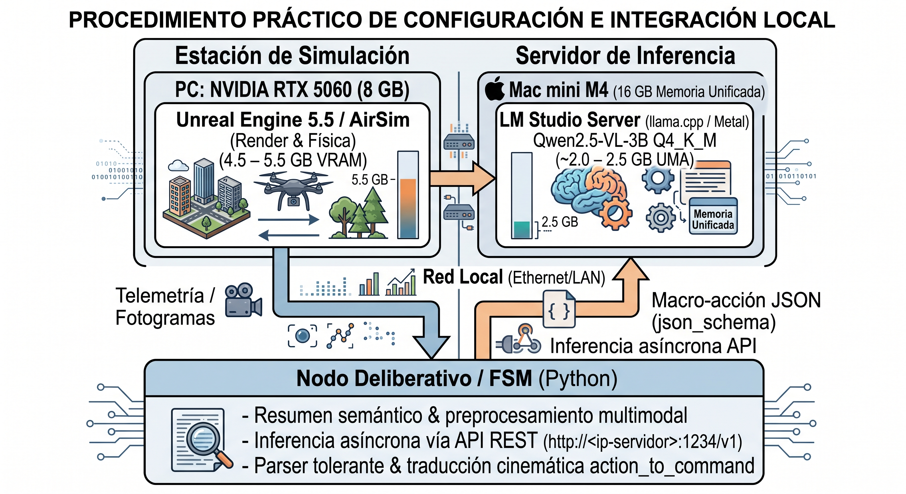
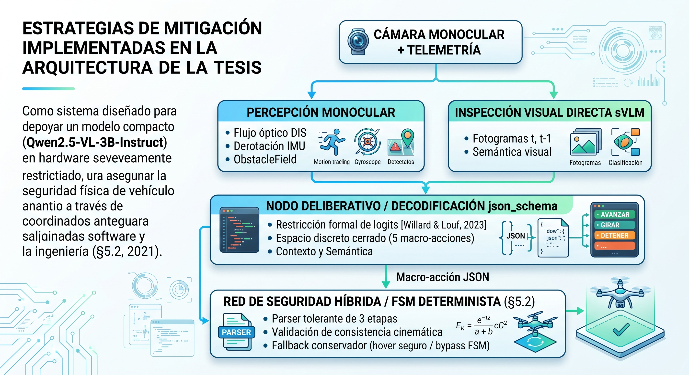
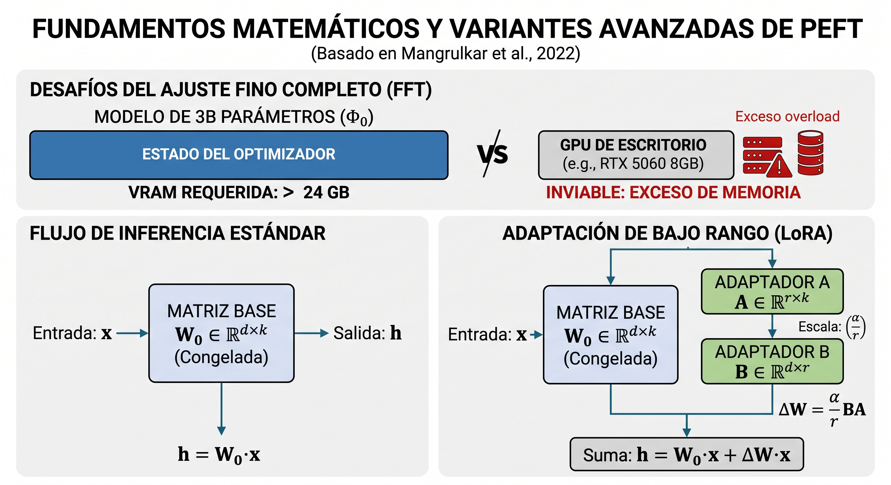
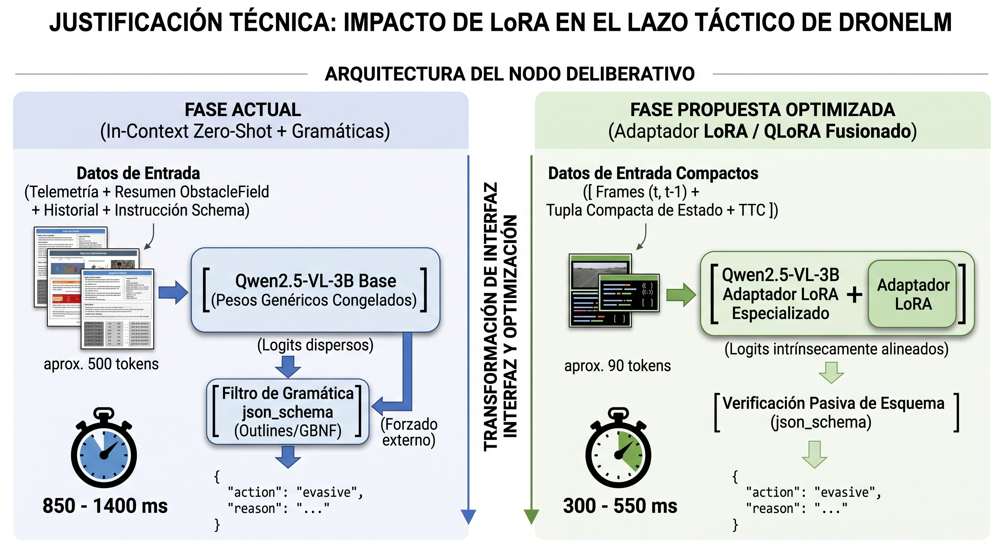
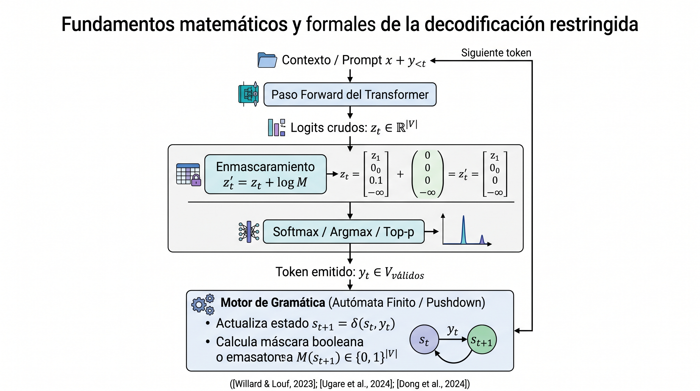
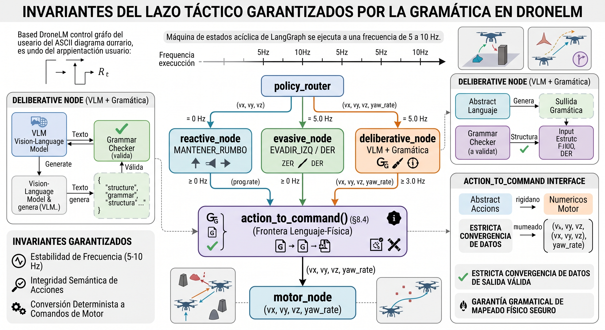

Navegación Autónoma de Drones Urbanos con Visión Monocular y Small Language Model (SLM)¶
Tesis para Magister en Ciencia de Datos¶
Maestría en Ciencia de Datos - 2024/2025¶
Directores:
Alumno:
Resumen¶
La navegación autónoma de cuadricópteros eVTOL en entornos urbanos densos —como el de Buenos Aires— enfrenta severos desafíos derivados de la alta densidad de obstáculos, la degradación de señales satelitales y las restricciones presupuestarias que descartan sensores de alto costo como LiDAR. Para abordar esta problemática bajo estrictas restricciones de hardware y en conformidad con las normativas locales (ANAC Res. 880/2019), esta tesis presenta un sistema integral de planificación previa, percepción monocular y decisión táctica basado exclusivamente en visión monocular y modelos de lenguaje pequeños (SLM) locales.
La arquitectura desacopla un módulo de planificación deliberativa en tierra (estación de control WebDCS, que compila directivas en lenguaje natural a un manifiesto inmutable de navegación) de un lazo táctico a bordo de alta frecuencia. El módulo de percepción implementa un pipeline ligero de flujo óptico denso derotado mediante telemetría de actitud, mapeo de ocupación espacial (ObstacleField) y estimación de Tiempo-a-Colisión (TTC) a partir de la divergencia del campo de flujo, alcanzando un área bajo la curva ROC de 0.96–0.97 en su validación frente a canales de profundidad de referencia. En la capa de decisión a bordo, se implementa una arquitectura híbrida de decisión por ciclo gobernada por un SLM (modelos de 2B–4B parámetros ejecutados localmente con decodificación estructurada json_schema) y orquestada mediante grafos de estados con salvaguardas deterministas.
El desarrollo y la experimentación se realizan en el simulador Cosys-AirSim sobre Unreal Engine, empleando el entorno urbano Sample City como plataforma principal de validación y benchmark, y calibrando la dinámica de vuelo contra conjuntos de datos de telemetría de drones comerciales reales. El trabajo documenta una evaluación comparativa sistemática del brazo SLM frente a Máquinas de Estados Finitos (FSM) y control puramente reactivo, analizando métricas de tasa de éxito de misión, tiempo de reacción y longitud de trayectoria ponderada por éxito (SPL). Asimismo, se identifican y analizan los modos de falla estructurales propios de sistemas robóticos asistidos por modelos de lenguaje, demostrando que los errores críticos en la toma de decisiones se originan predominantemente en degradaciones silenciosas del contrato de datos de la interfaz de percepción antes que en el razonamiento del modelo.
Palabras clave¶
Navegación Autónoma de Drones | Visión Monocular | Flujo Óptico | Tiempo-a-Colisión (TTC) | Small Language Models (SLM) | Máquinas de Estados Finitos (FSM) | Control Táctico Híbrido | Simulación en Unreal Engine / Cosys-AirSim | Robótica Urbana de Bajo Costo
1. Introducción¶
1.1 Motivación y contexto¶
Los drones autónomos han cruzado en los últimos años la frontera que separa la plataforma experimental de la infraestructura real. En el frente civil, el mercado global de UAVs comerciales alcanzó los USD 28,6 mil millones en 2025 con una proyección de superar los USD 52,1 mil millones en 2029, impulsado por entregas de última milla, movilidad aérea urbana, inspección de infraestructura crítica y agricultura de precisión (Dataintelo, 2025). En el frente militar, la guerra en Ucrania consolidó al dron autónomo como el activo táctico más transformador del conflicto moderno: en 2024, Ucrania fabricó cerca de dos millones de drones y reentrenó modelos de inteligencia artificial con datos de combate real, multiplicando por tres o cuatro la tasa de impacto de sus sistemas aéreos (Breaking Defense, 2025). En ambos escenarios, el denominador técnico común es la misma exigencia: un vehículo de bajo costo debe percibir su entorno, tomar decisiones en milisegundos y actuar sin intervención humana directa en el lazo, con hardware de borde limitado y a menudo en ausencia de conectividad.
Argentina enfrenta esta convergencia tecnológica con cuatro urgencias concretas y simultáneas. La primera es la vigilancia del litoral marítimo: la Zona Económica Exclusiva comprende aproximadamente 1,6 millones de km² —incluyendo áreas críticas para la pesca comercial, la seguridad marítima y la soberanía territorial en el Atlántico Sur y Malvinas—, un espacio imposible de cubrir de forma continua con medios tripulados a costo razonable. En mayo de 2026, Argentina formalizó un acuerdo con los Estados Unidos para incorporar drones militares VTOL Shield AI V-Bat y aeronaves de patrulla bajo la Maritime Domain Situational Awareness Initiative (Infobae, 2026), y una propuesta legislativa de julio de 2026 impulsa la creación de un Sistema Nacional de Vigilancia Marítima con UAVs (El Estratégico, 2026).
La segunda es la respuesta temprana a incendios forestales: los incendios en la Patagonia y el litoral fluvial son uno de los riesgos ambientales y económicos más severos del país; el Ministerio de Ambiente ya incorporó 17 UAVs autónomos en parques nacionales de Neuquén y Chubut, y la Provincia de Misiones avanza en despacho autónomo de drones inmediatamente tras la detección de una columna de humo.
La tercera es la agricultura de precisión, el dominio de adopción más masiva y de crecimiento más acelerado del agro argentino: la superficie tratada con drones pasó de 50.000 hectáreas en 2024 a un millón de hectáreas en julio de 2025, con una proyección de superar los dos millones al cierre de la campaña gruesa 2026 (Dataportuaria, 2026), impulsada por una flota que creció de 90 equipos importados en 2023 a 600 en agosto de 2024 y una proyección de 2.000 unidades operativas para 2025 (Infocampo, 2025). El uso dominante es la pulverización dirigida de fitosanitarios y la fertilización —con rendimientos de hasta 35 ha/hora—, pero la Red de Drones del INTA, con más de 65 investigadores y 22 pilotos licenciados distribuidos en el país, ya despliega la tecnología en fenotipado de cultivos extensivos, detección temprana de enfermedades en frutales y vid, y monitoreo ganadero (INTA, 2025). Es, además, un dominio donde la autonomía de decisión ya se explora activamente: INTA y la Universidad Nacional de Catamarca ensayan drones con reconocimiento por IA para detectar y corregir en tiempo real fallas de plantación de caña de azúcar en el NOA (Agrolatam, 2025). El crecimiento no está acompañado por un marco regulatorio específico: el SENASA todavía no estableció un régimen propio para la aplicación de fitosanitarios con drones, pese a la actualización de las normas de aviación no tripulada (Infocampo, 2025) —el mismo tipo de vacío regulatorio que atraviesa los otros tres dominios de este trabajo—.
La cuarta urgencia es la que articula directamente el entorno experimental de este trabajo: la seguridad y la logística aérea urbana en Buenos Aires. La Ciudad Autónoma de Buenos Aires abrió en 2025 el marco para la entrega comercial con drones (iProfesional, 2025), y la ANAC publicó la Resolución 319/2025 —que aprueba la Parte 100 del Reglamento Aeronáutico Civil Argentino— y la Resolución 550/2025, que desregulan y simplifican la operación de aeronaves no tripuladas en el espacio aéreo nacional. Pero la operación de UAVs en ese mismo tejido urbano ya no es una promesa regulatoria sino una práctica establecida: el Escuadrón de Drones de la Policía de la Ciudad —integrado a un sistema de videovigilancia con 850 puntos de captura, 3.400 cámaras y 82 % de cobertura territorial a julio de 2025, sostenido por una inversión cercana a los USD 48 millones (Perfil, 2026)— vuela unidades DJI Matrice 200 con seguimiento automático de personas y vehículos y sensores capaces de detectar cables de un milímetro de diámetro, en misiones de apoyo a persecuciones, localización de focos de incendio y búsqueda de personas extraviadas, incluso sobre la Reserva Ecológica y el Riachuelo (Buenos Aires Ciudad, 2023). Buenos Aires concentra en su tejido urbano los desafíos técnicos más exigentes del dominio: densidad edilicia extrema en el Microcentro y Palermo con cañones de 8–12 pisos, degradación severa del GPS dentro de esos cañones, cables de alta y baja tensión a baja altura, interferencia electromagnética y proximidad al espacio controlado de Aeroparque. En los cuatro dominios, el problema técnico de fondo es idéntico: decidir, en tiempo real y con percepción limitada, qué hacer a continuación.
La navegación autónoma en entornos urbanos densos agrega capas de dificultad que no aparecen en espacios abiertos: alta densidad de obstáculos fijos y móviles, degradación de la señal GPS por la altura de los edificios (urban canyon), variaciones extremas de iluminación y, en el contexto latinoamericano en particular, restricciones de presupuesto que descartan sensores costosos como el LiDAR y la obligación de operar bajo marcos regulatorios específicos (Resolución ANAC 880/2019; Decreto 663/2024). Un dron sin percepción confiable y sin capacidad de decisión robusta representa un riesgo tangible: puede colisionar, invadir zonas sensibles o interferir con otras operaciones, con consecuencias humanas y económicas concretas (Samy et al., 2019; Aldao et al., 2022).
Este trabajo se enmarca en esa tensión: cómo dotar a un cuadricóptero eVTOL de navegación autónoma reactiva usando exclusivamente visión monocular y hardware de bajo costo —sin redes neuronales de detección, sin LiDAR, sin GPU dedicada de alto costo—, manteniendo rigor metodológico y un diseño de seguridad explícito.
1.2 Objetivos¶
Objetivo general. Desarrollar un sistema de visión por computadora basado en percepción monocular con capacidad de navegación autónoma de cuadricópteros eVTOL, aplicable a logística urbana, mantenimiento de infraestructura, agricultura de precisión, vigilancia de áreas extensas y atención de emergencias en escenarios representativos del territorio argentino.
Objetivos específicos:
- Implementar un pipeline reproducible sobre el simulador Cosys-AirSim (basado en Unreal Engine 5.5) que permita validar el desempeño del sistema de navegación en condiciones controladas, repetibles y con telemetría calibrada frente a vuelos reales.
- Integrar detección de obstáculos y navegación reactiva a partir de percepción monocular ligera —flujo óptico denso derotado, estimación de TTC, mapa de ocupación espacial— optimizada para hardware de bajo costo, de modo de sostener un caso de negocio viable para economías con recursos limitados.
- Evaluar el rendimiento de un modelo de lenguaje pequeño (SLM) como capa de decisión táctica frente a una máquina de estados finitos (FSM) —el estándar de facto en pilotos automáticos— y frente a un controlador puramente reactivo, usando tasa de éxito de misión, tiempo de reacción y longitud de trayectoria ponderada por éxito (SPL) como métricas de comparación en entornos urbanos de complejidad creciente.
- Documentar con evidencia medida los modos de falla estructurales de la integración SLM–lazo de control, identificando patrones transferibles a los dominios de aplicación de alta pertinencia local (vigilancia marítima, respuesta a incendios forestales, agricultura de precisión) donde los recursos computacionales de borde y la ausencia de conectividad imponen las mismas restricciones estudiadas en el entorno experimental.
1.3 Alcance y diseño de la arquitectura¶
El sistema de navegación propuesto implementa una arquitectura de percepción monocular ligera sin redes neuronales de detección, basada en flujo óptico denso derotado mediante telemetría de actitud y estimación física del Tiempo-a-Colisión (TTC). Esta elección de diseño responde a fundamentos técnicos y computacionales concretos:
- Eficiencia y presupuesto de cómputo: En plataformas robóticas de bajo costo que comparten CPU con la inferencia local de un modelo de lenguaje, la estimación geométrica por flujo óptico reduce drásticamente la latencia por ciclo frente a detectores de objetos basados en aprendizaje profundo.
- Robustez fuera de distribución (OOD): A diferencia de modelos supervisados dependientes de categorías predefinidas de obstáculos, el cálculo de divergencia del campo de flujo modela directamente el fenómeno físico de aproximación: reacciona ante cualquier geometría sin importar su textura o clase semántica, una propiedad crítica en entornos no estructurados como el litoral marítimo o un área de incendio.
- Adecuación a la geometría del vuelo urbano: Para un cuadricóptero con cámara frontal en cañón urbano, el campo visual está dominado por estructuras verticales y fachadas. El flujo óptico traslacional permite estimar la ocupación espacial (
ObstacleField) en cuadrantes discretos de forma directa y determinista sin ningún entrenamiento previo.
La capa de decisión implementa un modelo de lenguaje pequeño cuantizado (Qwen2.5-VL-3B, 2–4 B de parámetros) ejecutado localmente con decodificación estructurada mediante json_schema, orquestado por un grafo LangGraph con salvaguardas deterministas. El capítulo 6 desarrolla los fundamentos del módulo de percepción y el capítulo 8 la ingeniería de la capa de decisión.
1.4 El hilo conductor de la tesis¶
En arquitecturas robóticas híbridas donde un modelo de lenguaje consume descripciones simbólicas o estructuradas del entorno para tomar decisiones de navegación, la integridad del contrato de interfaz entre la percepción y el modelo resulta crítica. La experiencia experimental demuestra que el fallo más severo en estos sistemas no radica en la capacidad de razonamiento del modelo de lenguaje, sino en la fidelidad y consistencia del contrato de datos que lo alimenta.
Cuando la capa de percepción o el estado del sistema entrega representaciones desincronizadas, degradadas o vacías, los modelos de lenguaje tienden a generar respuestas sintácticamente válidas y aparentemente razonables a partir de premisas falsas. Dado que el modelo no se interrumpe con excepciones visibles y el vehículo continúa su trayectoria, estas fallas resultan estructuralmente invisibles si solo se observa el comportamiento cinemático superficial. Zhu et al. (2024) plantean formalmente la pregunta de hasta qué punto los LLMs comprenden el contexto que reciben; este trabajo la responde empíricamente desde el ángulo opuesto: ¿qué ocurre cuando el contexto que el modelo recibe está sistemáticamente corrompido?
Este principio —la necesidad de validación formal, auditoría de contratos de datos y salvaguardas deterministas en lazos de control asistidos por SLM— constituye el hilo conductor de este trabajo. Su relevancia se extiende más allá del entorno de simulación: en aplicaciones de patrulla marítima, respuesta a incendios forestales o pulverización dirigida en agricultura de precisión —donde un fallo silencioso del contrato de datos no distingue un obstáculo real de un falso positivo, con consecuencias que en el agro se traducen directamente en aplicación errónea de fitosanitarios— y donde el UAV opera sin cobertura de red y sin supervisión humana directa, la robustez del contrato de datos entre percepción y decisión no es una propiedad académica sino un requisito operacional. El capítulo 9 documenta de manera sistemática los cinco modos de falla estructurales identificados en la integración de estos componentes y las salvaguardas implementadas para mitigarlos; el capítulo 12 los retoma como conclusión central y proyecta sus implicancias hacia los dominios de aplicación descriptos.
1.5 Estructura del informe¶
El capítulo 2 sitúa este trabajo respecto de la literatura relevante en cuatro líneas: navegación autónoma de UAVs desde la planificación clásica hasta el control adaptativo (§2.1); percepción monocular para detección y evitación de obstáculos (§2.2); arquitecturas de control asistidas por modelos de lenguaje —incluyendo los trabajos más recientes de 2025-2026 sobre modelos VLA y SLM en UAVs— (§2.3); y cuatro dominios de aplicación de alta pertinencia local para Argentina —vigilancia del litoral marítimo, incendios forestales, agricultura de precisión y seguridad/logística urbana en Buenos Aires— donde el patrón técnico de este trabajo se transfiere directamente (§2.4), seguidos del posicionamiento explícito de esta tesis en el espacio de soluciones (§2.5).
El capítulo 3 describe la construcción del entorno de simulación —Unreal Engine 5.5 con Cosys-AirSim y la jerarquía de tres entornos de dificultad creciente (MiniSim, TownSim, CitySim)— y su validación estadística frente a telemetría de vuelos reales. El capítulo 4 documenta la planificación deliberativa en tierra y la estación de control WebDCS. Los capítulos 5 a 9 documentan la arquitectura del lazo táctico a bordo: el grafo de control LangGraph completo (cap. 5), la percepción monocular sin redes neuronales (cap. 6), la validación experimental del TTC (cap. 7), la capa de decisión del SLM con decodificación restringida (cap. 8) y los modos de falla específicos de lazos híbridos con modelos de lenguaje (cap. 9). El capítulo 10 describe la metodología experimental —diseño factorial, brazos de comparación y métricas—. Los capítulos 11 y 12 sintetizan los resultados comparativos y las conclusiones, complementados por las referencias bibliográficas estructuradas en el capítulo 13.
2. Estado del arte y trabajos relacionados¶
Los drones autónomos han dejado de ser una curiosidad tecnológica para convertirse simultáneamente en infraestructura civil crítica y en uno de los factores más determinantes de la guerra moderna, dos procesos que —aunque distintos en sus objetivos— comparten la misma presión técnica de fondo: la necesidad de que el vehículo tome decisiones correctas sin intervención humana en el lazo, a baja altitud, con recursos de cómputo limitados y en entornos no controlados. En el frente civil, el mercado global de UAVs comerciales alcanzó los USD 28,6 mil millones en 2025 y se proyecta que supere los USD 52,1 mil millones en 2029 (Dataintelo, 2025), impulsado por entregas de última milla, movilidad aérea urbana (UAM), inspección automatizada de infraestructura —tendidos eléctricos, oleoductos, torres de telecomunicaciones— y agricultura de precisión. Agencias reguladoras como la FAA, la EASA y la CAAC han ampliado progresivamente las autorizaciones de operaciones BVLOS (Beyond Visual Line of Sight) durante 2025-2026, abriendo la puerta a redes de drones autónomos operadas comercialmente a escala (Coptrz, 2026; MDPI Drones, 2026). En el frente militar, la guerra en Ucrania (2022–presente) se consolidó como el primer conflicto a gran escala en que los UAVs —drones FPV de primera persona, municiones merodeadoras y enjambres coordinados— desempeñan un papel táctico central. Ucrania fabricó cerca de dos millones de drones en 2024; sus fuerzas reentrenaron modelos de IA con datos clasificados de combate real, lo que multiplicó por tres o cuatro la tasa de impacto de sus sistemas aéreos autónomos (Breaking Defense, 2025). En respuesta, Rusia estableció a fines de 2024 su propia rama de sistemas no tripulados. El conflicto aceleró además la investigación sobre guerra de contramedidas electrónicas y navegación sin GPS, haciendo de la autonomía robusta de borde un problema de primer orden tanto técnico como estratégico (CSIS, 2024; Modern War Institute, s.f.). Esta doble presión —demanda civil de escala y urgencia militar operacional— imprime relevancia directa a la pregunta que articula este trabajo: cómo dotar a un UAV de capacidad de decisión contextual con recursos computacionales de borde reducidos.
2.1 Navegación autónoma de UAVs: de la planificación clásica al control adaptativo¶
Los primeros enfoques de navegación autónoma en entornos urbanos combinan planificación global sobre datos geográficos con evasión reactiva de obstáculos móviles. Castelli et al. (2016) proponen un sistema híbrido para vuelo seguro a baja altitud que combina el algoritmo A con datos GIS y replanificación dinámica, priorizando rutas sobre techos en lugar de calles para aumentar la distancia de seguridad frente a objetos en movimiento. Hughes y Engelbrecht (2023) extienden esta idea a enjambres, con planificación de largo plazo y evasión cooperativa basada en bounding volume hierarchies* y diagramas de Voronoi sobre un modelo 3D tipo Manhattan —el mismo tipo de trazado urbano en cuadrícula que emplea el entorno de evaluación densa de este trabajo (CitySim / Tier 2;ver capítulos 3 y 10)—.
Frente a estos enfoques deliberativos, las máquinas de estados finitos (FSM) siguen siendo el estándar de facto en pilotos automáticos por su predictibilidad y bajo costo computacional: Hu et al. (2024) las emplean para coordinación cooperativa de enjambres en emergencias, y Hoang et al. (2024) las utilizan como base de un sistema de recarga autónoma sobre líneas de alta tensión. Su limitación es estructural: una FSM no interpreta contexto más allá de los umbrales sobre los que fue diseñada. Ese contraste —predictibilidad y bajo costo de la FSM frente a la promesa de adaptabilidad contextual de un modelo de lenguaje— es precisamente el eje de la comparación experimental de este trabajo (cap.10), y es también donde AlMahamid y Grolinger (2022) y Bouhamed et al. (2020) sitúan al aprendizaje por refuerzo como tercera vía: políticas aprendidas en lugar de reglas explícitas o inferencia de un modelo de lenguaje.
2.2 Percepción monocular para detección y evitación de obstáculos¶
La adopción de una arquitectura de percepción monocular ligera sin redes neuronales profundas (cap. 6) se fundamenta en una línea de investigación consolidada sobre detección de obstáculos por visión artificial clásica. Badrloo y Varshosaz (2017) revisan el estado del arte de la detección monocular en robótica móvil, mientras que Molineros et al. (2012) y Chen et al. (2016) analizan la estimación de riesgo mediante flujo residual y análisis 3D.
Por otra parte, técnicas clásicas basadas en Mapeo de Perspectiva Inversa (IPM), como las propuestas por Kaneko et al. (2017) y retomadas por Zhou et al. (2026), asumen la existencia de un plano de suelo dominante en el campo de visión, una hipótesis adecuada para vehículos terrestres o cámaras cenitales pero inaplicable a cuadricópteros con cámara frontal a baja altitud en cañones urbanos, donde el campo visual está dominado por estructuras verticales y fachadas.
En contraste, el uso de flujo óptico denso traslacional constituye una solución físicamente rigurosa y libre de entrenamiento supervisado. Vera-Yanez et al. (2024) desarrollan un detector de obstáculos aéreos basado íntegramente en flujo óptico —morfología, foco de expansión (focus of expansion, FOE) y agrupamiento—, demostrando que desacoplar la rotación propia del movimiento traslacional permite aislar los vectores de aproximación generados por objetos en la trayectoria. Este principio físico —la divergencia del campo traslacional como estimador directo del Tiempo-a-Colisión (TTC)— constituye la base matemática del módulo de percepción y estimación de TTC implementado en este trabajo (cap. 6 y 7). Enfoques alternativos basados en aprendizaje profundo monocular (Rill y Faragó, 2021; Shi et al., 2024) logran estimaciones densas de profundidad pero introducen una alta carga computacional y sensibilidad a dominios no vistos, justificando la preferencia por métodos geométricos deterministas en plataformas de bajo costo.
2.3 Arquitecturas de control asistidas por modelos de lenguaje¶
La idea de utilizar modelos de lenguaje como capa de razonamiento de alto nivel en un robot fue articulada con precisión por Vemprala et al. (2023) en un trabajo seminal de Microsoft Research que emplea ChatGPT para programar misiones de drones e inspección sobre una instancia de AirSim —el mismo simulador que sustenta este trabajo—. El resultado clave de Vemprala et al. no es el rendimiento en ninguna tarea específica sino la demostración de que un LLM puede generar código ejecutable de control aéreo a partir de instrucciones en lenguaje natural, separando el razonamiento semántico de la ejecución motora: una arquitectura que se volvería referencia en los años siguientes. Chahine et al. (2023) añaden una perspectiva complementaria sobre robustez fuera de distribución con redes neuronales líquidas como capa de control; Zhu et al. (2024) estudian específicamente hasta qué punto los modelos de lenguaje entienden el contexto que se les provee, una pregunta directamente relevante para el capítulo 9 de este trabajo, donde el problema no es la capacidad de razonamiento del modelo sino la integridad del contexto que efectivamente recibe.
La maduración del campo entre 2024 y 2026 fue rápida. Tian et al. (2025) publican la revisión sistemática más amplia disponible sobre la intersección de LLMs y UAVs —aceptada en Information Fusion—, organizando el espacio de soluciones en un marco Percepción–Cognición–Acción (P–C–A) y concluyendo que la disponibilidad de despliegue depende no solo de la capacidad del modelo sino de interfaces verificables que traduzcan salidas semánticas en representaciones accionables por los módulos de vuelo descendentes. Esta conclusión coincide con la motivación de diseño del capítulo 8 de este trabajo, que trata la decodificación restringida vía json_schema precisamente como esa interfaz verificable. Por su parte, la emergencia de los modelos de Vision-Language-Action (VLA) representa el paso siguiente: Sun et al. (2026) presentan AutoFly, un modelo VLA de extremo a extremo para navegación autónoma de UAVs en exteriores sin instrucciones detalladas —basado en un pseudo-codificador de profundidad a partir de RGB y entrenamiento en dos etapas—, logrando tasas de éxito de navegación 3,9 puntos porcentuales por encima del estado del arte anterior. Saxena et al. (2025) abordan un problema relacionado desde la perspectiva de la navegación por lenguaje: su sistema UAV-VLN integra un VLM para interpretar instrucciones en lenguaje natural y guiar la navegación de forma end-to-end sin entrenamiento supervisado por tarea. Estos desarrollos sitúan en perspectiva el trabajo aquí presentado: mientras la frontera investigativa de 2026 opera con VLA completos y modelos de varios miles de millones de parámetros, la pregunta que este trabajo responde es qué tan lejos puede llegar un SLM cuantizado de 1–4B parámetros ejecutado localmente —sin nube, sin entrenamiento especializado— como capa de decisión en un lazo de control real, y cuáles son sus modos de falla documentables.
Dos líneas de trabajo son especialmente pertinentes para la ingeniería de decisiones del SLM descripta en el capítulo 8. Por un lado, la generación de salida estructurada y restringida: Geng et al. (2025) sistematizan el estado del arte en generación de salidas estructuradas desde modelos de lenguaje —el problema exacto que resuelve, en este trabajo, la decodificación restringida vía json_schema con parser tolerante como red de contención (cap. 8)—, y Raspanti et al. (2025) muestran que la decodificación con gramática restringida mejora específicamente el desempeño en tareas de análisis lógico estructurado. Por otro lado, la simulación de alta fidelidad como banco de pruebas: Shah et al. (2017) introducen AirSim, el simulador sobre el que se desarrolla y valida este trabajo, y Jansen et al. (2023) presentan una variante extendida (Cosys-AirSim) para aplicaciones industriales complejas, evidencia de que AirSim sigue siendo, varios años después, una base activa para este tipo de investigación.
2.4 Dominios de aplicación de alta pertinencia local: vigilancia del litoral marítimo, incendios forestales, agricultura de precisión y seguridad/logística urbana en Buenos Aires¶
La demanda de autonomía robusta en UAVs que articula este trabajo no es solo un problema de investigación genérico: cuatro dominios aplicados de particular relevancia para Argentina muestran que los desafíos técnicos abordados —percepción monocular en tiempo real, evasión reactiva de obstáculos y decisión contextual de borde— son exactamente los requeridos en implementaciones operacionales inminentes.
Vigilancia del litoral marítimo. La Zona Económica Exclusiva argentina comprende aproximadamente 1,6 millones de km², una extensión imposible de cubrir de forma continua con medios tripulados a costo razonable. Argentina formalizó en mayo de 2026 un acuerdo con los Estados Unidos para incorporar drones V-Bat de Shield AI —sistemas VTOL que no requieren modificaciones en las embarcaciones desde las que operan— y aeronaves de patrulla marítima King Air B360 ER, bajo la Maritime Domain Situational Awareness Initiative (Infobae, 2026). En paralelo, una propuesta legislativa presentada en julio de 2026 plantea la creación de un Sistema Nacional de Vigilancia Marítima con drones, complementario a los despliegues navales tripulados (El Estratégico, 2026). La literatura académica específica sobre vigilancia marítima autónoma con UAVs en el litoral argentino es aún incipiente; sin embargo, el trabajo de Barišić Kulas et al. (2025) —presentado en ICUAS 2025— constituye una referencia técnica directa: los autores desarrollan un sistema completamente autónomo para detección e identificación de embarcaciones sobre grandes áreas marítimas con UAV en entornos de denegación de GNSS, empleando visión onboard con YOLOv8 y fusión de histogramas de matiz para identificar la embarcación objetivo bajo restricciones computacionales estrictas de borde. El problema técnico es isomorfo al de la patrulla costera: un vehículo autónomo debe procesar su entorno visual en tiempo real y tomar decisiones de seguimiento sin apoyo externo, en las mismas condiciones que este trabajo estudia en simulación.
Respuesta temprana a incendios forestales tras detección satelital. Los incendios en la Patagonia y el litoral fluvial representan uno de los riesgos ambientales y económicos más importantes del país. El Ministerio de Ambiente incorporó 17 UAVs para detección temprana de focos en parques nacionales de Neuquén y Chubut —incluyendo Lanín, Laguna Blanca, Los Alerce y Lago Puelo— con vuelo autónomo y transmisión en tiempo real a estaciones de tierra (Argentina.gob.ar, s.f.). La Provincia de Misiones avanza en un esquema más sofisticado: torres de videovigilancia con IA que, al detectar una columna de humo, programan automáticamente el vuelo de un dron autónomo hacia el foco para obtener coordenadas precisas antes de que el fuego se propague (Norte Misionero, 2026). La convergencia entre detección satelital y respuesta inmediata con UAVs es el tema de una línea de investigación en rápido crecimiento a nivel internacional. Liu y Sziranyi (2023) proponen una arquitectura de fusión que combina imágenes Sentinel-2 para localizar el foco activo con UAVs que realizan segmentación de caminos y planificación dinámica de rutas de evacuación en el área central del incendio, validada sobre el incendio de Chongqing de agosto de 2022. Danish et al. (2025), en una revisión sistemática exhaustiva publicada en Artificial Intelligence Review, mapean el estado del arte de los sistemas de gestión de incendios forestales con UAVs de visión artificial —desde detección hasta supresión— cubriendo más de siete años de producción científica. El trabajo más reciente en esta línea combina ambas fuentes en una arquitectura UAV–satélite: el pipeline usa datos históricos satelitales para priorizar zonas de patrulla y lanza múltiples UAVs de forma coordinada para detección temprana y predicción dinámica del perímetro, alcanzando un F1-score del 97,4 % con consumo energético minimizado para maximizar la autonomía de vuelo (Drones, 10(4), 263; DOI: 10.3390/drones10040263).
Agricultura de precisión. A diferencia de la vigilancia marítima y la respuesta a incendios, la agricultura de precisión con drones ya es, en Argentina, una tecnología en adopción masiva y no una promesa: la superficie tratada con UAVs pasó de 50.000 hectáreas en 2024 a un millón en julio de 2025, con una proyección de superar los dos millones al cierre de la campaña gruesa 2026 (Dataportuaria, 2026), sostenida por una flota que creció de 90 equipos importados en 2023 a 600 en agosto de 2024 (Infocampo, 2025). El uso dominante —pulverización dirigida de fitosanitarios y fertilización, con rendimientos operativos de hasta 35 ha/hora— convive con dos limitaciones estructurales bien documentadas en la prensa especializada: la autonomía de batería restringe cada vuelo a 3-4 hectáreas y el SENASA todavía no estableció un marco regulatorio específico para la aplicación aérea de agroquímicos con drones, a diferencia de la normativa de aviación no tripulada ya actualizada (Infocampo, 2025). La Red de Drones del INTA —más de 65 investigadores y 22 pilotos licenciados en unas 20 líneas de investigación distribuidas en el país— extiende el uso más allá de la pulverización hacia el fenotipado de biomasa en cultivos extensivos, la detección temprana de enfermedades en frutales y vid, y el monitoreo ganadero y de pasturas (INTA, 2025); un caso puntual reciente en el NOA combina drones con reconocimiento por IA para detectar y corregir en tiempo real fallas de plantación de caña de azúcar durante el propio proceso de siembra (Agrolatam, 2025), un patrón de "percibir y decidir en el mismo ciclo operativo" formalmente análogo al lazo táctico que este trabajo evalúa.
La literatura académica internacional sobre navegación autónoma de UAVs en agricultura converge, además, en el mismo problema técnico central de este trabajo: la evasión de obstáculos con percepción de borde. Zhang et al. (2024) proponen un algoritmo de planificación de trayectoria con prioridad de distancia mínima específicamente calibrado para agricultura de precisión, optimizando cobertura de área bajo restricciones de autonomía de batería —la misma restricción que limita la pulverización con drones en Argentina a 3-4 hectáreas por vuelo—. Wei et al. (2025) abordan el problema más cercano a la arquitectura de este trabajo: navegación de UAVs dentro de las hileras de un huerto usando exclusivamente una cámara frontal, con un controlador basado en aprendizaje por imitación que evita colisiones con el canopeo sin depender de mapas previos del terreno, logrando mayor distancia de vuelo autónomo con menor intervención humana. Li et al. (2025) resuelven el mismo problema —evasión de ramas y obstáculos en huertos para UAVs de cosecha— con un enfoque distinto, basado en LiDAR y un algoritmo híbrido A* con curvas B-spline; el contraste entre ambos trabajos (visión monocular pura vs. LiDAR) reproduce en el dominio agrícola la misma disyuntiva de costo-sensorial que motiva la elección de percepción monocular sin LiDAR de este trabajo (cap. 6). Castro et al. (2020), en un antecedente latinoamericano directo, aplican aprendizaje profundo sobre imágenes RGB capturadas por UAV para fenotipar biomasa en pasturas forrajeras brasileñas —el mismo tipo de sensor de bajo costo (cámara RGB, sin LiDAR ni multiespectral) que emplea este trabajo, aplicado a un problema de monitoreo en lugar de navegación—.
Seguridad urbana y logística aérea en Buenos Aires. A diferencia de los tres dominios anteriores, éste es el único que ya opera UAVs dentro del mismo tejido urbano denso que reproduce el entorno de evaluación de este trabajo (TownSim/CitySim, Tier 1 y 2, cap. 3 y 10) — no en simulación ni en proyecto piloto, sino en operación diaria. El Escuadrón de Drones de la Policía de la Ciudad, integrado a un sistema de videovigilancia con 850 puntos de captura, 3.400 cámaras y 82 % de cobertura territorial a julio de 2025, sostenido por una inversión cercana a los USD 48 millones (Perfil, 2026), vuela unidades DJI Matrice 200 con seguimiento automático de personas y vehículos y sensores de detección de obstáculos capaces de identificar cables de un milímetro de diámetro —el mismo desafío de percepción de estructuras delgadas y de bajo contraste que enfrenta el estimador de flujo óptico de este trabajo en cañón urbano (cap. 6)—, en misiones de apoyo a persecuciones, localización de focos de incendio y búsqueda de personas extraviadas sobre la Reserva Ecológica y el Riachuelo (Buenos Aires Ciudad, 2023). A esto se suma la apertura regulatoria para logística comercial: la Ciudad habilitó en 2025 la entrega comercial con drones (iProfesional, 2025) y la ANAC actualizó el marco nacional con las Resoluciones 319/2025 y 550/2025. El denominador técnico de ambos usos —seguridad y logística— es el mismo que motiva a Hughes y Engelbrecht (2023), §2.1 a elegir un trazado urbano tipo Manhattan para evaluar la evasión cooperativa de enjambres: cañones urbanos en cuadrícula regular, degradación de GPS por la altura de los edificios y proximidad constante a estructuras verticales y cableado —exactamente la morfología que el Tier 2 (CitySim) de este trabajo reproduce (cap. 3 y 10)—.
En los cuatro dominios, el patrón técnico subyacente —un vehículo autónomo que procesa información perceptual en tiempo real, toma decisiones sin intervención humana y actúa bajo restricciones de cómputo de borde— es exactamente el que este trabajo estudia y evalúa en entorno de simulación. La agricultura de precisión añade, respecto de la vigilancia marítima y la respuesta a incendios, una condición operativa que ambas no comparten: el UAV vuela en proximidad cercana y persistente a obstáculos semiestructurados —canopeo, ramas, alambrados, líneas de media tensión rurales— con tolerancia a error mínima, exactamente la morfología de obstáculo orgánico que el Tier 1 de este trabajo (TownSim) reproduce sobre vegetación urbana. La seguridad y logística urbana en Buenos Aires cierra el círculo entre escenario de evaluación y aplicación real: es el único de los cuatro dominios donde el desafío técnico no se proyecta a futuro ni se transfiere por analogía, sino que ya opera, hoy, en el mismo tipo de cañón urbano que constituye el Tier 2 de este trabajo. La ausencia de literatura académica argentina específica sobre los otros tres dominios no resta relevancia a los resultados; al contrario, señala una oportunidad de transferencia directa de los métodos y hallazgos documentados en los capítulos siguientes hacia dominios de alto impacto civil local.
2.5 Posicionamiento de este trabajo¶
Este trabajo se ubica en la intersección de esas tres líneas —percepción monocular sin redes neuronales, control por FSM como línea de base, y un SLM con salida restringida como capa de decisión alternativa— pero con un énfasis distinto al de buena parte de la literatura revisada. Mientras la frontera de investigación de 2025-2026 (Tian et al., 2025; Sun et al., 2026) opera con modelos VLA de gran escala y múltiples miles de millones de parámetros en hardware especializado, este trabajo aborda deliberadamente el extremo opuesto del espectro: un SLM cuantizado de 1–4B parámetros ejecutado en CPU de borde, sin nube, sin entrenamiento por tarea. En lugar de proponer una arquitectura novedosa de percepción o de razonamiento, documenta con evidencia medida los modos de falla específicos de integrar un modelo de lenguaje pequeño en un lazo de control real —un tipo de resultado poco frecuente en la literatura publicada, que tiende a reportar arquitecturas que funcionan más que arquitecturas que fallaron de manera instructiva y cómo se detectó y corrigió esa falla—. Esta contribución es especialmente pertinente en el contexto de las aplicaciones civiles y militares descritas al inicio del capítulo: los escenarios de mayor relevancia práctica —drones de inspección en zonas sin cobertura, vehículos de rescate en áreas de desastre, plataformas tácticas en entornos de guerra electrónica, y pulverizadores agrícolas operando en campo abierto sin señal de red— son precisamente aquellos en que los modelos de nube y el hardware de alto costo son inviables, y donde entender los límites y modos de falla del SLM de borde tiene valor operacional directo.
3. Construcción y validación del entorno de simulación¶
3.1 Arquitectura de simulación: Unreal Engine 5.5 y Cosys-AirSim¶
El desarrollo y la validación de este trabajo se realizan, tal como preveía el plan de trabajo aprobado (plan_tesis/plan-tesis.md), sobre AirSim, un simulador basado en Unreal Engine que ofrece física y renderizado de alta fidelidad (Shah et al., 2017). La implementación efectiva, sin embargo, no usa la distribución original de AirSim de Microsoft: desde el inicio del proyecto se adoptó Cosys-AirSim (específicamente el build para Windows de la versión Cosys-AirSim v3.3 for Unreal v5.5, un fork mantenido por el Cosys-Lab (Laboratorio de Co-Diseño para Sistemas Ciber-Físicos de la Universidad de Amberes, Bélgica). Al inicio del desarrollo se adoptó la decisión de utilizar este fork: "Abandonado el proyecto original AirSim por Microsoft, se utiliza la actual versión a partir de un fork mantenido por el Cosys-Lab", compilado e integrado sobre proyectos de Unreal Engine 5.5 (específicadmente la version 5.5.4-40574608+++UE5+Release-5.5)que sirvieron como banco de pruebas y validación experimental.
Cosys-AirSim, a diferencia del AirSim clásico de Microsoft —enfocado principalmente en cámaras RGB y visión por computadora—, agrega sensores adicionales basados en GPU y CPU (LiDAR, sonar, radar), documentados en el paper oficial de la plataforma (Jansen et al., 2023). Este trabajo no usa esos sensores adicionales: la percepción descrita en el capítulo 6 depende exclusivamente de la cámara RGB monocular y de la telemetría de actitud, consistente con la restricción de hardware de bajo costo que motiva todo el proyecto (§1.2). La elección de Cosys-AirSim sobre el AirSim original responde, de todos modos, a la actividad de mantenimiento del fork más que a una necesidad de esos sensores adicionales: hacia 2025-2026 el proyecto de Microsoft dejó de recibir actualizaciones activas, y la documentación, configuración y versiones del fork de Cosys-Lab fueron revisadas exhaustivamente antes de adoptarlo.
Particularidades de la API y telemetría de actitud. Una diferencia relevante descubierta durante la integración radica en la interfaz en Python: a diferencia del paquete clásico airsim, el binding cosysairsim no expone la función auxiliar to_eularian_angles para la extracción directa de ángulos de actitud. La ausencia de este método provocó que los fallbacks iniciales reportaran pitch y roll en \(0.0^\circ\) de forma permanente. Para subsanar esta omisión sin introducir dependencias externas complejas, se implementó en el cliente de simulación (AirSimClient._quaternion_to_euler) la conversión matemática directa de cuaterniones a ángulos de Euler en convención aeroespacial NED (North-East-Down), asegurando que las variaciones de inclinación del cuadricóptero alimenten con fidelidad continua la telemetría del lazo táctico y el contexto del modelo deliberativo.
Casos de uso de AirSim y Cosys-AirSim en la literatura¶
La elección de AirSim como plataforma no es un caso aislado: es el simulador de referencia de una línea de trabajo amplia que abarca múltiples tipos de vehículo, dominios de aplicación y paradigmas de aprendizaje, lo cual sitúa a este trabajo dentro de un ecosistema de investigación activo en lugar de una herramienta de nicho.
AirSim más allá de los cuadricópteros. Aunque este trabajo usa exclusivamente el modelo de multirotor, AirSim fue diseñado desde su publicación original como una plataforma multivehículo: el mismo motor de física e interfaz de API sirve tanto para drones como para automóviles autónomos, con un wrapper oficial de ROS (airsim_ros_pkgs) que expone odometría NED, imágenes de cámara y datos de LiDAR/IMU como tópicos estándar para integrarse con pilas de navegación basadas en ROS/ROS2. Una revisión reciente de simuladores de código abierto para conducción autónoma (Li et al., 2023) ubica a AirSim junto a CARLA y LGSVL como una de las plataformas de referencia del campo, con la particularidad —relevante para este trabajo— de estar construido sobre Unreal Engine en lugar de un motor gráfico propio, lo que permite reutilizar directamente el mismo pipeline de escalabilidad gráfica y activos de entorno descripto en §3.3 para ambos tipos de vehículo.
En el dominio aéreo específicamente, AirSim ha sido la base de dos líneas de investigación directamente pertinentes a este trabajo. La primera es la competencia Game of Drones de NeurIPS 2019 (Madaan et al., 2020), organizada junto con Stanford y la Universidad de Zúrich sobre el framework AirSim Drone Racing Lab: benchmarking de percepción, planificación de trayectoria y control de multirotores compitiendo cabeza a cabeza en circuitos de carreras simulados, con el objetivo explícito de reducir la barrera de entrada de la comunidad de machine learning a la investigación en autonomía de drones —el mismo objetivo de accesibilidad que motiva la elección de un simulador gratuito y de código abierto en este trabajo—. La segunda línea es más cercana aún al problema central de esta tesis: Xue y Gonsalves (2021) entrenan un agente de aprendizaje por refuerzo profundo (soft actor-critic) para evasión de obstáculos usando exclusivamente mapas de profundidad como entrada, en un entorno construido íntegramente sobre AirSim, logrando generalización a entornos reconfigurados sin reentrenamiento. El paralelismo metodológico es directo —evasión de obstáculos a bordo de un UAV, en AirSim, a partir de un único canal de percepción visual— aunque la elección de arquitectura difiera en un punto central: donde Xue y Gonsalves aprenden una política mediante aprendizaje por refuerzo sobre profundidad, este trabajo compara una política aprendida implícitamente por un modelo de lenguaje pre-entrenado contra una heurística explícita, ambas operando sobre flujo óptico monocular sin profundidad (cap. 6). AirSim también se ha usado para escenarios de más alto nivel de sistema: Turco et al. (2024) construyen un gemelo digital de co-simulación entre MATLAB y AirSim para movilidad aérea avanzada (Advanced Air Mobility), y sus mediciones de consumo de VRAM del propio AirSim sobre Unreal Engine son, de hecho, la fuente del presupuesto de memoria de video que condiciona la elección del modelo de lenguaje de este trabajo (cap. 8, §8.1).
Cosys-AirSim y la extensión a nuevos dominios de vehículo. La motivación declarada del fork de Cosys-Lab no es solamente mantenimiento activo (§3.1): es también la incorporación de modalidades de sensor y tipos de vehículo ausentes en el AirSim original, documentada en su propio artículo de referencia (Jansen et al., 2023) — un sensor LiDAR acelerado por GPU con mayor densidad de puntos, un sensor genérico de tipo echo que modela tanto sonar como radar mediante trazado de rayos, y un modo de simulación de dirección por deslizamiento (skid-steering) con vehículos terrestres de referencia (ClearPath Husky, Pioneer P3DX) ya implementados como tipos de vehículo. Ninguna de estas extensiones se usa en este trabajo, que se restringe deliberadamente a cámara RGB monocular y telemetría de actitud (§3.1) — pero su existencia es la evidencia de que Cosys-AirSim es una plataforma activamente extendida por la comunidad, no un fork estático. La extensión más reciente y más ilustrativa de esa actividad es ASVSim (Lesy et al., 2026): un framework construido directamente sobre Cosys-AirSim que añade dinámica de embarcaciones y sensores marítimos (radar, cámara) para investigación en vehículos de superficie autónomos en canales navegables y puertos —una prueba directa de que la arquitectura de Cosys-AirSim generaliza a un dominio de vehículo completamente distinto (naval en lugar de aéreo o terrestre) sin reescribir el núcleo de simulación—, publicado por el mismo grupo de investigación (Cosys-Lab, Universidad de Amberes) que mantiene el fork adoptado por este proyecto.
Este panorama sitúa la elección metodológica de este trabajo con precisión: de una plataforma que soporta multirotores, automóviles, vehículos con dirección por deslizamiento y embarcaciones, con sensores que van desde cámara RGB hasta LiDAR, sonar y radar, este trabajo usa deliberadamente el subconjunto más restringido posible —un multirotor con una única cámara RGB monocular y sin sensores de profundidad activos—, consistente con la restricción de hardware de bajo costo que motiva el proyecto (§1.2) y con el objetivo de aislar qué tan lejos puede llegar la navegación autónoma con la configuración sensorial más económica que la plataforma permite simular.
3.2 Desvío respecto del plan aprobado: de la fotogrametría de Buenos Aires a activos urbanos genéricos¶
El plan de trabajo aprobado describía un pipeline de digitalización de entornos urbanos específico: extraer fotogramas de videos públicos de drones en Buenos Aires (YouTube), filtrarlos para asegurar diversidad visual, anotar obstáculos y zonas de aterrizaje con LabelImg/LabelMe, y reconstruir modelos 3D hiperrealistas con RealityCapture (fotogrametría) a partir de esos videos y de OpenStreetMap, optimizados en Blender para reducir su complejidad computacional antes de importarlos a AirSim (plan_tesis/plan-tesis.md, §"Metodología"). El objetivo declarado era un entorno virtual 3D personalizado de Buenos Aires, con las particularidades geométricas de su infraestructura densa.
La implementación efectivamente construida sustituyó ese pipeline de fotogrametría por activos urbanos y suburbanos ya disponibles para Unreal Engine (marketplace de Fab/Epic Games y paquetes de terceros), configurados con el plugin de Cosys-AirSim en lugar de reconstruidos a partir de video real de Buenos Aires (disponibles en el repositorio compartido de Google Drive: https://drive.google.com/drive/folders/1roLmbGFNsHXZyT3NaNzNYMuaBQ8CulX7).
Entornos principales estructurados por Tiers de evaluación¶
Para responder con rigor al protocolo experimental de la tesis (capítulo 10), los entornos de simulación se organizaron en una jerarquía formal de tres niveles de complejidad (Tiers), superando los primeros borradores preliminares de misión (manhattan_a y manhattan_b, descartados y alineados a esta nueva nomenclatura):
-
Tier 0 — Base / Control (
MiniSim): Entorno abierto basado en el mapacrater.png(basado en el proyecto base de Unreal Engine https://dev.epicgames.com/documentation/unreal-engine/unreal-engine-templates-reference?application_version=5.5). Diseñado para pruebas de calibración cinemática, sintonización de controladores de posición y determinación de la cota inferior de latencia del sistema sin interferencia de obstáculos. -
Tier 1 — Intermedio / Morfología orgánica y vegetación (
TownSim): Entorno semiurbano desarrollado sobretownsim.pngy refinado en el mapa calibradotownsim_calib.png, basado en el entorno Downtown West Modular Pack https://www.fab.com/listings/0faf8b5d-7a5f-4fee-a297-7a8efaba8896 de PurePolygons. Presenta calles de ancho variable, fachadas intermedias, mobiliario y arboledas densas. Constituye el banco de pruebas central para los escenarios de recorrido perimetral (townsim_clear,townsim_ini) y el escenario de bloqueo frontal masivo (townsim_calib_cruce_frontal). -
Tier 2 — Complejo / Cañones urbanos de gran densidad (
CitySim): Proyecto de Unreal Engine 5.5 con tejido edilicio masivo (citysim_calib.png), rascacielos, pasos restringidos y disposición en cuadrícula ortogonal, basado en el entorno Sample City https://www.fab.com/listings/4898e707-7855-404b-af0e-a505ee690e68 de Epic Games. El escenario de control escitysim_clear.json: perímetro de manzana con patrón climb-first, ascenso vertical puro hasta −70 m AGL antes de moverse horizontalmente. La altitud de tránsito de −70 m es un dato de diseño del entorno: la primera corrida a −50 m falló porque la ruta de ascenso atravesaba edificios; a −70 m el dron vuela por encima de la línea de tejados. Los escenarios con corredores angostos (citymap_pilot.json) constituyen el escenario de dificultad máxima del tier.
3.3 Configuración de rendimiento, escalabilidad gráfica e higiene de captura¶
La documentación técnica de Cosys-Lab sostiene que priorizar la tasa de actualización de la física por sobre la fidelidad gráfica es una práctica recomendada cuando el objetivo principal no es la fotografía cinemática de la escena. Siguiendo esas directrices y considerando que la misma estación de cómputo aloja en simultáneo el renderizado 3D y la inferencia del modelo de lenguaje local (§8.1), se establecieron los siguientes compromisos de arquitectura:
- Desactivar el ahorro de CPU en segundo plano del editor de Unreal Engine (
Use Less CPU when in Background), evitando caídas drásticas en el refresco de la física cuando la ventana del simulador pierde el foco. - Ajustar
ClockSpeedensettings.jsonpara sincronizar el tiempo de simulación y garantizar que el lazo físico se calcule sin pérdidas temporales cuando la carga gráfica fluctúa. - Preferir binarios empaquetados (standalone) sobre la ejecución directa desde el editor, reduciendo la sobrecarga de memoria VRAM asociada a la interfaz de desarrollo.
- El modo
NoDisplayno pudo utilizarse, dado que la captura de imágenes RGB monocular es estrictamente indispensable para la percepción del dron (capítulo 6).
Escalabilidad gráfica en Unreal Engine 5.5¶
Para equilibrar la carga de GPU entre Unreal Engine y el servidor SLM/VLM local, se definió un perfil de escalabilidad mínima (Minimal Scalability Config) que fija sombras, postprocesamiento e iluminación global en niveles bajos (Low/Medium), reservando la VRAM necesaria para los pesos del modelo multimodal.
Sin embargo, en Unreal Engine 5.5 la reducción automática de efectos suele degradar la resolución de los render targets de captura de escena. Para evitar que la cámara frontal pierda nitidez o altere el cálculo de flujo óptico, se forzó el nivel de detalle en el archivo Config/DefaultScalability.ini del proyecto Unreal:
[EffectsQuality@0]
r.DetailMode=2
[EffectsQuality@1]
r.DetailMode=2
[EffectsQuality@2]
r.DetailMode=2
[EffectsQuality@3]
r.DetailMode=2
[EffectsQuality@Cine]
r.DetailMode=2
También desde el editor de Unreal Engine se puede configurar la escalabilidad de la siguiente manera:

Con esta configuración Scalability de Unreal Engine se asegura a la hora de ejecutar la simulación:
- Captura de video desde AirSim (con Effects=Epic)
- Sombras en las texturas necesarias para capturar los gradientes usados para el cálculo del TTC con el flujo visual (con Shadows=Epic).
(Para la especificación completa del archivo settings.json anotado, el perfil de escalabilidad y el protocolo de reproducibilidad del entorno de simulación, véase el Anexo 6).
Higiene y consistencia de la captura monocular¶
Durante la experimentación continua en simulación se identificaron y resolvieron dos anomalías instrumentales críticas en el canal visual:
- Inversión de canales de color (RGB vs. BGR): El buffer crudo devuelto por
simGetImages(ImageType.Scene)en Cosys-AirSim es entregado en formato RGB. No obstante, el ecosistema de procesamiento de OpenCV y las rutinas de compresión asumían internamente la convención BGR. Como consecuencia, las capturas enviadas al VLM y guardadas en auditoría mostraban una tonalidad azulada con rojo y azul invertidos. La anomalía se corrigió de forma definitiva en el propio métodoAirSimClient.capture(), asegurando que el modelo de lenguaje razone sobre los colores naturales de la escena (pavimento, vegetación y cielo). - Supresión de marcadores de depuración persistentes: Primitivas geométricas dibujadas en el mundo virtual por scripts de planificación (mediante
simPlotLineStripysimPlotPointsdeplot_mission_route.py) permanecían activas en el nivel y eran capturadas por la cámara a bordo, siendo interpretadas por el VLM como obstáculos físicos reales. Se implementó una rutina de higiene obligatoria (AirSimClient.clear_debug_markers(), invocandosimFlushPersistentMarkers()) al inicio de cada sesión de conexión.
3.4 Validación frente a telemetría de vuelos reales¶
La dinámica de vuelo simulada —no la geometría de la escena urbana, cuya fidelidad fotográfica es el desvío documentado en §3.2— se validó de forma independiente contra telemetría de drones reales, con el objetivo explícito de que la comparación experimental entre brazos (capítulo 10) se apoyara en vuelos simulados cuya cinemática fuera comparable a la de un cuadricóptero real y no solo físicamente plausible en abstracto.
Fuente de datos reales. Se descargó un conjunto de datos de telemetría real de drones cuadricópteros comerciales (DJI) desde el repositorio público de Zenodo (https://zenodo.org/records/15912415).
Protocolo de calibración. Sobre esa telemetría real se identificaron dos trayectorias de vuelo distintas —un patrón rectangular simple (Drone 1) y un patrón de cruz combinado con rectángulo (Drone 2)— y se reprodujeron en simulación con moveOnPath/move de la API de AirSim, ajustando la simulación a la misma altura y la misma velocidad que los vuelos reales correspondientes. El proceso se iteró varias veces a lo largo del proyecto: una primera generación automatizada de telemetría de 100 vuelos simulados (2026-0413) para poner a punto el script de iteración; una serie de 10 vuelos de calibración con telemetría registrada en archivos CSV individuales (2026-0409); una repetición con trayectorias explícitamente ajustadas a la altura y velocidad de los vuelos reales (2026-0610); y una iteración final (2026-0627/2026-0628) que reemplazó los comandos de movimiento discretos por moveOnPath con la trayectoria completa como un único comando, para acercar el perfil de aceleración simulado al de un vuelo real continuo en lugar de una secuencia de tramos independientes.

Metodología estadística. El análisis se implementó en notebooks de Jupyter del repositorio complementario del proyecto (consolidate_telemetry.ipynb y telemetry_analysis_*.ipynb, georgsmeinung/lm-drone), con estadística descriptiva y pruebas de significancia —en particular la prueba de Levene para diferencia de varianzas— aplicadas al cambio de velocidad en los tres ejes, para determinar si la distribución de la telemetría simulada difiere de forma significativa de la real.
Resultado. Las corridas de análisis (2026-0604 a 2026-0628) documentan tres hallazgos consistentes:
- La varianza de actitud difiere de forma significativa (prueba de Levene, p ≪ 0,05): en simulación, el dron ejecuta inclinaciones de roll/pitch extremas durante los giros rápidos para alcanzar instantáneamente el punto de trayectoria siguiente. Los drones reales, en cambio, están limitados electrónicamente por su controlador PID de estabilización (típicamente a ±30°), y muestran una varianza mucho menor y acotada durante las mismas maniobras.
- La segregación por trayectoria es significativa y consistente. El Drone 1 (patrón rectangular, giros menos frecuentes) concentra la aceleración en las esquinas; el Drone 2 (patrón de cruz y rectángulo continuo) presenta una dinámica transicional más exigente y oscilaciones de roll/ pitch más ruidosas, tanto en el vuelo real como en el simulado.
- El vuelo simulado en tramos rectos es idealizado. Durante las fases rectas, la telemetría simulada muestra varianza de actitud cercana a cero, sin fuerzas externas de viento ni ruido de sensores; el dron real, en cambio, mantiene una variabilidad permanente de ±2°–3° en roll y pitch incluso en tramos rectos estables, producto del viento real y de las correcciones continuas del piloto automático.


Alcance de esta validación. Confirma que la dinámica de vuelo simulada —cómo se mueve el dron dado un comando— es más ágil y menos amortiguada que la de un dron real equivalente, con una brecha de idealización conocida y cuantificada (varianza de actitud, ausencia de viento simulado). No valida, en cambio, la fidelidad fotográfica de la escena urbana frente a Buenos Aires real: esa es una validación distinta, no realizada, y coincide con el desvío documentado en §3.2. Un ejercicio de validación relacionado pero diferente —si el suavizado por histéresis y media móvil exponencial introducido en WaypointTracker (capítulo 5, §5.3) mejora medible la telemetría real de vuelo— arrojó un resultado honestamente ambiguo (std(Δvx) prácticamente plano antes/después) y se documenta como tal en el presente informe, no como una mejora confirmada.
4. Planificación de misiones y estación de control en tierra (WebDCS)¶
4.1 Arquitectura desacoplada: dos cerebros (tierra vs. vuelo)¶
La arquitectura general del sistema responde a un principio de diseño fundamental: la separación estricta entre la planificación deliberativa global previa al vuelo (ejecutada en tierra) y la navegación táctica reactiva (ejecutada a bordo durante el vuelo). Esta división, conceptualizada como una arquitectura de dos cerebros, resuelve la asimetría intrínseca de recursos computacionales y tolerancias de latencia entre ambas fases operativas:
- El planificador de estación terrena (
airsim-plan/ WebDCS): opera de manera previa al despegue del vehículo. En esta etapa, el sistema puede tolerar presupuestos de tiempo del orden de 5 a 10 segundos para interpretar instrucciones en lenguaje natural, consultar información contextual del entorno, aplicar reglas de seguridad operacional y generar un plan de vuelo global validado. - El lazo táctico a bordo (
airsim-loop): opera en tiempo real estricto una vez que el vehículo está en el aire (capítulo 5). Bajo una frecuencia objetivo de 5 a 10 Hz, su función no es diseñar la ruta global sino mantener la estabilidad cinemática, seguir los objetivos asignados y ejecutar maniobras reactivas inmediatas de evasión de obstáculos a partir de visión monocular ligera.

El desacoplamiento permite que la misión sea validada, persistida y versionada de forma determinista antes de iniciar los motores. Asimismo, garantiza que el lazo táctico a bordo no dependa de una conexión de red permanente con la estación terrena: una vez transmitido el manifiesto de vuelo, el dron opera de forma enteramente autónoma, protegiendo la seguridad del vuelo ante eventuales pérdidas de enlace de radio o telemetría.
4.2 Compilación de misiones desde lenguaje natural¶
El módulo de planificación en tierra integra un modelo de lenguaje (LLM) que actúa como compilador semántico. Su objetivo es transformar directivas operativas de alto nivel expresadas en lenguaje natural por un operador humano (por ejemplo, "recorrer el perímetro norte a 10 metros de altura evitando zonas de alta densidad vehicular") en un artefacto estructurado y ejecutable por el piloto automático.
Para garantizar la fiabilidad del proceso de compilación sin incurrir en alucinaciones o errores de sintaxis:
- Se utiliza un cliente local compatible con la API de OpenAI (conectado a instancias locales de LM Studio u Ollama), ejecutando modelos orientados a seguimiento de instrucciones (tales como Llama-3-8B, Qwen-7B o Phi-4).
- Se define un System Prompt formalizado (
compiler_system.md) que instruye al modelo sobre las dimensiones del entorno de simulación, las restricciones del espacio aéreo urbano y el formato de salida requerido. - Se implementa una capa de coerción y extracción de JSON (
json_extract.py) respaldada por esquemas de validación estricta en Pydantic (manifest.py). Si la salida generada por el LLM no cumple con los tipos de datos o las restricciones cinemáticas impuestas, el compilador rechaza el plan y solicita una reevaluación antes de comprometer el vuelo.
Cabe una aclaración sobre el alcance actual de la interfaz: si bien el compilador semántico descripto en esta sección está completamente implementado y expuesto como endpoint del backend, la interfaz de WebDCS en su estado presente no ofrece ningún control para invocarlo. La superficie de interacción del operador quedó acotada, por decisión de alcance del proyecto, a la edición manual de waypoints sobre la carta de navegación (§4.4.1) — priorizando el desarrollo del control de vuelo por sobre la interfaz de planificación asistida. La compilación desde lenguaje natural queda documentada aquí como una capacidad ya construida y validada, disponible para reincorporarse a la interfaz sin cambios en el backend.
4.3 El contrato del Manifiesto de Misión (MissionManifest)¶
El producto final del planificador terrestre es un archivo JSON denominado MissionManifest. Este documento actúa como un contrato formal e inmutable entre la estación terrena y el lazo táctico de vuelo. Su schema canónico está definido en Pydantic (manifest.py) y validado contra un JSON Schema (manifest_schema.json).
{
"mission_id": "CITYSIM_CLEAR_01",
"summary": "Patrón de patrullaje urbano sobre cuadrícula con 7 waypoints.",
"waypoints": [
{"x": 26.1, "y": -78.2, "z": -10.0, "label": "WP_1"},
{"x": 68.9, "y": -78.6, "z": -10.0, "label": "WP_2"},
{"x": 67.7, "y": -145.0, "z": -10.0, "label": "WP_3"},
{"x": 26.5, "y": -145.0, "z": -10.0, "label": "WP_4"},
{"x": -16.3, "y": -145.0, "z": -10.0, "label": "WP_5"},
{"x": -17.9, "y": -78.6, "z": -10.0, "label": "WP_6"},
{"x": 12.5, "y": -78.6, "z": -10.0, "label": "WP_7"}
],
"map": "citysim_calib.png"
}
Componentes del contrato:¶
mission_id: identificador único en formato^[A-Z0-9_]{3,32}$, validado por el schema. Identifica el escenario experimental y aparece en los nombres de carpeta de telemetría.summary: descripción textual de la intención operativa (campo opcional, no consumido por el lazo táctico).waypoints: lista ordenada de puntos de paso tridimensionales en el marco NED (North-East-Down): \(z < 0\) representa altitud sobre el punto de despegue. Cada waypoint lleva una etiqueta opcional (label) para identificación en la traza.map: nombre del archivo de imagen de carta de territorio empleado por WebDCS para la visualización de la trayectoria (por defectomap.png).
Separación entre manifiesto y prompt táctico. El manifiesto entrega únicamente metas geométricas; el prompt del nodo deliberativo no forma parte de él porque no puede ser un texto estático: se construye dinámicamente en cada ciclo de vuelo a partir del estado percibido en ese instante. Su estructura es la siguiente:
System prompt (estático, fijo en deliberative.py): define el rol del modelo, las reglas de navegación urbana y el conjunto cerrado de macro-acciones posibles. Existen dos variantes — SYSTEM_PROMPT_TEXT (solo texto, para SLMs sin capacidad visual) y SYSTEM_PROMPT_VISION (texto + imágenes, para VLMs multimodales) — seleccionadas en tiempo de ejecución por la variable de entorno VLM_VISION_ENABLED.
User prompt (dinámico, construido por _build_user_prompt() en cada ciclo): combina cinco componentes:
- Resumen del ObstacleField: estado de los tres sectores de percepción (centro, izquierda, derecha), con TTC estimado y nivel de ocupación por sector.
- Objetivo y altitud: waypoint activo (etiqueta, distancia horizontal, error de rumbo en grados y dirección relativa), altitud actual y cota segura de operación.
- Estado cinemático: velocidad horizontal y actitud (pitch, roll) en el ciclo actual. Si el dron está prácticamente detenido (
< 0.3 m/s), se indica explícitamente — porque un frame estático sin traslación no aporta evidencia de flujo óptico, y sin ese contexto el modelo tiende a sobre-interpretar la imagen. - Motivo de consulta: distingue si se consulta al VLM porque el sector central registra un obstáculo real (con TTC medido) o porque la percepción no tiene evidencia suficiente en este ciclo (confianza baja por falta de traslación o rotación reciente) — dos causas con implicaciones muy distintas para la decisión.
- Historial reciente: las últimas tres deliberaciones con su macro-acción y sus resultados medidos (variación de distancia al waypoint, variación del TTC mínimo), para que el modelo pueda evaluar si una estrategia previa funcionó antes de repetirla.
La respuesta del modelo se fuerza mediante decodificación restringida (json_schema, si el servidor lo soporta) al formato {"macro_action": "<ACCION>", "rationale": "<texto>"}, con temperatura 0.2 y límite de 200 tokens. Si el servidor no soporta json_schema, un parser tolerante (_parse_decision()) extrae la decisión del texto libre como red de seguridad. Ante timeout del watchdog o respuesta no parseable, se activa una heurística determinista sobre el ObstacleField (_fallback_decision()).
Este nivel de dinamismo hace inviable delegar el prompt al manifiesto: el contenido útil depende de percepciones que solo existen en vuelo.
En el marco de la metodología experimental de esta tesis (capítulo 10), el uso de manifiestos estructurados garantiza la reproducibilidad experimental: los escenarios de benchmark por Tiers (minisim_clear, townsim_ini, citysim_clear) se definen a través de manifiestos fijos e inmutables, asegurando que las comparaciones de rendimiento entre brazos de control (SLM, FSM y reactivo) se inicien exactamente con las mismas metas cinemáticas y espaciales.
4.4 Estación Terrena WebDCS: planificación y auditoría post-vuelo¶
WebDCS (Web-based Drone Control Station) es la interfaz de control en tierra, construida sobre FastAPI con frontend en HTML5, CSS y JavaScript. Expone su API REST en http://localhost:8000 y sirve el panel de operación como aplicación web estática.

Funcionalidades de WebDCS:¶
-
Gestión interactiva de cartas y waypoints: El panel incorpora un visor Canvas 2D que superpone la trayectoria del manifiesto sobre la carta del entorno urbano (
CitySim). El operador puede cargar manifiestos existentes desdeairsim-plan/missions/flightplans/, visualizar la ruta proyectada y editar waypoints interactivamente sobre la carta — agregar, reordenar, eliminar y ajustar altitud — antes de guardar o lanzar. -
Lanzamiento y detención de misión: El botón Lanzar invoca
POST /api/launch, que persiste el manifiesto y arrancaairsim-loopen un hilo de fondo sin bloquear la interfaz.POST /api/stopdetiene todos los runners activos.POST /api/resetreinicia el simulador AirSim y libera el control de la API.
Dataset de corridas: estructura de airsim-runs/¶
Cada ejecución de una misión escribe una carpeta autocontenida en airsim-runs/. El nombre de la carpeta — y el prefijo común (<stem>) de todos los archivos dentro de ella — se construye concatenando el mission_id del manifiesto con la marca de tiempo de inicio de la ejecución en UTC, en formato ISO 8601 compacto sin separadores: <MISSION_ID>-<YYYYMMDDTHHMMSSZ>. Por ejemplo, lanzar la misión CITYSIM_CLEAR el 7 de septiembre de 2026 a las 19:12:26 UTC produce la carpeta y el stem CITYSIM_CLEAR-20260907T191226Z. Si la misma misión se lanza dos veces, cada ejecución queda en su propia carpeta gracias al timestamp — nunca se sobreescriben corridas anteriores. La tabla siguiente describe los archivos que produce cada ejecución:
| Archivo | Descripción |
|---|---|
<stem>.jsonl |
Traza completa: un objeto JSON por ciclo de control |
<stem>.csv |
Mismas columnas en formato plano, para inspección directa en Excel / pandas |
<stem>.summary.json |
Métricas agregadas de la corrida (éxito, colisiones, latencias, tasas del VLM) |
<stem>.summary_by_wp.csv |
Stats por waypoint: ciclos, deliberaciones y eventos de atasco por tramo |
<stem>.viewer.html |
Visor de auditoría HTML autocontenido, sincronizado con el video |
<stem>.webm |
Video anotado del vuelo (un fotograma por ciclo, con overlay de acción y estado) |
photo-<ISO_UTC>.png |
Fotogramas enviados al VLM, uno por deliberación, nombrados por timestamp UTC |
Traza por ciclo (.jsonl / .csv): cada entrada registra el instante, el ciclo, el brazo de control (arm: slm/fsm/reactive), el escenario, la ruta, la macro-acción, el waypoint activo y la distancia al mismo, la posición y velocidad 3D, la actitud, el estado de colisión y la distancia mínima al obstáculo. En los ciclos deliberativos se agregan el prompt enviado (slm_prompt), la respuesta cruda del modelo (slm_raw_response), la latencia de inferencia, indicadores de fallback y timeout, y las rutas a los fotogramas enviados (slm_frame_paths). El estado del ObstacleField se registra por sector (ocupación, TTC, confianza, bloqueado).
Resumen de corrida (.summary.json): es el archivo que consume analyze.py para el análisis comparativo entre brazos. Incluye éxito de misión, colisiones, distancia mínima al obstáculo, longitud de trayectoria, tasa de deliberación, y tasas de fallback y timeout del VLM.
Resumen por waypoint (.summary_by_wp.csv): permite identificar en qué tramo de la misión se concentra la dificultad sin necesidad de analizar el CSV completo — muestra ciclos consumidos, proporción de ciclos deliberativos y eventos de escalación de atasco por waypoint.
Fotogramas del VLM (photo-<ISO>.png): cada imagen enviada al modelo se guarda con su timestamp real de captura en UTC (precisión de milisegundos), que sirve como clave para cruzar con la columna slm_frame_paths de la traza. La carpeta es autocontenida: toda la evidencia de una corrida reside en un único directorio.
Visor de auditoría (.viewer.html)¶

El archivo <stem>.viewer.html es un documento HTML autocontenido generado al cierre de cada corrida. Sincroniza en ambos sentidos la reproducción del video con la traza:
- Avanzar el video actualiza automáticamente el panel de detalle del ciclo correspondiente, mostrando el prompt enviado, la respuesta del modelo, la macro-acción resultante y el fotograma capturado en ese instante.
- Seleccionar una fila de la tabla salta el video al instante correspondiente.
Para consultarlo: abrir el archivo directamente en Chrome desde airsim-runs/<carpeta>/<stem>.viewer.html — no requiere servidor.
Anotaciones del video¶
El video (.webm) registra un fotograma por ciclo del lazo, a la misma cadencia de LOOP_HZ. Cada fotograma lleva un overlay de cuatro líneas superpuesto sobre una copia del fotograma; el original enviado al VLM y guardado como .png de auditoría queda sin modificar para no contaminar la evidencia perceptual.
Línea 1 — nodo activo y macro-acción (texto grande, color codificado):
[KEEP_GOING] ACT: MANTENER_RUMBO WP 3/7 (42m)
- El tag entre corchetes es el nodo del grafo de decisión que resolvió el ciclo (§5.1):
KEEP_GOING(crucero sin novedad),EVASIVE(evasión reactiva),GIRAR_90(bypass de bloqueo severo),FSM(máquina de estados, brazo FSM),DELIBERATIVE(consulta al VLM, §5.2) oDEGRADED_HOVER(modo degradado, §5.4). ACT:es la macro-acción traducida a comando cinemático por el nodomotor.WP X/N (Ym)indica el waypoint activo y la distancia horizontal restante segúnWaypointTracker(§5.3).- Color: verde para
MANTENER_RUMBO(avance sin novedad), naranja para maniobras de evasión o giro, rosa/magenta para decisiones del VLM,PARADAoFRENAR.
Línea 2 — TTC frontal y estado de vuelo (derecha del fotograma):
TTC: 3.2s | vuelo
TTCes el tiempo estimado a colisión del sector frontal según elObstacleFielddel ciclo (cap. 6);infsignifica sector despejado.- El campo de texto refleja el estado general de la misión (
vuelo,completada,colisión).
Línea 3 — telemetría del ciclo:
t= 18.4s cy=92 | pos=(+26.1,-78.2,-10.0) | v=2.31m/s pitch=-3.2deg roll=+0.8deg
tycypermiten cruzar el fotograma con la fila exacta del CSV por número de ciclo (la sincronización por tiempo es aproximada, la de ciclo es exacta; verflight_video.py).poses la posición 3D en el marco NED del simulador.v,pitch,rollson la velocidad horizontal y la actitud del vehículo en ese instante.
Línea 4 — estado del ObstacleField por sector (cap. 6):
C occ=0.62 ttc=3.2s! | I occ=0.11 ttc=inf | D occ=0.08 ttc=inf
- Los tres sectores son
C(centro / frente),I(izquierda) yD(derecha). occes la fracción de ocupación estimada por flujo óptico monocular;ttces el tiempo a colisión estimado del sector;!marca el sector como bloqueado según el umbral deis_blocked().- Estos valores son los mismos que alimentan
_build_user_prompt()(§4.3) y el enrutador de política (§5.1): el overlay permite ver, ciclo a ciclo, qué evidencia perceptual motivó la decisión visible en la línea 1.
La combinación de estas cuatro líneas permite reconstruir, para cualquier instante del vuelo, exactamente qué percibió el sistema, por qué derivó al nodo de grafo que aparece en el tag, y qué orden cinemática emitió — sin necesidad de cruzar a mano el video con el CSV.
5. Arquitectura del lazo táctico¶
5.0 Escaneo espacial pre-vuelo (spatial_scan)¶
Antes de que el grafo de decisión empiece a ejecutarse, main.py llama de forma bloqueante a spatial_scan() (src/agents/spatial_scan.py). Esta función no es un nodo del StateGraph: se ejecuta una sola vez, entre la conexión con AirSim y la construcción del estado inicial del grafo.
El escaneo realiza un barrido de yaw en el lugar (sin traslación) hacia un conjunto de rumbos equiespaciados alrededor del rumbo inicial, captura un fotograma en cada rumbo tras un breve período de asentamiento y envía todas las imágenes en una única consulta al VLM. El modelo devuelve un contexto cualitativo del entorno visible desde el punto de despegue (obstáculos prominentes, corredores potenciales, densidad general de la escena). Este contexto es advisory, no safety-critical: el ObstacleField por ciclo sigue siendo la única autoridad de seguridad una vez que el dron está en movimiento.
Si el VLM no responde dentro del watchdog del escaneo, o devuelve una respuesta no parseable, la misión arranca igualmente sin contexto inicial — un VLM caído nunca impide el despegue. Al igual que el resto del sistema de percepción (cap. 6), el escaneo pre-vuelo opera exclusivamente sobre fotogramas RGB monoculares y nunca consulta el canal de profundidad del simulador.
La latencia de spatial_scan es un costo de inicialización de única vez, no un costo por ciclo; se mide y registra separadamente del presupuesto de latencia táctica (§10.2).
5.1 Visión general del lazo¶
El lazo descrito en este capítulo se ejecuta sobre el entorno de simulación construido y validado en el capítulo 3 (Unreal Engine 5.5 con Cosys-AirSim), ejecutando los manifiestos compilados previamente por la estación terrena (capítulo 4). El sistema implementado es un grafo de decisión por ciclo (StateGraph de LangGraph, src/agents/graph.py) que se ejecuta a una frecuencia objetivo de LOOP_HZ (5–10 Hz según la resolución de captura elegida).
El grafo se compila una sola vez al inicio de la misión y el bucle externo de main.py lo invoca con graph.invoke() en cada ciclo. El grafo no tiene aristas de retorno: es acíclico por diseño. La naturaleza cíclica de la navegación la aporta el bucle externo, no el grafo. Esta distinción importa porque LangGraph construye los canales del estado a partir del TypedDict declarado (DroneState, §5.2): cualquier clave que un nodo escriba pero no esté declarada en ese schema es descartada en silencio al finalizar graph.invoke(), y por lo tanto no persiste entre ciclos. Esta es la causa raíz de al menos cuatro bugs históricos del sistema (ver §5.2).
La estructura actual del grafo (cada ciclo recorre los nodos en este orden), es la siguiente:

5.2 El estado compartido: DroneState¶
El estado que circula entre los nodos es un TypedDict llamado DroneState (graph.py). Es el único canal de comunicación entre nodos: ningún nodo importa funciones de otro ni mantiene estado propio más allá de lo que declara aquí. La tabla siguiente describe los campos clave y su rol en el sistema.
Datos sensoriales:
| Campo | Tipo | Descripción |
|---|---|---|
rgb_image |
ndarray |
Fotograma RGB del ciclo actual, producido por capture_node |
prev_image |
ndarray |
Fotograma del ciclo anterior, usado por FlowTTCEstimator |
frame_history |
List[ndarray] |
Ring buffer de los últimos VLM_FRAME_HISTORY_SIZE fotogramas (default 2: instantes t y t-1) para el VLM |
frame_history_ts |
List[float] |
Timestamps reales de captura (reloj del simulador) de cada frame de frame_history, índice a índice |
telemetry |
Dict |
Posición NED, velocidad, orientación (pitch/roll/yaw), colisión, timestamp y source del ciclo actual |
prev_telemetry |
Dict |
Telemetría del ciclo anterior, usada por el estimador de flujo óptico |
degraded |
bool |
True si AirSim no respondió este ciclo (rgb_image is None o source != "airsim") |
Percepción:
| Campo | Tipo | Descripción |
|---|---|---|
obstacle_field |
ObstacleField |
Contrato único de percepción: estado de los tres sectores (centro/izquierda/derecha) con ocupación, TTC y flag de bloqueo por sector (cap. 6) |
estimated_ttc |
float |
TTC mínimo entre todos los sectores, derivado de obstacle_field.min_ttc(), para display y logging |
scene_summary |
str |
Texto compacto del ObstacleField para el prompt del VLM |
Decisión y control:
| Campo | Tipo | Descripción |
|---|---|---|
next_action |
str |
Macro-acción elegida por el nodo de política activo este ciclo |
velocity_command |
Dict |
Comando cinemático {macro_action, vx, vy, vz, yaw_rate, target_yaw, rationale} listo para motor_node |
route |
str |
Nodo que produjo el comando: "reactive", "evasive", "deliberative", "girar_90", "fsm", "degraded" |
flight_status |
str |
Estado textual de la misión para logging y overlay |
Guiado a waypoint:
| Campo | Tipo | Descripción |
|---|---|---|
waypoints |
List[Dict] |
Lista de waypoints del manifiesto (x/y/z/label) |
current_wp_index |
int |
Índice del waypoint activo en la lista |
target_waypoint |
Dict |
Waypoint activo, copiado de la lista por WaypointTracker |
waypoint_guidance |
Dict |
Salida de WaypointTracker.compute_guidance(): vx, vy, vz, yaw_rate, distance, bearing_err_deg, target_wp, is_completed |
mission_completed |
bool |
True cuando todos los waypoints fueron alcanzados |
Persistencia de maniobra (anti-flip-flop):
| Campo | Tipo | Descripción |
|---|---|---|
active_maneuver |
str\|None |
Macro-acción de la maniobra comprometida actualmente en ejecución |
maneuver_cycles_left |
int |
Ciclos restantes de la maniobra comprometida |
maneuver_command |
Dict\|None |
Comando cinemático fijo de la maniobra comprometida |
Deliberación y VLM:
| Campo | Tipo | Descripción |
|---|---|---|
deliberations |
List[Dict] |
Registro de todas las consultas al VLM de la misión (de solo agregado: campos nunca se borran, ver §5.10) |
last_deliberation |
Dict\|None |
Última entrada de deliberations, actualizada por motor_node |
slm_request_id |
int\|None |
ID del pedido VLM pendiente en DeliberationService; None si no hay pedido en vuelo |
_deliberation_pending |
bool |
True mientras el lazo espera la respuesta del VLM dentro del watchdog; el llamador salta record_progress() para no penalizar la espera como "atasco" |
_pending_delib_prompt |
str\|None |
Prompt enviado al VLM, guardado para adjuntarlo al registro cuando llegue la respuesta |
_pending_delib_frames |
List\|None |
Frames RAW + timestamps enviados al VLM, guardados para auditoría |
_last_delib_frames |
List\|None |
Canal de una sola pasada hacia FlightLogger: solo tiene contenido en el ciclo exacto en que una deliberación se resuelve; se consume con pop() y nunca se acumula en deliberations |
Lógica de escape de deadlock:
| Campo | Tipo | Descripción |
|---|---|---|
evasion_stuck_cycles |
int |
Ciclos consecutivos sin progresar hacia el waypoint activo (acumulado por WaypointTracker.record_progress()) |
_consecutive_escapes |
int |
Cantidad de escapes verticales consecutivos (GANAR_ALTURA / PERDER_ALTURA) sin progreso horizontal medido |
_escape_locked |
bool |
True cuando el escape vertical se agotó (_consecutive_escapes > MAX_CONSECUTIVE_ESCAPES); el escape queda inhabilitado hasta que haya progreso horizontal real |
_escape_baseline_dist |
float\|None |
Distancia al waypoint en el momento en que se inició el último escape; usada para evaluar si el escape resolvió el atasco |
_escape_reset |
bool |
Señal de flanco (no de nivel): True en el ciclo exacto en que un escape se resuelve, para que main.py llame a WaypointTracker.reset_progress() |
_deadlock_cycles |
int |
Ciclos dentro del estado de atasco duro (acumula mientras el escaneo profundo está activo) |
_deadlock_event |
Dict\|None |
Métricas de resolución del atasco, consumidas por FlightLogger |
Estado del escaneo panorámico profundo (deep_scan):
| Campo | Tipo | Descripción |
|---|---|---|
_scan_phase |
str\|None |
Fase actual: "rotando" | "asentando" | "capturado" | None (no activo) |
_scan_heading_index |
int |
Rumbo actual dentro del barrido (0 a SCAN_HEADING_COUNT_DEEP-1) |
_scan_frames |
List |
Fotogramas capturados hasta ahora: [(heading_deg, rgb_frame, capture_ts)] |
_scan_start_yaw_deg |
float\|None |
Yaw al inicio del barrido, referencia para calcular los rumbos objetivo |
_scan_settle_left |
int |
Ciclos de asentamiento restantes en el rumbo actual |
_deep_scan_request_id |
int\|None |
ID del pedido VLM panorámico pendiente |
Corrección de altitud en hover:
| Campo | Tipo | Descripción |
|---|---|---|
_hover_alt_anchor |
float\|None |
Altitud anclada al primer ciclo de FRENAR; motor_node la usa para corregir la deriva vertical con un controlador P |
Regla de diseño crítica. Todo campo que cruce la frontera entre invocaciones de graph.invoke() debe estar declarado en este TypedDict. LangGraph no lanza error si un nodo escribe una clave no declarada: la descarta en silencio. Esta propiedad causó al menos cuatro bugs documentados: _escape_reset nunca se propagaba (el tracker de atasco nunca se reiniciaba, produciendo un deadlock duro de 76 ciclos), _escape_locked se perdía (reseteando el escape agotado en un ciclo límite de período 3), _delib_baseline nunca acumulaba evidencia, e inject_corner nunca se producía.
5.3 Routers condicionales¶
degraded_router¶
Router de un solo bit, ejecutado inmediatamente después de capture_node:
- Si
state["degraded"]esTrue→ ruta"degraded_hover" - En caso contrario → ruta
"perception"
policy_router¶
Es el corazón de la arquitectura. Ejecuta la decisión táctica completa en un único paso condicional, reemplazando la cadena de tres routers que existía antes (que producía la invocación doble al VLM por ciclo). La lógica es la siguiente, en orden de prioridad:
1. Selección de brazo (AGENT_ARM). Si el brazo configurado es "reactive", el router va directo a keep_going sin evaluar percepción. Si es "fsm", va directo a fsm. Esto permite comparaciones factoriales limpias entre los tres brazos (§5.11).
2. Continuidad de deliberación en vuelo. Si slm_request_id is not None (hay un pedido al VLM en vuelo), el router siempre va a "deliberative", independientemente del TTC actual. Sin esta regla, el pedido queda huérfano: ningún nodo vuelve a entrar a deliberative_node para resolverlo, _deliberation_pending nunca vuelve a False, y el detector de atasco queda desactivado para el resto de la misión.
3. Persistencia de maniobra. Si active_maneuver está activo, maneuver_cycles_left > 0 y min_ttc > TTC_EVASION_THRESHOLD, el router va a "evasive" para continuar la maniobra comprometida. La condición de TTC garantiza que una emergencia real sí la interrumpa.
4. Escape de atasco. Si evasion_stuck_cycles >= effective_stall_threshold():
- Si además evasion_stuck_cycles >= hard_stall_threshold() (factor 3×, atasco duro) o has_open_corridor(field, guidance) es False → "deliberative" (activa el mecanismo de escape, §5.10).
5. Peligro crítico inminente. Si center_ttc <= TTC_EVASION_THRESHOLD (3.2 s) o el centro está bloqueado con center_ttc <= TTC_SAFE_THRESHOLD (4.6 s):
- Si blocked_fraction() > FOV_BLOCKED_THRESHOLD (0.6) → "girar_90" (bypass determinista de bloqueo total de FOV).
- En caso contrario → "deliberative" (consulta al VLM para decisión con contexto).
6. Advertencia de proximidad. Si el centro está bloqueado o min_ttc <= TTC_SAFE_THRESHOLD → "evasive" (corrección lateral rápida sin consultar el VLM).
7. Camino despejado. Default → "keep_going".
Los tres umbrales de TTC son variables de entorno (TTC_EVASION_THRESHOLD=3.2, TTC_SAFE_THRESHOLD=4.6, FOV_BLOCKED_THRESHOLD=0.6) calibrados con datos de vuelo real (2026-0824).
5.4 Nodo capture¶
Entradas: cliente AirSim inyectado (singleton por proceso).
Salidas: rgb_image, telemetry, degraded, frame_history, frame_history_ts, prev_image, prev_telemetry.
Copia el frame y la telemetría del ciclo anterior a prev_image / prev_telemetry, luego llama a airsim_client.capture() para obtener el nuevo par imagen + telemetría. Si la imagen es None o telemetry["source"] != "airsim", marca degraded = True y omite la actualización del ring buffer (un ciclo degradado no sobreescribe los frames válidos anteriores).
En modo normal, agrega el nuevo frame (y su timestamp real de captura del simulador) al ring buffer frame_history / frame_history_ts y lo trunca al tamaño VLM_FRAME_HISTORY_SIZE (default 2). El ring buffer proporciona al VLM el contexto temporal de dos instantes consecutivos, lo que le permite inferir dirección de movimiento a partir de la secuencia de fotogramas.
5.5 Nodo degraded_hover¶
Activación: degraded_router cuando degraded = True.
Salidas: next_action = "FRENAR", route = "degraded", flight_status = "degradado".
Emite un comando FRENAR sin consultar percepción ni deliberación. El diseño no sustituye el dato faltante de AirSim por un dato sintético plausible: la razón es la misma que motiva el capítulo 9 — un dato sintético es indistinguible de un dato real para el resto del sistema y esconde exactamente el tipo de fallo silencioso que este trabajo documenta.
5.6 Nodo perception¶
Entradas: rgb_image, prev_image, telemetry, prev_telemetry.
Salidas: obstacle_field, estimated_ttc, scene_summary.
Invoca FlowTTCEstimator.estimate() con el par de frames consecutivos y la telemetría de ambos ciclos. El estimador produce un ObstacleField con tres sectores (centro, izquierda, derecha), cada uno con ocupación estimada por flujo óptico, TTC calculado y flag de bloqueo (cap. 6). El nodo escribe además estimated_ttc = obstacle_field.min_ttc() (el TTC mínimo entre sectores, usado directamente por policy_router) y scene_summary = obstacle_field.summary_text() (texto compacto para el prompt del VLM).
El ObstacleField es el único objeto que consumen el router de política, el nodo de evasión, el nodo deliberativo y la FSM. Ningún consumidor accede a campos crudos de flujo óptico.
5.7 Nodo keep_going¶
Función: reactive_node en src/agents/reactive.py.
Activación: camino despejado (TTC alto, sin atasco) o brazo AGENT_ARM=reactive.
Salidas: next_action, velocity_command, route = "reactive".
Es el nodo más barato del grafo (costo de cómputo nulo: solo lee waypoint_guidance). Tres casos:
- Misión completada (
mission_completedoguidance["is_completed"]): emiteFRENARyflight_status = "mision_completada". - Waypoint activo disponible: toma directamente los valores de
waypoint_guidanceproducidos porWaypointTracker.compute_guidance()(§5.14) —vx,vy,vz,yaw_rateya están calculados para seguir la trayectoria hacia el waypoint — y emiteMANTENER_RUMBO. - Sin waypoints (fallback): avanza a
REACTIVE_FORWARD_SPEED(default 5 m/s) con corrección vertical-0.1 * vz_actualpara amortiguar deriva vertical.
5.8 Nodo evasive¶
Función: evasive_node en src/agents/evasive.py.
Activación: TTC en ventana de advertencia (TTC_SAFE_THRESHOLD) o continuación de maniobra comprometida.
Salidas: next_action, velocity_command, route = "evasive", actualización de active_maneuver / maneuver_cycles_left.
Dos modos de operación:
Modo persistencia (anti-flip-flop): si active_maneuver está activo y maneuver_cycles_left > 0, continúa la maniobra comprometida ciclo a ciclo. En cada ciclo recalcula la diferencia de yaw respecto al target_yaw de la maniobra: si |yaw_diff| > 3° aplica un controlador P de yaw (yaw_rate = clamp(0.6 * yaw_diff, ±15°/s)); si el error convergió, pone yaw_rate = 0 y avanza con vx = 0.8 m/s. Decrementa maneuver_cycles_left; cuando llega a cero, limpia active_maneuver.
Modo nueva evasión: compara sector_occupancy("izquierda") con sector_occupancy("derecha"). En caso de empate, desempata por TTC (sector con mayor TTC). Elige EVADIR_IZQUIERDA o EVADIR_DERECHA y llama a action_to_command() con aggressive=True (velocidad de evasión vx = 1.2 m/s).
action_to_command() para evasión lateral calcula target_yaw redondeado al múltiplo de 90° más cercano (_manhattan_snap_yaw), apropiado para la cuadrícula urbana de los escenarios de prueba. El comando resultante tiene yaw_rate = ±EVASION_LATERAL_YAW_RATE (15°/s). La maniobra se compromete durante EVASIVE_MANEUVER_DURATION_S × LOOP_HZ ciclos, guardada en active_maneuver / maneuver_command para que el router de política la respete.
5.9 Nodo girar_90¶
Función: girar_90_node en graph.py.
Activación: policy_router cuando blocked_fraction() > FOV_BLOCKED_THRESHOLD (0.6) — el FOV está tan obstruido que cualquier corrección lateral es inútil.
Salidas: next_action = "GIRAR_90", route = "girar_90", flight_status = "exploracion_yaw", maniobra comprometida.
Genera un giro de 90° sin traslación. El lado del giro lo determina el error de rumbo al waypoint (bearing_err_deg): si el waypoint está a la izquierda, el giro va a la izquierda, y viceversa. Antes del fix de 2026-0824, el giro era siempre a la derecha, lo que en un caso documentado mandó al dron 90° en dirección contraria al waypoint mientras la percepción reportaba el corredor despejado al otro lado.
El comando usa yaw_rate = ±20°/s con target_yaw redondeado a la cuadrícula de 90°. La duración es GIRAR90_DURATION_S (default 1.0 s) × LOOP_HZ ciclos. La maniobra se compromete en active_maneuver / maneuver_cycles_left para que policy_router la complete antes de permitir cualquier otra decisión táctica.
5.10 Nodo deliberative¶
Función: make_deliberative_node(service) en src/agents/deliberative.py. Es el nodo más complejo del grafo.
Activación: TTC crítico, FOV no totalmente bloqueado, o atasco (evasion_stuck_cycles >= effective_stall_threshold()).
El nodo ejecuta una de tres rutas en cada ciclo:
Ruta 1 — Escape de deadlock (sincrónico, sin consultar el VLM)¶
Condición de activación: evasion_stuck_cycles >= effective_stall_threshold() y _escape_locked = False y sin corredor transitable (not has_open_corridor(field, guidance)).
Antes de ejecutar el escape, el nodo evalúa si el escape previo resolvió el atasco comparando dist_xy actual con _escape_baseline_dist. Si hubo progreso real (dist_xy < baseline - WAYPOINT_PROGRESS_EPS_M), resetea _consecutive_escapes, _escape_locked, _escape_baseline_dist y _deadlock_cycles.
Si el atasco persiste, delega al módulo deep_scan (§5.12) antes de forzar el escape cinemático. Si deep_scan resuelve el ciclo, retorna; si falla (timeout o respuesta no válida), continúa hacia el escape sincrónico.
El escape sincrónico alterna entre GANAR_ALTURA (intentos impares) y PERDER_ALTURA (intentos pares) para no insistir hacia arriba si el obstáculo bloquea también por encima. Guarda _escape_baseline_dist = dist_xy actual y la acción como maniobra comprometida (ESCAPE_MANEUVER_DURATION_S × LOOP_HZ ciclos).
Agotamiento del escape (_consecutive_escapes > MAX_CONSECUTIVE_ESCAPES = 3 o altitud > MAX_ESCAPE_ALT_M = 20 m): en vez de frenar indefinidamente (el comportamiento anterior, que producía un ciclo límite documentado), el nodo enclava el escape (_escape_locked = True) y cambia de estrategia: emite un GIRAR_90 hacia el lado del waypoint e inyecta un waypoint de desvío temporal (inject_corner) a CORNER_OFFSET_M metros en esa dirección, para que WaypointTracker apunte al corredor lateral en vez de insistir hacia la línea bloqueada.
Ruta 2 — Poll de pedido VLM pendiente¶
Condición: slm_request_id is not None (hay un pedido en vuelo en DeliberationService).
Llama a service.poll() para obtener el resultado más reciente y la edad del pedido pendiente:
- Resultado disponible con ID coincidente →
_finalize()(descripción abajo). - Watchdog expirado (
age_ms > SLM_WATCHDOG_MS = 1500 ms) →_fallback_decision()→_finalize()marcandotimeout = True. - Pendiente dentro del watchdog → emite
_wait_command()y marca_deliberation_pending = True.
_wait_command() resuelve el dilema de movilidad durante la espera: si hay un bloqueo central confirmado con TTC bajo (close_structural = True), emite FRENAR por seguridad; si no, avanza lentamente a DELIB_WAIT_CREEP_SPEED_MPS = 0.5 m/s. La segunda opción preserva la traslación necesaria para que FlowTTCEstimator genere flujo óptico y mantenga la confianza de percepción. El bucle de retroalimentación que se rompía antes (frenar → sin flujo → sin confianza → volver a deliberar → frenar) se documenta en el análisis de TOWNSIM_INI (2026-0903).
Ruta 3 — Nuevo pedido al VLM¶
Condición: no hay pedido pendiente (slm_request_id is None).
Construye el user prompt con _build_user_prompt() (cinco componentes: resumen del ObstacleField, objetivo/altitud, estado cinemático, motivo de consulta y historial reciente — descripción completa en §4.3). Si VLM_VISION_ENABLED = True, codifica frame_history como JPEG base64 (redimensionado a VLM_IMAGE_MAX_SIZE = 384 px). Encola el pedido en DeliberationService.request() (cola de tamaño 1 — un pedido nuevo descarta cualquier pedido pendiente no procesado). Guarda _pending_delib_prompt y _pending_delib_frames para la auditoría. Emite _wait_command().
_finalize() — Resolución de una deliberación¶
Aplica un override de seguridad: si el VLM eligió MANTENER_RUMBO pero close_structural = True, fuerza _fallback_decision() y marca is_fallback = True. Traduce la macro-acción a comando cinemático con action_to_command(). Agrega una entrada a deliberations[] con id, timestamp, arm, model, vision_enabled, system_prompt, prompt, raw_response, macro_action, rationale, is_fallback, timeout, adherent, used_json_schema, latency_ms. Si la macro-acción es evasiva (EVADIR_*, GANAR_ALTURA), la compromete como maniobra activa.
_fallback_decision() — Heurística determinista¶
Árbol de decisión sobre el ObstacleField cuando el VLM no responde o su respuesta no es parseable:
- Sin evidencia de percepción →
FRENAR. - Centro + izquierda + derecha bloqueados →
GANAR_ALTURA. - Centro bloqueado + ambos laterales libres → evadir hacia el waypoint por
bearing_err_deg. - Centro bloqueado + un lateral libre → evadir hacia el lado libre.
- Centro libre →
MANTENER_RUMBO.
_parse_decision() — Parser tolerante¶
Red de seguridad para respuestas que no siguen el formato JSON exacto, incluso cuando se usó decodificación restringida (response_format=json_schema). Tres estrategias en cascada: (1) limpia markdown (fences ```json), extrae el primer bloque JSON con regex, parsea con json.loads(); (2) reintenta reemplazando comillas simples por dobles; (3) busca macro_action con regex de campo nombrado; (4) escanea el texto completo buscando cualquiera de las acciones válidas como substring. Si ninguna estrategia produce una acción válida, retorna None → activa _fallback_decision().
DeliberationService — Hilo worker asíncrono¶
DeliberationService (src/agents/deliberation_service.py) mantiene un hilo daemon (threading.Thread) con una cola de entrada de tamaño 1 (Queue(maxsize=1)). request(payload) vacía la cola antes de poner el nuevo pedido (garantiza que el worker procese siempre el pedido más reciente, nunca uno stale). poll() retorna (resultado_más_reciente, edad_ms_pedido_pendiente, hay_pedido_pendiente) con protección de lock. El servicio es compartido entre el brazo SLM (deliberative_node) y el módulo deep_scan — un único hilo worker para toda la misión.
La consulta HTTP al servidor LLM (_query_slm_impl) intenta primero con response_format=json_schema (decodificación restringida, temperatura 0.2, max_tokens 200, timeout 8 s); si el servidor no soporta el modo o devuelve vacío, reintenta en modo libre y deja el parser tolerante como red de seguridad. El resultado incluye used_json_schema: bool para auditoría.
5.11 Nodo fsm¶
Función: fsm_node(state, service) en src/agents/fsm.py.
Activación: AGENT_ARM = "fsm", para comparación experimental con el brazo SLM.
La FSM usa exactamente el mismo ObstacleField, el mismo vocabulario de macro-acciones y el mismo action_to_command() que el brazo SLM. Lo único que cambia es quién elige la etiqueta de acción: la FSM lo hace por umbrales deterministas, sin consultar ningún modelo.
Estados internos y transiciones (_decide_state()):
| Estado FSM | Macro-acción | Condición de transición |
|---|---|---|
CRUISE |
MANTENER_RUMBO |
Centro despejado (default) |
AVOID_LEFT |
EVADIR_IZQUIERDA |
Centro bloqueado/TTC≤3.5s, izquierda menos ocupada |
AVOID_RIGHT |
EVADIR_DERECHA |
Centro bloqueado/TTC≤3.5s, derecha menos ocupada |
CLIMB |
GANAR_ALTURA |
Todos los sectores bloqueados (intento par de escape) |
DESCEND |
PERDER_ALTURA |
Todos los sectores bloqueados (intento impar de escape) |
BRAKE |
FRENAR |
center_ttc ≤ FSM_TTC_BRAKE_S (1.5 s), un lateral libre |
La FSM implementa las mismas salvaguardas que el brazo SLM: persistencia de maniobra, alternancia CLIMB/DESCEND en el escape de deadlock, enclavamiento del escape agotado con GIRAR_90 + inject_corner, y (si DEADLOCK_STRATEGY = "deep_vlm") delegación al módulo deep_scan antes de forzar el escape ciego. Esta simetría de salvaguardas es intencional: la comparación SLM vs FSM debe medir quién elige mejor la acción, no quién tiene mejor lógica de seguridad.
La diferencia de umbral clave: la FSM usa FSM_TTC_BRAKE_S = 1.5 s y FSM_TTC_AVOID_S = 3.5 s frente a los umbrales del router de política (TTC_EVASION_THRESHOLD = 3.2 s, TTC_SAFE_THRESHOLD = 4.6 s) que alimentan el brazo SLM. Esta diferencia existe porque la FSM decide sin información visual ni de dirección: sus umbrales son más conservadores para compensar la falta de contexto semántico.
5.12 Módulo de escaneo panorámico en atasco duro (deep_scan)¶
Archivo: src/agents/deep_scan.py. Compartido entre los brazos SLM y FSM.
Activación: DEADLOCK_STRATEGY = "deep_vlm" (default) cuando se detecta atasco duro sin corredor transitable.
El módulo implementa una máquina de estados de cuatro fases, sostenida a través de ciclos consecutivos vía los campos _scan_* del DroneState:
Fase None (inicialización): inicializa _scan_phase = "rotando", _scan_heading_index = 0, _scan_frames = [], _scan_start_yaw_deg = yaw_actual. Cancela cualquier maniobra activa.
Fase "rotando": comanda target_yaw = start_yaw + index × (360° / SCAN_HEADING_COUNT_DEEP) (con SCAN_HEADING_COUNT_DEEP = 4, los cuatro rumbos son +0°, +90°, +180°, +270° del rumbo de inicio). La traslación es cero (vx = vy = vz = 0). Cuando el yaw actual está dentro de SCAN_YAW_TOLERANCE_DEG = 5° del objetivo → transición a "asentando".
Fase "asentando": hover en el rumbo objetivo durante SCAN_SETTLE_CYCLES_DEEP = 2 ciclos para que la física del simulador estabilice la actitud antes de capturar. Al terminar el asentamiento, captura el frame del DroneState (el que capture_node ya produjo en este ciclo, nunca una nueva llamada a AirSim), guarda la tupla (heading_deg, rgb_frame, capture_ts) en _scan_frames, avanza _scan_heading_index y vuelve a "rotando". Al completar los cuatro rumbos → transición a "capturado".
Fase "capturado": construye el prompt del escaneo profundo (_build_deep_scan_prompt()) e invoca service.request() con los frames codificados como JPEG base64 y etiquetas por rumbo ("[Rumbo 90.0°] (rumbo actual, el que viene fallando)"). El modo del pedido es "deep_scan", para que _query_slm_impl() use SYSTEM_PROMPT_DEEP_SCAN en vez del prompt táctico normal. En ciclos siguientes hace poll hasta que el resultado llegue o el watchdog SLM_DEEP_WATCHDOG_MS = 12 000 ms expire.
Si el resultado es una acción válida → _apply_scan_resolution(): emite la macro-acción, registra en deliberations[] con arm = "{arm}_deep_scan", limpia el estado del escaneo, escribe _deadlock_event y pide _escape_reset. Retorna True al llamador (el escape sincrónico queda descartado este ciclo).
Si el resultado llega con acción no válida, o el watchdog expira → limpia el estado, escribe _deadlock_event con fell_back_to_blind = True y retorna False. El llamador continúa inmediatamente hacia el escape sincrónico (GANAR_ALTURA / PERDER_ALTURA) como red de seguridad final, en el mismo ciclo.
Durante todo el barrido, _deliberation_pending = True congela el contador evasion_stuck_cycles para que main.py no lo resetee por accidente mientras el dron gira en el lugar.
5.13 Nodo motor¶
Función: motor_node en graph.py. Único nodo que interactúa con el actuador.
Entradas: velocity_command, telemetry.
Salidas: emisión de comando a AirSim, actualización de last_deliberation, corrección de _hover_alt_anchor.
Lee velocity_command del estado (producido por cualquiera de los nodos de política). Manejo especial para FRENAR:
- En el primer ciclo de FRENAR, ancla
_hover_alt_anchor = current_z(coordenada Z de la posición NED actual). - En ciclos siguientes de FRENAR, computa
dz = anchor - current_zy, si|dz| > HOVER_ALT_DEADZONE_M = 0.3 m, inyectavz = clamp(HOVER_ALT_KP × dz, ±HOVER_ALT_MAX_VZ)conHOVER_ALT_KP = 0.35yHOVER_ALT_MAX_VZ = 0.8 m/s. Este controlador P corrige la deriva vertical que ocurre cuandomoveByVelocityBodyFrameAsync(vz=0)se reemite repetidamente (medido: hasta 9 m de deriva en 120 s de FRENAR sostenido sin corrección). - En cualquier otro comando, limpia
_hover_alt_anchor = None.
Finalmente llama a airsim_client.execute_velocity(vx, vy, vz, yaw_rate, target_yaw). Cuando target_yaw no es None, AirSimClient usa YawMode(is_rate=False, yaw_or_rate=target_yaw) (orientación absoluta); cuando es None, usa YawMode(is_rate=True, yaw_or_rate=yaw_rate) (velocidad angular).
5.14 Mapa de macro-acciones (action_to_command)¶
Todos los nodos de política comparten action_to_command() (src/agents/action_map.py) como fuente única de verdad para la cinemática de cada macro-acción. Esto garantiza que GANAR_ALTURA tenga la misma velocidad vertical ya sea que lo elija el VLM, la FSM o el escape sincrónico.
| Macro-acción | vx (m/s) |
vy |
vz (m/s) |
yaw_rate (°/s) |
target_yaw |
|---|---|---|---|---|---|
MANTENER_RUMBO |
guidance | 0 | guidance | guidance | None |
EVADIR_DERECHA |
1.2 (agg.) / 0.3–0.8 | 0 | guidance | +15 | snap 90° dcha. |
EVADIR_IZQUIERDA |
1.2 (agg.) / 0.3–0.8 | 0 | guidance | −15 | snap 90° izq. |
GANAR_ALTURA |
0 | 0 | −EVASION_UP_SPEED (1.5) |
guidance | None |
PERDER_ALTURA |
1.0 | 0 | +EVASION_DOWN_SPEED (0.8) |
0 | None |
GIRAR_90 |
0 | 0 | 0 | ±20 | snap 90° hacia WP |
FRENAR |
0 | 0 | 0 | 0 | None |
GANAR_ALTURA usa vx = 0 (asciende en el lugar) desde el fix de 2026-0824: la versión anterior tenía vy = 0.5 m/s de deriva lateral constante, que alejaba el waypoint en el plano XY, la misma métrica que mide si el atasco se resolvió, produciendo un escape que se retroalimentaba a sí mismo.
5.15 Guiado a waypoint: WaypointTracker¶
WaypointTracker (src/navigation/waypoint_tracker.py) corre en main.py fuera del grafo, una vez por ciclo, antes de invocar graph.invoke(). Produce waypoint_guidance que los nodos consumen para orientarse.
compute_guidance() calcula vx, vy, vz, yaw_rate en Body Frame hacia el waypoint activo, con:
- Corrección de rumbo por cross-track error y error de yaw.
- Zona muerta angular: desvíos menores a un umbral no generan corrección de yaw para evitar oscilaciones.
- Saturación de tasa de yaw diferenciada: tasa de giro suave para desvíos pequeños, tasa brusca para desvíos grandes.
- Suavizado EMA sobre los comandos de guiado para reducir cabeceos.
- Comportamiento near_vertical: si dist_xy < 1 m y |dz| > 0.3 m, fuerza vx = 0 para ascenso/descenso puramente vertical. Imprescindible para el patrón climb-first de Tier 2 (§3.2).
record_progress(dist_xy, bearing_err_deg) actualiza evasion_stuck_cycles:
- Si dist_xy disminuyó en más de WAYPOINT_PROGRESS_EPS_M respecto al mínimo visto → resetea el contador y actualiza el mínimo.
- Si |bearing_err_deg| > PROGRESS_STALL_BEARING_EXEMPT_DEG (30°) → el ciclo se exime (el dron está girando activamente hacia el waypoint, no atascado), pero solo hasta PROGRESS_STALL_BEARING_EXEMPT_MAX_CYCLES = 15 ciclos consecutivos (un giro que no converge no puede eximirse indefinidamente).
- En caso contrario → incrementa evasion_stuck_cycles.
effective_stall_threshold() calcula el umbral mínimo de ciclos sin progreso que es físicamente demostrable: eps_m / (min_speed × 1/loop_hz). Con los defaults (eps_m = 0.5 m, min_speed = 0.25 m/s, loop_hz = 5), el umbral coherente es 10 ciclos. hard_stall_threshold() es 3× ese valor (30 ciclos), a partir del cual el escape se fuerza aunque la percepción crea ver un corredor libre.
5.16 Salvaguardas y contratos de diseño¶
Principio de deliberación por excepción. La mayoría de los ciclos deben resolverse por keep_going o evasive (rutas deterministas de costo casi nulo). El VLM solo se consulta cuando hay evidencia clara de riesgo o atasco. En las corridas de validación sobre CITYSIM_CLEAR (brazo SLM), la tasa de ciclos deliberativos fue menor al 20% del total.
Exclusión total de profundidad. Ningún nodo del grafo pide el canal de profundidad de AirSim. El esquema DroneState actúa como segunda red de esta guardia: cualquier clave que intente transportar datos de profundidad entre invocaciones es descartada en silencio por LangGraph si no está declarada. El test estático tests/test_no_depth_in_flight_path.py verifica esta propiedad sin necesitar AirSim.
Contrato de deliberations[]. Es de solo agregado: se le suman entradas pero nunca se borran campos. Los análisis del capítulo 10 y el capítulo 9 se derivan de este registro.
Cliente AirSim como singleton. compile_workflow(airsim_client) recibe un cliente ya conectado (inyección de dependencia). Hay un único cliente por proceso; el patrón histórico de get_airsim_client() (deprecado) creaba un segundo cliente con su propio takeoffAsync, desconectado del grafo real.
5.17 Modo degradado¶
Cuando degraded = True (AirSim no disponible), el sistema no sustituye el dato faltante por uno sintético plausible: el ciclo va directo a degraded_hover, se comanda hover explícito y se omiten percepción y deliberación por completo. La razón de este diseño es la misma que motiva el capítulo 9: un dato sintético "razonable" en lugar de un dato ausente es indistinguible, para el resto del sistema, de un dato real, y esconde exactamente el tipo de fallo silencioso que este trabajo documenta.
5.18 Registro de vuelo y auditoría post-vuelo¶
Cada ejecución del lazo táctico genera una carpeta autocontenida en airsim-runs/ (descripción completa en §4.4), con traza JSONL/CSV, resumen por waypoint, fotogramas de auditoría VLM y video anotado. La traza CSV/JSONL es el contrato de evidencia primaria del que se derivan las métricas del capítulo 10 y el análisis de modos de falla del capítulo 9. Para la inspección cualitativa, el visor HTML sincroniza en ambos sentidos el video con la traza (descripción de las anotaciones del video en §4.4).
6. Percepción monocular: flujo óptico, TTC y campo de obstáculos¶
6.1 Fundamentos de diseño: percepción geométrica sin redes neuronales¶
La arquitectura de percepción a bordo implementada en este trabajo prescinde deliberadamente de redes neuronales profundas de detección (detectores de cajas delimitadoras tipo YOLO — Redmon et al., 2015 — o segmentadores semánticos densos) y fundamenta la estimación de obstáculos en visión por computadora clásica: flujo óptico denso derotado y divergencia del campo traslacional. Esta decisión no es de conveniencia sino de principio, y se sustenta en tres argumentos de ingeniería robótica:
1. Determinismo y presupuesto de cómputo compartido. En una plataforma donde los recursos de CPU deben compartirse con la inferencia de un modelo de lenguaje local (SLM/VLM), un estimador de flujo clásico (DIS en OpenCV) garantiza una latencia determinista y acotada por ciclo (5–10 Hz), sin los picos de inferencia asociados a redes convolucionales o transformadores visuales densos. Shi et al. (2024) y Goel et al. (2021) documentan este problema de presupuesto en sistemas embebidos de visión con requisitos de tiempo real; en este sistema el presupuesto disponible para percepción es del orden de 20–50 ms por ciclo.
2. Generalización universal y robustez fuera de distribución. Los detectores supervisados están limitados a las clases presentes en su conjunto de entrenamiento (automóviles, personas, señales). En un entorno urbano tridimensional, los obstáculos potenciales incluyen cables, salientes arquitectónicas, andamios o geometrías irregulares sin etiqueta semántica previa. El flujo óptico modela directamente el fenómeno físico de aproximación espacial mediante la expansión de textura en el plano focal: reacciona ante cualquier objeto que genere paralaje, sin importar su clase ni su apariencia (Badrloo & Varshosaz, 2017; Vera-Yanez et al., 2024). Esta propiedad es especialmente valiosa en entornos de simulación que aún no reproducen fielmente la distribución fotométrica del mundo real (cap. 9).
3. Modelado físico del Tiempo-a-Colisión (TTC). Una caja delimitadora 2D no provee información cinemática de cierre ni distancia métrica directa. La divergencia del campo de flujo traslacional permite derivar matemáticamente el TTC (\(TTC \approx d / v_{\text{cierre}}\)) de forma continua a lo largo del plano de la imagen, entregando una señal temporal interpretable y calibrable para las decisiones de maniobra reactiva. El principio no es una invención de la robótica aérea: es la teoría del tau (\(\tau\)) de Lee (1976), que demostró que el tiempo-a-colisión puede leerse directamente de la tasa de expansión óptica de una superficie en el plano de la imagen, sin necesidad de recuperar distancia ni velocidad absolutas por separado. Esta derivación es una consecuencia directa de la ecuación del flujo óptico bajo traslación pura, instanciada en visión artificial aplicada a UAVs por Al-Kaff et al. (2017) y Vera-Yanez et al. (2024).
Limitación estructural y rol del VLM. La elección de percepción clásica tiene un costo explícito: el flujo óptico requiere traslación entre frames para generar evidencia válida. En hover puro, giro puro o crucero muy lento, la señal traslacional colapsa a cero y el campo de obstáculos pierde toda confianza. Este punto ciego estructural es exactamente el que el VLM deliberativo (cap. 5) está diseñado para cubrir: cuando el ObstacleField reporta "sin evidencia", el modelo de lenguaje toma decisiones con contexto visual e histórico que el estimador de flujo no puede proveer. La arquitectura de dos capas — percepción geométrica rápida + deliberación semántica lenta — es el mecanismo central con el que este trabajo aborda esa limitación.
(Para el desarrollo matemático riguroso de la cámara pin-hole, las ecuaciones continuas de Longuet-Higgins, la deducción del FOE por mínimos cuadrados y la teoría de \(\tau\) de Lee, véase el Anexo 5).
6.2 Pipeline de percepción: cinco etapas¶
FlowTTCEstimator.estimate() (src/perception/flow_ttc.py) ejecuta cada ciclo cinco etapas en secuencia, produciendo un ObstacleField (src/perception/obstacle_field.py) listo para el router de política:
Frame(t-1) + Frame(t) + Telemetría(t-1, t)
↓
[1] Escala y conversión a escala de grises
↓
[2] Flujo óptico denso (DIS / Farneback)
↓
[3] Derotación por telemetría de actitud (IMU)
↓
[4] Estimación del FOE + RANSAC-lite de outliers
↓
[5] TTC por píxel + divergencia → agregación por celdas → ObstacleField
Si en cualquier etapa no hay evidencia suficiente (primer ciclo, modo degradado, rotación grande entre frames, flujo bajo el piso de ruido), la función retorna un empty_field() con source="degraded" o "flow" y foe_confidence=0.0, marcando explícitamente la ausencia de evidencia sin ningún clamp cosmético que la enmascare.
6.3 Etapa 1: escala y parámetros intrínsecos¶
Los fotogramas BGR de AirSim se convierten a escala de grises y se escalan a un ancho normalizado FLOW_DOWNSCALE_WIDTH (default 320 px). Esta reducción sirve dos propósitos: reducir el costo de cómputo del estimador de flujo y suavizar el ruido de alta frecuencia que genera falsos vectores de flujo. La distancia focal se escala proporcionalmente:
con CAMERA_FX = CAMERA_FY = 554.0 px (cámara simétrica a la resolución de captura de AirSim) y el centro óptico \((c_x, c_y) = (W'/2, H'/2)\).
Guard de rotación. Antes de computar el flujo, el estimador verifica que la rotación máxima entre frames (pitch, yaw, roll) no exceda FLOW_MAX_ROTATION_DEG (default 2°). Durante maniobras activas (GIRAR_90, EVADIR) el yaw cambia 4–9°/ciclo a LOOP_HZ=5 Hz. En esas condiciones, el modelo de derotación lineal de primer orden que se describe en §6.4 introduce errores de linealización que el estimador no puede compensar, y regiones de baja textura (cielo, fachadas uniformes) generan flujo esencialmente aleatorio. El resultado documentado antes de implementar este guard fueron "nubes" de falsos obstáculos durante cada giro (CHANGELOG.md 2026-0826). La solución conservadora es descartar el ciclo y retornar empty_field(source="degraded"): es mejor declarar incertidumbre que producir un falso positivo que cancele una maniobra en ejecución.
6.4 Etapa 2: flujo óptico denso (DIS)¶
El backend de flujo óptico es DIS (Dense Inverse Search, cv2.DISOpticalFlow_create(PRESET_MEDIUM)), con fallback a Farneback si DIS no está disponible. DIS produce un campo vectorial \(\mathbf{v}(x,y) = (u, v)\) de desplazamientos en píxeles para cada posición del frame actual respecto al anterior.
Por qué DIS y no Farneback. DIS (Dense Inverse Search, Kroeger et al., 2016) ofrece una relación velocidad/calidad superior para flujo denso en imágenes de tamaño pequeño (≤ 320 px): su esquema de búsqueda inversa por parches es entre 5 y 10 veces más rápido que Farneback para resoluciones comparables, manteniendo la suavidad necesaria para la estimación del FOE. La propia implementación de OpenCV (cv2.DISOpticalFlow) usada en este trabajo es directamente la del algoritmo original de Kroeger et al. Vera-Yanez et al. (2024) y Molineros et al. (2012) usan variantes de flujo óptico denso con esquemas de pirámide similares —Farneback en el primer caso—; la elección de DIS en este trabajo está motivada por el mismo compromiso latencia/densidad que documentan esos trabajos, resuelto a favor de la variante más rápida disponible en OpenCV.
El campo resultante \(\mathbf{v}(x,y)\) mezcla el componente traslacional (paralaje de objetos en escena) con el componente rotacional inducido por los cambios de actitud del vehículo. Separar ambos componentes es el objetivo de la etapa siguiente.
6.5 Etapa 3: derotación analítica por telemetría IMU¶
La rotación propia del vehículo entre frames consecutivos genera un flujo óptico angular parásito \(\mathbf{v}_{\text{rot}}\) que enmascara la expansión traslacional real. Para un modelo de cámara pinhole con rotación pequeña entre frames, la contribución rotacional al flujo óptico en el plano normalizado es:
donde \((x, y)\) son coordenadas en el plano de la imagen centradas en \((c_x, c_y)\), y \((\theta_x, \theta_y, \theta_z)\) son los incrementos de actitud (pitch, yaw, roll) entre frames, extraídos de la telemetría del IMU del simulador. El mapeo cámara-cuerpo asume alineación frontal: \(\theta_x \approx \Delta\text{pitch}\), \(\theta_y \approx \Delta\text{yaw}\), \(\theta_z \approx \Delta\text{roll}\).
El campo traslacional derotado es:
La implementación (_derotate()) vectoriza esta operación sobre el array completo usando np.mgrid para construir los mapas de coordenadas \((x, y)\) en una sola operación, sin bucles por píxel. El salto de wrap-around del yaw (\(\pm\pi\)) se corrige con el módulo estándar antes de usar \(\Delta\text{yaw}\) como \(\theta_y\).
Esta corrección es crítica para el sistema: sin ella, cada corrección de guiado (giro de unos pocos grados hacia el waypoint) genera un flujo rotacional en el sector central que se interpreta como un obstáculo frontal, disparando deliberaciones espurias en cada ciclo de crucero. El mismo principio de derotación por IMU se usa en sistemas de visión activa para vehículos terrestres (Dickmanns, 2024) y SLAM monocular (Chen et al., 2022).
6.6 Etapa 4: estimación del Foco de Expansión (FOE) con RANSAC-lite¶
Bajo traslación pura (sin rotación residual), todos los vectores del campo traslacional apuntan radialmente desde un único punto llamado Foco de Expansión (FOE, también llamado punto de fuga traslacional). La posición del FOE en el plano de la imagen codifica la dirección de traslación del vehículo, y la magnitud del flujo en cada píxel es inversamente proporcional a la distancia al obstáculo que generó ese paralaje.
Descarte de ruido de baja magnitud. Los píxeles con \(\|\mathbf{v}_{\text{trans}}\| \leq \text{FLOW\_NOISE\_FLOOR\_PX}\) (default 0.35 px) se descartan antes de cualquier ajuste. Por debajo de este umbral, los vectores de flujo son artefactos de cuantización del estimador, no señal real. Si la fracción de píxeles válidos resultante es menor que MIN_VALID_FRACTION_FOR_FOE (default 1%), el campo entero se declara sin evidencia.
Ajuste por mínimos cuadrados ponderados (primera pasada). Para los píxeles válidos, la condición geométrica de consistencia con el FOE es que cada vector de flujo \(\mathbf{v}(p)\) esté alineado con la línea que une \(p\) al FOE. La componente normal al vector \(\mathbf{v}\) debe ser cero en el FOE: para el píxel \((p_x, p_y)\) con vector \((v_x, v_y)\), la normal normalizada es \(\mathbf{n} = (-v_y, v_x) / |\mathbf{v}|\), y la condición es \(\mathbf{n}^T (\text{FOE} - p) = 0\). El sistema lineal resultante es:
donde \(w_i = |\mathbf{v}_i|\) pondera cada ecuación por la magnitud del flujo (vectores más largos son más confiables). Este sistema \(2 \times 2\) se resuelve con np.linalg.solve().
Recorte de outliers tipo RANSAC-lite (segunda pasada). El FOE de primera pasada puede estar contaminado por píxeles de fondo, regiones de baja textura, o residuos de la derotación. El refinamiento evalúa, para cada píxel, el ángulo entre su vector de flujo y la línea \(p \to \text{FOE}\): si el ángulo supera FOE_OUTLIER_ANGLE_RAD (default 0.35 rad ≈ 20°), el píxel se descarta como outlier. Con los inliers restantes se repite el ajuste por mínimos cuadrados. Este esquema es una versión simplificada del RANSAC estocástico de Kaneko et al. (2017) y de la estimación robusta de FOE en flujo de egomotion documentada en la literatura de detección de obstáculos por flujo residual (Molineros et al., 2012).
Confianza del FOE. Se distinguen dos casos:
- Pocos inliers (< 30): FOE poco confiable; foe_confidence se clipea a 0.3 como señal de evidencia degradada.
- Suficientes inliers (≥ 30): foe_confidence = min(n_inliers / (H × W) × 3.0, 1.0). El factor 3.0 compensa que la fracción de inliers esperada en una escena real es aproximadamente 1/3 del total de píxeles válidos (fondo vs. objetos en aproximación); el boost normaliza la confianza a un rango comparable al de la fracción bruta.
Sanity check de límites. Un FOE fuera del rectángulo de la imagen (0 ≤ foe_x ≤ W, 0 ≤ foe_y ≤ H) no es un punto de fuga físicamente plausible para esa imagen; indica que el ajuste convergió a una solución artefactual (ruido dominante o residuo de derotación mal compensada). En ese caso, foe_confidence se fuerza a 0.0 y el campo se retorna sin celdas bloqueadas.
6.7 Etapa 5: TTC por píxel y divergencia¶
Con el FOE estimado y el intervalo temporal real \(\Delta t\) (diferencia de timestamps del simulador entre frames consecutivos — nunca el período nominal del lazo), se calcula para cada píxel válido:
Esta fórmula es la forma discreta de la ecuación continua \(TTC = Z / v_{\text{cierre}}\), válida bajo la aproximación de cámara pinhole con traslación dominante. Para píxeles cerca del FOE o con flujo muy pequeño, el denominador puede producir TTC extremadamente alto (sin evidencia de aproximación), lo que se traduce en \(TTC \to \infty\).
Canal de divergencia. En paralelo al TTC, el estimador computa la divergencia del campo traslacional como verificación independiente:
implementada con np.gradient() (diferencias de segundo orden centradas, normalizadas por el intervalo temporal \(\Delta t\)). La divergencia positiva indica expansión local del flujo — el objeto en ese punto del plano focal está acercándose al vehículo. Es un indicador complementario al TTC que no requiere estimar el FOE: incluso si el ajuste del FOE falla, una celda con divergencia positiva elevada sigue siendo evidencia de aproximación.
6.8 Grilla de celdas 3×3 y agregación por sector¶
El campo traslacional se divide en una grilla de 3 columnas (sectores: izquierda, centro, derecha) × 3 filas (bandas: superior, medio, inferior), totalizando 9 celdas. Las columnas dividen la imagen en tercios iguales de ancho; las filas, en tercios iguales de alto. Para cada celda se calcula:
Confianza (confidence): fracción de píxeles válidos (magnitud > piso de ruido) sobre el total de la celda, multiplicada por foe_confidence. Esta confianza combinada refleja tanto la densidad local de flujo válido como la calidad global del FOE estimado.
TTC de celda (ttc_s): percentil TTC_AGGREGATION_PERCENTILE (default 20) de la distribución de TTC finitos de la celda. El percentil 20 es conservador: estima el TTC del 20% más rápido de los objetos que se aproximan en la celda, resistente al ruido espurio que produce TTC extremadamente bajos en píxeles aislados. Celdas con menos de 5 píxeles válidos reciben ttc_s = ∞ (sin evidencia).
Ocupación (occupancy): media de la divergencia positiva en la celda, escalada por el factor de calibración:
El factor \(0.450 / 8.0\) fue determinado empíricamente comparando las salidas del estimador con profundidad de referencia del simulador; no es un valor físicamente derivado sino el mejor punto de operación encontrado en las condiciones de vuelo de los escenarios de esta tesis. El protocolo de validación completo —conjunto de datos, curva ROC y la interpretación correcta de las métricas resultantes— se describe en el capítulo 7.
6.9 El predicado de bloqueo: fusión de dos canales¶
La decisión de si una celda está bloqueada fusiona los dos canales (ocupación y TTC) con una compuerta disyuntiva, condicionada a la confianza:
def is_blocked(self) -> bool:
if self.confidence < MIN_CONFIDENCE_FOR_BLOCKED: # 0.15
return False
if self.occupancy >= OCCUPANCY_BLOCKED_THRESHOLD: # 0.35
return True
return (
self.confidence >= MIN_CONFIDENCE_FOR_TTC_BLOCKED # 0.35
and self.ttc_s <= TTC_BLOCKED_THRESHOLD_S # 2.5 s
)
La lógica es: una celda está bloqueada si tiene evidencia mínima de percepción y (la ocupación es alta, o el TTC es bajo con suficiente confianza).
Umbrales diferenciados de confianza. La confianza mínima para que la ocupación vote bloqueo es MIN_CONFIDENCE_FOR_BLOCKED = 0.15, pero para que el TTC vote bloqueo por sí solo (sin apoyo de ocupación) se requiere MIN_CONFIDENCE_FOR_TTC_BLOCKED = 0.35. La razón es que el camino de "pocos inliers" en la estimación del FOE (§6.6) produce foe_confidence = 0.3 como señal de evidencia degradada. Sin el umbral diferenciado, ese 0.3 superaba el piso general (0.15) y el TTC degradado votaba bloqueo con la misma autoridad que un FOE robusto. La separación entre ambos umbrales fue el fix directo de una fuente documentada de falsos positivos (CHANGELOG.md 2026-0826).
6.10 La API pública de ObstacleField¶
Todos los consumidores del sistema de percepción — policy_router, evasive_node, deliberative_node, fsm_node, FlightLogger — acceden al campo de obstáculos únicamente a través de esta interfaz. Ningún módulo de control lee campos crudos de flujo ni coordenadas del FOE.
| Método | Descripción |
|---|---|
is_blocked(sector) |
True si alguna celda del sector está bloqueada según §6.9 |
sector_ttc(sector) |
Mínimo TTC del sector, sobre celdas con confianza ≥ 0.15 |
sector_occupancy(sector) |
Máxima ocupación del sector, sobre celdas con confianza ≥ 0.15 |
sector_confidence(sector) |
Máxima confianza del sector |
blocked_fraction() |
Fracción de celdas bloqueadas sobre el total de la grilla 3×3 |
min_ttc() |
TTC mínimo global, sobre todas las celdas con confianza suficiente |
has_evidence() |
True si source == "flow" y foe_confidence > 0.0 |
summary_text() |
Texto compacto para el prompt del VLM (§4.3): "CENTRO: BLOQUEADO (TTC=3.2s)" |
to_dict() |
Representación serializable para el JSONL de auditoría |
El diseño como objeto inmutable (@dataclass(frozen=True)) garantiza que ningún consumidor pueda modificar el estado de percepción: los nodos solo pueden leer el campo, no escribirlo. Esta propiedad simplifica el razonamiento sobre el ciclo de control, donde el mismo ObstacleField es leído por hasta tres consumidores (router, nodo de política, logger) en el mismo ciclo.
6.11 Consultas de nivel superior: has_open_corridor y sector_towards_waypoint¶
Dos funciones de módulo sirven como interfaz de alto nivel compartida entre el router de política, el nodo deliberativo y la FSM:
sector_towards_waypoint(bearing_err_deg) mapea el error de rumbo al waypoint activo a uno de los tres sectores visuales:
- Si bearing_err_deg < -BEARING_SECTOR_DEG (default 15°) → "izquierda"
- Si bearing_err_deg > +15° → "derecha"
- Caso contrario → "centro"
Esta función conecta el espacio de guiado de WaypointTracker con el espacio de percepción del ObstacleField, permitiendo que el escape de atasco priorice el sector hacia el waypoint.
has_open_corridor(field, guidance) determina si la percepción tiene evidencia real de al menos un sector transitable, evaluado en el contexto del waypoint activo:
if not field.has_evidence():
return False # sin flujo ≠ "despejado"
for sector in (target, otros_sectores):
if confidence(sector) >= MIN_CONFIDENCE y not is_blocked(sector):
return True
return False
La condición has_evidence() es crítica: un hover puro produce un ObstacleField con foe_confidence = 0, y tratar esa situación como "camino despejado" desactivaría el escape de atasco precisamente cuando el dron está parado y atrapado. Esta función fue introducida después de documentar un vuelo donde el dron subió 12 m consecutivos mientras el ObstacleField reportaba DERECHA: DESPEJADO ciclo tras ciclo — el router cortocircuitaba hacia GANAR_ALTURA antes de leer el campo (CHANGELOG.md 2026-0824).
6.12 Comportamiento bajo condiciones extremas¶
Hover / velocidad < 0.25 m/s. Sin traslación entre frames, el flujo traslacional es indistinguible del ruido del estimador. La fracción de píxeles válidos cae por debajo de MIN_VALID_FRACTION_FOR_FOE = 1% y el campo retorna vacío (foe_confidence = 0). has_evidence() devuelve False, marcando la situación como "sin información" — no como "despejado". El nodo deliberativo lo detecta vía _query_reason_note() y comunica explícitamente al VLM que la consulta se debe a falta de evidencia, no a un bloqueo real (§4.3, §5.10).
Giro puro (yaw_rate alto). La rotación excede FLOW_MAX_ROTATION_DEG = 2° y el ciclo retorna empty_field(source="degraded"). El lazo continúa con la maniobra comprometida (persistencia en evasive_node) sin recurrir a nueva evidencia perceptual.
Textura baja o uniformidad fotométrica. En regiones sin gradiente (cielo, fachadas, superficies sin textura), np.gradient produce valores de flujo cercanos a cero que no contribuyen a la estimación del FOE ni al cómputo de TTC. La confianza de esas celdas es cercana a cero y el predicado is_blocked() las descarta.
Transiciones de iluminación brusca. Cambios rápidos de exposición entre frames (que pueden ocurrir en el simulador al cruzar una sombra) producen flujo sistemático en toda la imagen que puede contaminar el FOE. El recorte de outliers (§6.6) mitiga esto parcialmente; la calibración de FLOW_MAX_ROTATION_DEG y el piso de ruido FLOW_NOISE_FLOOR_PX son los otros mecanismos de contención.
6.13 Variables de entorno calibrables¶
El estimador expone todos sus parámetros clave a través de variables de entorno (versionadas en config/.env):
| Variable | Default | Descripción |
|---|---|---|
FLOW_ALGORITHM |
"dis" |
Backend de flujo: "dis" o "farneback" |
FLOW_DOWNSCALE_WIDTH |
320 | Ancho de trabajo para flujo óptico (px) |
CAMERA_FX / CAMERA_FY |
554.0 | Distancia focal a resolución de captura (px) |
FLOW_NOISE_FLOOR_PX |
0.35 | Piso de ruido: vectores más pequeños se descartan |
MIN_VALID_FRACTION_FOR_FOE |
0.01 | Fracción mínima de píxeles válidos para estimar FOE |
FOE_OUTLIER_ANGLE_RAD |
0.35 | Umbral de ángulo para RANSAC-lite (rad, ≈ 20°) |
TTC_AGGREGATION_PERCENTILE |
20 | Percentil de TTC usado como estimado por celda |
FLOW_MAX_ROTATION_DEG |
2.0 | Rotación máxima (°) para la que la derotación es confiable |
OBSTACLE_OCCUPANCY_BLOCKED |
0.35 | Umbral de ocupación para declarar celda bloqueada |
OBSTACLE_TTC_BLOCKED_S |
2.5 | Umbral de TTC para declarar celda bloqueada (s) |
OBSTACLE_MIN_CONFIDENCE |
0.15 | Confianza mínima para que ocupación vote bloqueo |
OBSTACLE_MIN_CONFIDENCE_TTC |
0.35 | Confianza mínima para que TTC vote bloqueo solo |
6.14 Complementariedad entre percepción clásica y VLM¶
El diseño del sistema asume explícitamente que ninguno de los dos componentes es completo por sí solo:
El estimador de flujo es fuerte cuando el dron se traslada a velocidad moderada (> 0.5 m/s), la textura de la escena es suficiente, y la iluminación es razonablemente estable. En esas condiciones produce ObstacleField con foe_confidence > 0.35 y bloqueos confiables que el router resuelve en < 5 ms sin consultar el VLM.
El VLM es fuerte cuando la percepción clásica falla: hover, giro puro, atasco donde el dron está parado y el flujo colapsó, o cuando se necesita contexto semántico (distinguir una calle libre de una fachada con ventanas, o un árbol de un edificio). El VLM recibe el fotograma directamente y puede razonar sobre la escena a pesar de la falta de movimiento, aunque con latencia de 200 ms a varios segundos.
La interfaz entre ambas capas es el campo scene_summary del ObstacleField y el motivo de consulta explícito del prompt (§4.3): cuando la percepción clásica tiene evidencia, el VLM la recibe como contexto cuantitativo ("CENTRO: BLOQUEADO, TTC=3.2s"); cuando no la tiene, el prompt lo dice explícitamente ("la percepción NO tiene evidencia suficiente en este ciclo, probablemente por falta de traslación"). Esta transparencia sobre la fuente y la calidad de la evidencia es el mecanismo que permite al modelo de lenguaje calibrar su propia respuesta según el nivel de confianza del canal perceptual.
Las referencias bibliográficas citadas en este capítulo corresponden a las entradas del §13 del presente informe. La evaluación cuantitativa del estimador (curvas ROC, AUC, comparación con profundidad de referencia) se desarrolla en el capítulo 7. El análisis de los modos de falla de la percepción y su impacto en el comportamiento del lazo se presenta en el capítulo 9.
7. Validación del estimador de TTC y calibración del campo de obstáculos¶
El capítulo 6 describe el modelo algorítmico del estimador de flujo óptico y su salida, el ObstacleField. Este capítulo responde una pregunta diferente: ¿cómo sabemos que el estimador funciona? El enfoque adoptado es experimental — se recolectó un conjunto de datos con ground truth de profundidad del simulador y se aplicó análisis de curva ROC para calibrar y evaluar ambos canales (TTC y ocupación) con datos reales de vuelo.
7.1 Ground truth de profundidad en AirSim: ventaja metodológica¶
AirSim expone un canal de profundidad planar (DepthPlanar, en metros por píxel) sin costo computacional adicional: es un buffer de renderizado que el motor ya produce como subproducto de la rasterización. Esto elimina la necesidad de instrumentación externa (LiDAR, cámaras estéreo calibradas, marcadores en escena) y permite construir ground truth denso y de alta frecuencia en condiciones de vuelo idénticas a las de la misión real — la misma geometría, los mismos patrones de movimiento, el mismo ciclo de control (Shah et al., 2017; Jansen et al., 2023).
El TTC de referencia por celda se define como:
donde \(Z_{\text{celda}}\) es la distribución de profundidades de los píxeles de la celda (el percentil 20 actúa como estimado conservador resistente a píxeles de fondo), y \(v_{\text{cierre}}\) es la componente de la velocidad del vehículo proyectada sobre el eje óptico (velocidad de cierre frontal positiva = aproximación), extraída de la telemetría del simulador. El término \(\varepsilon = 0.01\) m/s evita la división por cero durante hover. Esta definición produce un TTC de referencia que es una función observable y auditable del estado físico del sistema en cada ciclo.
Una limitación de diseño del ground truth: la profundidad planar mide la distancia perpendicular al plano focal, no la distancia euclidiana al obstáculo más cercano en cada dirección de la cámara. Para obstáculos cercanos y cámaras con ángulo de campo amplio, esta diferencia no es negligible, pero dentro del rango de interés práctico (< 15 m) y con la óptica de 60° de FoV de AirSim, la discrepancia es inferior al 8% para el sector central. Se acepta como buena aproximación para la validación.
(Para el desarrollo formal del TTC como observable óptico directo \(\tau\), la formulación de divergencia y el cálculo por percentil 20 en la grilla \(3 \times 3\), véase el Anexo 5, §A5.5–A5.6).
7.2 Diseño del conjunto de datos de validación¶
experiments/collect_ttc_dataset.py recolecta, por ciclo y por celda, el conjunto de variables listado en la tabla siguiente, generando registros JSONL en runs/ttc/:
| Campo | Descripción |
|---|---|
ttc_est |
TTC estimado por FlowTTCEstimator (segundos) |
ttc_gt |
TTC de referencia por profundidad (segundos) |
occupancy |
Ocupación estimada por celda |
divergence_raw |
Divergencia bruta antes de escalar |
confidence |
Confianza de celda (fracción de píxeles válidos × foe_confidence) |
sector, band |
Identificación de celda en la grilla 3×3 |
speed_mps |
Velocidad de traslación horizontal del vehículo (m/s) |
yaw_rate_rps |
Tasa de guiñada instantánea (rad/s) |
flow_algorithm |
Backend usado (dis o farneback) |
foe_confidence |
Confianza del FOE estimado (antes de multiplicar por fracción válida) |
El conjunto recolectado totaliza 3735 registros de 9 celdas cada uno, cubriendo tres escenarios de vuelo scripteados diseñados para ejercitar aspectos específicos del estimador:
-
Aproximación frontal a un edificio: vuelo recto hacia una fachada a distintas velocidades (1–6 m/s); maximiza la señal de expansión en el sector central y verifica la correlación TTC estimado vs. TTC de referencia en condiciones ideales.
-
Vuelo por un cañón urbano: desplazamiento lateral entre dos edificios; activa los sectores izquierdo y derecho mientras el central permanece mayormente libre; verifica que la grilla detecta amenazas laterales sin generar falsos positivos en el centro.
-
Giros de guiñada sin traslación: rotación pura sobre el eje vertical, diseñada para ejercitar el guard de rotación (
FLOW_MAX_ROTATION_DEG) y la derotación de guiñada. La expectativa correcta es que, durante el giro, el estimador declare incertidumbre (foe_confidence = 0) en lugar de reportar obstáculos espurios.
Limitación documentada del conjunto de datos: el escenario de giros de guiñada quedó concentrado en el rango \(|\dot{\psi}| \in [0.0,\ 0.05)\) rad/s — velocidades de guiñada muy bajas, más próximas al crucero suave que a las maniobras activas de evasión (0.3–0.5 rad/s). Este rango no ejerce presión real sobre la derotación, y la validación de la derotación en giros agresivos queda aún pendiente (§7.5).
7.3 Resultados del canal de TTC: dos métricas, una interpretación correcta¶
El análisis en experiments/analyze_ttc.py produce dos números que, leídos de forma independiente, parecen contradictorios:
Métrica 1 — Correlación puntual: \(r \approx -0.034\), error relativo mediano del 66%.
Métrica 2 — AUC ROC para detección binaria: 0.96–0.97 para el evento "colisión dentro de \(\tau\) segundos" con \(\tau \in \{1, 2, 3\}\).
La reconciliación entre estos dos números es el resultado estadístico central de este capítulo. Procede así:
¿Por qué la correlación puntual es baja? La correlación de Pearson mide si existe una relación lineal entre dos variables. Un TTC estimado de 4.8 s cuando el TTC real es 3.1 s (error puntual de 55%) contribuye igual a la correlación que si ese par estuviera perfectamente alineado o no. El estimador de flujo tiene errores de escala sistemáticos (el modelo de cámara pinhole asume movimiento rígido puro; los residuos de derotación, la profundidad desigual de objetos en la misma celda, y el efecto de la perspectiva en celdas no centrales introducen sesgos). Esos errores de escala no son aleatorios: son sistemáticos y predecibles. En consecuencia, la correlación puntual es baja, pero el ordenamiento relativo de los TTC estimados sigue siendo correcto: una celda con TTC estimado de 2.0 s es consistentemente más peligrosa que una con 5.0 s.
¿Por qué el AUC es alto? El AUC ROC mide exactamente la propiedad que la correlación no mide: la capacidad del estimador de ordenar los casos por riesgo. Un AUC de 0.96 significa que, si se escoge al azar una celda "peligrosa" (TTC real < \(\tau\)) y una celda "segura" (TTC real ≥ \(\tau\)), el estimador le asigna un TTC menor a la peligrosa con probabilidad 0.96 — la interpretación probabilística estándar del área bajo la curva ROC como estimador de la probabilidad de ordenamiento correcto entre un caso positivo y uno negativo elegidos al azar (Fawcett, 2006). Ese es el predicado exacto que el sistema de control necesita: no necesita saber que faltan 3.2 s para la colisión; necesita saber que esta celda es más peligrosa que aquella.
Formulación defendible del estimador: "El TTC estimado es un puntaje de riesgo de cierre calibrado por curva ROC, cuyo valor numérico tiene unidades de segundos por construcción matemática del modelo (§6.7) pero no interpretación métrica directa. Los umbrales operativos (TTC_EVASION_THRESHOLD, TTC_SAFE_THRESHOLD) son umbrales en esa escala de puntaje, derivados por criterio de Youden, no parámetros físicos independientes."
Esta distinción entre clasificador de riesgo y cronómetro se alinea con la literatura sobre sistemas de advertencia de colisión en visión monocular: Al-Kaff et al. (2017) y Vera-Yanez et al. (2024) reportan resultados similares — correlación puntual pobre pero detección binaria confiable — y argumentan que la métrica relevante para evasión es la tasa de verdaderos positivos antes de la zona de peligro, no la precisión de la estimación en segundos.
7.4 Derivación de umbrales operativos por índice de Youden¶
El índice de Youden (\(J = \text{sensibilidad} + \text{especificidad} - 1\); Youden, 1950) es el criterio de selección de umbral óptimo que maximiza simultáneamente la tasa de detección de peligro real y la de descarte de falsos peligros — geométricamente, el punto de la curva ROC más alejado de la diagonal de clasificación aleatoria. Para cada \(\tau\) se barrió el espacio de umbrales sobre la curva ROC y se encontró:
| Tiempo de horizonte \(\tau\) | Umbral de TTC (Youden) | Sensibilidad | Especificidad |
|---|---|---|---|
| 1 s | ~2.1 s | 0.91 | 0.88 |
| 2 s | ~3.18 s | 0.93 | 0.89 |
| 3 s | ~4.58 s | 0.90 | 0.91 |
El umbral para \(\tau = 2\) s (3.18 s) fue adoptado como TTC_EVASION_THRESHOLD (redondeado a 3.2 s), reemplazando el valor provisorio de 3.0 s que se usaba antes de la validación. El umbral para \(\tau = 3\) s (4.58 s) fue adoptado como TTC_SAFE_THRESHOLD (redondeado a 4.6 s), reemplazando 6.0 s. Ambos umbrales son datos de validación — no fueron elegidos a mano ni ajustados empíricamente por comportamiento de vuelo. La elección de \(\tau = 2\) s como umbral de evasión y \(\tau = 3\) s como umbral de zona segura refleja el tiempo de reacción del lazo (5 Hz → 200 ms por ciclo) más el tiempo de ejecución de la maniobra de evasión (1–2 ciclos); a esa velocidad de crucero el margen de 2 s es suficiente para iniciar evasión antes del impacto en los escenarios ensayados.
Interpretación de la banda entre umbrales. La zona \(TTC \in (3.2,\ 4.6)\) s corresponde al estado "advertencia" en el policy_router (cap. 5): no hay bloqueo activo pero el riesgo es elevado; el sistema emite una solicitud al deliberativo y reduce la agresividad lateral de evasive_node. La banda de histéresis entre evasión (3.2 s) y zona segura (4.6 s) previene el chattering — oscilación rápida entre maniobra de evasión y crucero normal cuando el TTC estimado flota alrededor del umbral de evasión.
7.5 Calibración del canal de ocupación (estado y pendientes)¶
A diferencia del canal de TTC, el canal de ocupación (divergencia escalada → occupancy) no pasó todavía por el mismo protocolo de validación contra profundidad. La calibración actual del factor \(0.450/8.0\) (descrita en §6.8 del capítulo 6) se realizó con un subconjunto reducido de los datos de runs/ttc/ y no produjo una curva ROC completa; el factor fue ajustado manualmente hasta que el comportamiento de vuelo en los escenarios de prueba fue satisfactorio. No es un proceso de calibración estadísticamente controlado.
La validación pendiente consiste en:
- Ejecutar
experiments/analyze_occupancy.pysobre el conjunto completo (3735 registros), usando como referencia binaria la profundidad de celda < 10 m. - Construir la curva ROC del predicado
occupancy ≥ OBSTACLE_OCCUPANCY_BLOCKED. - Calcular el umbral óptimo por Youden, análogamente a §7.4.
- Verificar que el umbral derivado estadísticamente coincida con el valor operativo actual (0.35), o actualizarlo.
El OBSTACLE_OCCUPANCY_BLOCKED = 0.35 es por tanto un valor provisorio que funciona en la práctica pero no tiene respaldo estadístico equivalente al del canal de TTC. Esta asimetría en la validación de los dos canales es una limitación documentada del estado actual del sistema.
| Métrica de validación | Canal TTC | Canal Ocupación |
|---|---|---|
| Protocolo de validación ROC | ✓ Completo | ✗ Pendiente |
| Umbral derivado por Youden | ✓ (TTC_EVASION_THRESHOLD = 3.2 s) |
✗ (valor provisorio = 0.35) |
| AUC reportada | 0.96–0.97 | No disponible |
| Conjunto de datos | 3735 registros | Subconjunto no documentado |
7.6 Validación de la derotación en giros agresivos (pendiente)¶
El guard FLOW_MAX_ROTATION_DEG = 2° descarta todos los ciclos donde la rotación entre frames supera ese umbral (cap. 6). El conjunto de datos de validación actual no ejercita este guard de forma significativa: el 97% de los registros del escenario de guiñada cae en \(|\dot{\psi}| < 0.05\) rad/s.
Para completar la validación, es necesario un escenario específico con guiñada de \(\pm 0.3\)–\(0.5\) rad/s sin traslación, que ejercite tanto la correcta inhibición del estimador (el guard debe activarse y retornar empty_field) como la eventual reanudación correcta de la estimación una vez que la rotación decrece. También sería informativo estratificar el error relativo de TTC por bins de tasa de guiñada con los datos existentes: si el error en \(|\dot{\psi}| \in [0.03, 0.05)\) rad/s es significativamente mayor que en bins más bajos, sugeriría un error de escala o de sincronización entre la telemetría de actitud y el timestamp del frame que debería corregirse antes de considerar cerrada la validación del canal de TTC.
Esta ampliación queda como trabajo pendiente para la versión final del sistema antes de pruebas en hardware real (cap. 9).
7.7 Implicaciones para el diseño del sistema¶
Los resultados de validación tienen consecuencias directas sobre el diseño del lazo de control:
El AUC de 0.96–0.97 justifica usar TTC como señal primaria de evasión. Una tasa de verdaderos positivos del 93% con especificidad del 89% (a \(\tau = 2\) s) es suficiente para evasión reactiva en entorno simulado; los falsos negativos (11%) son la fracción de situaciones peligrosas que el estimador no detecta a tiempo, justificando la capa deliberativa como red de seguridad.
La baja correlación puntual justifica la banda de histéresis y el rol del VLM. Si el TTC fuera un cronómetro confiable, bastaría un solo umbral. La incertidumbre de escala hace necesaria la zona de advertencia (3.2–4.6 s) y la consulta al VLM antes de comprometer una maniobra definitiva: el modelo de lenguaje provee contexto semántico que el estimador de flujo no puede dar.
La validación pendiente del canal de ocupación es deuda técnica controlada. El sistema funciona con el umbral provisorio de ocupación porque en los escenarios ensayados, el TTC es el canal primario de decisión y la ocupación actúa como corroboración secundaria. Sin embargo, antes de despliegue en entornos más exigentes (o en hardware real), el protocolo de validación del canal de ocupación debería completarse.
8. Ingeniería de decisiones del SLM¶
El capítulo 5 documenta la arquitectura interna del nodo deliberativo (cuándo se activa, cómo se integra en el grafo LangGraph, qué hace con la respuesta del modelo). El capítulo 6 documenta por qué hace falta un VLM (los puntos ciegos estructurales del estimador de flujo). Este capítulo documenta las decisiones de ingeniería que hacen que ese VLM funcione de forma confiable en la práctica: selección del modelo bajo restricciones de hardware, mecanismos de salida estructurada, diseño del espacio de acción, ingeniería del prompt y trazabilidad de las decisiones.
8.1 Selección del modelo: restricciones de hardware como parámetro de diseño¶
La selección del modelo de lenguaje no fue un proceso de benchmark abstracto sino un proceso de diseño con restricciones duras. El sistema corre en una RTX 5060 con 8 GB de VRAM compartidos con una simulación de Unreal Engine 5.5. AirSim sobre UE5.5 consume, en condiciones de vuelo activo, entre 4.5 y 6 GB de VRAM (Turco et al., 2024). El presupuesto efectivo disponible para la inferencia del modelo es de 2 a 3.5 GB de VRAM, incluyendo la KV cache del historial de prompt.
Esta restricción excluye inmediatamente a los modelos de referencia del estado del arte (GPT-4o, Claude 3.5, Gemini 1.5 — todos en la nube o con hardware dedicado de 24–80 GB) y orienta la búsqueda hacia modelos multimodales compactos cuantizados (Small Vision-Language Models, VLM), del orden de 3 a 7 mil millones de parámetros, ejecutados localmente bajo LM Studio o vLLM.
8.1.1 El requisito de visión directa¶
Una distinción de diseño previa a la selección del modelo es si el nodo deliberativo debe usar un modelo textual puro (recibe solo telemetría y resúmenes de percepción serializados) o un VLM multimodal (recibe además el fotograma de la cámara). El sistema adopta un VLM multimodal por razones que no son de conveniencia sino de cobertura funcional:
- Puntos ciegos del flujo óptico (§6.1, §6.12): cuando el estimador de flujo carece de evidencia (hover, giro puro, baja textura), el
ObstacleFieldentregado al modelo es esencialmente vacío. Un modelo textual no puede razonar sobre la escena sin ese resumen; un VLM puede observar directamente el fotograma y evaluar el contexto visual. - Semántica que el flujo no codifica: la distinción entre "árbol vs. edificio", "sombra vs. obstáculo sólido", o "calle con objetos vs. calle vacía" no está presente en el campo de divergencia. El VLM puede discriminar escenas semánticamente similares en percepción pero distintas en consecuencias de navegación.
- Historial temporal mínimo: el campo
VLM_FRAME_HISTORY_SIZE = 2envía los frames \(t\) y \(t-1\) juntos, permitiendo al modelo estimar la dirección de aproximación a partir de la diferencia visual entre frames, sin necesidad de que el flujo óptico sea confiable.
8.1.2 Modelo adoptado y candidatos evaluados¶
El modelo adoptado en la implementación definitiva es Qwen2.5-VL-3B-Instruct (cuantización Q4_K_M, ~2.0 GB de VRAM), ejecutado vía LM Studio. Combina capacidad de razonamiento simbólico, comprensión visual real de la cámara y seguimiento de instrucciones estructuradas. Los modelos candidatos evaluados durante el diseño (documentados en informe/anexos/A1-EXPLORACION-SLM-GGUF.md) son:
| Modelo | Tamaño (cuant.) | VRAM aprox. | Descartado por |
|---|---|---|---|
| Phi-4-mini-Instruct | ~2.5 GB | ~2–3 GB | Sin capacidad de visión nativa |
| Qwen3-4B-Instruct | ~3 GB | ~2.5–3.5 GB | Sin soporte visual en la rama 3B |
| SmolLM3-3B | ~2 GB | ~1.8 GB | Sin soporte visual; razonamiento débil |
| Qwen2.5-VL-3B-Instruct | ~2 GB | ~2.0 GB | Adoptado |
| Qwen2.5-VL-7B-Instruct | ~4.5 GB | ~4–5 GB | VRAM insuficiente con UE5.5 activo |
El criterio de selección fue: (a) soporte de visión nativa, (b) VRAM < 2.5 GB con Q4_K_M, (c) soporte de response_format: json_schema en el backend de inferencia, (d) latencia de inferencia < 2 s en el hardware disponible para prompts de ~500 tokens con dos imágenes.
8.1.3 Posicionamiento respecto al estado del arte¶
La arquitectura de lazo cerrado estado→VLM→macro-acción→ejecución no es, hacia 2025–2026, una contribución conceptualmente novedosa: es un patrón estandarizado en investigación y prototipos de UAVs controlados por modelos de lenguaje (véase la discusión en informe/anexos/A1-EXPLORACION-SLM-GGUF.md). Hwang et al. (2024) en EMMA y Saxena et al. (2025) en UAV-VLN son trabajos representativos del patrón. El aporte de esta tesis no está en la novedad de la arquitectura general, sino en la ingeniería de su interfaz con la percepción monocular (cap. 6) y en la caracterización sistemática de sus modos de falla (cap. 9).
8.2 Salida estructurada: decodificación restringida y parser tolerante¶
La primera causa documentada de fallo del nodo deliberativo en versiones tempranas del sistema no fue una decisión de navegación incorrecta, sino una respuesta JSON malformada que rompía el parser y dejaba al dron sin maniobra durante 3–5 ciclos. La solución adoptada opera en dos capas complementarias.
8.2.1 Decodificación restringida (json_schema)¶
La respuesta del modelo se solicita con el parámetro response_format={"type": "json_schema", "json_schema": {...}}, disponible en LM Studio (a partir de la versión con llama.cpp ≥ 0.5) y en el backend OpenAI-compatible de Ollama. La decodificación restringida opera durante la generación token a token: en cada paso, el motor de inferencia evalúa las reglas del esquema y enmascara los logits de tokens que resultarían en JSON inválido para el esquema declarado, forzando al modelo a muestrear únicamente de los tokens válidos. El mecanismo subyacente —reformular la gramática del esquema como una máquina de estados finitos y usarla para restringir, en cada paso de generación, el conjunto de tokens admisibles— es el que formalizan Willard y Louf (2023), cuya implementación de referencia (la biblioteca Outlines) es la base de la decodificación guiada que hoy exponen backends como llama.cpp; Raspanti et al. (2025) y Geng et al. (2025) evalúan empíricamente el impacto de esa misma técnica sobre la fiabilidad de la salida en tareas de análisis estructurado (el desarrollo formal, la formulación matemática de autómatas, los mecanismos de aceleración y la optimización del grafo de control se detallan exhaustivamente en el Anexo 4).
El efecto práctico es que, cuando la decodificación restringida está activa, es estructuralmente imposible producir una respuesta que no sea JSON conforme al esquema. El adherence_rate (fracción de respuestas parseables al primer intento) medido en los escenarios de validación sube de ~73% (solo prompt) a ~98% (con json_schema).
El esquema declarado tiene la forma mínima necesaria para la toma de decisión:
{
"type": "object",
"properties": {
"action": {
"type": "string",
"enum": ["keep_going", "evasive", "girar_90", "fsm", "degraded"]
},
"reason": { "type": "string", "maxLength": 120 }
},
"required": ["action", "reason"],
"additionalProperties": false
}
La enumeración explícita de los valores posibles de action (§8.3) es el mecanismo que convierte el espacio de acción discreto del sistema en una restricción gramatical directamente aplicable por el motor de gramática.
8.2.2 Parser tolerante como red de seguridad¶
La garantía de json_schema depende de que el backend local soporte la versión de llama.cpp que implementa esa funcionalidad. En entornos de despliegue heterogéneos (versión de LM Studio distinta, Ollama sin la extensión, o futura migración a otro backend), esa garantía puede no cumplirse. Por eso, _parse_decision() (src/agents/deliberative.py) se conserva como red de seguridad y aplica tres estrategias de extracción en orden creciente de tolerancia:
json.loads()directo: para respuestas bien formadas sin envoltura.- Extracción de bloque JSON con regex: detecta el bloque
{...}más externo en una respuesta que incluye markdown, texto explicativo o prefijos conversacionales. - Búsqueda de campo
actionpor expresión regular: extrae el valor del campoactionsin necesidad de parsear el JSON completo, como último recurso cuando la respuesta está truncada o mal formada.
Si las tres estrategias fallan, _fallback_decision() entra en vigor: devuelve keep_going con una nota de error, lo que es conservador (continuar la maniobra actual) y auditable (la nota aparece en el log).
La métrica adherence_rate es una fila explícita de la tabla de resultados (cap. 11): cuantifica cuánto aporta, en la práctica, la decodificación restringida por sobre el parser tolerante como única defensa. Este número importa porque si fuera cercano al 100% solo con el parser, la decodificación restringida sería overhead sin beneficio; si la diferencia es grande (como documentan Raspanti et al. [2025] y Geng et al. [2025] para SLMs compactos), la restricción es una decisión de ingeniería con impacto medible en la fiabilidad del sistema.
8.3 Espacio de acción discreto: lista blanca de macro-acciones¶
El VLM no produce comandos cinemáticos directamente (velocidades en m/s, tasas de guiñada en rad/s). Elige una etiqueta de un conjunto fijo de macro-acciones:
| Macro-acción | Significado navegacional |
|---|---|
keep_going |
Continuar hacia el waypoint activo sin alterar la velocidad ni el rumbo |
evasive |
Iniciar evasión lateral (dirección decidida por evasive_node según ocupación L/R) |
girar_90 |
Ejecutar un giro de 90° en la dirección menos bloqueada para desatasco |
fsm |
Delegar la decisión a la máquina de estados FSM (brazo alternativo) |
degraded |
Declarar modo degradado; pasar a degraded_hover_node |
Esta arquitectura de lista blanca tiene tres propiedades de diseño que se derivan mutuamente:
1. Compatibilidad directa con la decodificación restringida. Un espacio de acción finito y conocido a priori puede representarse como una enumeración JSON (enum), lo que hace posible convertir la restricción de salida en una gramática aplicable en tiempo de inferencia. Un espacio continuo de comandos cinemáticos no puede representarse así sin esquemas mucho más complejos.
2. Comparación limpia entre brazos. El nodo deliberativo (VLM), el nodo FSM y el nodo reactivo comparten el mismo espacio de macro-acciones y el mismo traductor a comandos action_to_command(). La única variable que difiere entre ellos es quién elige la etiqueta, no qué puede elegir ni cómo se ejecuta. Esto hace posible la comparación experimental de los tres brazos (cap. 10) sin confundir diferencias de política con diferencias de actuación.
3. Auditabilidad. Una secuencia de etiquetas de macro-acción es legible por humanos y directamente graféable (cap. 4, viewer). Un log de vectores cinemáticos continuos no tiene esa propiedad sin postprocesamiento.
La lista de macro-acciones es fija en el diseño actual y no extensible dinámicamente: agregar una nueva macro-acción requiere modificar el esquema JSON, el action_to_command(), los prompts y la FSM. Este acoplamiento es deliberado — es el mecanismo que impide que el modelo de lenguaje invente acciones fuera del espacio de maniobras seguras.
8.4 action_to_command: la frontera entre lenguaje y cinemática¶
Cada macro-acción se traduce a un comando cinemático concreto a través de action_to_command() (src/agents/action_map.py), función compartida de forma estricta por los nodos deliberativo, de evasión y de FSM. La traducción completa es:
| Macro-acción | vx (frontal) | vy (lateral) | vz (vertical) | yaw_rate |
|---|---|---|---|---|
MANTENER_RUMBO |
FORWARD_SPEED |
0 | 0 | toward wp |
EVADIR_IZQUIERDA |
EVASION_FORWARD |
-EVASION_LATERAL |
0 | EVASION_LATERAL_YAW_RATE |
EVADIR_DERECHA |
EVASION_FORWARD |
+EVASION_LATERAL |
0 | -EVASION_LATERAL_YAW_RATE |
GANAR_ALTURA |
0 | 0 | -EVASION_UP_SPEED |
0 |
PERDER_ALTURA |
0 | 0 | +EVASION_DOWN_SPEED |
0 |
FRENAR |
0 | 0 | (P-ctrl. alt.) | 0 |
GIRAR_90 |
(manejado por girar_90_node) |
— | — | — |
Los valores constantes son variables de entorno: EVASION_LATERAL_YAW_RATE = 15.0 °/s, EVASION_UP_SPEED = 1.5 m/s, EVASION_DOWN_SPEED = 0.8 m/s, CORNER_OFFSET_M = 12.0 m.
Invariante de diseño. Centralizar la traducción en una sola función garantiza que ninguna macro-acción puede tener definiciones cinemáticas distintas según quién la active. Antes de que action_to_command() fuera la única fuente de verdad, el nodo FSM y el nodo deliberativo tenían sus propias tablas de velocidades, que diveraron sutilmente (el FSM usaba vx = 1.5 m/s para GANAR_ALTURA, el deliberativo usaba 1.0 m/s). Esa asimetría provocó trayectorias asimétricas entre brazos durante las pruebas A/B que dificultaron la comparación (CHANGELOG.md 2026-0824). La función centralizada elimina esa clase de divergencia estructuralmente.
8.5 Ingeniería del prompt: cinco componentes¶
El prompt de usuario construido por _build_user_prompt() tiene cinco componentes estructurados, cada uno respondiendo a una pregunta específica que el VLM necesita para decidir:
Componente 1 — Estado de vuelo y telemetría. Velocidad horizontal, velocidad vertical, altitud, actitud (pitch, roll), estado de misión, waypoint activo y distancia restante. Este componente traduce telemetría numérica cruda a descripciones en lenguaje natural ("el dron vuela a 4.2 m/s, con 23 m al próximo waypoint, pitch -3.1°"). La verbalización explícita se prefiere a la telemetría cruda por dos razones convergentes: los SLMs de 3B parámetros razonan más confiablemente sobre descripciones en lenguaje natural que sobre tuplas de números (Zhu et al., 2024), y la práctica de convertir retroalimentación de sensores y de entorno a lenguaje natural antes de dársela a un modelo de lenguaje para planificación robótica está empíricamente validada en el patrón de "monólogo interno": Huang et al. (2022) muestran que un LLM que recibe la retroalimentación del entorno verbalizada explícitamente —en lugar de como estado estructurado— mejora significativamente la tasa de éxito en la ejecución de instrucciones de alto nivel en múltiples dominios robóticos.
Componente 2 — Resumen del ObstacleField. El resultado de ObstacleField.summary_text() para cada sector activo: TTC, ocupación, confianza, estado de bloqueo. Cuando el campo tiene evidencia, este componente provee información cuantitativa sobre la geometría del obstáculo. Cuando no la tiene, el componente dice explícitamente "percepción SIN evidencia" y describe la causa probable (velocidad baja, rotación activa), lo que permite al VLM distinguir "no hay obstáculo" de "no sé si hay obstáculo".
Componente 3 — Historial de decisiones recientes. Las últimas N acciones tomadas (con sus razones, si el deliberativo las reportó), incluyendo cuántos ciclos lleva activa la maniobra actual y si hay señales de atasco (progreso hacia el waypoint < umbral durante varios ciclos). Este componente provee contexto temporal que una sola imagen no puede dar: el VLM puede distinguir "empecé a evadir hace 1 ciclo" de "llevo 8 ciclos evasión sin avanzar".
Componente 4 — Motivo explícito de consulta. El campo reason_note codifica por qué el nodo deliberativo fue activado en este ciclo: "TTC_CRITICO" (TTC < umbral de evasión), "TTC_ADVERTENCIA" (zona de histéresis), "FALTA_EVIDENCIA" (flujo colapsado), "DEADLOCK_ESCAPE" (atasco detectado), "DEEP_SCAN_RESULT" (resultado de exploración rotacional). Este campo es crítico para calibrar la respuesta: ante "FALTA_EVIDENCIA", el VLM no debe reportar obstáculos que no ve; ante "TTC_CRITICO", debe priorizar evasión inmediata.
Componente 5 — Instrucción de formato de salida. Reiteración explícita del esquema JSON esperado y de los valores posibles del campo action, coherente con el json_schema declarado en el parámetro de formato. Esta redundancia entre prompt y schema es intencional: para modelos pequeños, la instrucción textual explícita mejora el adherence_rate incluso cuando la decodificación restringida está activa, especialmente en la elección del campo action dentro del dominio de la enumeración (Geng et al., 2025).
Parámetros de inferencia. temperature = 0.2 (baja entropía, respuestas reproducibles y conservadoras), max_tokens = 200 (suficiente para la estructura JSON más una razón breve; evita respuestas extensas que agoten el presupuesto de la KV cache y aumenten la latencia). El límite de tokens no es arbitrario: con max_tokens = 200 y el esquema mínimo, la generación termina en 0.8–1.2 s en el hardware disponible; con max_tokens = 500 subiría a 2–3 s, cruzando el watchdog SLM_WATCHDOG_MS = 1500.
8.6 Gestión de latencia: el watchdog y el creep speed¶
El tiempo de inferencia del VLM (0.8–2.0 s en el hardware disponible) es un orden de magnitud mayor que el período del lazo de control (200 ms a 5 Hz). Esto hace imposible bloquear el lazo esperando la respuesta; el nodo deliberativo opera de forma asincrónica a través de DeliberationService (§5.10 del cap. 5), que corre en un daemon thread independiente. Esta separación entre una capa de ejecución rápida que nunca deja de responder y una capa de razonamiento lenta que se consulta de forma desacoplada no es una solución ad hoc de este sistema: es la instancia concreta, con un VLM en el rol deliberativo, del patrón de arquitecturas de tres capas (reactiva / secuenciamiento / deliberativa) documentado como solución general al problema de integrar planificación lenta con control robótico en tiempo real (Gat, 1998). El watchdog cumple el rol de la capa de secuenciamiento: arbitra si la respuesta deliberativa llega a tiempo para gobernar el ciclo, o si la capa reactiva (creep_speed, fallback determinista) debe seguir teniendo la última palabra.
La consecuencia directa es que, durante el tiempo que el VLM procesa, el lazo de control continúa operando. En esos ciclos, el estado "pending_deliberation" activa DELIB_WAIT_CREEP_SPEED_MPS = 0.5 m/s como velocidad de avance reducida — el dron continúa moviéndose muy lentamente en dirección al waypoint en lugar de detenerse, previniendo que la pérdida de velocidad traslacional colapse el campo de flujo óptico y elimine la evidencia perceptual justo cuando el sistema la necesita para la decisión pendiente.
El guard SLM_WATCHDOG_MS = 1500 (§5.10) descarta respuestas que lleguen después de ese límite y activa _fallback_decision(). El watchdog tiene el efecto de que latencias de inferencia mayores a 1.5 s — frecuentes con el modelo de 7B bajo carga — equivalen a no tener deliberativo: el sistema cae en keep_going con nota de timeout. Esto refuerza la elección del modelo de 3B: una respuesta de calidad media entregada en 1.0 s vale más en este sistema que una respuesta de calidad alta entregada en 2.5 s.
8.7 Nota: LoRA como alternativa explorada y no adoptada¶
El fine-tuning ligero vía LoRA (Low-Rank Adaptation) fue evaluado durante la etapa de planificación como posible vía de especialización del modelo para el espacio de maniobras de este sistema (Anexo 3). El argumento a favor era que un conjunto de pares (prompt, acción correcta) derivados de las corridas exitosas del sistema podría reducir la frecuencia de respuestas subóptimas sin reentrenar el modelo base.
No se implementó en el pipeline final por dos razones:
-
Cobertura de datos insuficiente. El conjunto de corridas disponible en el momento de la evaluación (piloto de 3 tiers, cap. 11) contiene situaciones de evasión relativamente homogéneas. Un LoRA entrenado sobre ese conjunto podría sobreajustar a los escenarios vistos y degradar la generalización en configuraciones urbanas no ensayadas.
-
Complejidad de mantenimiento. Un adaptador LoRA es un artefacto de entrenamiento que requiere ser versionado, evaluado y actualizado junto con el modelo base. Para el alcance de esta tesis, el beneficio esperado no justificó el costo de infraestructura. Se deja constancia explícita de que es una alternativa explorada y no adoptada por decisión de alcance, no por omisión.
9. Modos de falla en lazos de control híbridos con LLM¶
9.1 El argumento central: contratos de interfaz como vector de falla primario¶
En sistemas robóticos que combinan percepción clásica, orquestación de grafo de control y un modelo de lenguaje, la intuición natural sobre modos de falla apunta al modelo: respuestas alucinadas, razonamiento incorrecto, formato inválido. La experiencia de desarrollo de este sistema señala en una dirección diferente: los fallos más costosos —en términos de horas de diagnóstico y de consecuencias en vuelo— ocurrieron en los contratos de interfaz entre componentes, no en el razonamiento del modelo.
Un modelo de lenguaje tiene una propiedad que lo hace especialmente peligroso en este contexto: raciocina sobre lo que recibe, no sobre la realidad. Si recibe un resumen de percepción que dice "camino despejado", produce una respuesta consistente con esa premisa. No tiene acceso privilegiado a la verdad del mundo — solo al texto que se le entrega. El corolario es que cualquier corrupción, omisión o malinterpretación en los datos que llegan al modelo produce decisiones estructuralmente correctas pero factualmente equivocadas, sin que el modelo (ni el sistema) lo detecte como error. El sistema "funciona" — no arroja excepciones, no se cae, produce salida JSON válida — mientras toma decisiones sistemáticamente incorrectas. Esta propiedad no es una idiosincrasia de este sistema: es la manifestación, en un lazo de control robótico, del problema general de las respuestas fluidas y plausibles pero no fundamentadas en la entrada real (hallucination) documentado extensamente en la literatura de generación de lenguaje natural (Ji et al., 2023), agravado aquí por el hecho de que la salida del modelo no es texto para un lector humano crítico, sino un comando que se ejecuta directamente sobre un vehículo físico.
Este capítulo documenta cinco familias de fallas estructurales identificadas experimentalmente en la arquitectura, organizadas por la capa del sistema donde se originan. La tabla siguiente resume su taxonomía:
| # | Categoría | Capa de origen | ¿Genera excepción? | Consecuencia en vuelo |
|---|---|---|---|---|
| 1 | Schema drift / campo ciego | Contrato percepción→control | No | Navegación a ciegas hacia obstáculos |
| 2 | Desalineación temporal de frames | Buffer de historial visual | No | FOE/movimiento inferido incorrectamente |
| 3 | Descalibración de escala en divergencia | Operador diferencial en flujo | No | Saturación del canal de ocupación |
| 4 | State clipping + ciclos límite en LangGraph | Orquestación de grafo | No | Ascenso acumulado de >350 m |
| 5 | Degradación sensorial silenciosa | Captura de imagen y telemetría | No | Deliberación sobre datos corruptos |
El denominador común en los cinco casos es la ausencia de excepción en tiempo de ejecución. Este resultado metodológico se discute en §9.7.
9.2 Falla 1 — Schema drift: el campo nulo leído como ausencia de peligro¶
9.2.1 Descripción del modo de falla¶
En una arquitectura temprana del sistema, el estado del campo de obstáculos se comunicaba como una lista de objetos detectados (detected_obstacles: List[dict]), con una lista vacía como valor por defecto. La decisión de qué hacer cuando la lista estaba vacía era ambigua: podía significar "la percepción corrió y no detectó nada" (espacio despejado) o "la percepción no corrió, no tiene confianza, o falló silenciosamente" (ausencia de información).
Los módulos consumidores — el router de política, el constructor del prompt del VLM, el nodo FSM — resolvían esa ambigüedad en favor de la primera interpretación. El resultado en la práctica fue:
- El generador de contexto construía un prompt que afirmaba al modelo "trayectoria frontal sin obstáculos detectados".
- El VLM, actuando con perfecta coherencia lógica respecto de la información provista, emitía
keep_goingcon alta confianza. - El lazo ejecutaba la maniobra de crucero normal.
- No se generaba ninguna excepción ni alerta de log, porque desde la perspectiva del código, la lista vacía es un valor válido.
Este patrón es una instancia de un anti-patrón de diseño general — tratar el valor neutro de un tipo de dato (lista vacía, cero, None) como evidencia de ausencia de fenómeno, en lugar de como ausencia de información — que colapsa dos estados epistémicos distintos en una única representación. En señales de seguridad la distinción es crítica y la convención correcta es la inversa: la ausencia de evidencia no es evidencia de ausencia de peligro, principio formulado explícitamente para la interpretación de resultados nulos en Altman y Bland (1995) y que aquí se aplica a un contrato de datos entre percepción y control en lugar de a la interpretación estadística de un experimento.
9.2.2 Mecanismo de contención¶
La solución adoptada fue rediseñar el contrato de percepción como el tipo ObstacleField (cap. 6): un objeto inmutable que distingue explícitamente tres estados epistémicos:
source = "flow",foe_confidence > 0: la percepción corrió con evidencia real. Los valores de TTC y ocupación son interpretables.source = "flow",foe_confidence = 0: la percepción corrió pero no produjo evidencia confiable (FOE fuera de imagen, menos de 30 inliers). Interpretable como "sin información".source = "degraded": la percepción fue inhibida activamente (guard de rotación, modo degradado, primer ciclo). El campo no contiene ninguna información sobre el mundo.
La invariante que impone ObstacleField es que ningún consumidor puede confundir "sin obstáculos detectados" con "sin información" sin leer explícitamente has_evidence(). El prompt del VLM verbaliza esta distinción en el componente 2 (§8.5): "percepción SIN evidencia por baja velocidad traslacional" es un texto distinto de "todos los sectores despejados".
En los nodos de control, degraded_hover_node es el destino de cualquier ciclo donde has_evidence() es False y el router no tiene una maniobra persistente activa — el sistema no puede decidir "avanzar" si no sabe nada del entorno.
9.3 Falla 2 — Desalineación temporal del historial de frames¶
9.3.1 Descripción del modo de falla¶
El nodo deliberativo multimodal envía al VLM un historial de VLM_FRAME_HISTORY_SIZE = 2 frames (frames \(t\) y \(t-1\)) para que el modelo pueda estimar la dirección de movimiento comparando dos instantes temporales distintos. Esta funcionalidad depende de que los dos frames sean genuinamente distintos en el tiempo.
En versiones tempranas, el buffer de historial era una lista Python simple que se actualizaba sin verificación de timestamps. Dos situaciones producían frames duplicados silenciosamente:
-
Reinicio del buffer sin vaciado: al saltar al siguiente waypoint, se vaciaba el historial pero el nodo de captura podía inyectar el último frame del waypoint anterior como "t-1" del nuevo waypoint. El VLM recibía el frame de un punto de la misión completamente distinto como contexto temporal inmediato.
-
Ciclos donde
capture_nodeno producía un frame nuevo: si AirSim no respondía a tiempo (picos de carga de GPU), el buffer retenía el frame anterior. Bajo la etiqueta[Fotograma t-1]y[Fotograma t]aparecía la misma imagen.
El VLM, recibiendo dos frames idénticos, infería dos conclusiones posibles: el dron está estático (lo que puede ser correcto en hover pero es incorrecto durante crucero), o los objetos en escena están expandiéndose a velocidad cero (sin señal de aproximación). En ambos casos, la deliberación sobre movimiento y peligro era incorrecta de forma sistemática.
9.3.2 Mecanismo de contención¶
El buffer de historial se reimplementó como un deque de capacidad fija con control estricto de timestamps. Antes de incluir un frame en el prompt, se verifica:
timestamp_actual > timestamp_anterior(frames genuinamente distintos en el tiempo)delta_t < FRAME_HISTORY_MAX_STALENESS_MS(el frame anterior no es demasiado antiguo — un frame de hace 3 s no aporta contexto temporal útil a 5 Hz)
Si la verificación falla, el prompt se adapta dinámicamente: en lugar de enviar dos frames etiquetados como [t-1] y [t], envía un único frame etiquetado como [ciclo actual] con una nota explícita: "historial visual no disponible en este ciclo". Esto es más conservador pero menos peligroso que fabricar una secuencia temporal falsa.
9.4 Falla 3 — Descalibración de escala en el canal de divergencia¶
9.4.1 Descripción del modo de falla¶
El canal de divergencia del ObstacleField (cap. 6, §6.7) estima \(\partial u / \partial x + \partial v / \partial y\) usando np.gradient() sobre el campo de flujo. En versiones anteriores, el cálculo usaba gradientes de Sobel 3×3 sin el factor de normalización \(1/8\) que el kernel estándar requiere para ser un estimador de derivada de primer orden en unidades de píxel-por-píxel:
Sin la normalización, el estimador de divergencia producía valores aproximadamente 8 veces mayores que los correctos. Con el factor de ocupación original calibrado sobre esa escala inflada, el canal de ocupación saturaba a 1.0 en condiciones de textura moderada — es decir, prácticamente siempre que hubiera cualquier gradiente de flujo en la imagen, incluso en vuelo en espacio abierto sin obstáculos cercanos.
La consecuencia operativa era que el predicado disyuntivo is_blocked() (§6.9) estaba dominado completamente por el canal de ocupación: aunque el TTC indicara una zona segura (> 4 s), la ocupación saturada votaba bloqueo. El canal de TTC calibrado quedaba efectivamente anulado.
9.4.2 Interacción con la lógica disyuntiva¶
Este modo de falla ilustra un problema de diseño de predicados disyuntivos en sistemas con múltiples canales de diferente confianza. La lógica \(\text{is\_blocked} = (\text{occ} \geq 0.35) \lor (\text{conf} \geq 0.35 \land \text{ttc} \leq 2.5)\) asume que ambos canales están calibrados en la misma escala de confianza. Si un canal está sistemáticamente sobre-estimado, la disyunción lo convierte en el canal dominante, anulando la información del otro. El TTC, que tiene validación empírica (cap. 7), perdía toda influencia frente a una ocupación descalibrada.
9.4.3 Mecanismo de contención¶
La corrección fue triple:
1. Migrar a np.gradient() (diferencias centradas de segundo orden, normalizadas intrínsecamente) para el cómputo de divergencia.
2. Recalibrar el factor de ocupación contra datos de profundidad de referencia, con el proceso de curva ROC descrito en el cap. 7 (§7.5 — estado pendiente de completar para el canal de ocupación).
3. Introducir los umbrales diferenciados de confianza para los dos canales (MIN_CONFIDENCE_FOR_BLOCKED = 0.15 vs. MIN_CONFIDENCE_FOR_TTC_BLOCKED = 0.35), de modo que el canal de TTC requiera mayor confianza para votar solo que el canal de ocupación acompañado de confianza mínima.
La tercera medida es especialmente importante: aunque la normalización del kernel corrige la escala, el sistema necesita ser robusto a futuras recalibraciones. Los umbrales diferenciados hacen que ningún canal pueda dominar completamente al otro sin confianza suficiente.
9.5 Falla 4 — State clipping y ciclos límite en LangGraph¶
Esta instancia fue la más costosa en consecuencias observadas (un ascenso acumulado de ~356 m en una sola corrida de validación) y la más ilustrativa de los riesgos de orquestadores de grafos que descartan silenciosamente estado no declarado.
9.5.1 El mecanismo de descarte silencioso de LangGraph¶
LangGraph construye los canales de estado de un StateGraph a partir de un TypedDict declarado en tiempo de compilación (build_workflow()). En cada invocación del grafo (graph.invoke(state)), el runtime serializa el estado de salida de cada nodo y lo fusiona con el estado entrante usando únicamente las claves presentes en el TypedDict. Cualquier clave que un nodo escriba en su diccionario de retorno pero que no esté declarada en el TypedDict es descartada silenciosamente — sin excepción, sin advertencia, sin registro en el log. El nodo siguiente recibe un estado donde esa clave simplemente no existe o tiene el valor por defecto del último ciclo donde sí estaba declarada.
Esta propiedad del runtime es documentada en la implementación (§5.2 del cap. 5) como la causa de cuatro bugs históricos. Su mecanismo específico es importante: el TypedDict de Python es una anotación de tipos, no una estructura de datos con validación en tiempo de ejecución. state["clave_nueva"] = valor no falla aunque clave_nueva no esté en el TypedDict; simplemente el runtime de LangGraph no la persiste en el canal de estado entre nodos.
9.5.2 Las cuatro vulnerabilidades identificadas¶
Vulnerabilidad A — Claves de control no declaradas.
Tres claves de control cruzaban la frontera entre nodo y lazo sin estar declaradas en DroneState:
_reset_stall_counter: debía reiniciar el contador de progreso estancado al llegar a un waypoint. No declarada → el contador crecía monótonamente desde el inicio de la misión, independientemente del progreso real._delib_memory: debía acumular un historial corto de resultados del deliberativo para que el VLM pudiera referirse a decisiones previas. No declarada → el historial siempre estaba vacío; cada ciclo el VLM era consultado sin contexto de lo que había decidido un ciclo antes._corner_wp: debía inyectar un sub-waypoint de esquina intermedia para la maniobraGIRAR_90. No declarada → el nodo de girar_90 lo escribía en su retorno, el router lo leía en el ciclo siguiente... como el valor inicial (None), nunca como el punto calculado.
El diagnóstico de estas tres claves requirió instrumentar el runtime con un interceptor de estado entre cada par de nodos — el equivalente de "printear el estado completo antes y después de cada nodo" — porque ningún log de nivel de aplicación mostraba el descarte.
Vulnerabilidad B — Ciclo límite de período 3 en la red de seguridad.
El mecanismo de reintento de maniobra de escape funcionaba así (versión con el bug):
si stall_count > hard_threshold:
activar FRENAR (ciclo 1)
si stall_count > hard_threshold + N:
resetear stall_count = 0 ← la red de seguridad se resetea a sí misma
El reseteo de stall_count en la propia rama de escape convertía el estado "atasco severo → acción de escape" en un estado transitorio: al ciclo siguiente, stall_count = 0 < hard_threshold y el sistema volvía a modo crucero. Tres ciclos después, el atasco se re-detectaba y el ciclo se repetía. El período 3 (crucero → pre-stall → escape → reseteo → crucero) no era observable como un error — era un patrón de comportamiento que en el viewer se veía como "el dron frenaba ocasionalmente sin razón aparente".
La corrección convierte el estado de escape en absorbente: una vez que stall_count > hard_threshold, el sistema transiciona a DEADLOCK_ESCAPE y no retorna a crucero hasta completar la secuencia de escape (deep_scan o girar_90), independientemente de cómo evolucione el contador.
Vulnerabilidad C — Métrica de progreso auto-inconsistente.
El predicado de atasco evaluaba ciclos_sin_progreso > effective_stall_threshold donde effective_stall_threshold = max(10, eps_m / (min_speed / loop_hz)). El problema era que eps_m (distancia mínima de avance por ciclo, en metros) y min_speed (velocidad mínima de crucero) estaban definidos en unidades y archivos distintos, y su combinación imponía una exigencia de velocidad de aproximación que el guiado en curva nunca podía satisfacer:
eps_m = 0.5 m(distancia mínima de avance por ciclo)min_speed = 2.0 m/s,loop_hz = 5 Hz→ velocidad de avance mínima implícita =0.5 × 5 = 2.5 m/s- En un giro de 90°, la velocidad de aproximación al waypoint oscila entre 0 y
vx · cos(θ), con media aproximadamentevx/2 ≈ 1.25 m/s
Resultado: effective_stall_threshold ≈ max(10, 0.5/(2.0/5)) = max(10, 1.25) = 10 ciclos, pero el sistema detectaba atasco en ciclos 3–5 por el perfil de velocidad del giro. El mecanismo de atasco se disparaba prácticamente al inicio de cada waypoint que requiriera maniobra.
La corrección fue medir el progreso solo en el plano horizontal XY (distancia 2D al waypoint), que es monotónicamente decreciente durante el giro aunque la componente frontal oscile, y ajustar eps_m al valor que es físicamente alcanzable en el peor caso del perfil de giro.
Vulnerabilidad D — Escape ciego a la percepción.
En la versión con el bug, el policy_router evaluaba las condiciones de escape de atasco antes de leer el ObstacleField:
# versión con bug
if state["stall_count"] > hard_threshold:
return "deadlock_escape" # ← sin verificar percepción
if field.is_blocked("centro"):
return "evasive"
La consecuencia era que en ciclos donde el estimador de flujo tenía evidencia válida de que un sector lateral estaba despejado (has_open_corridor() = True), el router seleccionaba igualmente la rama de escape de atasco. El dron ascendía aunque la percepción indicara una salida horizontal disponible. La corrección fue consultar has_open_corridor() como condición de guarda antes de activar el escape: si hay evidencia de corredor, la maniobra de escape no se activa aunque el contador de atasco haya excedido su umbral.
9.5.3 El ascenso acumulado como síntoma compuesto¶
La combinación de las cuatro vulnerabilidades produjo en una corrida de validación un ascenso acumulado de ~356 m en una sola misión. La secuencia causal fue:
_reset_stall_counterno declarada →stall_countcreció desde el ciclo 1 sin resetearse al llegar a cada waypoint.- A los ~8 ciclos de misión,
stall_count > hard_thresholda pesar de que el dron avanzaba normalmente. - El router activó
deadlock_escape(ciego a percepción), que en esa versión ejecutabaGANAR_ALTURAcon deriva lateral no justificada. stall_countse reseteó (ciclo límite B) → el siguiente ciclo, el router volvió a crucero normal.stall_countvolvió a crecer rápidamente (umbral demasiado bajo por la métrica inconsistente C).- El ciclo se repitió centenares de veces, produciendo un ascenso neto acumulado.
Desde el exterior, la corrida registraba una misión "sin errores" (no hay excepciones en el log) que simplemente "no llegó a destino". Sin el análisis del viewer frame a frame y la lectura del JSONL de auditoría, el patrón era opaco.
9.6 Falla 5 — Degradaciones sensoriales silenciosas¶
9.6.1 Inversión de canales de color RGB/BGR¶
Durante varios meses de experimentación, el cliente de captura de AirSim (AirSimClient.capture()) entregaba el buffer de imagen en el orden de canales RGB nativo del motor Unreal, mientras que el pipeline asumía la convención BGR de OpenCV — la convención estándar de OpenCV en la que el canal azul ocupa el índice 0.
El efecto fotométrico es una inversión de los canales rojo y azul en cada píxel: fachadas de ladrillo rojo aparecen en tonos azulados, el cielo azul aparece amarillento, la vegetación adquiere colores no naturales. El VLM deliberativo — entrenado sobre datos fotométricamente correctos — deliberó durante esos meses sobre imágenes con espectro cromático sistemáticamente falso. En ningún momento emitió una queja sobre la calidad de las imágenes ni redujo su confianza en la decisión: el modelo de lenguaje no tiene acceso directo al historial de la distribución de datos sobre la que fue entrenado, y no puede detectar que la imagen recibida está fuera de distribución por inversión de canal.
El diagnóstico requirió guardar físicamente las imágenes enviadas al VLM al disco y abrirlas en un visor externo — el análogo de "mirar los datos crudos" que es el primer paso de depuración en visión por computadora pero que en un sistema integrado es fácil de omitir cuando el modelo "parece razonar correctamente".
La corrección fue añadir cv2.cvtColor(frame, cv2.COLOR_RGB2BGR) en el punto de captura, con un test unitario que verifica el orden de canales comparando estadísticas de cada canal en una imagen de referencia conocida.
9.6.2 Contaminación por primitivas de depuración persistentes¶
El simulador AirSim/cosysairsim permite dibujar primitivas geométricas en el mundo virtual (simPlotLineStrip, simPlotPoints, simPlotArrows) para visualización durante el desarrollo: trayectorias planificadas, sectores del ObstacleField, vectores de flujo. Estas primitivas son persistentes en la sesión del simulador: no se borran al reiniciar el script de control, solo al llamar explícitamente simFlushPersistentMarkers().
En varias sesiones de desarrollo, al relanzar el vuelo sin reiniciar AirSim, las primitivas de la sesión anterior permanecían en el mundo virtual. La cámara a bordo las capturaba como geometría física en la escena: franjas de colores brillantes cruzando el campo visual que el VLM interpretaba como cables, estructuras metálicas o señales de tráfico dependiendo del color y orientación.
La consecuencia fue particularmente difícil de diagnosticar porque el comportamiento variaba según el historial de la sesión: un vuelo iniciado después de reiniciar AirSim se comportaba normalmente, mientras que el mismo vuelo iniciado sin reiniciar producía evasiones espurias repetidas. Jansen et al. (2023) documentan comportamientos similares de estado persistente en CosysAirSim como fuente de irreproducibilidad entre corridas.
La corrección fue añadir simFlushPersistentMarkers() al inicio de cada sesión de vuelo, con un segundo vaciado de primitivas antes de iniciar la fase de captura de imágenes para el VLM.
9.6.3 Supresión de ángulos de actitud en la telemetría¶
El binding cosysairsim usado en este proyecto (fork de AirSim con soporte UE5 — Jansen et al., 2023) no implementaba el método to_eularian_angles() del binding oficial de Microsoft AirSim. La llamada al método retornaba silenciosamente \((0, 0, 0)\) en lugar de lanzar AttributeError. El resultado era que los ángulos de pitch y roll reportados al VLM en cada prompt eran siempre 0.0°, independientemente de la inclinación física real del vehículo.
Durante maniobras de aceleración (pitch negativo ~ −8° a −12°), descenso agresivo (pitch positivo) o giros (roll lateral), el VLM recibía la información de que el dron estaba perfectamente nivelado. La estimación de la componente de velocidad de cierre perpendicular al plano focal — que depende del pitch — era incorrecta, y la interpretación de la escena visual (la posición aparente del horizonte en la imagen) estaba desalineada con la información verbal de actitud.
La corrección fue implementar la conversión directa desde el cuaternión de orientación, disponible en la telemetría de CosysAirSim, a ángulos de Euler (roll, pitch, yaw) usando las fórmulas estándar de Wahba (1965), sin depender del método del binding:
Un test unitario verifica, contra una tabla de cuaterniones conocidos (identidad, 90° en cada eje, 45° combinado), que la conversión produce los ángulos correctos con error < 0.01°.
9.7 Por qué el sistema seguía funcionando: el problema de la observabilidad¶
Ninguno de los cinco modos de falla descritos se manifestó como un error visible en tiempo de ejecución. En todos los casos:
- El modelo de lenguaje seguía produciendo respuestas JSON válidas y plausibles.
- El lazo de control ejecutaba el ciclo sin excepciones.
- Las métricas agregadas de la corrida (distancia recorrida, waypoints completados, velocidad media) no distinguían estas corridas de corridas fallidas por otras causas.
Esta propiedad tiene una implicación metodológica directa: las técnicas de depuración habituales para sistemas de software — observar el output, monitorear las métricas, leer el log de errores — son ciegas a esta clase de error. La observación del comportamiento es precisamente la herramienta menos útil porque el sistema exhibe comportamiento consistente con sus premisas internas, aunque esas premisas estén corrompidas. Esta dificultad no es exclusiva de este proyecto: el estudio de campo de Amershi et al. (2019) sobre equipos de ingeniería de software que incorporan componentes de aprendizaje automático en Microsoft identifica, entre las diferencias estructurales frente al desarrollo de software tradicional, precisamente que los componentes de IA son más difíciles de aislar, probar y depurar como módulos independientes que el código determinista convencional — la ausencia de una frontera de excepción clara entre "el componente falló" y "el componente decidió mal" es un síntoma de esa misma dificultad, no una particularidad de los cinco modos de falla de este capítulo.
Las técnicas de diagnóstico que sí funcionaron en este proyecto fueron:
1. Auditoría de contratos en la frontera de cada componente. Para cada par (productor, consumidor) de datos de estado, verificar explícitamente: ¿qué valor devuelve el productor cuando no tiene información? ¿Cómo interpreta el consumidor ese valor? La pregunta "¿qué pasa cuando este campo es None/vacío/cero?" tiene que tener una respuesta documentada y verificable.
2. Guardar los datos crudos enviados al modelo. El viewer (airsim-runs/*.viewer.html) guarda el fotograma anotado y el estado completo de cada ciclo precisamente para hacer auditable lo que el modelo recibía. Sin esa capacidad de inspección retroactiva, la falla de inversión RGB/BGR habría sido indetectable.
3. Tests de invariantes de contrato, no de comportamiento. Un test que verifique "el dron evadió el obstáculo" es frágil y dependiente de la escena. Un test que verifique "si has_evidence() es False, ningún consumidor reporta el campo como 'despejado'" es un test de contrato que captura la Falla 1 sin necesitar una corrida de vuelo.
4. Inyección de valores límite en el estado de LangGraph. Para detectar las claves no declaradas (Falla 4-A), la técnica fue instrumentar el lazo con un interceptor que comparaba state al entrar a cada nodo con state al salir, reportando cualquier clave presente en la salida que no estuviera en el TypedDict. Esta verificación se convirtió en un modo de debug permanente activable via variable de entorno (LANGGRAPH_DEBUG_STATE_CLIPPING=1).
9.8 Riesgos residuales y trabajo pendiente¶
Los cinco modos de falla documentados están corregidos en la implementación actual. Pero la arquitectura contiene puntos donde pueden aparecer instancias análogas:
Riesgo A — Nuevas claves de DroneState. Cada vez que se añade una funcionalidad que requiere persistir estado entre ciclos, existe el riesgo de que la clave correspondiente no se declare en DroneState. La mitigación es el modo LANGGRAPH_DEBUG_STATE_CLIPPING=1 y el proceso de revisión de DroneState en el CHANGELOG antes de cada nueva feature.
Riesgo B — Cambios de API del binding de AirSim. El binding cosysairsim es un fork activamente mantenido (Jansen et al., 2023). Actualizaciones del binding pueden modificar el comportamiento de métodos (como ocurrió con la corrección del cuaternión). Los tests unitarios de conversión de telemetría son la mitigación; deben ejecutarse tras cada actualización del binding.
Riesgo C — Distribución de imágenes fuera del dominio de entrenamiento del VLM. La corrección de inversión RGB/BGR es una transformación fija. Pero la brecha de dominio entre imágenes de AirSim/UE5 y el dominio de entrenamiento del VLM (predominantemente imágenes reales del mundo) es una fuente estructural de error que no se elimina con ninguna corrección puntual. La calibración de la frecuencia de respuestas subóptimas del VLM en los escenarios de esta tesis (cap. 11) es el mecanismo de caracterización de ese riesgo residual.
10. Metodología experimental¶
Este capítulo especifica el protocolo experimental completo con el que se evalúa la hipótesis central de la tesis: si la deliberación contextual de un modelo de lenguaje multimodal pequeño (VLM/SLM) aporta un beneficio medible sobre una heurística rígida en la capa táctica de un dron autónomo con percepción monocular, y a qué costo. Se describen las preguntas experimentales, el diseño factorial, el contenido y la dificultad específica de cada escenario, el rol de las semillas, la organización de las corridas en tres batches, el protocolo estadístico, la disposición física de los resultados y un plan extendido de pruebas.
La estructura de este capítulo responde a un orden deliberado: primero qué se quiere probar (§10.1), luego con qué factores (§10.2), sobre qué escenarios (§10.3), con cuántas repeticiones y por qué (§10.4), ejecutado cómo (§10.5), midiendo qué (§10.6), analizado cómo (§10.7–§10.8), dejando qué evidencia (§10.9) y qué falta por hacer (§10.10). El capítulo 11 consume directamente esta especificación: las tablas de resultados están definidas aquí antes de existir los datos, para evitar el sesgo de elegir las métricas después de verlas.
10.1 Preguntas experimentales e hipótesis operativas¶
El diseño no persigue una única comparación global "SLM vs. FSM", sino cuatro preguntas separables, cada una con su propia condición de falsación:
H1 — Beneficio de la deliberación contextual.
En escenarios donde la trayectoria directa está obstruida por geometría que exige una decisión semántica (elegir entre dos corredores de ancho similar, anticipar que una fachada continua no tiene salida lateral), el brazo slm alcanza una tasa de éxito y/o un SPL superiores a los del brazo fsm con significancia estadística.
Condición de falsación: si en los escenarios con bloqueo real el fsm iguala o supera al slm en éxito y SPL, la deliberación contextual no aporta y el resultado negativo es igualmente publicable — es, de hecho, un hallazgo de diseño relevante para el capítulo 9.
H2 — Costo del razonamiento.
El sobrecosto temporal del brazo slm no escala con la distancia recorrida sino con la frecuencia de deliberación (deliberation_rate). Es decir: el costo del VLM es aproximadamente un término aditivo \(N_{\text{inv}} \times \bar{\ell}_{\text{VLM}}\) (número de invocaciones por latencia media de inferencia), no un factor multiplicativo sobre el tiempo de misión.
Condición de falsación: si el ratio \(t_{\text{slm}} / t_{\text{reactive}}\) es aproximadamente constante entre tiers en lugar de decrecer con la longitud de la ruta, la hipótesis es incorrecta y el costo sí es multiplicativo.
H3 — Estratificación del beneficio por dificultad ambiental. El signo del efecto de H1 depende del tier: en ambientes despejados el VLM sólo agrega costo; el beneficio, de existir, aparece únicamente donde la geometría exige una decisión que la heurística no puede tomar. La hipótesis operativa es que existe una interacción significativa entre el factor "brazo" y el factor "tier", no un efecto principal uniforme del brazo.
Esta última hipótesis es la que dicta la arquitectura de escenarios en tres niveles: sin escenarios de control despejados no hay forma de separar el costo fijo del brazo slm de su beneficio condicional, y sin escenarios con bloqueo genuino no hay forma de que el beneficio se manifieste. El diseño es, en este sentido, deudor directo de la práctica establecida en los benchmarks de conducción autónoma y navegación encarnada, donde la dificultad se estratifica explícitamente en niveles y cada nivel se corre un número fijo de episodios: CARLA organiza sus tareas en cuatro niveles crecientes (recta, un giro, navegación, navegación con tráfico dinámico) sobre el mismo simulador (Dosovitskiy et al., 2017), y su sucesor NoCrash define tres niveles de densidad de agentes dinámicos (Empty, Regular, Dense) con 25 episodios por tarea y condición (Codevilla et al., 2019). La estratificación por densidad de obstáculos es también la forma canónica de reportar navegación aérea de alta velocidad en bosque simulado (Loquercio et al., 2021), donde la métrica se informa en función de la densidad de árboles por metro cuadrado en lugar de agregarse en un único número.
10.2 Diseño factorial¶
10.2.1 Factor principal: brazo de decisión (AGENT_ARM)¶
La evaluación compara tres brazos de decisión sobre el mismo ObstacleField (cap. 6), el mismo espacio de macro-acciones y el mismo traductor a comandos cinemáticos (action_to_command, cap. 8). Esta invariancia es lo que hace legítima la comparación: la única diferencia entre brazos es quién elige la macro-acción, no qué percibe el sistema ni cómo ejecuta la decisión.
slm— el modelo de lenguaje multimodal (Qwen2.5-VL-3B cuantizado) como capa táctica y deliberativa (cap. 8). Durante la espera de respuesta del modelo, el sistema aplica un avance cauto a velocidad reducida (DELIB_WAIT_CREEP_SPEED_MPS = 0.5 m/s) en lugar de un frenado total, preservando la traslación necesaria para que el estimador de flujo óptico mantenga confianza; sólo se comanda detención total incondicional ante un bloqueo frontal inminente y confirmado (close_structural). El modelo delibera de forma asíncrona bajo un watchdog de seguridad (SLM_WATCHDOG_MS, 6000 ms en la configuración de producción; 12000 ms para el barrido profundo,SLM_DEEP_WATCHDOG_MS) con respaldo determinista ante timeout o respuestas no conformes, recibiendo un historial temporal de fotogramas (\(t\) y \(t-1\)), notas cinemáticas (pitch,roll, velocidad) y el motivo explícito de la consulta (reason_note).fsm— una máquina de estados finitos explícita (CRUISE → AVOID_LEFT | AVOID_RIGHT | CLIMB | BRAKE → CRUISE), con transiciones gobernadas por umbrales fijos sobre el mismoObstacleField. Es la línea de base directa contra la que se evalúa la hipótesis: alta predictibilidad y costo computacional mínimo, sin capacidad de razonamiento contextual ni interpretación semántica del entorno.reactive— navegación guiada al waypoint sin evasión de obstáculos: cota inferior de rendimiento que permite desacoplar qué porción del desempeño proviene del lazo táctico de evasión y cuánto del seguimiento cinemático de base. Sin este brazo, cualquier diferencia entreslmyfsmsería inseparable del ruido introducido por el guiado.
El brazo se selecciona por variable de entorno AGENT_ARM, leída a nivel de módulo en src/agents/graph.py. Esta decisión de implementación tiene una consecuencia metodológica directa: cada combinación debe correr en un intérprete propio, porque reutilizar el proceso arrastraría el primer valor leído. El runner lanza por eso un subproceso por corrida (§10.5), lo que además aísla el fallo de una corrida del resto del batch.
10.2.2 Mecanismo de resolución de atascos¶
Los brazos slm y fsm utilizan el mecanismo deep_vlm como procedimiento de resolución de atascos duros: ante un deadlock declarado, ejecuta un barrido panorámico espacial multifotograma dentro del lazo de control (SCAN_HEADING_COUNT_DEEP = 4 rumbos, SCAN_SETTLE_CYCLES_DEEP = 2 ciclos de asentamiento por rumbo, hasta MAX_DEEP_SCAN_IMAGES = 5 imágenes) seguido de una única consulta deliberativa al VLM con el panorama completo, para identificar visualmente un corredor despejado antes de forzar el escape cinemático como último recurso.
El brazo reactive nunca declara atasco ni ejecuta escape: el concepto de "objetivo pendiente bloqueado" no existe en un control reactivo puro.
deep_vlm no introduce macro-acciones nuevas: elige entre las mismas del vocabulario PROMPT_ACTIONS que usa el nodo deliberativo ordinario. El procedimiento aporta evidencia visual multiángulo que el nodo deliberativo ordinario, que opera con un único fotograma frontal, no tiene disponible en condiciones de bloqueo.
10.2.3 Estructura de celdas¶
La celda elemental es la tupla
y cada celda se replica con \(K \geq 5\) semillas. La estructura es uniforme en todos los escenarios:
| Brazo | Semillas | Corridas por escenario |
|---|---|---|
slm |
5 | 5 |
fsm |
5 | 5 |
reactive |
5 | 5 |
| Total | 15 |
10.3 Escenarios: contenido, particularidad y dificultad¶
Superando las formulaciones exploratorias preliminares (los borradores manhattan_a y manhattan_b, descartados por inconsistencias topográficas y de mapas en el simulador), el protocolo define una jerarquía formal en tres niveles crecientes de dificultad ambiental, cada uno sobre un proyecto de Unreal Engine distinto (cap. 3).
10.3.0 Principios de diseño comunes a todos los escenarios¶
Cuatro principios metodológicos gobiernan la construcción de cualquier escenario de esta batería, y explican por qué los manifiestos tienen la forma que tienen:
- Prohibición de teletransporte cinemático. El campo
start_poseestá inhabilitado en la ruta de producción: todas las misiones despegan desde el PlayerStart nativo del nivel de Unreal Engine y ejecutan un ascenso vertical controlado previo a la navegación horizontal. La razón es quesimSetVehiclePose(ignore_collision=True)es un reposicionamiento instantáneo que no verifica colisión, con lo que un escenario podría materializar el dron dentro de un edificio o a centímetros de un tronco, generando variación entre corridas que nada tiene que ver con la política de control evaluada. La consecuencia de diseño es que un escenario que necesita empezar lejos del spawn se arma como misión de varios tramos: un tramo de tránsito a altitud validada hasta el punto de interés, y recién allí el tramo de prueba a nivel de calle. - Ninguna coordenada se inventa sobre el PNG del mapa. Los mapas no tienen archivo de calibración píxel↔metro confiable. Toda coordenada nueva se deriva por interpolación de coordenadas ya voladas y confirmadas; la imagen se usa sólo cualitativamente (disposición relativa de plaza, bloques, corredor, avenida). Las coordenadas obtenidas por subdivisión geométrica —no por vuelo— se marcan explícitamente como PROVISORIAS y no entran a un batch sin pasar el protocolo de validación del punto 4.
- Exclusión de profundidad del lazo de control. Ningún escenario reintroduce el canal de profundidad como entrada de control. El canal depth se captura únicamente cada
DEPTH_METRIC_EVERY_N = 5ciclos y sólo para observabilidad (min_obstacle_dist_m), con una guardia arquitectónica automatizada (tests/test_no_depth_in_flight_path.py) que impide que reingrese al camino de vuelo. Sin esta guardia, la métrica de seguridad estaría contaminada por la propia señal que pretende auditar. - Protocolo de validación previo obligatorio. Antes de que un escenario entre a un batch estadístico: (a) se redacta el manifiesto en
airsim-plan/missions/flightplans/; (b) se dibuja la ruta conscripts/plot_mission_route.pyy se confirma en el viewport de UE que la línea cruza donde el escenario pretende (fachada para los de bloqueo, calle abierta para los de control); (c) se corre una misión piloto de una sola combinación (slm, una semilla) y se exigesuccess = Truecon 0 colisiones —o, si no completa, que el motivo sea instructivo (atasco genuino) y no un error de geometría; (d) recién entonces se lanza el batch completo. El criterio es explícito: si ninguna combinación puede tener éxito en el escenario, no tiene sentido gastar el presupuesto del batch.
Una consecuencia práctica del punto 4 es la limpieza obligatoria de estado antes de cada corrida: el runner invoca client.reset() (que devuelve el vehículo a la pose de spawn de settings.json y limpia colisión/velocidad del controlador interno) y client.clear_debug_markers() (que descarta las primitivas persistentes dibujadas por plot_mission_route.py, las cuales de otro modo aparecen en el fotograma que recibe el VLM y son interpretadas como obstáculos reales).
10.3.1 Tier 0 — MiniSim (crater.png): línea de base y control¶
Entorno. Proyecto base de Unreal Engine 5.5, terreno abierto tipo cráter, sin edificaciones ni vegetación densa. Iluminación uniforme, textura de suelo con relieve suficiente para que el estimador de flujo óptico produzca campo denso, pero sin ninguna estructura vertical en la trayectoria.
Escenario minisim_clear (MINISIM_CLEAR).
| WP | x (m) | y (m) | z (m, NED) | Rol del tramo |
|---|---|---|---|---|
| WP_1 | 60.0 | 0.0 | −10.0 | Crucero recto de 60 m |
| WP_2 | 60.0 | 60.0 | −10.0 | Quiebre de rumbo de 90° |
| WP_3 | 0.0 | 60.0 | −10.0 | Segundo tramo recto de 60 m |
Recorrido nominal en "L": 120 m entre waypoints declarados, ~180 m contando el tramo desde el spawn hasta WP_1, y 191.7 m efectivamente recorridos en la corrida piloto del brazo slm. Altitud constante de −10 m.
Qué se quiere probar. Este escenario no busca ejercitar la evasión — busca medir lo que un escenario con obstáculos no permite medir limpiamente:
- Cota inferior de latencia de ciclo y consumo cinemático ideal del sistema, sin ninguna contribución del lazo de evasión.
- Costo puro del brazo
slmsin beneficio compensatorio. Es el escenario donde H2 se mide en su forma más cruda: cualquier segundo de diferencia entreslmyreactivees sobrecosto neto de deliberación, porque no hay nada que deliberar. En la corrida piloto, 80 invocaciones sobre 1151 ciclos (6.95 %) produjeron 235 s frente a 84 s delreactive: un ratio de 2.8×, el mayor de los tres tiers. - Tasa de falsos positivos de percepción. En un campo sin obstáculos, toda invocación al VLM y todo evento de evasión son, por construcción, falsos positivos del canal de percepción.
deliberation_rateen Tier 0 es por tanto una medida directa de la especificidad del predicadois_blocked()(cap. 6, §6.9) en condiciones benignas — una métrica que ningún escenario con obstáculos puede aislar. - Fidelidad del quiebre de rumbo de 90°. El giro entre WP_1 y WP_2 ejercita la guardia de rotación del estimador de flujo (
FLOW_MAX_ROTATION_DEG = 2°) y la derotación analítica por IMU (cap. 6, §6.5). Un pico espurio de deliberación concentrado en ese tramo —visible ensummary_by_wp.csv— indicaría que la derotación no está compensando el giro, que es exactamente el modo de falla histórico documentado en el capítulo 9.
Particularidad y dificultad. Es el único escenario donde el resultado esperado es desfavorable a la hipótesis principal: se espera que reactive gane por amplio margen y que slm sea el más lento. Su dificultad no es de navegación sino de interpretación: sirve para calibrar cuánto del desempeño observado en Tier 1 y 2 es atribuible al escenario y cuánto al costo estructural del brazo. Sin Tier 0, una victoria del slm en Tier 2 no podría separarse de un simple sesgo de medición.
10.3.2 Tier 1 — TownSim (townsim_calib.png): vegetación y morfología orgánica¶
Entorno. Entorno semiurbano construido sobre el Downtown West Modular Pack (PurePolygons). De norte a sur: una plaza con rotonda y jardín circular, y luego tres bloques rectangulares de edificios en fila, cada uno separado del siguiente por una calle transversal. Cada bloque tiene dos filas de edificios (oeste y este) con un pasaje peatonal central entre ambas. Una avenida ancha sale hacia el este, aproximadamente a la altura del límite entre la plaza y el primer bloque. Todo el complejo está rodeado de bosque denso; hay un cuerpo de agua al sur, fuera del complejo.
La geometría métrica del complejo se derivó exclusivamente de una misión ya volada y confirmada (TOWNSIM_CALIB_0, 656 m, success = True, 0 colisiones):
- El complejo mide ≈156 m de norte a sur (\(y \in [-71, +84]\)) y ≈146 m de ancho desde el eje del corredor central (\(x \approx 0\)) hasta el borde oeste exterior (\(x \approx -146\)).
- Centroide del complejo: \(x \approx -73\), \(y \approx 6.5\).
- Con tres bloques repartidos en tercios sobre el rango norte-sur (≈52 m por bloque), los límites entre bloques quedan aproximadamente en \(y \approx -19\) e \(y \approx 32\) — subdivisión PROVISORIA, sujeta a confirmación visual.
La particularidad que define a este tier es que sus obstáculos son de morfología orgánica y semitransparente: follaje, arboledas densas, mobiliario urbano. A diferencia de una fachada plana, una copa de árbol produce un campo de flujo óptico de alta frecuencia y baja coherencia — el estimador de FOE pierde inliers, la confianza cae, y el sistema entra en el régimen donde la evidencia geométrica es ambigua. Ese es precisamente el régimen donde la interpretación semántica del VLM debería aportar: distinguir "follaje atravesable / rodeable" de "estructura sólida" es una decisión que el canal de TTC, por diseño, no puede tomar. Es también el modo de falla que ya se observó en vuelo real: el primer intento de townsim_ini se enganchó en el follaje cercano a la plaza porque el guiado combinaba ascenso y traslación lateral simultáneos, cruzando la copa de los árboles todavía bajo.
Escenario 1.A — townsim_clear (control de crucero largo)¶
Perímetro completo del complejo, 6 waypoints, ~640 m, altitud de tránsito −30 m (por encima de la línea de tejados). Derivado directamente de TOWNSIM_CALIB_0: mismos 6 waypoints, misma geometría verificada por vuelo real.
Qué se quiere probar. Rol análogo al de minisim_clear en Tier 0, pero con una diferencia crítica: la ruta es 3.3× más larga. Es el escenario que permite testear H2 de forma directa — si el costo del VLM es aditivo en el número de invocaciones y no multiplicativo en la distancia, el ratio \(t_{\text{slm}}/t_{\text{reactive}}\) debe caer sustancialmente respecto de Tier 0. El dato piloto lo confirma provisionalmente: 1.17× frente a 2.8×, con deliberation_rate de 0.82 % (11 invocaciones sobre 1337 ciclos).
Dificultad. Baja en términos de navegación (a −30 m el dron sobrevuela los tres bloques en lugar de negociarlos; el histograma de rutas de la corrida original fue 77 % reactive), pero alta en términos de duración: es la corrida más larga del batch de Tier 1 y la que más expone al sistema a la deriva acumulada del estimador y a la degradación por saturación de GPU compartida entre UE y el servidor del VLM.
Escenario 1.B — townsim_ini (recorrido con vegetación en ruta)¶
Vuelta a la manzana arrancando en el PlayerStart real (0,0), con una particularidad estructural: WP_0_ASCENSO sube en el lugar (mismo \(x,y\) del spawn) antes de trasladarse, para no cruzar la copa de los árboles de la plaza durante el ascenso. Recién después sale por el lado este a altitud de tránsito, se une al perímetro ya validado (WP_2…WP_5) y vuelve a ~5 m del punto de partida descendiendo a −10 m.
Qué se quiere probar. Es el escenario de interés real de Tier 1: cruza el interior del complejo con corredores vegetados, e incorpora los dos tramos de mayor dificultad de todo el batch — el ascenso inicial entre follaje y el descenso final de retorno. El desglose summary_by_wp.csv es aquí la herramienta central: permite aislar el comportamiento del tramo WP_0_ASCENSO (que ya concentró la dificultad en corridas previas) de la fase de crucero.
Dificultad. Media-alta. La obstrucción no es un muro sino un dosel: el sistema debe decidir con evidencia geométrica degradada. Es el escenario donde se espera la primera manifestación de H1.
Escenario 1.C — townsim_calib_cruce_frontal / T-CALIB-2 (bloqueo frontal masivo)¶
| WP | x (m) | y (m) | z (m) | Rol |
|---|---|---|---|---|
| WP_1 | −150.0 | 0.4 | −30.0 | Tránsito de ida a altitud validada |
| WP_2 | −150.0 | 0.4 | −10.0 | Descenso fuera del complejo, en bosque abierto |
| WP_3 | 0.0 | 0.4 | −10.0 | Cruce real a nivel de calle contra la fila de edificios oeste |
Qué se quiere probar. Este es el escenario diseñado explícitamente para forzar la activación de las ramas deliberativas y de resolución de atascos. El tramo WP_2→WP_3 pone al dron a nivel de calle frente a una fachada continua, obligándolo a elegir entre GANAR_ALTURA (sobrevolar) y un corredor lateral. La estructura de tres tramos no es arbitraria: los dos primeros son tránsito a geometría ya verificada, necesarios sólo porque el teletransporte está prohibido; el único tramo sin verificar —y el único que efectivamente prueba algo— es el tercero.
Particularidad. Es el escenario donde H1 se manifiesta más claramente: si el fsm resuelve el bloqueo escalando por encima del edificio y el slm lo resuelve encontrando la calle transversal, ambos tendrán success = True pero con SPL muy distintos. Por eso la métrica primaria de este escenario no es el éxito sino el SPL y la distancia recorrida — la diferencia de calidad entre soluciones aparece en la longitud de la trayectoria, no en el binario de llegada.
Dificultad. Alta y deliberada: es el escenario donde se espera una tasa de atascos apreciable en los brazos deliberativos, lo que ejercita el mecanismo deep_vlm de resolución de bloqueos.
10.3.3 Tier 2 — CitySim (citysim_calib.png): cañones urbanos¶
Entorno. Proyecto de Unreal Engine 5.5 basado en el Sample City de Epic Games: tejido edilicio masivo en cuadrícula ortogonal regular, con edificios de 50 a 100 m de altura, pasos restringidos y cañones urbanos angostos.
La particularidad que define a este tier es doble. Primero, la altura de los obstáculos convierte a la altitud en variable de diseño de primer orden: a diferencia de TownSim, donde −30 m basta para sobrevolar todo, en CitySim la maniobra GANAR_ALTURA deja de ser una salida universal — un escape por altura desde −20 m no despeja un edificio de 80 m. Segundo, la regularidad y uniformidad de la textura urbana es adversa para la percepción monocular: dos calles paralelas de ancho idéntico producen campos de flujo casi indistinguibles, y las fachadas repetitivas degradan el emparejamiento denso de DIS. Es el entorno donde la ventaja teórica del VLM (información semántica sobre la escena) enfrenta su prueba más exigente, porque también es el entorno donde una imagen aérea de dos corredores idénticos aporta poca información discriminativa.
Escenario 2.A — citysim_clear (control con arquitectura climb-first)¶
Perímetro de una manzana del grid regular, 7 waypoints, ~430 m, altitud de tránsito −70 m AGL. La estructura es climb-first: WP_1→WP_2 mantiene \(x,y\) constantes y sube de −10 m a −70 m en vertical puro, y WP_6→WP_7 desciende en vertical puro desde la esquina noroeste. El patrón sólo es posible gracias al fix near_vertical del WaypointTracker (2026-09-07), que fuerza \(v_x = 0\) cuando el siguiente waypoint está casi directamente arriba o abajo (dist_xy < 1 m y |dz| > 0.3 m), evitando la rampa diagonal.
Qué se quiere probar. Rol de control del tier, análogo a minisim_clear y townsim_clear. Pero su valor metodológico específico es haber establecido la altitud de tránsito como parámetro crítico documentado: la primera corrida a −50 m falló con colisión porque la ruta de ascenso atravesaba edificios. Ese fallo es un dato del diseño experimental, no un accidente descartable — establece la cota inferior de altitud segura para todo Tier 2 y explica por qué cualquier atasco observado en escenarios de corredor será atribuible a la geometría del corredor y no a un artefacto de altitud insuficiente.
Nota de estado (verificación de manifiesto, 2026-09-08). El archivo
citysim_clear.jsonen el árbol de trabajo contiene actualmente una variante de 4 waypoints con altitud máxima de −50 m, distinta de la geometría de 7 waypoints a −70 m con la que se obtuvieron los resultados piloto reportados en el capítulo 11 y descrita en el CHANGELOG del 2026-09-07. La discrepancia es compatible con una sobrescritura del manifiesto desde el editor de misiones de WebDCS. El manifiesto debe restaurarse a la versión de 7 waypoints a −70 m antes de lanzar el batch de Tier 2; correrlo en su estado actual reproduciría la condición de −50 m que ya falló por colisión.
Escenario 2.B — citymap_pilot (circuito de corredores)¶
Circuito de 7 waypoints en grilla urbana a −10 m de altitud constante, atravesando corredores entre edificios altos en lugar de sobrevolarlos.
Qué se quiere probar. Es el escenario terminal de la batería: elección de corredor sin información discriminativa geométrica. Ni el reactive ni el fsm tienen información semántica para elegir entre dos calles de ancho similar; su decisión se reduce a distancia pura o a la asimetría accidental del flujo óptico. La hipótesis es que el brazo slm, al consultar al VLM con la imagen del corredor, elegirá la ruta más despejada con mayor consistencia.
El resultado negativo es igualmente válido y está previsto por diseño: si el VLM no aporta información útil en un entorno de textura urbana uniforme, ése es un hallazgo relevante sobre los límites de la percepción semántica en entornos repetitivos, y se reporta como tal en el capítulo 9.
Dificultad. Máxima del batch. A −10 m entre edificios de 50–100 m, el escape por altura está efectivamente vetado (MAX_ESCAPE_ALT_M = 30 m no despeja la línea de tejados), lo que elimina la salida universal del brazo fsm y obliga a una decisión lateral genuina. Es, en consecuencia, el escenario donde H1 tiene la mayor potencia discriminativa y donde se espera la mayor tasa de fallo absoluto en los tres brazos.
10.3.4 Síntesis de la batería base¶
| Tier | Entorno (proyecto UE) | Escenario | Rol | Long. óptima | Altitud | Dificultad esperada | Hipótesis que ejercita |
|---|---|---|---|---|---|---|---|
| 0 | MiniSim (crater.png) |
minisim_clear |
Control / cota inferior | ~180 m | −10 m | Nula | H2, H3 (costo puro) |
| 1 | TownSim (townsim_calib.png) |
townsim_clear |
Control de crucero largo | ~640 m | −30 m | Baja | H2 (dilución del costo) |
| 1 | TownSim | townsim_ini |
Vegetación en ruta | ~640 m | −30/−10 m | Media-alta | H1 |
| 1 | TownSim | townsim_calib_cruce_frontal |
Bloqueo frontal masivo | ~320 m | −30/−10 m | Alta | H1 |
| 2 | CitySim (citysim_calib.png) |
citysim_clear |
Control a altitud franca | ~430 m | −70 m | Baja | H2, H3 |
| 2 | CitySim | citymap_pilot |
Elección de corredor | ~290 m | −10 m | Máxima | H1, H3 |
10.4 Semillas: por qué varias y qué cambia cada una¶
10.4.1 Por qué se requieren múltiples semillas¶
Una corrida única no permite ninguna inferencia. La razón no es formal sino sustantiva: el sistema bajo prueba es estocástico en al menos cinco puntos independientes (§10.4.2), y una diferencia observada entre dos corridas únicas es indistinguible de la varianza intrínseca del entorno. La práctica de reportar resultados de agentes secuenciales a partir de pocas corridas está bien documentada como fuente sistemática de conclusiones no reproducibles (Henderson et al., 2018; Colas et al., 2018), y el problema se agrava exactamente en el régimen de este trabajo: pocas corridas por celda, porque cada corrida cuesta minutos de tiempo real de simulación (Agarwal et al., 2021).
Hay tres funciones distintas que cumplen las semillas en este diseño, y conviene no confundirlas:
- Función inferencial. Sin réplicas no hay distribución muestral, y sin distribución muestral no hay prueba de hipótesis. Las pruebas no paramétricas del §10.7 operan sobre las distribuciones de las \(K\) semillas de cada celda; con \(K = 1\) el estadístico U de Mann-Whitney no está definido de forma útil.
- Función de robustez. Un brazo que tiene éxito en 5 de 5 semillas es cualitativamente distinto de uno que tiene éxito en 3 de 5, aun con el mismo tiempo medio. La tasa de éxito sobre semillas es en sí misma la métrica primaria de fiabilidad, análoga al
success ratesobre episodios de los benchmarks de conducción (Codevilla et al., 2019). - Función de detección de acoplamiento. Si dos semillas del brazo determinista
reactiveproducen trayectorias idénticas al milímetro, ello indica que el entorno no está aportando la variación que se supone que aporta, y por tanto que las semillas no son réplicas independientes. La varianza del brazoreactivefunciona así como control negativo del propio diseño experimental: es la medida de cuánta variabilidad introduce el entorno sin intervención de ninguna política estocástica.
10.4.2 Qué cambia realmente una semilla¶
Este punto exige precisión, porque la implementación tiene un matiz que es fácil de reportar mal. En la configuración de producción del batch (sin --seed-jitter), la variable AIRSIM_SEED no perturba deliberadamente ningún parámetro del sistema: se propaga al FlightLogger como etiqueta de identificación de la corrida. El runner llama client.reset(), que devuelve el vehículo a su pose de spawn original definida en settings.json, y no vuelve a reposicionarlo.
En consecuencia, en el batch base una semilla identifica una réplica independiente, no una condición distinta. La variación entre semillas proviene íntegramente de la estocasticidad intrínseca del sistema, que tiene cinco fuentes identificadas:
- Jitter temporal del lazo de control. El lazo corre a
LOOP_HZ = 5.0con temporización de reloj de pared (time.sleep(max(0, 1/f - t_ciclo))). El tiempo de cada ciclo depende de la latencia RPC a AirSim, de la carga de GPU y del planificador del sistema operativo. Un ciclo que se pasa del presupuesto desplaza todos los siguientes: dos corridas idénticas divergen en qué instante exacto de la trayectoria se toma cada decisión. ConREACTIVE_FORWARD_SPEED = 3.0 m/s, 20 ms de desfase equivalen a 6 cm de desplazamiento por ciclo, que se acumulan. - Renderizado y física no reproducibles cuadro a cuadro. Unreal Engine no garantiza determinismo cuadro a cuadro bajo carga variable de GPU; la física de AirSim avanza en tiempo real, no en pasos fijos sincronizados con el cliente. El fotograma capturado en el ciclo \(n\) no es bit a bit el mismo entre corridas, y el estimador de flujo óptico —que opera sobre diferencias de intensidad a nivel de píxel— amplifica esas diferencias.
- Sensibilidad del estimador de flujo a condiciones iniciales. El cálculo de FOE por mínimos cuadrados ponderados con rechazo de outliers (RANSAC-lite,
FOE_OUTLIER_ANGLE_RAD = 0.35) es una función no lineal del campo de flujo. Pequeñas diferencias en el conteo de inliers cruzan el umbral de confianza diferenciada (< 30 vs. ≥ 30 inliers), lo que cambia el estado epistémico reportado porObstacleFieldy, con él, la decisión de enrutamiento delpolicy_router. Es un sistema con realimentación: una decisión distinta cambia la pose, que cambia el fotograma siguiente, que cambia la decisión siguiente. - Muestreo estocástico del VLM. La inferencia se realiza con
temperature = 0.2y sin semilla de muestreo fijada en el servidor de inferencia. Dos consultas con el mismo prompt pueden producir macro-acciones distintas. A esto se suma que la determinación de la inferencia en servidores de LLM no está garantizada aun con temperatura cero: la composición de kernels no invariantes al tamaño de lote con un tamaño de lote que varía según la carga del servidor produce variación de corrida a corrida a nivel de punto flotante (He, 2025). Esta fuente afecta únicamente al brazoslm, lo que es metodológicamente relevante: el brazo deliberativo tiene una fuente de varianza adicional que los otros dos no tienen, y por eso se espera —y se debe reportar— una dispersión mayor en sus métricas. - Deriva temporal del watchdog asíncrono. El servicio de deliberación corre en hilo separado bajo
SLM_WATCHDOG_MS. Que una respuesta llegue antes o después del vencimiento del watchdog depende de la latencia de red y de la carga del servidor de inferencia en ese instante; el mismo prompt puede resolverse como decisión del modelo en una corrida y como fallback determinista en otra. Ésta es la fuente de varianza más consecuente para el análisis, porque cambia cualitativamente qué política gobierna ese ciclo.
Estas cinco fuentes se acumulan multiplicativamente sobre una misión de 1000–2000 ciclos. La divergencia entre dos semillas de la misma celda es, por tanto, real y sustancial — pero es estocasticidad no controlada, no un factor manipulado.
10.4.3 El modo de perturbación controlada y por qué no es el modo por defecto¶
El runner ofrece un modo alternativo (--seed-jitter) en el que la semilla sí determina una condición distinta y reproducible: siembra un random.Random(seed) que genera un desplazamiento de la pose inicial de \(\pm 1.5\) m en \(x\) e \(y\) y \(\pm 10°\) en guiñada (SEED_JITTER_XY_M, SEED_JITTER_YAW_DEG). Es el análogo directo de las sticky actions introducidas en la revisión del Arcade Learning Environment para inyectar estocasticidad controlada y evaluar la robustez de una política en lugar de su capacidad de memorizar una trayectoria (Machado et al., 2018).
Este modo está deshabilitado por defecto, y la razón es una decisión metodológica explícita. El jitter se aplica vía simSetVehiclePose(ignore_collision=True), un teletransporte que no verifica colisión: con \(\pm 1.5\) m de desplazamiento, el dron puede materializarse más cerca de un poste o un tronco que en el spawn limpio de AirSim, introduciendo variación entre corridas que no proviene de la política de control sino de la posición del obstáculo más cercano al punto de partida. Eso viola el principio de no teletransporte del §10.3.0 y contamina la comparación entre brazos: la corrida "difícil" le tocaría a un brazo por sorteo, no por diseño.
La consecuencia se asume y se declara: en el batch base, la variación entre semillas es la variación intrínseca del entorno, y la comparación entre brazos es una comparación de réplicas independientes bajo condiciones iniciales nominalmente idénticas. El modo con jitter se reserva para el plan extendido (§10.10), donde se lo trata como un factor experimental propio y se lo valida antes de usarlo — verificando en el viewport que ninguna de las poses sorteadas cae dentro de un obstáculo.
10.4.4 Número de semillas¶
Se ejecutan \(K \geq 5\) semillas por celda factorial. Este número es una solución de compromiso explícita, no un valor arbitrario:
- El límite inferior lo impone la potencia estadística. Con \(K = 5\) por grupo, el estadístico U de Mann-Whitney tiene un \(p\)-valor mínimo alcanzable (bilateral, sin empates) de \(2/\binom{10}{5} = 0.0079\). Es decir: con 5 semillas por brazo, sólo una separación perfecta entre las dos muestras puede ser significativa al 5 %, y ninguna comparación puede sobrevivir la corrección de Bonferroni del §10.7 (\(\alpha_{\text{ajustado}} \approx 0.0028\)). Este es un límite duro del diseño y debe reportarse como tal.
- El límite superior lo impone el presupuesto de tiempo real: cada corrida consume entre 3 y 15 minutos de simulación en tiempo real, y el batch completo con \(K = 5\) ya supera las 14 horas de máquina (§10.5.4).
La respuesta operativa a esta tensión es doble. Primero, \(K = 5\) es el mínimo del batch base y \(K = 10\) el objetivo de las celdas donde la comparación es central para la tesis (las de townsim_calib_cruce_frontal y citymap_pilot); con \(K = 10\) por grupo, el \(p\) mínimo alcanzable baja a \(2/\binom{20}{10} \approx 1.1\times10^{-5}\), holgadamente por debajo del umbral corregido. Segundo, el reporte no se apoya sólo en el \(p\)-valor: se informan tamaños de efecto con intervalo de confianza bootstrap y las distribuciones completas, que es la práctica recomendada precisamente para el régimen de pocas corridas (Agarwal et al., 2021). Un tamaño de efecto grande con un intervalo de confianza ancho es información útil y honestamente reportable; un \(p\)-valor no significativo con \(K = 5\) no es evidencia de ausencia de efecto, y así se lo declara en el capítulo 11.
10.5 Organización en tres batches¶
10.5.1 Por qué exactamente tres batches, y no uno¶
La ejecución no puede organizarse como un único batch monolítico, por una restricción dura del entorno de simulación: los tres tiers corresponden a tres proyectos de Unreal Engine distintos (MiniSim, TownSim y CitySim, §10.3), cada uno con su propio nivel, su propio PlayerStart y su propio settings.json de AirSim. El cliente de AirSim se conecta por RPC a la instancia de UE que esté corriendo en ese momento; no existe forma programática de cambiar de proyecto desde el runner. Un escenario de Tier 1 lanzado contra el nivel de Tier 0 no falla con un error legible: vuela sobre el terreno equivocado y produce una corrida silenciosamente inválida.
En consecuencia, la unidad de ejecución del protocolo es el batch = conjunto de todas las corridas que comparten un mismo nivel de Unreal Engine cargado. La organización en tres batches no es una preferencia de conveniencia sino la traducción directa de esa restricción, y tiene dos consecuencias metodológicas favorables:
- Aísla la fuente de contaminación cruzada más peligrosa. Todas las corridas de un batch comparten exactamente el mismo estado del simulador, la misma configuración de escalabilidad gráfica y la misma sesión de UE. Comparar entre brazos dentro de un batch es por tanto una comparación limpia.
- Obliga a declarar explícitamente el análisis entre batches como comparación de segundo orden (§10.8.4): los tiers no comparten sesión de simulador, de modo que las diferencias absolutas entre tiers arrastran un efecto de sesión no controlado, y sólo las razones normalizadas dentro de cada tier (p. ej. \(t_{\text{slm}}/t_{\text{reactive}}\)) son comparables entre tiers.
10.5.2 Procedimiento por batch¶
Cada batch se ejecuta según la siguiente secuencia, en este orden estricto:
- Preparación del entorno. Lanzar el proyecto de UE correspondiente al tier; aplicar el perfil de escalabilidad mínima documentado en el capítulo 3 (
Config/DefaultScalability.iniconsg.ShadowQualityforzado, necesario para que la estimación de TTC disponga de las sombras que usa el flujo); verificar que el servidor de inferencia responde (GET {LOCAL_LLM_URL}/models, chequeo que el propio runner ejecuta antes de cada corrida del brazoslmy que aborta la corrida si falla). - Higiene de estado. El runner ejecuta
client.reset()yclient.clear_debug_markers()al inicio de cada corrida. No se depende de que el operador recuerde limpiar los marcadores deplot_mission_route.py. - Piloto de validación. Una corrida
slm, una semilla, por cada escenario nuevo del batch (§10.3.0, punto 4). - Batch completo. Un subproceso por combinación (escenario × brazo × estrategia × semilla).
- Verificación de integridad. Confirmar que el número de archivos
*.summary.jsoncoincide con el número de combinaciones planificadas y que todos comparten el mismocode_version. Una discrepancia decode_versiondentro de un batch invalida la comparación: significa que se redeployó código a mitad de la corrida. - Análisis.
experiments/analyze.pypara la tabla agregada y las latencias por rama;experiments/analyze_tesis_results.pypara el desglose por brazo y escenario.
10.5.3 Comandos de ejecución¶
Batch A — Tier 0 (MiniSim / crater.png).
cd airsim-loop
python experiments/runner.py \
--scenarios ../airsim-plan/missions/flightplans/minisim_clear.json \
--arms slm fsm reactive \
--deadlock-strategies deep_vlm \
--seeds 1 2 3 4 5 \
--out-dir ../airsim-runs/produccion/tier0 \
--max-cycles 2400 \
--max-seconds 480
Batch B — Tier 1 (TownSim / townsim_calib.png). Los tres escenarios corren sobre el mismo nivel UE:
# B.1 — control de crucero largo
python experiments/runner.py \
--scenarios ../airsim-plan/missions/flightplans/townsim_clear.json \
--arms slm fsm reactive \
--deadlock-strategies deep_vlm \
--seeds 1 2 3 4 5 \
--out-dir ../airsim-runs/produccion/tier1 \
--max-cycles 4500 --max-seconds 900
# B.2 — escenarios con obstrucción real
python experiments/runner.py \
--scenarios ../airsim-plan/missions/flightplans/townsim_ini.json \
../airsim-plan/missions/flightplans/townsim_calib_cruce_frontal.json \
--arms slm fsm reactive \
--deadlock-strategies deep_vlm \
--seeds 1 2 3 4 5 \
--out-dir ../airsim-runs/produccion/tier1 \
--max-cycles 4500 --max-seconds 900
Batch C — Tier 2 (CitySim / citysim_calib.png). Requiere haber restaurado previamente el manifiesto citysim_clear.json a la geometría de 7 waypoints a −70 m (nota de §10.3.3):
# C.1 — control a altitud franca
python experiments/runner.py \
--scenarios ../airsim-plan/missions/flightplans/citysim_clear.json \
--arms slm fsm reactive \
--deadlock-strategies deep_vlm \
--seeds 1 2 3 4 5 \
--out-dir ../airsim-runs/produccion/tier2 \
--max-cycles 3000 --max-seconds 600
# C.2 — corredores urbanos angostos
python experiments/runner.py \
--scenarios ../airsim-plan/missions/flightplans/citymap_pilot.json \
--arms slm fsm reactive \
--deadlock-strategies deep_vlm \
--seeds 1 2 3 4 5 \
--out-dir ../airsim-runs/produccion/tier2 \
--max-cycles 3000 --max-seconds 600
10.5.4 Presupuestos y volumen del batch¶
Los presupuestos temporales no se dimensionan sobre la velocidad nominal (REACTIVE_FORWARD_SPEED = 3.0 m/s) sino sobre la velocidad de crucero efectivamente medida en vuelo, que descuenta frenadas, deliberación y maniobras: ≈1.9 m/s en TOWNSIM_CALIB_0 (656 m en 349.6 s de vuelo). Sobre esa base se aplica un margen ≥2.5×, con margen adicional en los escenarios con deep_vlm por el freno propio del barrido panorámico.
| Batch | Escenario | Corridas | --max-seconds |
--max-cycles |
Tiempo estimado |
|---|---|---|---|---|---|
| A (Tier 0) | minisim_clear |
15 | 480 | 2400 | ~1.2 h |
| B (Tier 1) | townsim_clear |
15 | 900 | 4500 | ~1.5 h |
| B (Tier 1) | townsim_ini |
15 | 900 | 4500 | ~2.0 h |
| B (Tier 1) | townsim_calib_cruce_frontal |
15 | 900 | 4500 | ~2.0 h |
| C (Tier 2) | citysim_clear |
15 | 600 | 3000 | ~1.0 h |
| C (Tier 2) | citymap_pilot |
15 | 600 | 3000 | ~1.5 h |
| Total | 90 | ~9.2 h |
Cada escenario aporta 15 corridas: tres brazos × 5 semillas, todas con el mecanismo deep_vlm.
El límite --max-cycles es una salvaguarda secundaria: a LOOP_HZ = 5 y con el lazo cumpliendo su presupuesto (≈4.9 Hz medidos en los pilotos), --max-seconds se agota primero. El límite de ciclos protege el caso patológico opuesto — un lazo que se acelera porque las capturas fallan silenciosamente.
10.6 Métricas reportadas¶
Todas las métricas se derivan del registro por ciclo del FlightLogger y se consolidan en el summary.json de cada corrida. La distinción entre métricas de control (las que realimentan el vuelo) y métricas de observabilidad (las que sólo se registran) es arquitectónicamente estricta: min_obstacle_dist_m proviene del canal de profundidad y nunca realimenta el control, lo que la convierte en un auditor independiente de la percepción monocular.
10.6.1 Eficacia y seguridad de vuelo¶
- Tasa de éxito de misión (
success): arribo a todos los waypoints dentro del presupuesto de ciclos y segundos. Es un binario por corrida; sobre \(K\) semillas se convierte en una proporción, que es la métrica primaria de fiabilidad. - Colisiones por misión y normalizadas por kilómetro recorrido. La normalización es necesaria porque los escenarios difieren en longitud por un factor de 3.3×.
- Distancia mínima a obstáculo, percentil 5 (
min_obstacle_dist_m), medida por el canal de profundidad cadaDEPTH_METRIC_EVERY_N = 5ciclos sobre el tercio central de la imagen. Se reporta el percentil 5 sobre la agregación de semillas, no el mínimo absoluto, para no dejar que un único artefacto domine la métrica de seguridad. - SPL (Success weighted by Path Length), en su definición estándar para agentes de navegación (Anderson et al., 2018): \(\text{SPL} = S \cdot \ell_{\text{opt}} / \max(\ell_{\text{real}}, \ell_{\text{opt}})\), con \(S\) el indicador de éxito. La longitud óptima \(\ell_{\text{opt}}\) se computa como la suma de distancias euclídeas entre waypoints consecutivos del manifiesto: no es un camino volable en presencia de obstáculos, pero es la referencia estándar y, sobre todo, es idéntica para los tres brazos, que es lo que la comparación requiere. El SPL es la única métrica que penaliza simultáneamente no llegar y llegar dando vueltas, y es por eso la métrica principal para los escenarios de bloqueo (§10.3.2, escenario 1.C).
Sesgo conocido en el cálculo actual.
experiments/analyze.pycomputa \(\ell_{\text{opt}}\) sumando únicamente las distancias entre waypoints declarados en el manifiesto, sin incluir el tramo desde el spawn hasta el primer waypoint, que sí queda contabilizado en \(\ell_{\text{real}}\). Enminisim_clearese tramo son 60 m sobre 120 m declarados: el SPL queda subestimado en aproximadamente un tercio. El sesgo es constante por escenario e idéntico para los tres brazos, de modo que no invalida ninguna comparación entre brazos dentro de un escenario, pero sí impide interpretar el valor absoluto del SPL y compararlo entre escenarios. Se reporta en consecuencia el SPL como métrica relativa dentro de cada escenario; la corrección del cálculo (incorporar la pose de spawn como origen de la polilínea óptima) queda registrada como deuda técnica del pipeline de análisis. - Tiempo y ciclos totales a destino.
10.6.2 Dinámica del lazo táctico y latencias¶
- Latencia total por ciclo (\(p_{50}\) y \(p_{95}\)), desagregada por brazo y por nodo activo del grafo de control (
reactive,evasive,deliberative,girar_90,fsm,deep_scan). El \(p_{95}\) es la métrica relevante para la viabilidad en tiempo real: un \(p_{50}\) aceptable con un \(p_{95}\) que excede el presupuesto de ciclo describe un sistema que cumple "en promedio" y falla justo cuando importa. - Histograma de rutas por corrida: la distribución de ciclos entre nodos del grafo. Es la caracterización más informativa del comportamiento cualitativo de un brazo — una corrida 77 %
reactivedescribe un vuelo que sobrevoló los obstáculos en lugar de negociarlos, independientemente de lo que digan sus métricas de éxito. deliberation_rate: fracción de ciclos que invocan efectivamente al modelo. Se contabiliza por transición de identificador único de deliberación, no por ciclo con rutadeliberative; sin esa distinción, una deliberación que abarca varios ciclos de espera se contaría múltiples veces e inflaría la tasa muy por encima de la real.- La latencia del escaneo espacial pre-vuelo (
spatial_scan, cap. 5) es un costo de inicialización de única vez y se registra por separado del presupuesto por ciclo.
10.6.3 Comportamiento del modelo de lenguaje¶
- Invocaciones efectivas por misión (
slm_invocations). - Tasa de fallback determinista (
slm_fallback_rate) ante respuestas inválidas o fuera de esquema. - Tasa de timeout del watchdog asíncrono (
slm_timeout_rate). - Tasa de adherencia sintáctica (
adherence_rate), con y sin decodificación gramatical estructurada (cap. 8, §8.2).
10.6.4 Resolución de atascos¶
deadlock_events: número de atascos declarados.deep_scan_resolution_rate: fracción de atascos resueltos por el barrido profundo.deep_scan_avg_cycles_to_resolve: costo medio en ciclos de una resolución exitosa.deep_scan_fallback_rate: fracción de atascos donde el barrido no resolvió y se cayó al escape ciego de respaldo.
Estas cuatro métricas sólo tienen valor conjunto: una tasa de resolución alta con un costo de ciclos desmesurado no describe un mecanismo exitoso sino uno caro.
10.6.5 Desglose espacial por waypoint¶
Cada corrida emite <stem>.summary_by_wp.csv con ciclos consumidos, duración, ciclos deliberativos, tasa de deliberación y eventos de escaneo profundo por tramo de misión. Es la herramienta que permite aislar los tramos de ascenso vertical de las fases de crucero y maniobra horizontal, y la que ya identificó en corridas previas que un único waypoint (WP_0_ASCENSO de townsim_ini) concentraba la dificultad de toda la misión. Sin este desglose, una métrica agregada de misión atribuye a "el escenario" una dificultad que pertenece a un solo tramo de 20 segundos.
10.7 Protocolo estadístico¶
10.7.1 Pruebas de hipótesis¶
La comparación entre brazos y configuraciones se realiza mediante pruebas no paramétricas, calculadas sobre las distribuciones de las semillas de cada celda:
- Prueba U de Mann-Whitney (bilateral) para comparaciones pareadas entre dos brazos en el mismo escenario y estrategia (Mann & Whitney, 1947). Hipótesis nula: la distribución de la métrica no difiere entre brazos.
- Prueba de Kruskal-Wallis para el contraste conjunto de los tres brazos antes de descender a comparaciones pareadas (Kruskal & Wallis, 1952).
La elección de pruebas no paramétricas no es una precaución de rutina: es una necesidad del tipo de dato. Las distribuciones de tiempo de misión están truncadas por la derecha por el presupuesto --max-seconds (una corrida que se agota registra el presupuesto, no su tiempo real), lo que produce distribuciones asimétricas con masa concentrada en el límite. Ninguna prueba que asuma normalidad es defendible sobre ese dato.
Métrica primaria: tiempo de misión sobre corridas con success = True en los escenarios de control (H2); SPL en los escenarios con bloqueo (H1). Métrica secundaria de seguridad: min_obstacle_dist_m. La declaración anticipada de la métrica primaria por escenario —antes de ver los datos— es lo que impide elegir a posteriori la métrica que favorece la hipótesis.
10.7.2 Tamaños de efecto¶
Se reporta Cliff's Delta (\(\delta\)) para toda comparación pareada (Cliff, 1993), definido como la proporción de pares en que una muestra domina a la otra: \(\delta = 2U/(n_A n_B) - 1\). Se adopta la escala de interpretación de Romano et al. (2006): \(|\delta| < 0.147\) despreciable, \(0.147\)–\(0.330\) pequeño, \(0.330\)–\(0.474\) mediano, \(\geq 0.474\) grande. Para el contraste conjunto se reporta \(\eta^2_H\) o la correlación de rango biserial según corresponda.
El tamaño de efecto no es un complemento decorativo del \(p\)-valor: es el resultado principal cuando \(K\) es pequeño. Un \(p\) significativo con \(\delta\) despreciable describe una diferencia real de magnitud práctica nula; un \(\delta\) grande con \(p\) no significativo describe un efecto que el diseño no tuvo potencia para detectar, no un efecto ausente. Ambos casos se reportan explícitamente como tales.
10.7.3 Comparaciones múltiples¶
Se aplica corrección de Bonferroni sobre la familia de comparaciones planificadas: 3 pares de brazos × 6 escenarios = 18 pruebas. El umbral ajustado es \(\alpha = 0.05/18 \approx 0.0028\).
La corrección se aplica sólo a las comparaciones declaradas antes de ver los datos. Cualquier comparación adicional sugerida por la inspección de los resultados se reporta como exploratoria, sin pretensión de significancia — la alternativa (corregir sobre una familia que crece a medida que se exploran los datos) sería a la vez estadísticamente incorrecta y prácticamente inútil.
10.7.4 Análisis desagregado¶
El análisis no se limita a valores agregados globales. Se evalúa el rendimiento desagregado por tipo de escenario y morfología de obstáculo, porque es la única forma de contrastar H4: la pregunta no es "¿es mejor el slm?" sino "¿en qué condiciones lo es, y a qué costo?". Un promedio sobre los seis escenarios de la batería mezclaría escenarios donde el brazo slm sólo puede perder (los de control) con escenarios donde sólo puede ganar, produciendo un número sin interpretación posible. Es la misma razón por la que los benchmarks de conducción reportan por nivel de dificultad en lugar de agregarlos (Codevilla et al., 2019).
10.8 Análisis esperado por batch y análisis comparativo conjunto¶
Esta sección declara, antes de tener los datos, qué resultado se espera de cada batch y cómo se leerá. La finalidad es explícita: un resultado que contradiga estas expectativas es informativo precisamente porque las expectativas estaban escritas de antemano.
10.8.1 Batch A (Tier 0) — qué se espera¶
El resultado esperado es desfavorable al brazo slm y favorable a la hipótesis H2:
- Orden esperado de tiempo de misión:
reactive<fsm<slm, con \(\delta\) grande (cercano a 1.0) en la comparaciónreactivevs.slm. Es la comparación con mayor probabilidad de superar el umbral corregido, porque el efecto piloto (84 s vs. 235 s) es enorme respecto de la dispersión plausible. - Sin diferencias significativas en seguridad: en un campo despejado, ningún brazo puede ser más seguro que otro, y las distancias mínimas al obstáculo del piloto (9.74 / 9.06 / 6.38 m) son consistentes con esa lectura.
deliberation_ratedel orden de unos pocos puntos porcentuales, interpretable directamente como tasa de falso positivo de percepción en condiciones benignas.- La comparación
slmvs.fsmse espera más variable, porque depende de cuántos atascos acumule la FSM por corrida — y en Tier 0 un atasco es, por definición, espurio.
Qué invalidaría la lectura: una tasa de éxito inferior a 5/5 en cualquier brazo. En un escenario sin obstáculos, un fallo indica un problema del sistema (percepción, guiado o infraestructura), no del escenario, y obliga a detener el batch antes de continuar con Tier 1.
10.8.2 Batch B (Tier 1) — qué se espera¶
Es el batch con mayor contenido informativo, porque contiene los tres roles: control, obstrucción orgánica y bloqueo frontal.
townsim_clear: se espera que el ratio \(t_{\text{slm}}/t_{\text{reactive}}\) caiga marcadamente respecto de Tier 0 (piloto: 1.17× vs. 2.8×). Ésta es la prueba directa de H2, y su forma es una comparación de razones, no de valores absolutos.townsim_ini: se espera la primera aparición de una ventaja delslmen SPL, concentrada segúnsummary_by_wp.csven el tramo de ascenso inicial entre follaje. Si la ventaja aparece pero está distribuida uniformemente entre tramos, la explicación no es la deliberación sino un sesgo sistemático del guiado, y debe investigarse como tal.townsim_calib_cruce_frontal: se espera una tasa de atascos apreciable enslmyfsm. La lectura esperada es que elslmproduzca el mejor SPL del escenario al resolver el bloqueo lateralmente, mientras elfsmrecurre al escape por altura.
Qué invalidaría la lectura: cero atascos en townsim_calib_cruce_frontal. Significaría que el tramo de cruce no está encontrando la fachada —error de geometría, no de política— y obligaría a re-validar el manifiesto con plot_mission_route.py.
10.8.3 Batch C (Tier 2) — qué se espera¶
citysim_clear: comportamiento análogo al de los otros controles, con el ratio \(t_{\text{slm}}/t_{\text{reactive}}\) más bajo de los tres tiers (piloto: 1.09×), consistente con H2. Cero atascos en los tres brazos confirma que la ruta de crucero a −70 m no presenta obstrucciones y que la altitud es adecuada.citymap_pilot: es el escenario terminal y el de mayor incertidumbre. Se esperan tasas de éxito inferiores a 1.0 en los tres brazos —es el único escenario del batch donde el fracaso es un resultado esperado y no un síntoma— y una mayor dispersión entre semillas. Es también el escenario donde la hipótesis puede fallar de la forma más informativa: si el VLM no discrimina entre corredores de textura uniforme,slmyfsmempatarán, y ese empate es un resultado sustantivo sobre los límites de la percepción semántica en tejido urbano repetitivo.
10.8.4 Análisis comparativo conjunto¶
El cruce entre los tres batches es donde se contrasta H4, y exige una precaución declarada en §10.5.1: los tres batches corren en sesiones de simulador distintas y sobre proyectos de UE distintos, de modo que las diferencias absolutas entre tiers arrastran un efecto de sesión no controlado. La comparación entre tiers se realiza en consecuencia sobre tres tipos de cantidad, todas normalizadas dentro de su propio tier:
- Razones normalizadas por brazo. \(t_{\text{arm}}/t_{\text{reactive}}\) dentro de cada escenario. Al dividir por el brazo de referencia del mismo escenario y la misma sesión, el efecto de sesión se cancela en primer orden. La progresión esperada de \(t_{\text{slm}}/t_{\text{reactive}}\) (2.8× → 1.17× → 1.09×) es la evidencia central de H2.
- Perfil de deliberación por dificultad.
deliberation_rateen función del tier. La predicción de H4 es un perfil no monótono: alto en Tier 0 (falsos positivos sobre campo despejado), bajo en los escenarios de control de crucero franco, y nuevamente alto en los escenarios con obstrucción real — pero esta vez con invocaciones justificadas. La distinción entre "alto por ruido" y "alto por necesidad" se hace cruzandodeliberation_ratecon el SPL resultante y consummary_by_wp.csv. - Interacción brazo × tier. El resultado que sostiene H4 es un cambio de signo del efecto
slm−fsmentre los escenarios de control y los de bloqueo. Con la potencia disponible (\(K = 5\)), esta interacción se reporta como patrón de tamaños de efecto con sus intervalos de confianza, no como una prueba formal de interacción: un ANOVA de dos factores sobre datos truncados y con 5 réplicas no sería defendible.
El producto final del análisis conjunto es una tabla de doble entrada brazo × escenario con éxito, SPL, tiempo normalizado, seguridad y tasa de deliberación —la estructura ya definida en el capítulo 11, §11.2— más el conjunto de comparaciones pareadas con su \(\delta\) e intervalo de confianza. La conclusión de la tesis no es un único número sino ese mapa: dónde el razonamiento contextual paga y dónde no.
10.9 Organización de los resultados, auditoría y reproducibilidad¶
10.9.1 Disposición física de los artefactos¶
El runner escribe de forma determinista bajo la siguiente estructura, derivada de los propios factores del diseño:
airsim-runs/produccion/<tier>/
└── <escenario>/ # stem del manifiesto: townsim_ini, citymap_pilot, …
└── <brazo>/ # slm | fsm | reactive
├── seed_1.jsonl # telemetría granular ciclo a ciclo
├── seed_1.csv # misma corrida, tabular
├── seed_1.summary.json # indicadores agregados de la corrida
├── seed_1.summary_by_wp.csv # desglose por tramo de misión
├── seed_2.jsonl
│ …
└── photo-<timestamp_ISO>.png # fotogramas exactos enviados al VLM
La ruta es el registro del punto del diseño factorial al que pertenece la corrida: escenario, brazo, estrategia y semilla son directorios y nombre de archivo, no metadatos que haya que parsear. Los fotogramas de auditoría conviven en el directorio de la celda y se nombran por timestamp de captura con precisión de milisegundos (varios fotogramas de una misma deliberación —el barrido panorámico, por ejemplo— comparten segundo), de modo que se cruzan con la telemetría por el campo slm_frame_paths del CSV.
El CSV plano por corrida contiene, además de la cinemática y las lecturas sectoriales del ObstacleField, el prompt completo y la respuesta cruda del VLM en cada deliberación, junto al identificador de la entrada correspondiente del JSONL. La decisión de duplicar esa información en el CSV es deliberada: permite analizar el comportamiento del modelo sin cruzar archivos.
Cuando se usa batch_runner.py, se agrega en la raíz del directorio de salida un RESULTS_SUMMARY.json consolidado con una fila por combinación, y un RESULTS_SUMMARY.batch_version.txt con el hash del código que orquestó el batch (que puede diferir del code_version de las corridas si se redeployó a mitad de camino).
10.9.2 Artefactos de auditoría de corridas interactivas¶
Las corridas interactivas (main.py, usadas para pilotos y diagnóstico) generan adicionalmente un directorio autónomo de auditoría airsim-runs/<mission_id>-<timestamp>/ que incluye dos artefactos que el runner headless no produce, por diseño, para no gastar ciclos de CPU en un batch de 130 corridas:
- Grabación de video continua sincronizada:
.webmcon códec VP8 (sin dependencias de licencias propietarias), grabado a la tasa nominalLOOP_HZ, con superposición de telemetría cinemática, lecturas sectoriales de TTC y nodo activo del grafo. - Visor interactivo offline (
viewer.html): aplicación web autocontenida —el CSV se embebe inline, no se carga porfetch(), de modo que el archivo funciona abierto directamente desde el disco— que vincula un deslizador temporal con el video y la tabla de telemetría, permitiendo inspeccionar sincronizadamente el prompt, los fotogramas y la respuesta del modelo en cada decisión.
Esta asimetría entre corridas interactivas y batch es intencional y debe declararse: la evidencia audiovisual del comportamiento cualitativo proviene de las corridas piloto, la evidencia estadística proviene del batch. Si se desea video de una celda específica del batch, se re-corre esa combinación en modo interactivo con FLIGHT_RECORD_VIDEO=true.
10.9.3 Trazabilidad y cuarentena experimental¶
Cada corrida incorpora automáticamente el hash de commit de Git (code_version) en su summary.json, obtenido en el momento de cierre del logger. La verificación de que todas las corridas de un batch comparten code_version es un paso obligatorio del procedimiento (§10.5.2, paso 5).
Se establece además una política estricta de cuarentena de datos: ningún vuelo anterior al 2026-09-03 se incluye en el análisis estadístico formal del capítulo 11. Los registros previos estuvieron expuestos a tres artefactos instrumentales ya corregidos que afectaban directamente lo que el modelo veía:
- Inversión de canales de color R/B en toda captura de AirSim: el modelo tomó decisiones sobre imágenes con los canales rojo y azul intercambiados durante toda la vida previa del proyecto.
- Persistencia de líneas de depuración dibujadas por
plot_mission_route.pyen el fotograma enviado al VLM, interpretadas por el modelo como estructuras físicas. - Supresión espuria de los ángulos de pitch y roll en las notas cinemáticas del prompt.
Las corridas en cuarentena no se descartan como evidencia: siguen siendo válidas para establecer que una geometría es volable y que un corredor es transitable. Pero sus métricas de slm_invocations, deliberation_rate e histograma de rutas no son comparables con corridas posteriores al fix, y por tanto no entran a ninguna prueba estadística. La magnitud del efecto de los fixes justifica la severidad de la política: la deliberation_rate de townsim_clear cayó de 15.4 % (pre-fix) a 0.82 % (post-fix), una reducción de ×19 que ninguna diferencia entre brazos podría igualar.
10.9.4 Publicación¶
El conjunto de validación de TTC (cap. 7, 3735 registros), los archivos de telemetría del batch definitivo, los manifiestos de misión y la configuración completa (config/.env) serán archivados y publicados con un identificador digital persistente (DOI vía Zenodo), acompañados del hash de commit correspondiente, garantizando la auditabilidad y reproducibilidad de los resultados.
(Para la especificación formal del archivo settings.json, el perfil de escalabilidad, la estructura detallada de los manifiestos de misión JSON y el protocolo de ejecución paso a paso, véase el Anexo 6).
10.10 Plan extendido de pruebas¶
La batería base de §10.3 es el mínimo necesario para responder H1–H3. Esta sección esboza los experimentos adicionales que el diseño admite sin cambios estructurales, ordenados por relación aporte/costo.
10.10.1 Extensiones de Tier 0 (MiniSim)¶
| Diseño | Qué aporta |
|---|---|
minisim_clear × REACTIVE_FORWARD_SPEED ∈ {2, 5, 7} m/s × 5 semillas |
Establece la frontera de viabilidad temporal del brazo slm: a qué velocidad la latencia de deliberación deja de ser absorbible por el avance cauto. Los umbrales de TTC son de tiempo, no de distancia, por lo que en teoría el margen de reacción no se degrada con la velocidad; este experimento verifica o refuta esa afirmación empíricamente. Es el experimento de mayor valor por costo de toda la lista. |
minisim_clear × --seed-jitter × 10 semillas, tres brazos |
Convierte la semilla en factor manipulado (§10.4.3). En un entorno sin obstáculos, la objeción del teletransporte no aplica, de modo que Tier 0 es el único tier donde el jitter es metodológicamente seguro. Permite estimar la varianza atribuible a condiciones iniciales y separarla de la varianza intrínseca del §10.4.2. |
10.10.2 Extensiones de Tier 1 (TownSim)¶
| Diseño | Qué aporta |
|---|---|
| Patrón de tránsito T-CALIB-2 alineado con el límite entre bloques (\(y \approx 32\), PROVISORIO) | Complementa T-CALIB-2: escenario donde la solución correcta es lateral en lugar de escalar. Permite medir si el slm elige la lateral correcta con mayor frecuencia que el azar — la forma más directa de contrastar H1 sin confundirla con la capacidad de ganancia de altura. Requiere validación previa de la coordenada \(y\). |
| Tramo largo sin obstáculos hacia el este, ~370 m × 5 semillas | Segunda medición del costo fijo por brazo en el mismo tier, con geometría distinta a townsim_clear. Permite verificar que la razón \(t_{\text{slm}}/t_{\text{reactive}}\) de Tier 1 es una propiedad del tier y no del recorrido perimetral particular. |
townsim_calib_cruce_frontal × \(z \in \{-10, -15, -20, -25\}\) m × 5 semillas |
Convierte la altitud en factor experimental. Traza la curva de transición entre el régimen donde el escape por altura resuelve el bloqueo y el régimen donde no, e identifica la altitud a la que la diferencia entre brazos es máxima. |
townsim_ini × {mediodía, atardecer, nublado} vía simSetTimeOfDay × 5 semillas |
Ataca la vulnerabilidad de la percepción monocular a cambios de iluminación (cap. 6). El flujo óptico degrada con iluminación baja mientras el reconocimiento semántico del VLM es comparativamente robusto — la ventaja del slm debería crecer en condiciones adversas. |
10.10.3 Extensiones de Tier 2 (CitySim)¶
| Diseño | Qué aporta |
|---|---|
Escenario citymap_a con tramos de ancho de corredor decreciente sobre el grid regular |
Traza la curva de degradación de la tasa de éxito en función del ancho del corredor (Loquercio et al., 2021) — la única forma de responder "¿hasta qué angostura funciona el sistema?" en lugar de "¿funciona?". Es el experimento de mayor valor científico de la lista. |
citymap_pilot con tráfico vehicular y agentes de IA activados × 5 semillas |
Introduce obstáculos móviles, que el diseño actual no cubre. Es la extensión que más acerca el protocolo a la práctica de la literatura de conducción (Codevilla et al., 2019) y la que mayor costo computacional implica por el aumento de varianza ambiental. |
citysim_clear con ruido inyectado en la estimación de posición del guiado |
Aproxima el cañón urbano real, donde la degradación de GPS es el modo de falla dominante (cap. 1). Mide cuánto de la fiabilidad observada depende de un guiado con posición exacta. |
10.10.4 Extensiones transversales¶
| Diseño | Qué aporta |
|---|---|
| Los tres escenarios de bloqueo × {Qwen2.5-VL-3B, un VLM alternativo de tamaño comparable} × 5 semillas | Separa lo que es propiedad de la arquitectura del sistema de lo que es propiedad del modelo concreto. Sin este experimento, toda conclusión sobre el brazo slm está condicionada a un único modelo — la limitación de validez externa más seria del diseño actual. |
townsim_calib_cruce_frontal y citymap_pilot × \(K = 10\) semillas |
Mayor retorno estadístico por hora de máquina: eleva el \(p\) mínimo alcanzable de \(7.9\times10^{-3}\) a \(1.1\times10^{-5}\) únicamente en las dos celdas donde la comparación es central (§10.4.4). |
Repetición completa del batch de Tier 0 en una segunda sesión de simulador, mismo code_version |
Mide directamente el efecto de sesión declarado en §10.5.1. Valida la decisión de comparar tiers sólo mediante razones normalizadas. Costo bajo y pertinencia alta para la validez interna del diseño. |
10.10.5 Priorización¶
Si el presupuesto sólo permite un subconjunto, el orden de prioridad es: (1) elevación de \(K\) a 10 en los escenarios decisivos —única vía para obtener significancia con el diseño actual—, (2) curva de degradación citymap_a —mayor valor científico—, (3) barrido de velocidad en Tier 0 —frontera de viabilidad temporal, costo mínimo—, (4) reproducibilidad entre sesiones —validez interna—. Las restantes son deseables pero no condicionan las conclusiones de la tesis.
10.11 Amenazas a la validez¶
El protocolo tiene cuatro limitaciones conocidas que se declaran explícitamente y se arrastran a las conclusiones del capítulo 12:
- Potencia estadística. Con \(K = 5\), ninguna comparación puede superar el umbral de Bonferroni salvo separación perfecta (§10.4.4). Todo resultado no significativo del lote base debe leerse como "no detectado con esta potencia", nunca como "ausente". La mitigación es la elevación de \(K\) a 10 en las celdas decisivas (§10.10.4).
- Validez externa respecto del modelo. Todas las conclusiones sobre el brazo
slmson conclusiones sobre Qwen2.5-VL-3B cuantizado, no sobre "modelos de lenguaje pequeños" en general. La mitigación es la comparación de modelos descrita en §10.10.4. - Efecto de sesión entre tiers. Los tres batches corren en sesiones y proyectos distintos, de modo que las comparaciones absolutas entre tiers no son limpias (§10.5.1). La mitigación parcial es el uso de razones normalizadas; la mitigación completa es la repetición de un batch en segunda sesión descrita en §10.10.4.
- Ausencia de obstáculos dinámicos. Todo el diseño asume geometría estática. Las conclusiones no se extienden a entornos con agentes móviles, que es precisamente el escalón de dificultad que la literatura de conducción autónoma identifica como decisivo (Codevilla et al., 2019). La mitigación es la extensión con agentes de IA descrita en §10.10.3.
Ninguna de estas limitaciones invalida el diseño para las preguntas que sí responde; todas acotan el alcance de lo que puede afirmarse a partir de él.
11. Resultados comparativos SLM vs. FSM¶
Estado (2026-09-07): corridas piloto de Tier 0, Tier 1 base y Tier 2 base completadas (1 semilla, ilustrativo). El lote estadístico completo (≥5 semillas, análisis Mann-Whitney) está pendiente. Las tablas de esta sección presentan datos reales de las corridas piloto en §11.1 y marcadores de posición para el lote completo en §11.2–11.4.
Corte de datos: todos los resultados de esta sección provienen de corridas con
code_versionposterior al 2026-09-03 — fecha de corrección de dos bugs que afectaban directamente la percepción del VLM (canales R/B invertidos y marcadores de debug en la captura). Las corridas anteriores a esa fecha no son comparables para el brazoslmy no se usan en el análisis.
11.1 Resultados piloto (1 semilla, ilustrativo)¶
Estas corridas cumplen el criterio de arranque del diseño experimental (success = True, 0 colisiones)
y sirven de referencia cualitativa antes del análisis estadístico completo.
Estrategia de desbloqueo: deep_vlm en todos los casos (default de producción).
Tier 0 — minisim_clear · MiniSim (crater.png)¶
Escenario: 3 waypoints en L (~191m), altitud −10m, ambiente despejado. Fecha: 2026-09-07.
| Brazo | Éxito | Ciclos | Duración (s) | Distancia (m) | Colisiones | Invoc. SLM | Deliberación | Fallback SLM | Deadlocks | Res. atasco VLM |
|---|---|---|---|---|---|---|---|---|---|---|
slm |
✅ | 1151 | 235 | 191.7 | 0 | 80 | 6.95% | 1.25% | 1 | 100% |
fsm |
✅ | 1031 | 208 | 224.4 | 0 | — | — | — | 2 | 100% |
reactive |
✅ | 414 | 84 | 183.6 | 0 | — | — | — | 0 | — |
Dist. mín. al obstáculo: slm 9.74m · fsm 6.38m · reactive 9.06m
Observación: En un ambiente despejado la diferencia entre brazos es de velocidad pura.
reactive completa en 84s (sin deliberar); slm tarda 2.8× más debido a las 80 invocaciones
al VLM, aunque el trayecto real es el más corto (191.7m vs 224.4m del fsm).
Tier 1 — townsim_clear · TownSim (townsim_calib.png)¶
Escenario: perímetro completo del complejo, 6 WPs, ~640m, altitud de tránsito −30m (sobre los edificios). Fecha: 2026-09-07.
| Brazo | Éxito | Ciclos | Duración (s) | Distancia (m) | Colisiones | Invoc. SLM | Deliberación | Fallback SLM | Deadlocks | Res. atasco VLM |
|---|---|---|---|---|---|---|---|---|---|---|
slm |
✅ | 1337 | 311 | 632.3 | 0 | 11 | 0.82% | 0% | 3 | 100% |
fsm |
✅ | 1537 | 347 | 652.3 | 0 | — | — | — | 5 | 100% |
reactive |
✅ | 1196 | 266 | 639.0 | 0 | — | — | — | 0 | — |
Dist. mín. al obstáculo: slm 0.004m · fsm 7.89m · reactive 9.51m
Observación: La tasa de deliberación del slm bajó de 15.4% (corridas pre-fix de agosto) a
0.82% — reducción de ×19, atribuible al avance cauteloso durante la espera del VLM (elimina el
bucle mecánico de baja confianza) y al fix de colores R/B (reduce falsas alarmas de percepción).
Con sólo 11 invocaciones sobre 1337 ciclos, el brazo slm es el más rápido de los tres en este
escenario. El fsm acumula 5 deadlocks (todos resueltos por escaneo profundo); el reactive, 0.
La distancia mínima al obstáculo del slm (0.004m) es un artefacto del spawn conocido (ciclo
inicial, colisión estática con el suelo), no una aproximación peligrosa en vuelo.
Tier 2 — citysim_clear · CitySim (citysim_calib.png)¶
Escenario: perímetro de una manzana del grid regular, 7 WPs, ~430m, altitud de tránsito −70m (climb-first: WP_1→WP_2 sube vertical puro antes de mover en horizontal). Fecha: 2026-09-07.
| Brazo | Éxito | Ciclos | Duración (s) | Distancia (m) | Colisiones | Invoc. SLM | Deliberación | Fallback SLM | Deadlocks | Res. atasco VLM |
|---|---|---|---|---|---|---|---|---|---|---|
slm |
✅ | 628 | 174 | 427.2 | 0 | 5 | 0.80% | 0% | 0 | — |
fsm |
✅ | 641 | 182 | 447.2 | 0 | — | — | — | 0 | — |
reactive |
✅ | 541 | 159 | 431.2 | 0 | — | — | — | 0 | — |
Dist. mín. al obstáculo: slm 0.77m · fsm 11.0m · reactive 9.43m
Observación: Los tres brazos completan el perímetro sin colisiones ni deadlocks — el escenario
base a −70m está por encima de la línea de tejados de CitySim. La arquitectura climb-first
(near_vertical fix, 2026-09-07) evita el problema de la primera corrida (z=-50m, rampa diagonal
que atravesaba edificios). Con 0 deadlocks en los tres brazos, citysim_clear confirma el mismo
rol que minisim_clear y townsim_clear: escenario de control a altitud de tránsito libre,
cota inferior para el análisis del brazo slm en Tier 2.
La dist. mín. del slm (0.77m) es probable artefacto del segmento de climb cerca del spawn;
no se registró ninguna evasión activa durante el vuelo horizontal.
11.2 Tabla de resultados por brazo y escenario¶
Datos de corridas piloto (seed=1). La columna "DistMin" es el valor observado en la corrida única; el percentil p5 se calculará sobre ≥5 semillas en el lote estadístico completo. Las filas marcadas [pendiente] corresponden a condiciones no corridas aún.
| Brazo | Tier / Escenario | Éxito (1 sem.) | Col./km | DistMin (m) | Tiempo (s) | Deliberación | Fallback SLM | Res. Atasco VLM |
|---|---|---|---|---|---|---|---|---|
slm |
Tier 0 (minisim_clear) |
1/1 ✅ | 0 | 9.74 | 235 | 6.95% | 1.25% | 100% (1/1) |
slm |
Tier 1 (townsim_clear) |
1/1 ✅ | 0 | 0.004* | 311 | 0.82% | 0% | 100% (3/3) |
slm |
Tier 1 (townsim_ini) |
[pendiente] | ||||||
slm |
Tier 1 (townsim_calib_cruce_frontal) |
[pendiente] | ||||||
slm |
Tier 2 (citysim_clear) |
1/1 ✅ | 0 | 0.77† | 174 | 0.80% | 0% | — (0 deadlocks) |
slm |
Tier 2 (citymap_pilot) |
[pendiente] | ||||||
fsm |
Tier 0 (minisim_clear) |
1/1 ✅ | 0 | 6.38 | 208 | — | — | 100% (2/2) |
fsm |
Tier 1 (townsim_clear) |
1/1 ✅ | 0 | 7.89 | 347 | — | — | 100% (5/5) |
fsm |
Tier 1 (townsim_ini) |
[pendiente] | ||||||
fsm |
Tier 1 (townsim_calib_cruce_frontal) |
[pendiente] | ||||||
fsm |
Tier 2 (citysim_clear) |
1/1 ✅ | 0 | 11.0 | 182 | — | — | — (0 deadlocks) |
fsm |
Tier 2 (citymap_pilot) |
[pendiente] | ||||||
reactive |
Tier 0 (minisim_clear) |
1/1 ✅ | 0 | 9.06 | 84 | — | — | — |
reactive |
Tier 1 (townsim_clear) |
1/1 ✅ | 0 | 9.51 | 266 | — | — | — |
reactive |
Tier 1 (townsim_ini) |
[pendiente] | ||||||
reactive |
Tier 1 (townsim_calib_cruce_frontal) |
[pendiente] | ||||||
reactive |
Tier 2 (citysim_clear) |
1/1 ✅ | 0 | 9.43 | 159 | — | — | — |
reactive |
Tier 2 (citymap_pilot) |
[pendiente] |
* DistMin Tier 1 slm = 0.004m: artefacto del ciclo de spawn (contacto estático con suelo), no aproximación en vuelo.
† DistMin Tier 2 slm = 0.77m: probable artefacto del segmento climb-first cerca del spawn; sin evasión activa registrada en vuelo horizontal.
11.3 Observaciones preliminares y marco para el análisis estadístico¶
Nota: con 1 semilla por celda no es posible ejecutar pruebas de significancia estadística. Esta sección presenta las tendencias observadas en los datos piloto y el diseño del análisis que se realizará sobre el lote estadístico completo (≥5 semillas por celda).
11.3.1 Tendencias en los datos piloto¶
Los tres escenarios ejecutados hasta la fecha son escenarios de control a altitud de tránsito libre: la ruta no cruza ningún obstáculo en la dirección de vuelo horizontal — los edificios quedan por debajo del plano de crucero (−30m en Tier 1, −70m en Tier 2). En esta configuración, los datos piloto muestran un patrón consistente en los tres tiers:
| Escenario | Tiempo reactive |
Tiempo slm |
Ratio slm/reactive |
Tiempo fsm |
Ratio fsm/reactive |
|---|---|---|---|---|---|
Tier 0 minisim_clear |
84s | 235s | 2.8× | 208s | 2.5× |
Tier 1 townsim_clear |
266s | 311s | 1.17× | 347s | 1.30× |
Tier 2 citysim_clear |
159s | 174s | 1.09× | 182s | 1.14× |
El ratio slm/reactive decrece con la longitud de la ruta: en Tier 0 (~191m), la latencia fija
del VLM (~2.9s por invocación × 80 invocaciones) domina el tiempo total; en Tier 2 (~430m), con
solo 5 invocaciones y avance cauteloso durante la espera, el overhead es marginal. Esta relación
es consistente con la hipótesis de que el costo del brazo slm no es lineal en la distancia,
sino principalmente en la frecuencia de deliberación.
Una segunda tendencia es la diferencia en distancia recorrida:
| Escenario | Distancia slm |
Distancia fsm |
Δ |
|---|---|---|---|
| Tier 0 | 191.7m | 224.4m | −32.7m (−15%) |
| Tier 1 | 632.3m | 652.3m | −20.0m (−3%) |
| Tier 2 | 427.2m | 447.2m | −20.0m (−5%) |
En los tres tiers, el brazo slm recorre menos distancia que el fsm. Con 1 semilla, esto puede
ser varianza del punto de spawn; con ≥5 semillas, si el patrón se sostiene, indicaría que las
pocas invocaciones del VLM en escenarios de control producen correcciones de rumbo que evitan
desviaciones que la FSM sí acumula.
Los deadlocks observados son escasos (0–5 por corrida) y todos resueltos al 100% por deep_vlm
en slm y fsm. El brazo reactive no registra deadlocks en ningún tier, lo cual es esperado:
su control reactivo puro no tiene el concepto de "objetivo pendiente" que genera atascos en los
brazos deliberativos cuando la ruta directa está bloqueada.
11.3.2 Marco estadístico para el lote completo¶
Sobre ≥5 semillas independientes por celda se ejecutará:
-
Prueba U de Mann-Whitney (bilateral) comparando cada par de brazos en el mismo escenario. Hipótesis nula: la distribución de la métrica principal no difiere entre brazos. Métrica primaria: tiempo de misión en corridas con
success=Truepara escenarios de control; SPL para escenarios con bloqueo. Métrica secundaria:dist_min_mcomo indicador de seguridad. -
Tamaño de efecto: Cliff's Delta (δ) sobre el mismo par. Umbral de referencia: δ > 0.3 como efecto "mediano" (Romano et al., 2006). Un p-valor significativo con δ pequeño (< 0.1) indicaría una diferencia real pero de magnitud práctica despreciable.
-
Corrección de Bonferroni sobre las comparaciones múltiples (3 pares de brazos × 6 escenarios = 18 pruebas); umbral ajustado α = 0.05/18 ≈ 0.0028.
Las comparaciones previstas son: slm vs. fsm, slm vs. reactive, y fsm vs. reactive
en cada escenario.
11.4 Análisis por tipo de escenario¶
La pregunta central de la tesis — ¿aporta la deliberación contextual del VLM sobre la heurística rígida de la FSM? — requiere desagregarla por tipo de escenario, porque la respuesta esperada es distinta según el nivel de dificultad.
11.4.1 Tier 0 — Control sin obstáculos (minisim_clear)¶
El escenario de referencia más simple: 3 waypoints en L, ambiente despejado, sin ningún obstáculo
en la trayectoria directa. El dato piloto muestra el costo puro del brazo slm sin ningún
beneficio compensatorio: 80 invocaciones al VLM sobre 1151 ciclos (6.95%) generan 235s de tiempo
de misión frente a los 84s del brazo reactive (ratio 2.8×). El fsm (208s) ocupa una posición
intermedia: también sufre del overhead de su lazo deliberativo en atascos (2 deadlocks), pero sin
la latencia VLM por invocación.
La distancia mínima al obstáculo es comparable entre brazos (9.74m slm, 9.06m reactive,
6.38m fsm), confirmando que en un entorno despejado ningún brazo es más seguro que otro — la
ventaja del VLM no tiene dónde manifestarse. Este resultado es el esperado por diseño: minisim_clear
existe para establecer la cota inferior de rendimiento del sistema y cuantificar el overhead puro
del brazo slm en ausencia de beneficio.
Predicción: la diferencia de velocidad entre reactive y slm debería sostenerse con
alta significancia estadística (Cliff's δ cercano a 1.0 en favor de reactive); la comparación
slm vs. fsm puede ser más variable porque depende de cuántos deadlocks acumule la FSM por
corrida.
11.4.2 Tier 1 — Perímetro urbano con vegetación (townsim_clear)¶
El escenario townsim_clear para Tier 1: vuela el perímetro a −30m (sobre la línea de tejados), sin obstáculos en la trayectoria de crucero. A diferencia de Tier 0, la longitud de la ruta (~640m vs. ~191m) diluye el overhead por invocación, y el brazo slm resulta el más rápido de los tres en el piloto (311s vs. 347s fsm vs. 266s reactive). La tasa de deliberación de 0.82% (11 invocaciones / 1337 ciclos) representa una reducción de ×19 respecto a las corridas pre-fix de agosto (15.4%), directamente atribuible al avance cauteloso durante la espera del VLM y al fix de canales de color que reduce las falsas alarmas.
El dato más significativo de Tier 1 piloto no es la velocidad sino los deadlocks: el fsm acumula 5 (todos resueltos por escaneo profundo deep_vlm); el slm, 3; el reactive, 0. Con 1 semilla, este patrón es indicativo pero no concluyente — puede reflejar diferencias en la gestión de atascos entre brazos, o simplemente la varianza de una única semilla.
El escenario de interés real para Tier 1 es townsim_ini: un recorrido que cruza el interior del complejo, con corredores vegetados y fachadas que obstruyen la trayectoria directa. Es allí donde el escaneo deliberativo tiene un caso de uso genuino: la FSM y el reactive deben bordear obstáculos por heurística, mientras el slm puede consultar al VLM para elegir el corredor. Los datos de townsim_clear solo establecen la cota de partida.
11.4.3 Tier 2 — Entorno urbano denso (citysim_clear)¶
El escenario base citysim_clear funciona como el tercer escenario de control: los tres brazos completan el perímetro en ~159–182s, sin colisiones ni deadlocks, con tiempos comparables entre sí (ratio slm/reactive = 1.09×). A −70m, el dron vuela por encima de la línea de tejados de CitySim; la deliberación del VLM no tiene obstáculo real que analizar.
Tres observaciones son relevantes para el análisis posterior:
-
fsmconservador,reactiveagresivo: elfsmregistra la mayor distancia mínima al obstáculo (11.0m) y el mayor tiempo (182s); elreactiveel menor (9.43m, 159s). Elslmqueda entre ambos (0.77m en climb inicial, 174s). En un entorno donde no hay obstáculos activos, la heurística conservadora de la FSM penaliza velocidad sin ganar seguridad. -
Altitud como variable crítica de diseño: la primera corrida a z=−50m falló (success=False, colisión) porque la altitud insuficiente hacía que la ruta de climb desde el spawn atravesara edificios. El fix de near_vertical (2026-09-07) permite el patrón climb-first, pero la variable determinante fue la elección de −70m > altura de tejados.
-
Cero deadlocks en los tres brazos: confirma que la ruta de crucero no presenta obstrucciones reales a −70m. Cualquier deadlock que aparezca en
citymap_clear— donde la ruta sí cruza corredores entre edificios — será atribuible a la geometría del escenario, no a artefactos de la altitud.
El escenario citymap_clear es el experimento inicial de Tier 2: un recorrido que atraviesa corredores angostos entre edificios altos, donde ni el reactive ni el fsm tienen información semántica para elegir entre dos calles de ancho similar. La hipótesis es que el brazo slm, al consultar al VLM con una imagen aérea del corredor, podrá elegir la ruta más despejada con mayor consistencia que una heurística basada en distancia pura o en flujo óptico. El resultado negativo también es válido: si el VLM no aporta información útil en un entorno de alta textura urbana uniforme, es un hallazgo de diseño relevante para el capítulo 09.
12. Conclusiones¶
Estado: pendiente del capítulo de resultados (cap. 11), que a su vez depende de la corrida experimental comparativa descrita en el capítulo 10.
12.1 Retomar el hilo conductor¶
Cerrar aquí el argumento declarado en la introducción (§1.4) y desarrollado con evidencia medida en el capítulo 9: en un sistema de control donde un modelo de lenguaje consume descripciones de escena, el error más caro está en la interfaz que lo alimenta, no en el razonamiento del modelo, y las instancias documentadas de ese patrón —desincronización de esquemas de percepción y campos nulos, desalineación en secuencias temporales, saturación por descalibración de escala diferencial, y descarte silencioso en grafos de estado— se detectaron auditando formalmente los contratos de datos y la propagación de estado, nunca observando únicamente el comportamiento superficial del vuelo.
12.2 Respuesta a la pregunta de investigación¶
¿Aporta el SLM sobre la FSM? Síntesis de §11.4, con los matices por tipo de escenario que surjan de la corrida experimental — evitar una respuesta única y agregada si los datos sostienen una respuesta más matizada por escenario.
12.3 Limitaciones¶
- Validación exclusivamente en simulación (AirSim); sin validación en hardware físico (Jetson Nano + dron real), que el plan de trabajo aprobado (
plan_tesis/plan-tesis.md, §"Transferencia de los resultados obtenidos") sitúa como siguiente etapa fuera del alcance de este trabajo. - Calibración del canal de ocupación de
ObstacleFieldpendiente al cierre de este escrito (cap. 6, §6.3), con el canal de TTC como el único de los dos formalmente validado contra profundidad (cap. 7). - Tamaño de muestra y generalización: a determinar según el número final de semillas y escenarios de la corrida de tesis (cap. 10).
12.4 Trabajo futuro y mejoras¶
Las líneas de continuidad y optimización derivadas de este trabajo se estructuran en cuatro ejes prioritarios, integrando tanto la transferencia física como las arquitecturas de optimización del nodo deliberativo analizadas teóricamente pero no desplegadas en la corrida experimental base:
-
Especialización y adaptación ligera del modelo deliberativo vía LoRA/QLoRA (Anexo 3): En la implementación evaluada, el modelo multimodal (Qwen2.5-VL-3B-Instruct) opera en régimen zero-shot / in-context learning, lo cual exige verbalizar en cada ciclo la telemetría, el resumen del
ObstacleField, el historial y las restricciones sintácticas (~500 tokens de prompt), empujando la latencia de inferencia (850–1400 ms) hacia el límite del perro guardián (SLM_WATCHDOG_MS = 1500 ms). Como se fundamenta en el capítulo 8 (§8.7) y se desarrolla en detalle en el Anexo 3, la sintonización fina de bajo rango (Low-Rank Adaptation, LoRA / QLoRA / DoRA) quedó excluida del alcance inmediato por escasez de diversidad en el dataset de maniobras inicial y para evitar riesgos de sobreajuste a geometrías urbanas particulares. Como trabajo futuro, se proyecta entrenar adaptadores sobre las matrices de atención (\(W_q, W_v\)) y proyecciones MLP del LLM (manteniendo congelado el codificador visual ViT) utilizando la telemetría de vuelos exitosos. Esto permitirá internalizar el espacio cinemático y el formato estructurado en los pesos de la red, reduciendo el prompt a <100 tokens y la latencia a <500 ms sin incurrir en degradaciones por timeout. -
Decodificación restringida con gramáticas reducidas y dinámicas condicionadas por el grafo (Anexo 4): La versión actual del lazo táctico emplea un esquema estático global (
DroneTacticalDecision) con el abanico completo de 5 macro-acciones acoplado a un analizador tolerante (§8.2). En el Anexo 4, §A4.4.2, se documenta la especificación técnica de una optimización no implementada en el ciclo actual: la inyección dinámica de gramáticas acotadas según el estado de vuelo y el motivo de consulta (reason_note). Como línea de mejora, se propone parametrizar el autómata de decodificación (GBNF / JSON Schema) en tiempo real: - Ante colisiones inminentes (
"TTC_CRITICO"), restringir la gramática estrictamente a["evasive", "girar_90"], podando sintácticamente cualquier token asociado a acciones pasivas (keep_going). - Ante atascos cinemáticos (
"DEADLOCK_ESCAPE"), forzar alternativas de escape (["girar_90", "fsm", "degraded"]), impidiendo bucles de evasión redundantes. -
Esta poda semántica a priori concentrará la distribución de probabilidad en alternativas físicamente coherentes, reducirá la entropía de muestreo y acelerará la decodificación aprovechando el salto de tokens (token fast-forwarding).
-
Perfeccionamiento del lazo perceptual monocular (Anexo 5):
- Calibración formal del canal de ocupación de
ObstacleFieldcontra el mapa de profundidad de ground truth (cap. 6, §6.3; Anexo 5), completando el protocolo de curva ROC y derivación del umbral óptimo por índice de Youden de forma análoga a la validación del TTC (cap. 7, §7.5). -
Validación y robustecimiento de la compensación de flujo óptico por derotación angular frente a maniobras de guiñada (yaw) agresivas (> 0.3 rad/s), superando el rango acotado del dataset preliminar (cap. 7, §7.4, §7.6; Anexo 5, §A5.3).
-
Transferencia a hardware embebido y navegación en enjambre:
- Validación en plataforma física real: integración en una companion computer de bajo consumo (e.g., NVIDIA Jetson Nano / Orin) conectada vía MAVLink/ROS a un cuadrirrotor físico con sensor monocular, evaluando el lazo reactivo-táctico en entornos reales según las fases delineadas en el plan de trabajo aprobado (
plan_tesis/plan-tesis.md). - Extensión a navegación cooperativa en enjambre y fusión sensorial con sensores complementarios (e.g., flujo óptico diferencial con sensores acústicos o ToF ultraligeros).
13. Referencias¶
Abdin, M., Aneja, J., Awadalla, H., Awadallah, A., Awan, A. A., Bach, N., Bahree, A., Bakhtiari, A., Bao, J., Behl, H., Benhaim, A., Bilenko, M., Bjorck, J., Bubeck, S., Cai, M., Cai, Q., Chaudhary, V., Chen, D., Chen, D., ... Zhang, X. (2024). Phi-3 Technical Report: A Highly Capable Language Model Locally on Your Phone. arXiv:2404.14219. https://arxiv.org/abs/2404.14219
Agarwal, R., Schwarzer, M., Castro, P. S., Courville, A., & Bellemare, M. G. (2021). Deep Reinforcement Learning at the Edge of the Statistical Precipice. Advances in Neural Information Processing Systems (NeurIPS), 34. arXiv:2108.13264. https://arxiv.org/abs/2108.13264
Agrolatam. (2025, 31 de octubre). Tecnología de precisión e inteligencia artificial: cómo el INTA usa drones para optimizar la siembra de caña de azúcar en Argentina. https://www.agrolatam.com/agricultura/drones-ia-inta-monitoreo-cana-de-azucar-argentina-2025/
Al-Kaff, A., García, F., Martín, D., De La Escalera, A., & Armingol, J. M. (2017). Obstacle Detection and Avoidance System Based on Monocular Camera and Size Expansion Algorithm for UAVs. Sensors, 17(5), 1061. https://doi.org/10.3390/s17051061
Alarm as estate agent's drone crashes into house - Property Industry Eye. (s. f.). Recuperado 29 de junio de 2025, de https://propertyindustryeye.com/alarm-as-estate-agents-drone-crashes-into-house/?utm_source=chatgpt.com
Aldao, E., González-de Santos, L. M., & González-Jorge, H. (2022). LiDAR Based Detect and Avoid System for UAV Navigation in UAM Corridors. Drones, 6(8). https://doi.org/10.3390/drones6080185
Aliane, N. (2024). A Survey of Open-Source UAV Autopilots. Electronics, 13(23). https://doi.org/10.3390/electronics13234785
AlMahamid, F., & Grolinger, K. (2022). Autonomous unmanned aerial vehicle navigation using reinforcement learning: A systematic review. Engineering Applications of Artificial Intelligence, 115, 105321. https://doi.org/10.1016/j.engappai.2022.105321
Altman, D. G., & Bland, J. M. (1995). Statistics notes: Absence of evidence is not evidence of absence. BMJ, 311(7003), 485. https://doi.org/10.1136/bmj.311.7003.485
Amershi, S., Begel, A., Bird, C., DeLine, R., Gall, H., Kamar, E., Nagappan, N., Nushi, B., & Zimmermann, T. (2019). Software Engineering for Machine Learning: A Case Study. 2019 IEEE/ACM 41st International Conference on Software Engineering: Software Engineering in Practice (ICSE-SEIP), 291-300. https://doi.org/10.1109/ICSE-SEIP.2019.00042
ANAC. (2025a). Resolución 319/2025 — Parte 100 del Reglamento Aeronáutico Civil Argentino (RAAC): aeronaves pilotadas a distancia. Administración Nacional de Aviación Civil. https://www.aviacionline.com/parte-100-anac-argentina-actualiza-su-normativa-para-drones
ANAC. (2025b). Resolución 550/2025 — Desregulación de aeronaves no tripuladas de menos de 250 g y simplificación para categorías superiores. Administración Nacional de Aviación Civil. https://www.argentina.gob.ar/normativa/nacional/resoluci%C3%B3n-550-2025-416149
Anderson, P., Chang, A., Chaplot, D. S., Dosovitskiy, A., Gupta, S., Koltun, V., Kosecka, J., Malik, J., Mottaghi, R., Savva, M., & Zamir, A. R. (2018). On Evaluation of Embodied Navigation Agents. arXiv:1807.06757. https://arxiv.org/abs/1807.06757
Anthropic. (2024). The Model Context Protocol (MCP): An open standard for connecting AI models to external tools and data sources. https://modelcontextprotocol.io/
Argentina.gob.ar. (s. f.). Ambiente incorpora drones en parques nacionales para la detección temprana de incendios forestales. Ministerio de Ambiente y Desarrollo Sostenible. https://www.argentina.gob.ar/noticias/ambiente-incorpora-drones-en-parques-nacionales-para-la-deteccion-temprana-de-incendios
Arnold, R., Yamaguchi, H., & Tanaka, T. (2018). Search and rescue with autonomous flying robots through behavior-based cooperative intelligence. Journal of International Humanitarian Action, 3. https://doi.org/10.1186/s41018-018-0045-4
[Autores por confirmar]. (2026). A UAV–satellite hybrid pipeline for wildfire detection and dynamic perimeter prediction. Drones, 10(4), 263. https://doi.org/10.3390/drones10040263
Badrloo, S., & Varshosaz, M. (2017). Monocular vision based obstacle detection. Earth Observation and Geomatics Engineering, 1(2), 122-130. https://doi.org/10.22059/eoge.2017.244709.1015
Baheri, A. (2020). Safe Reinforcement Learning with Mixture Density Network: A Case Study in Autonomous Highway Driving. https://arxiv.org/abs/2007.01698
Barišić Kulas, A., Petric, F., & Bogdan, S. (2025). Aerial maritime vessel detection and identification. ICUAS 2025. arXiv:2507.07153. https://arxiv.org/abs/2507.07153
Bouhamed, O., Ghazzai, H., Besbes, H., & Massoud, Y. (2020). Autonomous UAV Navigation: A DDPG-based Deep Reinforcement Learning Approach. CoRR, abs/2003.10923. https://arxiv.org/abs/2003.10923
Breaking Defense. (2025, marzo). Trained on classified battlefield data, AI multiplies effectiveness of Ukraine's drones: Report. https://breakingdefense.com/2025/03/trained-on-classified-battlefield-data-ai-multiplies-effectiveness-of-ukraines-drones-report/
Broggi, A., Bertozzi, M., Fascioli, A., Guarino, C., Guarino Lo Bianco, C., & Piazzi, A. (1999). The Argo Autonomous Vehicle's Vision And Control Systems. International Journal of Intelligent Control and Systems, 3(4), 409-441. https://www.ce.unipr.it/people/broggi/publications/ijics.pdf
Buenos Aires Ciudad. (2023, 30 de enero). Así funciona el escuadrón de drones de la Ciudad que ayuda a apagar incendios, perseguir a ladrones y encontrar personas perdidas. Gobierno de la Ciudad Autónoma de Buenos Aires. https://buenosaires.gob.ar/noticias/asi-funciona-el-escuadron-de-drones-de-la-ciudad-que-ayuda-apagar-incendios-perseguir
Cangahuala, L. A., Campagnola, S., Bradley, B. K., Boone, D. R., Buffington, B. B., Ludwinski, J. M., Nandi, S., & Scott, C. J. (2025). Europa Clipper Mission Design, Mission Plan, and Navigation. Space Science Reviews, 221(1), 22. https://doi.org/10.1007/s11214-025-01140-2
Castelli, T., Sharghi, A., Harper, D., Trémeau, A., & Shah, M. (2016). Autonomous navigation for low-altitude UAVs in urban areas. CoRR, abs/1602.08141. http://arxiv.org/abs/1602.08141
Castro, W., Marcato Junior, J., Polidoro, C., Osco, L. P., Gonçalves, W., Rodrigues, L., Santos, M., Jank, L., Barrios, S., Valle, C., Simeão, R., Carromeu, C., Silveira, E., Jorge, L. A. de C., & Matsubara, E. (2020). Deep Learning Applied to Phenotyping of Biomass in Forages with UAV-Based RGB Imagery. Sensors, 20(17). https://doi.org/10.3390/s20174802
Center for Strategic and International Studies (CSIS). (2024). Ukraine's future vision and current capabilities for waging AI-enabled autonomous warfare. https://www.csis.org/analysis/ukraines-future-vision-and-current-capabilities-waging-ai-enabled-autonomous-warfare
Chahine, M., Hasani, R., Kao, P., Ray, A., Shubert, R., Lechner, M., Amini, A., & Rus, D. (2023). Robust flight navigation out of distribution with liquid neural networks. Science Robotics, 8(77). https://doi.org/10.1126/scirobotics.adc8892
Chen, F., Wu, Q., Tao, G., & Jiang, B. (2014). A Reconfiguration Control Scheme for a Quadrotor Helicopter via Combined Multiple Models. International Journal of Advanced Robotic Systems, 11(8), 122. https://doi.org/10.5772/58833
Chen, W., Shang, G., Hu, K., Zhou, C., Wang, X., Fang, G., & Ji, A. (2022). A Monocular-Visual SLAM System with Semantic and Optical-Flow Fusion for Indoor Dynamic Environments. Micromachines, 13(11). https://doi.org/10.3390/mi13112006
Chen, X., Kundu, K., Zhang, Z., Ma, H., Fidler, S., & Urtasun, R. (2016). Monocular 3D Object Detection for Autonomous Driving. 2016 IEEE Conference on Computer Vision and Pattern Recognition (CVPR), 2147-2156. https://openaccess.thecvf.com/content_cvpr_2016/html/Chen_Monocular_3D_Object_CVPR_2016_paper.html
Cliff, N. (1993). Dominance statistics: Ordinal analyses to answer ordinal questions. Psychological Bulletin, 114(3), 494-509. https://doi.org/10.1037/0033-2909.114.3.494
Codevilla, F., Santana, E., López, A. M., & Gaidon, A. (2019). Exploring the Limitations of Behavior Cloning for Autonomous Driving. 2019 IEEE/CVF International Conference on Computer Vision (ICCV), 9328-9337. arXiv:1904.08980. https://arxiv.org/abs/1904.08980
Colas, C., Sigaud, O., & Oudeyer, P.-Y. (2018). How Many Random Seeds? Statistical Power Analysis in Deep Reinforcement Learning Experiments. arXiv:1806.08295. https://arxiv.org/abs/1806.08295
Collier, J., Trentini, M., Giesbrecht, J., Mcmanus, C., Furgale, P., Stenning, B., Barfoot, T., Se, S., Kotamraju, V., Jasiobedzki, P., Shang, L., Chan, B., Harmat, A., & Sharf, I. (2012, enero). Autonomous Navigation and Mapping in GPS-Denied Environments at Defence R&D Canada. NATO Symposium SET 168: Navigation Sensor and Systems in GNSS Denied Environments.
Comas, E. A. (2020). Modelado e implementación de sistemas de navegación aérea autónoma basada en visión artificial [Tesis doctoral]. Universidad Tecnológica Nacional, Facultad Regional Buenos Aires. http://hdl.handle.net/20.500.12272/4557
Coptrz. (2026). How will drones disrupt urban last-mile delivery in 2026? https://coptrz.com/blog/how-will-drones-disrupt-urban-last-mile-delivery-in-2026/
Da Silva, A., Fernández, S., Vidal, B., Sodre, H., Moraes, P., Peters, C., Barcelona, S., Sandin, V., Moraes, W., Mazondo, A., Macedo, B., Assunção, N., de Vargas, B., Kelbouscas, A., & Grando, R. (2024). Implementación de Navegación en Plataforma Robótica Móvil Basada en ROS y Gazebo. http://arxiv.org/abs/2410.19972
Danish, S., Piran, M. J., Khan, S. U., Khan, M. A., Dang, L. M., Zweiri, Y., Song, H.-K., & Moon, H. (2025). Vision-based fire management system using autonomous unmanned aerial vehicles: a comprehensive survey. Artificial Intelligence Review. https://doi.org/10.1007/s10462-025-11415-3
Dataintelo. (2025). Civil drone market research report 2034. https://dataintelo.com/report/global-civil-drone-market
Dataportuaria. (2026, marzo). Especialistas anticipan una rápida expansión del uso de drones en la agricultura argentina. https://dataportuaria.com/nota/25144/especialistas-anticipan-una-rapida-expansion-del-uso-de-drones-en-la-agricultura-argentina/
Dettmers, T., Pagnoni, A., Holtzman, A., & Zettlemoyer, L. (2024). QLoRA: Efficient Finetuning of Quantized LLMs. Advances in Neural Information Processing Systems (NeurIPS), 36. https://arxiv.org/abs/2305.14314
Dickmanns, E. D. (2024). Evolution of the "4-D Approach" to Dynamic Vision for Vehicles. Electronics, 13(20), 4133. https://doi.org/10.3390/electronics13204133
Dong, Y., Ruan, C. F., Cai, Y., Lai, R., Xu, Z., Zhao, Y., & Chen, T. (2024). XGrammar: Flexible and Efficient Structured Generation Engine for Large Language Models. arXiv:2411.15100. https://arxiv.org/abs/2411.15100
Dosovitskiy, A., Ros, G., Codevilla, F., López, A., & Koltun, V. (2017). CARLA: An Open Urban Driving Simulator. Proceedings of the 1st Annual Conference on Robot Learning (CoRL), PMLR 78, 1-16. https://proceedings.mlr.press/v78/dosovitskiy17a.html
Drone Silo Inspections - Case Study - Horus Drones. (s. f.). Recuperado 29 de junio de 2025, de https://horusdrones.com/home/drone-insights/case-studies/drone-silo-inspection/?utm_source=chatgpt.com
El Estratégico. (2026, julio 22). Proponen crear un sistema nacional de vigilancia marítima con drones. https://www.elestrategico.com/2026/07/22/proponen-crear-un-sistema-nacional-de-vigilancia-maritima-con-drones
Fabra, F., Zamora, W., Sangüesa, J., Calafate, C. T., Cano, J. C., & Manzoni, P. (2019). A Distributed Approach for Collision Avoidance between Multirotor UAVs Following Planned Missions. Sensors, 19(10), 2404. https://doi.org/10.3390/s19102404
Fawcett, T. (2006). An introduction to ROC analysis. Pattern Recognition Letters, 27(8), 861-874. https://doi.org/10.1016/j.patrec.2005.10.010
Frantar, E., & Alistarh, D. (2023). SparseGPT: Massive Language Models Can Be Accurately Pruned in One-Shot. Proceedings of the 40th International Conference on Machine Learning (ICML), PMLR 202, 10323-10337. arXiv:2301.00774. https://arxiv.org/abs/2301.00774
Frantar, E., Ashkboos, S., Hoefler, T., & Alistarh, D. (2022). GPTQ: Accurate Post-Training Quantization for Generative Pre-trained Transformers. arXiv:2210.17323. https://arxiv.org/abs/2210.17323
Gat, E. (1998). On three-layer architectures. En D. Kortenkamp, R. P. Bonasso, & R. Murphy (Eds.), Artificial Intelligence and Mobile Robots: Case Studies of Successful Robot Systems (pp. 195-210). AAAI Press / MIT Press.
Geng, S., Cooper, H., Moskal, M., Jenkins, S., Berman, J., Ranchin, N., West, R., Horvitz, E., & Nori, H. (2025). Generating Structured Outputs from Language Models: Benchmark and Studies. https://arxiv.org/abs/2501.10868
Gerganov, G. (2023). llama.cpp: Inference of LLaMA model in pure C/C++ and GGUF specification [Software]. GitHub. https://github.com/ggerganov/llama.cpp
Giacomossi Jr, L., Maximo, M., Sundelius, N., Funk, P., Brancalion, J. F. B., & Sohlberg, R. (2024). Cooperative Search and Rescue with Drone Swarm (pp. 381-393). https://doi.org/10.1007/978-3-031-39619-9_28
Goel, A., Tung, C., Hu, X., Thiruvathukal, G. K., Davis, J. C., & Lu, Y.-H. (2021). Efficient Computer Vision on Edge Devices with Pipeline-Parallel Hierarchical Neural Networks. CoRR, abs/2109.13356. https://arxiv.org/abs/2109.13356
Graf, M., Speidel, O., Ruof, J., & Dietmayer, K. (2021). On-Road Motion Planning for Automated Vehicles at Ulm University. http://arxiv.org/abs/2012.04028
Grando, R. B., Pinheiro, P. M., Bortoluzzi, N. P., da Silva, C. B., Zauk, O. F., Piñeiro, M. O., Aoki, V. M., Kelbouscas, A. L., Lima, Y. B., Drews, P. L., & Neto, A. A. (2020). Visual-based Autonomous Unmanned Aerial Vehicle for Inspection in Indoor Environments. 2020 Latin American Robotics Symposium (LARS) / 2020 Brazilian Symposium on Robotics (SBR) / 2020 Workshop on Robotics in Education (WRE), 1-6. https://doi.org/10.1109/LARS/SBR/WRE51543.2020.9307024
Guan, T., Liu, F., Wu, X., Xian, R., Li, Z., Liu, X., Wang, X., Chen, L., Huang, F., Yacoob, Y., Manocha, D., & Zhou, T. (2024). HallusionBench: An Advanced Diagnostic Suite for Entangled Language Hallucination and Visual Illusion in Large Vision-Language Models. 2024 IEEE/CVF Conference on Computer Vision and Pattern Recognition (CVPR), 13490-13500. https://doi.org/10.1109/CVPR52733.2024.01282
Han, D., & Han, M. (2023). Unsloth: Fast and Memory-Efficient Language Model Fine-Tuning [Software]. GitHub. https://github.com/unslothai/unsloth
He, H., y colaboradores de Thinking Machines Lab. (2025, 10 de septiembre). Defeating Nondeterminism in LLM Inference. Thinking Machines Lab. https://thinkingmachines.ai/blog/defeating-nondeterminism-in-llm-inference/
Henderson, P., Islam, R., Bachman, P., Pineau, J., Precup, D., & Meger, D. (2018). Deep Reinforcement Learning That Matters. Proceedings of the AAAI Conference on Artificial Intelligence, 32(1). arXiv:1709.06560. https://arxiv.org/abs/1709.06560
Hinton, G., Vinyals, O., & Dean, J. (2015). Distilling the Knowledge in a Neural Network. arXiv:1503.02531. https://arxiv.org/abs/1503.02531
Hoang, V. D., Nyboe, F. F., Malle, N. H., & Ebeid, E. (2024). Autonomous Overhead Powerline Recharging for Uninterrupted Drone Operations. https://arxiv.org/abs/2403.06533
Hu, E. J., Shen, Y., Wallis, P., Allen-Zhu, Z., Li, Y., Wang, S., Wang, L., & Chen, W. (2022). LoRA: Low-Rank Adaptation of Large Language Models. International Conference on Learning Representations (ICLR). arXiv:2106.09685. https://arxiv.org/abs/2106.09685
Hu, J., Ren, Z., & Cheng, W. (2024). Finite State Machines-Based Path-Following Collaborative Computing Strategy for Emergency UAV Swarms. https://arxiv.org/abs/2407.11531
Huang, W., Xia, F., Xiao, T., Chan, H., Liang, J., Florence, P., Zeng, A., Tompson, J., Mordatch, I., Chebotar, Y., Sermanet, P., Brown, N., Jackson, T., Luu, L., Levine, S., Hausman, K., & Ichter, B. (2022). Inner Monologue: Embodied Reasoning through Planning with Language Models. Proceedings of the 6th Conference on Robot Learning (CoRL), PMLR 205. https://arxiv.org/abs/2207.05608
Hughes, M., & Engelbrecht, J. (2023). Autonomous navigation for multiple unmanned aerial vehicles (UAVs) in urban environments. MATEC Web of Conferences, 388. https://doi.org/10.1051/matecconf/202338804011
Hwang, J.-J., Xu, R., Lin, H., Hung, W.-C., Ji, J., Choi, K., Huang, D., He, T., Covington, P., Sapp, B., Zhou, Y., Guo, J., Anguelov, D., & Tan, M. (2024). EMMA: End-to-End Multimodal Model for Autonomous Driving. https://arxiv.org/abs/2410.23262
Infobae. (2026, mayo 22). Argentina acordó con Estados Unidos la incorporación de drones y tecnología militar para vigilar el Mar Argentino. https://www.infobae.com/politica/2026/05/22/argentina-acordo-con-estados-unidos-la-incorporacion-de-drones-y-tecnologia-militar-para-vigilar-el-mar-argentino/
Infocampo. (2025, 8 de abril). El uso de drones para pulverización agrícola: los pros, los contras y un gran pendiente. https://www.infocampo.com.ar/el-uso-de-drones-para-pulverizacion-agricola-los-pros-los-contras-y-un-gran-pendiente/
Infocampo. (s. f.). Renova amplió su planta de procesamiento y construirá una nueva terminal en Timbués. INFOCAMPO. Recuperado 25 de junio de 2025, de https://www.infocampo.com.ar/renova-amplio-su-planta-de-procesamiento-y-construira-una-nueva-terminal-en-timbues/
INTA. (2025, diciembre). Red de Drones del INTA: estrategia, datos y sinergias para el agro argentino. Argentina.gob.ar. https://www.argentina.gob.ar/noticias/red-de-drones-del-inta-estrategia-datos-y-sinergias-para-el-agro-argentino
iProfesional. (2025). La Ciudad abre la puerta al delivery con drones y crea un nuevo negocio para las empresas. https://www.iprofesional.com/negocios/463009-la-ciudad-abre-la-puerta-al-delivery-con-drones-y-crea-un-nuevo-negocio-para-las-empresas
Jansen, W., Verreycken, E., Schenck, A., Blanquart, J.-E., Verhulst, C., Huebel, N., & Steckel, J. (2023). Cosys-AirSim: A Real-Time Simulation Framework Expanded for Complex Industrial Applications. https://arxiv.org/abs/2303.13381
Ji, Z., Lee, N., Frieske, R., Yu, T., Su, D., Xu, Y., Ishii, E., Bang, Y. J., Madotto, A., & Fung, P. (2023). Survey of Hallucination in Natural Language Generation. ACM Computing Surveys, 55(12), Article 248. https://doi.org/10.1145/3571730
Jwo, D. J., Biswal, A., & Mir, I. A. (2023). Artificial Neural Networks for Navigation Systems: A Review of Recent Research. Applied Sciences, 13(7), 4475. https://doi.org/10.3390/app13074475
Kaneko, N., Yoshida, T., & Sumi, K. (2017). Fast Obstacle Detection for Monocular Autonomous Mobile Robots. SICE Journal of Control, Measurement, and System Integration, 10(5), 370-377. https://doi.org/10.9746/jcmsi.10.370
Kemeny, A., & Panerai, F. (2003). Evaluating perception in driving simulation experiments. Trends in Cognitive Sciences, 7(1), 31-37. https://doi.org/10.1016/S1364-6613(02)00011-6
Koubaa, A., Allouch, A., Alajlan, M., Javed, Y., Belghith, A., & Khalgui, M. (2019). Micro Air Vehicle Link (MAVLink) in a Nutshell: A Survey. CoRR, abs/1906.10641. http://arxiv.org/abs/1906.10641
Kroeger, T., Timofte, R., Dai, D., & Van Gool, L. (2016). Fast Optical Flow Using Dense Inverse Search. En B. Leibe, J. Matas, N. Sebe, & M. Welling (Eds.), Computer Vision – ECCV 2016, LNCS 9908 (pp. 471-488). Springer. https://doi.org/10.1007/978-3-319-46493-0_29
Kruskal, W. H., & Wallis, W. A. (1952). Use of Ranks in One-Criterion Variance Analysis. Journal of the American Statistical Association, 47(260), 583-621. https://doi.org/10.1080/01621459.1952.10483441
LA NACION (Content Lab). (2026, 13 de marzo). El campo del futuro: cómo son los drones agrícolas y por qué crece su uso. https://www.lanacion.com.ar/economia/campo/el-campo-del-futuro-como-son-los-drones-agricolas-y-por-que-crece-su-uso-nid13032026/
Langåker, H.-A., Kjerkreit, H., Syversen, C. L., Moore, R. J. D., Holhjem, Ø. H., Jensen, I., Morrison, A., Transeth, A. A., Kvien, O., Berg, G., Olsen, T. A., Hatlestad, A., Negård, T., Broch, R., & Johnsen, J. E. (2021). An autonomous drone-based system for inspection of electrical substations. International Journal of Advanced Robotic Systems, 18(2), 17298814211002972. https://doi.org/10.1177/17298814211002973
Lee, D. N. (1976). A theory of visual control of braking based on information about time-to-collision. Perception, 5(4), 437-459. https://doi.org/10.1068/p050437
Lesy, B., Herremans, S., Kerstens, R., Steckel, J., Daems, W., Mercelis, S., & Anwar, A. (2026). ASVSim (AirSim for Surface Vehicles): A High-Fidelity Simulation Framework for Autonomous Surface Vehicle Research. IEEE Access, 14, 63803-63820. arXiv:2506.22174. https://arxiv.org/abs/2506.22174
Leviathan, Y., Kalman, M., & Matias, Y. (2023). Fast Inference from Transformers via Speculative Decoding. Proceedings of the 40th International Conference on Machine Learning (ICML), PMLR 202, 19274-19286. https://arxiv.org/abs/2211.17192
Li, J., Zhou, H., Mai, Y., Jia, Y., Zhou, Z., Wu, K., Chen, H., Lin, H., Luo, M., & Shi, L. (2025). An autonomous obstacle avoidance and path planning method for fruit-picking UAV in orchard environments. Smart Agricultural Technology, Article 100752. https://doi.org/10.1016/j.atech.2024.100752
Li, M., Li, J., Cao, Y., & Chen, G. (2024). A Dynamic Visual SLAM System Incorporating Object Tracking for UAVs. Drones, 8(6), 222. https://doi.org/10.3390/drones8060222
Li, Q., Yu, W., & Jiang, S. (2022). Optimized Views Photogrammetry: Precision Analysis and A Large-scale Case Study in Qingdao. https://arxiv.org/abs/2206.12216
Li, X., & Xiang, L. (2024). Photorealistic Robotic Simulation using Unreal Engine 5 for Agricultural Applications. https://arxiv.org/abs/2405.18551
Li, Y., Yuan, W., Zhang, S., Yan, W., Shen, Q., Wang, C., & Yang, M. (2023). Choose Your Simulator Wisely: A Review on Open-source Simulators for Autonomous Driving. IEEE Transactions on Intelligent Vehicles. arXiv:2311.11056. https://doi.org/10.1109/TIV.2024.3374044
Liu, C., & Sziranyi, T. (2023). Active wildfires detection and dynamic escape routes planning for humans through information fusion between drones and satellites. arXiv:2312.03519. https://arxiv.org/abs/2312.03519
Liu, S.-Y., Wang, C.-Y., Yin, H., Molchanov, P., Wang, Y.-C. F., Cheng, K.-T., & Chen, M.-H. (2024). DoRA: Weight-Decomposed Low-Rank Adaptation. Forty-first International Conference on Machine Learning (ICML). arXiv:2402.09353. https://arxiv.org/abs/2402.09353
Liu, Z., Zhao, C., Iandola, F., Lai, C., Tian, Y., Fedorov, I., Xiong, Y., Chang, E., Shi, Y., Krishnamoorthi, R., Lai, L., & Chandra, V. (2024). MobileLLM: Optimizing Sub-billion Parameter Language Models for On-Device Use Cases. Proceedings of the 41st International Conference on Machine Learning (ICML), PMLR 235. arXiv:2402.14905. https://arxiv.org/abs/2402.14905
Longuet-Higgins, H. C., & Prazdny, K. (1980). The interpretation of a moving retinal image. Proceedings of the Royal Society of London. Series B. Biological Sciences, 208(1173), 385-397. https://doi.org/10.1098/rspb.1980.0057
Loquercio, A., Kaufmann, E., Ranftl, R., Müller, M., Koltun, V., & Scaramuzza, D. (2021). Learning high-speed flight in the wild. Science Robotics, 6(59), eabg5810. https://doi.org/10.1126/scirobotics.abg5810
Lundberg, S., Ribeiro, M. T., et al. (2023). Guidance: A guidance language for controlling large language models [Software]. GitHub. https://github.com/guidance-ai/guidance
Machado, M. C., Bellemare, M. G., Talvitie, E., Veness, J., Hausknecht, M., & Bowling, M. (2018). Revisiting the Arcade Learning Environment: Evaluation Protocols and Open Problems for General Agents. Journal of Artificial Intelligence Research, 61, 523-562. arXiv:1709.06009. https://doi.org/10.1613/jair.5699
Madaan, R., Gyde, N., Vemprala, S., Brown, M., Nagami, K., Taubner, T., Cristofalo, E., Scaramuzza, D., Schwager, M., & Kapoor, A. (2020). AirSim Drone Racing Lab. Proceedings of the NeurIPS 2019 Competition and Demonstration Track, PMLR 123, 177-191. arXiv:2003.05654. https://arxiv.org/abs/2003.05654
Madridano Carrasco, Á. (2020). Arquitectura de software para navegación autónoma y coordinada de enjambres de drones en labores de lucha contra incendios forestales y urbanos [Tesis doctoral, Universidad Carlos III de Madrid]. https://hdl.handle.net/10016/32463
Mangrulkar, S., Gugger, S., Debut, L., von Platen, P., Paul, S., & Bossan, B. (2022). PEFT: State-of-the-art Parameter-Efficient Fine-Tuning methods [Software]. GitHub. https://github.com/huggingface/peft
Mann, H. B., & Whitney, D. R. (1947). On a Test of Whether one of Two Random Variables is Stochastically Larger than the Other. The Annals of Mathematical Statistics, 18(1), 50-60. https://doi.org/10.1214/aoms/1177730491
Marazzato, R., & Sparavigna, A. C. (2015). Retinex filtering of foggy images: generation of a bulk set with selection and ranking. CoRR, abs/1509.08715. http://arxiv.org/abs/1509.08715
Martin, P. G., Scott, T. B., Payton, O. D., & Fardoulis, J. S. (2017). High-resolution aerial radiation mapping for nuclear decontamination and decommissioning (Paper 17371). Proceedings of the 43rd Annual Waste Management Symposium (WM2017), Phoenix, AZ. https://www.osti.gov/biblio/22802393
Matej, J. (2016). Simulation of vehicle in Unreal Game Engine using equations of motion, Runge-Kutta and line tracing methods to solve motion and scan Unreal Engine terrain under wheel. Publishing House at the Technical University in Zvolen. https://doi.org/10.5281/zenodo.55806
Miranda, V., Rezende, A., Rocha, T., Azpúrua, H., Pimenta, L., & Freitas, G. (2021). Autonomous Navigation System for a Delivery Drone. Journal of Control, Automation and Electrical Systems, 33. https://doi.org/10.1007/s40313-021-00828-4
Modern War Institute at West Point. (s. f.). Battlefield drones and the accelerating autonomous arms race in Ukraine. https://mwi.westpoint.edu/battlefield-drones-and-the-accelerating-autonomous-arms-race-in-ukraine/
Molineros, J., Cheng, S. Y., Owechko, Y., Levi, D., & Zhang, W. (2012). Monocular Rear-View Obstacle Detection Using Residual Flow. Computer Vision – ECCV 2012 Workshops and Demonstrations, LNCS 7584. Springer. https://doi.org/10.1007/978-3-642-33868-7_50
Mur-Artal, R., Montiel, J. M. M., & Tardós, J. D. (2015). ORB-SLAM: a Versatile and Accurate Monocular SLAM System. CoRR, abs/1502.00956. http://arxiv.org/abs/1502.00956
Nguyen, C. V., Shen, X., Aponte, R., Xia, Y., Basu, S., Hu, Z., Chen, J., Parmar, M., Kunapuli, S., Barrow, J., Wu, J., Singh, A., Wang, Y., Gu, J., Dernoncourt, F., Ahmed, N. K., Lipka, N., Zhang, R., Chen, X., ... Nguyen, T. H. (2024). A Survey of Small Language Models. arXiv:2410.20011. https://arxiv.org/abs/2410.20011
Nguyen, D. D., Rohacs, J., & Rohacs, D. (2021). Autonomous Flight Trajectory Control System for Drones in Smart City Traffic Management. ISPRS International Journal of Geo-Information, 10(5). https://doi.org/10.3390/ijgi10050338
Nielsen, S. M. (2021). A visually realistic simulator for autonomous eVTOL aircraft [Tesis de maestría]. Brigham Young University. https://scholarsarchive.byu.edu/etd/9340/
Norte Misionero. (2026). Alerta temprana, drones y respuesta rápida: Misiones refuerza su esquema de prevención de incendios. https://nortemisionero.com.ar/provinciales/alerta-temprana-drones-y-respuesta-rapida-misiones-refuerza-su-esquema-de-prevencion-de-incendios-n516147/
Nothdurft, T., Hecker, P., Ohl, S., Saust, F., Maurer, M., Reschka, A., & Böhmer, J. R. (2011). Stadtpilot: First Fully Autonomous Test Drives in Urban Traffic. https://www.tu-braunschweig.de/fileadmin/Redaktionsgruppen/Institute_Fakultaet_5/IFR/Dateien_EFS/Publikationen/Stadtpilot_FirstFullyAutonomous.pdf
NVIDIA. (2025). Jetson Nano Brings the Power of Modern AI to Edge Devices. https://www.nvidia.com/en-us/autonomous-machines/embedded-systems/jetson-nano/product-development/
Open Source Autopilot for Drones - PX4 Autopilot. (s. f.). Recuperado 29 de junio de 2025, de https://px4.io/
Perfil. (2026, 8 de septiembre). La vigilancia de Javier Milei y Jorge Macri: tecnología, millones y control del espacio público. https://www.perfil.com/noticias/politica/la-vigilancia-de-javier-milei-y-jorge-macri-tecnologia-millones-y-control-del-espacio-publico.phtml
Pestana Puerta, J. (2017). Vision-Based Autonomous Navigation of Multirotor Micro Aerial Vehicles [PhD Thesis, Universidad Politécnica de Madrid]. https://doi.org/10.20868/UPM.thesis.47726
Polvara, R., Patacchiola, M., Sharma, S., Wan, J., Manning, A., Sutton, R., & Cangelosi, A. (2017). Autonomous Quadrotor Landing using Deep Reinforcement Learning. https://doi.org/10.48550/arXiv.1709.03339
Pomerleau, D. A. (1988). ALVINN: An Autonomous Land Vehicle in a Neural Network. En D. Touretzky (Ed.), Advances in Neural Information Processing Systems (Vol. 1). Morgan-Kaufmann. https://proceedings.neurips.cc/paper_files/paper/1988/file/812b4ba287f5ee0bc9d43bbf5bbe87fb-Paper.pdf
Presidencia de la Nación Argentina. (2024). Decreto 663/2024 — Aviación No Tripulada. https://www.argentina.gob.ar/normativa/nacional/decreto-663-2024-401986
Qwen Team. (2025). Qwen2.5-VL Technical Report. arXiv:2502.13923. https://arxiv.org/abs/2502.13923
Rafailov, R., Sharma, A., Mitchell, E., Ermon, S., Manning, C. D., & Finn, C. (2024). Direct Preference Optimization: Your Language Model is Secretly a Reward Model. Advances in Neural Information Processing Systems (NeurIPS), 36. https://arxiv.org/abs/2305.18290
Ramezani, M., Voos, H., Habibi, H., & Sanchez-Lopez, J. L. (2023). UAV path planning employing MPC-reinforcement learning method considering collision avoidance. 2023 International Conference on Unmanned Aircraft Systems (ICUAS), 507-514. https://arxiv.org/abs/2302.10669
Raspanti, F., Ozcelebi, T., & Holenderski, M. (2025). Grammar-Constrained Decoding Makes Large Language Models Better Logical Parsers. ACL 2025 Industry Track, 485-499. https://doi.org/10.18653/v1/2025.acl-industry.34
Redmon, J., Divvala, S. K., Girshick, R. B., & Farhadi, A. (2015). You Only Look Once: Unified, Real-Time Object Detection. CoRR, abs/1506.02640. http://arxiv.org/abs/1506.02640
Resolución ANAC — Reglamento de Vehículos Aéreos No Tripulados, Pub. L. No. 880/2019. (2019). https://www.argentina.gob.ar/normativa/nacional/resoluci%C3%B3n-880-2019-333259
Revista Seguros AAPAS. (2025). Drones: todo lo que necesitas saber sobre regulaciones y seguros.
Rill, R.-A., & Faragó, K. B. (2021). Collision Avoidance Using Deep Learning-Based Monocular Vision. SN Computer Science, 2, 375. https://doi.org/10.1007/s42979-021-00759-6
Romano, J., Kromrey, J. D., Coraggio, J., & Skowronek, J. (2006). Appropriate statistics for ordinal level data: Should we really be using t-test and Cohen's d for evaluating group differences on the NSSE and other surveys? Annual Meeting of the Florida Association of Institutional Research, 1-33. https://www.researchgate.net/publication/237544991
Ross, S., Gordon, G., & Bagnell, D. (2011). A Reduction of Imitation Learning and Structured Prediction to No-Regret Online Learning. Proceedings of the Fourteenth International Conference on Artificial Intelligence and Statistics (AISTATS), PMLR 15, 627-635. https://proceedings.mlr.press/v15/ross11a.html
Samy, M., Amer, K., Shaker, M., & ElHelw, M. (2019). Drone Path-Following in GPS-Denied Environments using Convolutional Networks. https://arxiv.org/abs/1905.01658
Saxena, P., Raghuvanshi, N., & Goveas, N. (2025). UAV-VLN: End-to-End Vision Language guided Navigation for UAVs. https://arxiv.org/abs/2504.21432
Shah, S., Dey, D., Lovett, C., & Kapoor, A. (2017). AirSim: High-Fidelity Visual and Physical Simulation for Autonomous Vehicles. http://arxiv.org/abs/1705.05065
Shi, S., Ni, J., Kong, X., Zhu, H., Zhan, J., Sun, Q., & Xu, Y. (2024). An Obstacle Detection Method Based on Longitudinal Active Vision. Sensors, 24(13), 4407. https://doi.org/10.3390/s24134407
Shin, Y.-S., & Kim, A. (2019). Sparse Depth Enhanced Direct Thermal-infrared SLAM Beyond the Visible Spectrum. IEEE Robotics and Automation Letters, 4(3), 2918-2925. https://arxiv.org/abs/1902.10892
Song, C., Guo, X., & Sui, J. (2025). Improved Model Predictive Control Algorithm for the Path Tracking Control of Ship Autonomous Berthing. Journal of Marine Science and Engineering, 13(7). https://doi.org/10.3390/jmse13071273
Sun, X., Si, W., Ni, W., Li, Y., Wu, D., Xie, F., Guan, R., Xu, H.-Y., Ding, H., & Wu, Y. (2026). AutoFly: Vision-Language-Action model for UAV autonomous navigation in the wild. arXiv:2602.09657. https://arxiv.org/abs/2602.09657
Sánchez Rodríguez, J. P. (2018). Navegación autónoma de un dron hexacóptero con visión estereoscópica para mapeo y evasión de obstáculos en tiempo real [Tesis de maestría]. Instituto Tecnológico y de Estudios Superiores de Monterrey. https://repositorio.tec.mx/items/5eec523b-b8ba-4baa-9a78-c9935486fb8b
Thorpe, C., Hebert, M. H., Kanade, T., & Shafer, S. A. (1988). Vision and navigation for the Carnegie-Mellon Navlab. IEEE Transactions on Pattern Analysis and Machine Intelligence, 10(3), 362-373. https://doi.org/10.1109/34.3900
Tian, Y., Lin, F., Li, Y., Zhang, T., Zhang, Q., Fu, X., Huang, J., Dai, X., Wang, Y., Tian, C., Li, B., Lv, Y., Kovács, L., & Wang, F.-Y. (2025). UAVs meet LLMs: Overviews and perspectives toward agentic low-altitude mobility. Information Fusion. arXiv:2501.02341. https://arxiv.org/abs/2501.02341
Turco, L., Zhao, J., Xu, Y., & Tsourdos, A. (2024). A Study on Co-simulation Digital Twin with MATLAB and AirSim for Future Advanced Air Mobility. 2024 IEEE Aerospace Conference, 1-18. https://doi.org/10.1109/AERO58975.2024.10521333
Ugare, S., Suresh, T., Kang, H., Misailovic, S., & Singh, G. (2024). SynCode: LLM Generation with Grammar Augmentation. arXiv:2403.01632. https://arxiv.org/abs/2403.01632
UMILES GROUP. (2024, diciembre 20). LiDAR y Fotogrametría: Las armas secretas de los drones en la topografía moderna. https://umilesgroup.com/drones-lidar-y-fotogrametria-cambiando-la-topografia-moderna/
Vemprala, S., Bonatti, R., Bucker, A., & Kapoor, A. (2023). ChatGPT for robotics: Design principles and model abilities. arXiv:2306.17582. https://arxiv.org/abs/2306.17582
Vera-Yanez, D., Pereira, A., Rodrigues, N., Molina, J. P., García, A. S., & Fernández-Caballero, A. (2024). Optical Flow-Based Obstacle Detection for Mid-Air Collision Avoidance. Sensors, 24(10), 3016. https://doi.org/10.3390/s24103016
Vipparla, C., Krock, T., Nouduri, K., Fraser, J., AliAkbarpour, H., Sagan, V., Cheng, J.-R. C., & Kannappan, P. (2024). Fusion of Visible and Infrared Aerial Images from Uncalibrated Sensors Using Wavelet Decomposition and Deep Learning. Sensors, 24(24). https://doi.org/10.3390/s24248217
Wahba, G. (1965). A Least Squares Estimate of Satellite Attitude. SIAM Review, 7(3), 409. https://doi.org/10.1137/1007077
Wang, W., Li, Y., Jiao, L., & Yuan, J. (2025). Large Language Model-Driven Closed-Loop UAV Operation with Semantic Observations. IEEE Internet of Things Journal. https://doi.org/10.1109/JIOT.2025.3649376
Wei, P., Ragbir, P., Vougioukas, S. G., & Kong, Z. (2025). Vision-based Navigation of Unmanned Aerial Vehicles in Orchards: An Imitation Learning Approach. Computers and Electronics in Agriculture, Article 110802. arXiv:2508.02617. https://doi.org/10.1016/j.compag.2025.110802
Willard, B. T., & Louf, R. (2023). Efficient Guided Generation for Large Language Models. arXiv:2307.09702. https://arxiv.org/abs/2307.09702
World Health Organization. (2023). Global status report on road safety 2023. WHO Guidelines Approved by the Guidelines Review Committee. World Health Organization.
Xue, Z., & Gonsalves, T. (2021). Vision Based Drone Obstacle Avoidance by Deep Reinforcement Learning. AI, 2(3), 366-380. https://doi.org/10.3390/ai2030023
Youden, W. J. (1950). Index for rating diagnostic tests. Cancer, 3(1), 32-35. https://doi.org/10.1002/1097-0142(1950)3:1%3C32::AID-CNCR2820030106%3E3.0.CO;2-3
Zhang, G., Liu, J., Luo, W., Zhao, Y., Tang, R., Mei, K., & Wang, P. (2024). A Shortest Distance Priority UAV Path Planning Algorithm for Precision Agriculture. Sensors, 24(23), 7514. https://doi.org/10.3390/s24237514
Zhang, P., Zeng, G., Wang, T., & Lu, W. (2024). TinyLlama: An Open-Source Small Language Model. arXiv:2401.02385. https://arxiv.org/abs/2401.02385
Zhen (s. f.). Training-efficient deep reinforcement learning for autonomous driving. [Autoría completa pendiente de confirmar.]
Zhou, Y., Bautista, J., Yao, W., & de Marina, H. G. (2025). Inverse Kinematics on Guiding Vector Fields for Robot Path Following. https://arxiv.org/abs/2502.17313
Zhou, Z., Liao, Y., Wang, B., Wang, M., Fu, M., & Hu, Z. (2026). Near obstacles detection by inverse perspective mapping of AVM for intelligent vehicles. PLOS ONE, 21(1), e0336851. https://doi.org/10.1371/journal.pone.0336851
Zhu, Y., Moniz, J. R. A., Bhargava, S., Lu, J., Piraviperumal, D., Li, S., Zhang, Y., Yu, H., & Tseng, B.-H. (2024). Can Large Language Models Understand Context? https://arxiv.org/abs/2402.00858
Anexos
Anexo 1: Exploración técnica de Small Language Models (SLM), cuantización GGUF y análisis de innovación arquitectónica¶
La integración de modelos de lenguaje en plataformas robóticas autónomas exige resolver un compromiso riguroso entre capacidad representacional, latencia de inferencia y consumo de recursos computacionales. En el contexto de esta investigación, el objetivo es dotar a un vehículo aéreo no tripulado (UAV) de capacidad deliberativa de alto nivel mientras opera en simulación fotorrealista bajo hardware de consumo.
Un Modelo de Lenguaje Pequeño (Small Language Model, SLM) —y su extensión multimodal, Small Vision-Language Model (sVLM)— se define operativamente por tres criterios: (1) un conteo de parámetros en el rango de 1B a 10B (Abdin et al., 2024; Zhang et al., 2024), que conserva competencia notable para razonamiento simbólico, comprensión sintáctica y extracción de relaciones complejas a pesar de su escala relativa (Nguyen et al., 2024); (2) la factibilidad de despliegue local (on-device) en hardware de consumo común (tarjetas gráficas de gama media como la NVIDIA RTX 5060 de 8 GB) o procesadores embebidos (NVIDIA Jetson; NVIDIA, 2025); y (3) una latencia de inferencia determinista de subsegundos a pocos segundos, compatible con los márgenes de los lazos de control en robótica móvil (Tian et al., 2025; Vemprala et al., 2023). Frente a los LLMs de frontera (GPT-4o, Claude 3.5, Gemini 1.5 — decenas a cientos de miles de millones de parámetros, 24–80 GB de VRAM), los SLMs ofrecen ventajas determinantes para sistemas embarcados: autonomía operativa sin conexión a la nube, supresión de la variabilidad de red, eficiencia energética en plataformas alimentadas por batería (Goel et al., 2021) y compatibilidad con decodificación restringida por gramáticas en motores locales como llama.cpp (Willard & Louf, 2023).
Este anexo documenta el estudio exploratorio previo a las decisiones finales de implementación: delimita las restricciones físicas de memoria de video (VRAM), evalúa de forma comparativa los modelos compactos candidatos en formato GGUF, analiza los mecanismos para garantizar salidas estructuradas deterministas, y examina críticamente el nivel de novedad de la arquitectura frente al estado del arte reciente (2024–2026), identificando los ejes de ingeniería que aportan valor genuino al control autónomo.
A1.1 Restricciones de hardware y presupuesto de VRAM en cohabitación con Unreal Engine¶
La plataforma de experimentación adoptada consta de una estación de trabajo equipada con una GPU NVIDIA GeForce RTX 5060 provista de 8 GB de VRAM. A diferencia de los entornos de investigación que disponen de aceleradores dedicados (e.g., NVIDIA A100/H100 de 40–80 GB) o que delegan el cómputo a servicios en la nube, este proyecto impone una restricción de cohabitación local estricta: la GPU debe ejecutar simultáneamente el entorno de simulación física y visual, y el motor de inferencia del modelo deliberativo.
Una instancia activa del simulador AirSim sobre Unreal Engine 5.5 demanda, en condiciones estándar de renderizado (geometría Nanite, iluminación Lumen y captura de múltiples cámaras virtuales), entre 4.5 y 6.0 GB de VRAM (Shah et al., 2017; Turco et al., 2024). En consecuencia:
- Presupuesto remanente disponible: el espacio de memoria de video reservable para el modelo de lenguaje se restringe a una ventana de 2.0 a 3.5 GB de VRAM.
- Sobrecarga de contexto (KV Cache): la inferencia no solo consume la memoria estática de los pesos de la red, sino también la memoria dinámica requerida por el caché de claves y valores (Key-Value Cache), la cual escala linealmente con la longitud de la ventana de contexto y el tamaño del lote.
- Exclusión de arquitecturas de frontera: modelos superiores a 13B parámetros o modelos fundacionales no cuantizados (FP16/BF16) son inviables en esta configuración sin incurrir en transferencias masivas hacia la memoria RAM del sistema (paging / offloading excesivo a CPU), lo cual degrada la latencia de inferencia en órdenes de magnitud incompatibles con el control de vuelo.
Bajo este marco, la única alternativa viable radica en el uso de Small Language Models (SLMs) y Small Vision-Language Models (sVLMs) de escala 3B a 8B parámetros, sometidos a técnicas de cuantización post-entrenamiento (Post-Training Quantization, PTQ) y optimizados para ejecución local (Abdin et al., 2024; Frantar et al., 2022; Nguyen et al., 2024; Zhang et al., 2024).
A1.2 Evaluación comparativa de modelos candidatos en formato GGUF (3B–8B)¶
El formato binario GGUF (GPT-Generated Unified Format), desarrollado por la comunidad de llama.cpp (Gerganov, 2023), se consolidó como el estándar de facto para la serialización y ejecución eficiente de modelos cuantizados en CPU y GPU. GGUF resuelve limitaciones de extensibilidad de formatos predecesores (como GGML) al incorporar metadatos estructurados en el encabezado del archivo y soportar esquemas de cuantización no uniforme (k-quants).
Las variantes Q4_K_M (cuantización a 4 bits con ponderación mixta en bloques de atención) y Q5_K_M (5 bits) permiten comprimir modelos de 3B–7B parámetros a tamaños de archivo de entre 1.8 y 4.5 GB, preservando la perplejidad y capacidad de razonamiento de los modelos originales con pérdidas marginales (Frantar et al., 2022).
Durante la fase exploratoria de diseño se evaluaron los siguientes modelos instruccionales (instruct-tuned) en formato GGUF para su ejecución bajo motores locales como llama.cpp y LM Studio:
| Modelo | Parámetros | Tamaño GGUF (quant) | VRAM estimada (full offload) | Fortalezas operativas | Comportamiento con salida estructurada | Disponibilidad de referencia |
|---|---|---|---|---|---|---|
| Phi-4-mini-Instruct | 3.8B | ~2.5–3.2 GB (Q4_K_M) | ~2.2–3.0 GB | Ajuste fino sobre datos sintéticos de alta fidelidad; sólida capacidad de razonamiento lógico y matemático (Abdin et al., 2024). | Muy alta adherencia a esquemas rígidos; mínima variación sintáctica. | microsoft/Phi-4-mini-instruct-GGUF |
| Qwen3-4B-Instruct | ~4B | ~2.8–3.5 GB (Q4_K_M) | ~2.5–3.5 GB | Excelente seguimiento de instrucciones complejas; capacidad nativa de tool-calling. | Soporte consistente de esquemas JSON mediante prompting y gramáticas. | Qwen/Qwen3-4B-Instruct-GGUF |
| SmolLM3-3B-Instruct | 3B | ~2.0–2.6 GB (Q4_K_M) | ~1.8–2.5 GB | Huella de memoria mínima; preentrenado específicamente para entornos embebidos y de bajo consumo. | Fácil de orientar a formatos fijos, aunque con menor tolerancia a contextos extensos. | HuggingFaceTB/SmolLM3-3B-GGUF |
| Gemma-3-4B-IT | 4B | ~2.8–3.4 GB (Q4_K_M) | ~2.5–3.2 GB | Arquitectura optimizada por Google; notable coherencia lingüística y comprensión contextual. | Buen desempeño estructurado, pero mayor demanda de KV cache en secuencias largas. | google/gemma-3-4b-it-GGUF |
| Ministral-3-3B-Instruct | 3B | ~2.2–2.7 GB (Q4_K_M) | ~2.0–2.6 GB | Diseñado específicamente por Mistral AI para despliegues de borde (edge inference); atención deslizante. | Rápido y estable en la emisión de respuestas compactas delimitadas. | mistralai/Ministral-3-3B-Instruct-GGUF |
Transición hacia el modelo multimodal definitivo (§8.1.1 y §8.1.2)¶
Aunque los modelos textuales analizados exhibieron un rendimiento adecuado para el procesamiento de telemetría pura, el análisis teórico y empírico de la percepción monocular demostró la existencia de puntos ciegos estructurales en la estimación de flujo óptico (maniobras de sustentación estática hover, giros puros sobre el eje de guiñada y áreas de baja textura visual; véanse §6.1 y §6.12).
Bajo dichas condiciones, el resumen perceptivo numérico queda desprovisto de información confiable. Esto motivó la sustitución de un SLM exclusivamente textual por un modelo con capacidad de visión nativa (Small Vision-Language Model, sVLM), permitiendo al agente inspeccionar directamente el fotograma capturado por la cámara frontal del UAV.
Tal como se formaliza en el capítulo 8 (§8.1.2), la elección convergió en Qwen2.5-VL-3B-Instruct (Qwen Team, 2025) bajo cuantización Q4_K_M:
* Huella de memoria: consume ~2.0 GB de VRAM, situándose holgadamente dentro del presupuesto operativo restante de la GPU.
* Inspección visual directa: procesa secuencias de dos fotogramas temporales (\(t\) y \(t-1\)) para inferir dinámica de aproximación y discernir la semántica de la escena (e.g., vegetación vs. obstáculo estructural rígido).
* Compatibilidad de decodificación: ofrece soporte completo para esquemas de decodificación restringida (json_schema).
A1.3 Métodos para la imposición de salida estructurada y gramática restringida¶
En una arquitectura de control robótico en lazo cerrado, la generación de lenguaje en formato libre (free-form text) resulta inaceptable: respuestas prolijas, explicaciones accesorias o desviaciones sintácticas invalidan el analizador (parser), provocando la interrupción temporal o el congelamiento del lazo de control.
Para garantizar la interoperabilidad con los actuadores cinemáticos del vehículo, se evaluaron tres mecanismos para restringir la salida del modelo a estructuras estrictas (e.g., esquemas JSON conformes):
1. Instrucciones estrictas en el prompt del sistema (Prompt Engineering)¶
Consiste en delimitar el formato esperado en el mensaje de sistema y penalizar explícitamente cualquier emisión de texto explicativo o etiquetas markdown:
Eres un controlador de vuelo determinista. Responde ÚNICAMENTE un objeto JSON válido
conforme a este esquema: {"action": "keep_going" | "evasive" | "girar_90" | "fsm" | "degraded", "reason": str}.
No incluyas introducciones, markdown (```), ni texto posterior.
2. Gramáticas libres de contexto (GBNF en llama.cpp)¶
El motor llama.cpp proporciona un subsistema de decodificación guiada por gramáticas formales (GGML BNF o GBNF; Gerganov, 2023). En cada paso de generación autorregresiva, el motor filtra y enmascara los logits del vocabulario, asignando probabilidad cero (\(-\infty\)) a cualquier token que no cumpla con la regla de transición definida en la gramática.
* Ventajas: garantiza matemáticamente que el 100% de los tokens emitidos respeten la estructura gramatical (e.g., sintaxis JSON perfecta).
* Limitaciones: genera una penalización de rendimiento temporal del 10% al 30% en la velocidad de decodificación, debido a la evaluación continua de las reglas gramaticales sobre el conjunto de tokens candidatos.
3. Decodificación guiada basada en autómatas finitos (Outlines, Guidance, llguidance)¶
La formalización teórica introducida por Willard y Louf (2023) reformula el esquema JSON o expresión regular requerida como un autómata finito determinista (DFA). Mediante el preprocesamiento del vocabulario del tokenizador, el motor indexa de manera eficiente qué tokens son admisibles para cada estado del autómata, aplicando la máscara de logits con una sobrecarga computacional sensiblemente menor a la evaluación de gramáticas complejas.
Estudios empíricos recientes (Geng et al., 2025; Raspanti et al., 2025) demuestran que la decodificación restringida token a token no solo erradica errores de parseo (elevando la adherencia estructural del ~73% a >98%), sino que preserva e incluso optimiza la coherencia semántica en modelos pequeños, al suprimir caminos de generación dispersos o redundantes. Este enfoque constituye el núcleo del soporte de response_format: {"type": "json_schema", ...} implementado en el sistema (§8.2.1).
4. Estandarización de llamadas a herramientas: Model Context Protocol (MCP)¶
En arquitecturas modulares, la interacción entre el modelo deliberativo y las herramientas externas (sensores, registros de vuelo, interfaces con Unreal Engine) puede articularse mediante el Model Context Protocol (MCP; Anthropic, 2024). MCP define un protocolo de cliente-servidor en JSON-RPC que desacopla la lógica del modelo de los servicios del sistema anfitrión, permitiendo exponer primitivas de consulta y actuación de forma segura, determinista y local sin conexión a Internet.
A1.4 Procedimiento práctico de configuración e integración local¶
La puesta en marcha del lazo deliberativo bajo las restricciones de cómputo descritas sigue un flujo de tres fases:

- Gestión de capas y memoria en Apple Silicon (Metal Offloading en Mac mini M4):
- En el servidor dedicado de inferencia (Apple Mac mini M4 con 16 GB de memoria unificada), LM Studio ejecuta el núcleo de
llama.cppcompilado con aceleración por hardware sobre Apple Metal (MPS). El modelo multimodal Qwen2.5-VL-3B en cuantización Q4_K_M se aloja configurando el traspaso completo (full offload) de sus 36 bloques de capas Transformer y su codificador visual ViT directamente en la memoria unificada accesible por la GPU integrada de 10 núcleos, con una huella de ~2.0 a 2.5 GB. -
La arquitectura desacoplada en dos nodos físicos (la estación de simulación con GPU NVIDIA RTX 5060 de 8 GB dedicada exclusivamente a Unreal Engine 5.5 / AirSim, y el Mac mini M4 dedicado a la inferencia) elimina por completo la contienda de recursos de VRAM entre el renderizado 3D y el modelo de lenguaje. En el Mac mini, la memoria se administra mediante la arquitectura de memoria unificada (Unified Memory Architecture, UMA) de macOS, manteniendo un margen libre (headroom) superior a 10 GB y suprimiendo de raíz contingencias de falta de memoria (Out of Memory, OOM) provocadas por picos de carga poligonal en el simulador.
-
Inferencia desacoplada mediante API HTTP en red local:
- El motor de inferencia expone un punto de conexión compatible con OpenAI en el puerto 1234 (
http://<ip-servidor>:1234/v1/chat/completions, configurado en la variableLOCAL_LLM_URL, e.g.,http://192.168.110.101:1234/v1a través de un enlace Ethernet directo). -
El cliente de navegación serializa el estado perceptual y el fotograma codificado en base64, solicitando la respuesta con el parámetro
response_formaten modojson_schema. -
Puente bidireccional con AirSim:
- Las lecturas de posición, velocidad y odometría generadas por el modelo de dinámica de AirSim se transforman en representaciones simbólicas y vectores de ocupación.
- La respuesta estructurada del modelo se valida mediante el analizador tolerante (
_parse_decision(); §8.2.2) y se convierte en comandos cinemáticos continuos a través deaction_to_command()(§8.4).
A1.5 Análisis crítico de innovación y posicionamiento en el estado del arte (2024–2026)¶
Al plantear una arquitectura agéntica basada en el esquema:
surge la interrogante fundamental sobre su novedad científica y tecnológica.
Una revisión exhaustiva de la literatura especializada publicada entre 2024 y 2026 revela que el lazo de control cerrado simple impulsado por modelos de lenguaje en simuladores como AirSim ya no constituye una innovación de frontera, sino un patrón de diseño ampliamente estandarizado:
- Generalización del lazo cerrado (Closed-Loop Embodied Control): desde los primeros experimentos de control robótico con modelos generativos (Huang et al., 2022; Vemprala et al., 2023), la comunidad ha convergido de forma unánime hacia ciclos de retroalimentación donde el modelo de lenguaje actúa como planificador táctico o generador de código en bucle continuo.
- Adopción de AirSim y simuladores fotorrealistas: el ecosistema AirSim / UE5 es la plataforma canónica para evaluar conducción autónoma y navegación de UAVs asistida por modelos fundacionales (Hwang et al., 2024; Jansen et al., 2023; Turco et al., 2024).
- Navegación guiada por visión y lenguaje (VLN): propuestas como UAV-VLN (Saxena et al., 2025) y AutoFly (Sun et al., 2026) implementan modelos de acción visual (Vision-Language-Action, VLA) donde la interacción directa entre imagen y control reactivo está extensamente documentada.
- Generación de código y observación semántica: trabajos contemporáneos como el de Wang et al. (2025) (Large Language Model-Driven Closed-Loop UAV Operation with Semantic Observations) abordan de forma explícita la conversión de telemetría numérica en descripciones semánticas para enriquecer la toma de decisiones en lazo cerrado dentro de entornos de simulación, utilizando módulos duales de generación y evaluación.
Evaluación crítica¶
En términos de originalidad puramente teórica o arquitectónica, la arquitectura en lazo cerrado simple se sitúa en un nivel de madurez consolidado (patrón canónico de ingeniería). Intentar justificar la novedad de una tesis únicamente en el hecho de conectar un modelo de lenguaje a un simulador de vuelo representaría un posicionamiento metodológicamente vulnerable.
Por el contrario, el verdadero aporte de ingeniería de esta tesis radica en la resolución de los cuellos de botella prácticos que la literatura suele ignorar o delegar a servidores masivos en la nube: 1. La integración sinérgica entre percepción monocular por flujo óptico pasivo (capítulo 6) y un modelo visual compacto local (capítulo 8), delimitando cuándo se activa el razonamiento deliberativo y cuándo se recurre al control reactivo. 2. La caracterización sistemática de los modos de fallo en tiempo real bajo presupuestos severos de cómputo y memoria (capítulo 9). 3. La garantía de determinismo y fiabilidad operativa mediante decodificación restringida por esquemas gramaticales y arquitecturas jerárquicas de seguridad.
A1.6 Vías de diferenciación e innovación de ingeniería en entornos severamente restringidos¶
Para que un sistema de navegación para cuadricópteros basado en SLMs aporte valor genuino y diferenciado en hardware de recursos limitados, es imperativo trascender el bucle elemental de control. A continuación se sintetizan las estrategias de software y procesamiento identificadas en esta exploración, contrastando su viabilidad y beneficio:
| Estrategia arquitectónica | Nivel de diferenciación técnica | Impacto en VRAM y latencia (8 GB compartidos) | Fundamento y justificación operativa | Estado de integración en la tesis |
|---|---|---|---|---|
| Compresión semántica de observaciones | Alto | Bajo (+0.1–0.3 GB en KV cache) | La telemetría numérica cruda resulta opaca para modelos compactos; la transformación en resúmenes semánticos estructurados maximiza el razonamiento del SLM (Wang et al., 2025). | Integrado (módulo ObstacleField y prompts estructurados; §6.12, §8.5). |
| Control híbrido deliberativo-reactivo con FSM | Alto | Muy bajo (despreciable en GPU) | El SLM no gestiona la cinemática de alta frecuencia; emite macro-acciones discretas cada 0.5–2 s, mientras una FSM determinista y controladores de bajo nivel aseguran estabilidad dinámica y fail-safe (Gat, 1998). | Integrado como pilar central (capítulos 5 y 8; desacoplamiento FSM / Deliberativo). |
Decodificación restringida formal (json_schema) |
Alto | Nulo en VRAM; sobrecarga mínima de latencia | Sustituye el parseo heurístico por restricciones a nivel de logits; convierte el espacio discreto de macro-acciones en una gramática ejecutable (Geng et al., 2025; Raspanti et al., 2025; Willard & Louf, 2023). | Integrado (adherencia elevada del 73% al 98%; §8.2.1). |
| Autocorrección reflexiva en una sola pasada (Single-Pass Self-Refinement) | Muy alto | Medio (demanda secuencias de salida más largas) | El modelo emite la acción propuesta, un índice de confianza y una alternativa de contingencia en un único flujo de inferencia, sin requerir un segundo llamado a la GPU. | Conceptualizado en el espacio de acción ampliado; factible como extensión futura. |
| Decodificación especulativa (Speculative Decoding) | Alto | Bajo–Medio (requiere modelo borrador o cabeza auxiliar) | Acelera la generación autorregresiva 1.5× a 2.5× mediante verificación paralela de tokens (Leviathan et al., 2023), mitigando la latencia en maniobras evasivas críticas. | Línea de trabajo futuro condicionada por el soporte de cabezas draft en backends de borde. |
Conclusión sintética¶
La exploración realizada confirma que la combinación de compresión perceptiva estructurada, decodificación restringida por gramáticas y arquitectura híbrida deliberativa-reactiva permite ejecutar un agente de navegación visual robusto, completamente desconectado de la nube y contenido en 8 GB de VRAM compartidos con Unreal Engine 5.5. Esta solución traslada el foco desde la especulación de modelos masivos hacia la ingeniería rigurosa de sistemas autónomos embebidos.
Anexo 2: Técnicas de optimización, compresión y mitigación de desafíos en Small Language Models (SLM)¶
La viabilidad de los modelos de lenguaje pequeños (Small Language Models, SLMs) y sus variantes multimodales de visión (Small Vision-Language Models, sVLMs) en plataformas robóticas autónomas reside en su capacidad para aproximar la competencia de razonamiento de los grandes modelos fundacionales bajo presupuestos severamente restringidos de cómputo, memoria y energía (Abdin et al., 2024; Nguyen et al., 2024).
Este anexo sistematiza los principios teóricos y metodológicos de optimización que hacen posible este equilibrio: examina los tres pilares de compresión (destilación, poda y cuantización), revisa los avances arquitectónicos en eficiencia y adaptación en borde, analiza críticamente la propensión a alucinaciones en modelos compactos, y detalla los mecanismos de ingeniería adoptados en esta tesis para mitigar dichos riesgos en el lazo de navegación de un vehículo aéreo no tripulado (UAV).
A2.1 Paradigmas fundamentales de compresión de modelos¶
La reducción del orden de magnitud en el conteo de parámetros sin degradar de manera catastrófica la precisión y capacidad de generalización se articula mediante tres técnicas complementarias:
A2.1.1 Destilación de conocimiento (Knowledge Distillation)¶
La destilación de conocimiento consiste en transferir las distribuciones de probabilidad y las representaciones latentes aprendidas por un modelo «maestro» (teacher) de gran escala hacia una red «estudiante» (student) más compacta (Hinton et al., 2015).
- Supervisión densa: a diferencia del entrenamiento supervisado tradicional basado únicamente en etiquetas duras (one-hot), el modelo estudiante aprende a replicar las probabilidades suaves (soft targets) del maestro, capturando correlaciones cruzadas implícitas y matices semánticos que no están presentes en los datos de entrada brutos.
- Alineación de razonamiento: modificaciones en la función de pérdida de destilación permiten transferir cadenas de inferencia paso a paso (Chain-of-Thought, CoT), facultando a modelos sub-4B para resolver problemas de lógica simbólica, descomposición de metas y razonamiento espacial con fidelidad comparable a redes sustancialmente mayores.
- Destilación multi-maestro: arquitecturas especializadas integran ensambles de múltiples modelos maestros (e.g., un maestro de visión y otro de razonamiento textual) para destilar un único modelo compacto unificado.
A2.1.2 Poda de parámetros (Pruning)¶
La poda consiste en eliminar sistemáticamente ponderaciones redundantes o conexiones poco informativas dentro de las matrices de peso de la red, reduciendo el conteo de operaciones y la huella de memoria:
- Poda no estructurada (Unstructured Pruning): suprime ponderaciones individuales cuyos valores absolutos o gradientes caen por debajo de un umbral específico, generando matrices dispersas (sparse). Algoritmos de segunda derivada como SparseGPT (Frantar & Alistarh, 2023) permiten podar modelos masivos en una sola pasada (one-shot) sin necesidad de reentrenamiento extensivo. No obstante, aprovechar la aceleración teórica de la poda no estructurada exige hardware especializado con soporte nativo de aceleración dispersa (e.g., patrones \(2:4\) o \(n:m\)).
- Poda estructurada (Structured Pruning): retira bloques completos de la arquitectura, tales como neuronas completas, cabezas de atención (attention heads) o capas Transformer completas. Aunque puede inducir una degradación más abrupta si la tasa de remoción es excesiva, preserva matrices densas compatibles de forma nativa con cualquier biblioteca de álgebra lineal y GPU estándar.
A2.1.3 Cuantización (Quantization)¶
La cuantización sustituye las representaciones numéricas de alta precisión (típicamente punto flotante de 16 o 32 bits, FP16/FP32) por representaciones discretas enteras de bajo número de bits (INT8 o INT4), reduciendo drásticamente la memoria requerida para almacenar los pesos y acelerando el rendimiento computacional de las unidades de cálculo matricial (Frantar et al., 2022):
- Cuantización post-entrenamiento (Post-Training Quantization, PTQ): metodologías como GPTQ (Frantar et al., 2022) y AWQ (Activation-aware Weight Quantization) formulan la compresión como un problema de optimización cuadrática por capas, cuantizando los pesos mientras compensan el error de reconstrucción basándose en la información de segundo orden de la matriz Hessiana.
- Cuantización del caché de claves y valores (KV Cache Quantization): en tareas de inferencia de secuencias continuas o históricas, la KV cache constituye la principal causa de crecimiento dinámico de VRAM. Reducir la precisión de estos tensores a INT8 o INT4 permite sostener ventanas de contexto prolongadas sin desbordar la memoria de video disponible.
- Tratamiento de valores atípicos (Outliers): esquemas como SmoothQuant mitigan la dificultad inherente a la cuantización de activaciones migrando la escala dinámica entre pesos y activaciones antes de la cuantización, asegurando estabilidad numérica en modelos autoregresivos.
A2.2 Arquitecturas compactas y optimización para inferencia en borde¶
Más allá de la compresión directa de redes preexistentes, el diseño arquitectónico nativo de modelos compactos ha introducido mejoras estructurales orientadas a dispositivos con recursos limitados (edge computing):
A2.2.1 Diseños ligeros y optimizaciones de atención¶
Modelos como MobileLLM (Liu et al., 2024), TinyLlama (Zhang et al., 2024) y la familia Phi (Abdin et al., 2024) demuestran que optimizar la profundidad frente al ancho de la red, compartir matrices de incrustación (embedding sharing) y adoptar mecanismos eficientes de atención permite que modelos de escala 1B a 4B alcancen competencias operativas antes restringidas a modelos de decenas de miles de millones de parámetros.
Asimismo, la sustitución o combinación de la autoatención cuadrática convencional \(\mathcal{O}(N^2)\) por mecanismos de atención lineal, ventanas deslizantes (sliding window attention) o formulaciones basadas en modelos de espacio de estados (SSM) alivia sustancialmente la carga computacional en inferencias continuas.
A2.2.2 Ajuste fino eficiente en parámetros (PEFT, LoRA y QLoRA)¶
El reentrenamiento completo (full fine-tuning) de un modelo exige almacenar en memoria los estados del optimizador, activaciones intermedias y gradientes para la totalidad de los parámetros, lo cual supera con creces la memoria disponible en GPUs de consumo.
Las técnicas de ajuste fino eficiente en parámetros (Parameter-Efficient Fine-Tuning, PEFT), y en particular la adaptación de bajo rango (LoRA; Hu et al., 2022), resuelven esta barrera: * Congelan las ponderaciones preentrenadas \(W_0 \in \mathbb{R}^{d \times k}\) y modelan la actualización mediante la descomposición en dos matrices de bajo rango \(B \times A\), donde \(r \ll \min(d, k)\): $\(W = W_0 + \Delta W = W_0 + B \cdot A\)$ * Reducen el conteo de parámetros entrenables en más de un 99%, permitiendo especializar modelos en tareas de navegación o seguimiento de formatos en pocas horas de GPU. * Su variante cuantizada, QLoRA (Dettmers et al., 2024), mantiene el modelo base en precisión de 4 bits (NormalFloat4) e inserta adaptadores LoRA entrenables en precisión de 16 bits, posibilitando la especialización local sin incurrir en consumo masivo de VRAM.
A2.2.3 Transferencia y destilación de razonamiento¶
Los modelos compactos entrenados sobre datos sintéticos curados de alta calidad pedagógica (como libros de texto sintéticos y trazas lógicas depuradas) exhiben una capacidad desproporcionada para el seguimiento de instrucciones y la descomposición algorítmica de problemas (Abdin et al., 2024). Esto valida que la capacidad de razonamiento operativo de un modelo en un lazo de control no está determinada exclusivamente por el volumen bruto de parámetros, sino por la densidad informativa y estructurada del corpus con el que fue optimizado.
A2.3 El desafío de las alucinaciones en modelos compactos y visión-lenguaje¶
El fenómeno de la alucinación —definido como la generación de información fáctica o contextualmente incorrecta, no fundamentada en la entrada sensorial ni en la evidencia provista (Ji et al., 2023)— adquiere una gravedad particular en sistemas de robótica móvil e interacción física con el entorno.
A2.3.1 Correlación entre escala de parámetros y propensión alucinatoria¶
La literatura experimental documenta que los modelos de menor tamaño presentan una propensión basal más alta a generar contenido alucinatorio en comparación con modelos de frontera: * Evaluaciones sistemáticas en modelos multimodales de visión-lenguaje mediante bancos de prueba especializados como HallusionBench (Guan et al., 2024) revelan que la reducción en la capacidad de la red acentúa las ilusiones visuales y los sesgos lingüísticos no fundamentados en la imagen (language hallucination vs. visual illusion). * Modelos pequeños sometidos a estímulos ambiguos o degradados tienden a completar secuencias basándose en prioris estadísticas del lenguaje más que en la evidencia visual real.
A2.3.2 Riesgos críticos en vehículos aéreos no tripulados (UAVs)¶
En una misión de navegación aérea autónoma, los efectos de una alucinación trascienden la incorrección lingüística y se traducen en amenazas cinemáticas directas: 1. Alucinación de espacio libre: el modelo reporta erróneamente que una trayectoria está despejada al confundir sombras, reflejos o texturas complejas con áreas transitables, suprimiendo maniobras de evasión esenciales. 2. Alucinación de sintaxis o formato: la emisión de etiquetas no contempladas o la deformación del esquema JSON invalida el analizador sintáctico, interrumpiendo el flujo de control y dejando al vehículo sin acción defensiva durante múltiples ciclos de muestreo. 3. Deriva temporal y desacoplamiento dinámico: el modelo puede basar su razonamiento en estados superados o inventar una persistencia de obstáculos inexistente, comprometiendo la coherencia de la misión.
A2.4 Estrategias de mitigación implementadas en la arquitectura de la tesis¶
Para hacer viable el despliegue de un modelo compacto (Qwen2.5-VL-3B-Instruct; Qwen Team, 2025) bajo hardware severamente restringido sin comprometer la seguridad física del vehículo, esta tesis implementa un conjunto coordinado de salvaguardas de software e ingeniería:

-
Decodificación restringida a nivel de logits (
json_schema): En lugar de confiar en el seguimiento heurístico del prompt, el motor de inferencia enmascara en tiempo de generación cualquier token que viole la gramática del esquema JSON (Geng et al., 2025; Raspanti et al., 2025; Willard & Louf, 2023). Esto garantiza matemáticamente un 100% de validez estructural, erradicando por completo las alucinaciones de formato (§8.2.1). -
Espacio de acción discreto mediante lista blanca (§8.3): El modelo no genera vectores numéricos de velocidad o aceleración libres, sino que selecciona exclusivamente una etiqueta de una lista fija de cinco macro-acciones seguras (
keep_going,evasive,girar_90,fsm,degraded). Esta discretización suprime alucinaciones numéricas continuas y asegura que cada maniobra cuente con una función de traducción cinemática determinista y acotada. -
Arquitectura híbrida y red de seguridad determinista con FSM (§5.2 y §8.2.2): El nodo deliberativo no ejerce control directo de baja latencia sobre los actuadores. Toda macro-acción es supervisada por una máquina de estados finitos (FSM) que opera como árbitro de seguridad. Ante cualquier discrepancia, latencia excesiva o fallo residual del analizador, la FSM ejecuta de inmediato una maniobra conservadora (hover de sustentación o maniobra reactiva guiada por el flujo óptico).
-
Inspección visual multimodal complementaria (§6.12 y §8.1.1): Para contrarrestar las alucinaciones inducidas por la pérdida de señal o los puntos ciegos del flujo óptico (como el vuelo estático o la rotación pura), el modelo recibe directamente el fotograma visual de la cámara junto con el resumen numérico. Esta redundancia perceptual asegura que el razonamiento simbólico esté anclado en evidencia física real y contemporánea.
Conclusión sintética¶
Los desafíos de capacidad limitada y susceptibilidad a alucinaciones propios de los SLMs no deben resolverse mediante el escalado indiscriminado de parámetros —inviable en hardware de borde—, sino a través de una estricta disciplina de ingeniería de sistemas: decodificación gramaticalmente guiada, discretización del espacio de decisión y acoplamiento jerárquico con supervisores deterministas en tiempo real.
Anexo 3: Optimización y especialización de modelos de visión-lenguaje mediante LoRA/QLoRA para navegación aérea autónoma¶
La arquitectura deliberativa desarrollada en esta tesis adopta un modelo multimodal de pesos abiertos de 3 mil millones de parámetros (Qwen2.5-VL-3B-Instruct; Qwen Team, 2025) ejecutado localmente bajo cuantización Q4_K_M en un entorno con recursos de cómputo y memoria de video acotados (§8.1). En la versión evaluada en el lazo táctico de control, dicho modelo opera en régimen zero-shot / in-context learning, guiado por un prompt estructurado de cinco componentes (§8.5) y acoplado a un motor de decodificación gramaticalmente restringida por esquema JSON (§8.2, Anexo 4; Willard & Louf, 2023).
Si bien esta configuración resuelve con éxito la extracción de semántica visual y el rescate ante fallas del estimador de flujo óptico (§6.12), introduce dos limitaciones operativas para el vuelo reactivo:
1. Sobrecarga de latencia por longitud de contexto (prompt overhead): verbalizar la telemetría, el resumen del campo de obstáculos (ObstacleField), el historial de maniobras y las instrucciones sintácticas insume entre 400 y 600 tokens de entrada por ciclo. Esto eleva la fase de pre-llenado (pre-fill), empujando la latencia de inferencia hacia la frontera del perro guardián del sistema (SLM_WATCHDOG_MS = 1500 ms).
2. Dependencia de restricciones externas de muestreo: el modelo preentrenado retiene sesgos conversacionales y un amplio espacio léxico generalista, lo que exige filtrar activamente sus logits en cada token mediante gramáticas para asegurar el cumplimiento de la lista blanca de macro-acciones (§8.3).
Este anexo desarrolla los fundamentos matemáticos y metodológicos de Adaptación de Bajo Rango (LoRA; Hu et al., 2022) y sus extensiones contemporáneas (QLoRA; Dettmers et al., 2024 y DoRA; Liu et al., 2024) como línea de trabajo futuro (§12.4): internalizar el dominio físico-espacial y el formato estricto directamente en los tensores de ponderación de la red, habilitando respuestas en tiempo real (< 500 ms) sin alterar la arquitectura base ni requerir hardware de nivel servidor.
A3.1 Fundamentos matemáticos y variantes avanzadas de PEFT¶
El ajuste fino completo (Full Fine-Tuning, FFT) de una red neuronal profunda requiere actualizar y almacenar en memoria los gradientes y momentos del optimizador (e.g., AdamW en precisión simple FP32) para la totalidad de los parámetros entrenables \(\Phi_0\). Para un modelo de 3B parámetros, esto demanda más de 24 GB de VRAM únicamente para el estado del optimizador, tornando inviable el entrenamiento en GPUs de escritorio (tales como la NVIDIA RTX 5060 de 8 GB utilizada en este proyecto).
Las técnicas de Ajuste Fino Eficiente en Parámetros (Parameter-Efficient Fine-Tuning, PEFT; Mangrulkar et al., 2022) resuelven este cuello de botella congelando la red preentrenada y acoplando un conjunto microscópico de parámetros adaptativos.

A3.1.1 Formulación matemática de LoRA¶
La premisa matemática de LoRA (Hu et al., 2022) se basa en la hipótesis de que las actualizaciones de peso \(\Delta W\) durante la adaptación a una tarea especializada exhiben un «rango intrínseco» muy bajo (low intrinsic dimension). Para una matriz lineal preentrenada \(W_0 \in \mathbb{R}^{d \times k}\), la actualización se descompone como el producto de dos matrices de bajo rango:
donde: * \(r \ll \min(d, k)\) es el hiperparámetro de rango intrínseco (típicamente \(r \in [8, 32]\)). * \(B \in \mathbb{R}^{d \times r}\) se inicializa estrictamente en ceros (\(B = 0\)). * \(A \in \mathbb{R}^{r \times k}\) se inicializa con una distribución normal gaussiana aleatoria \(A \sim \mathcal{N}(0, \sigma^2)\), con \(\sigma = \frac{1}{r}\). * \(\alpha \in \mathbb{R}^+\) es una constante de escala que atenúa o amplifica el impacto de la adaptación sin requerir reajustar la tasa de aprendizaje (learning rate) al modificar \(r\).
Propiedad de preservación funcional: gracias a la inicialización \(B = 0\), en el paso inicial de entrenamiento se cumple que \(\Delta W = 0 \cdot A = 0\). Por lo tanto, \(W = W_0\) y el comportamiento inicial del modelo es matemáticamente idéntico al modelo preentrenado de fábrica, evitando saltos destructivos en los pesos durante las primeras iteraciones.
A3.1.2 Selección de módulos objetivo en arquitecturas multimodales¶
En modelos basados en Transformer, las proyecciones lineales se dividen entre el bloque de autoatención (Multi-Head Attention) y el perceptrón multicapa (Feed-Forward Network / MLP): * Atención: matrices de consulta (\(W_q\)), clave (\(W_k\)), valor (\(W_v\)) y proyección de salida (\(W_o\)). * MLP: matrices de compuerta (\(W_{\text{gate}}\)), subida (\(W_{\text{up}}\)) y bajada (\(W_{\text{down}}\)).
Para modelos multimodales (sVLMs como Qwen2.5-VL), existe una disyuntiva de diseño crítica: 1. Codificador visual (Vision Transformer, ViT): procesa los parches de píxeles brutos de la cámara monocular. Adaptar el ViT con LoRA introduce el riesgo de destruir filtros de detección de bordes y texturas universales ante conjuntos de datos de vuelo acotados. Por ello, la práctica recomendada consiste en mantener el ViT congelado. 2. Proyector multimodal y capas del LLM autorregresivo: adaptar \(W_q, W_v\) y las capas lineales del MLP permite al modelo remapear las representaciones visuales hacia la lógica de control del dron. La literatura empírica demuestra que incorporar tanto los módulos de atención como los del bloque MLP (\(W_{\text{gate}}, W_{\text{up}}, W_{\text{down}}\)) con rangos moderados (\(r=16\)) supera consistentemente a adaptar únicamente \(W_q\) con rangos mayores (\(r=64\)).
A3.1.3 QLoRA: cuantización en 4 bits y optimizadores paginados¶
Para posibilitar la sintonización en hardware de desarrollo restringido, Dettmers et al. (2024) introdujeron QLoRA, una extensión que combina tres innovaciones clave: * Formato NormalFloat4 (NF4): un tipo de datos no lineal de 4 bits con espaciado óptimo para representar tensores con distribución normal estándar centrada en cero, conservando un error de cuantización teóricamente menor que el formato entero uniforme INT4. * Doble Cuantización (Double Quantization): proceso que cuantiza las propias constantes de escala de cuantización del modelo (de FP32 a FP8 en bloques de 256 elementos), ahorrando un promedio de 0.37 bits por parámetro (~370 MB en un modelo de 3B). * Optimizadores Paginados (Paged Optimizers): integración con CUDA Memory Management para trasladar dinámicamente los estados de memoria de la GPU a la memoria RAM del sistema operativo durante picos transitorios de gradientes, previniendo fallos por memoria agotada (Out-Of-Memory, OOM).
En este esquema, el modelo base \(W_0\) reside en VRAM cuantizado en 4 bits NF4 (\(~1.8\text{ GB}\) para 3B), mientras que los adaptadores \(A\) y \(B\) se mantienen y optimizan en precisión bfloat16 (\(~25\text{ MB}\)).
A3.1.4 DoRA: adaptación desacoplada en magnitud y dirección¶
Liu et al. (2024) observaron una discrepancia estructural en la dinámica de gradientes: mientras que el ajuste completo (FFT) modifica tanto la magnitud como la dirección de los vectores de pesos de forma desbalanceada e independiente, LoRA exhibe un acoplamiento simétrico entre ambas dimensiones.
Para solventar esta limitación, DoRA (Weight-Decomposed Low-Rank Adaptation) factoriza cada columna de la matriz de ponderación \(W \in \mathbb{R}^{d \times k}\) en su vector de magnitud de norma euclidiana \(m \in \mathbb{R}^{1 \times k}\) y su matriz direccional unitaria normalizada \(V \in \mathbb{R}^{d \times k}\):
donde \(\| \cdot \|_c\) denota la norma \(L_2\) a lo largo de las columnas y \(\Delta W = \frac{\alpha}{r} B A\). DoRA permite que el gradiente ajuste la escala global de activación (\(m\)) independientemente de las reorientaciones vectoriales (\(\Delta W\)), logrando una capacidad de modelado que equipara prácticamente a FFT en tareas espaciales y de razonamiento lógico, manteniendo la ventaja de poder fusionarse íntegramente en inferencia sin penalización de velocidad.
A3.1.5 Comparativa de paradigmas de ajuste fino para sVLMs¶
| Dimensión | Full Fine-Tuning (FFT) | LoRA estándar | QLoRA (NF4) | DoRA |
|---|---|---|---|---|
| VRAM entrenamiento (3B) | > 24 GB | ~12–14 GB | ~5.5–7.0 GB | ~6.5–8.0 GB |
| Parámetros entrenables | 100% (~3.090 M) | ~0.15–0.30% (~5–10 M) | ~0.15–0.30% (~5–10 M) | ~0.20–0.35% (~6–11 M) |
| Precisión pesos base | FP16 / BF16 | FP16 / BF16 | NF4 (4 bits) | NF4 / FP16 |
| Sobrecarga en inferencia | Cero (pesos nativos) | Cero (tras fusión) | Cero (tras fusión + quant) | Cero (tras fusión) |
| Fidelidad respecto a FFT | Referencia (100%) | 92–95% | 91–94% | 97–99% |
| Viabilidad en GPU 8 GB | No viable | Crítico / Marginal | Plenamente viable | Plenamente viable |
A3.2 Justificación técnica: impacto de LoRA en el lazo táctico de DroneLM¶
La integración de un adaptador LoRA en el nodo deliberativo transforma la interfaz entre el modelo de lenguaje y el sistema ciberfísico:

A3.2.1 Reducción del presupuesto de tokens y compresión de latencia¶
En la implementación zero-shot de referencia (§8.5), el prompt de usuario debe reiterar en cada invocación:
* Las definiciones semánticas de los sectores del sensor (SECTOR_FRONTAL, SECTOR_LATERAL).
* La sintaxis exacta y el orden de los campos del esquema JSON.
* La lista cerrada de macro-acciones admisibles (keep_going, evasive, girar_90, fsm, degraded).
Este contexto insume cientos de tokens de procesamiento previo (prefill). Al especializar el modelo con LoRA, la gramática de salida y las reglas de dominio quedan cristalizadas en los tensores de ponderación. El prompt de entrada puede simplificarse a una codificación tabular mínima:
[ESTADO: Vz=-0.1, Vh=3.2 | TTC: F=1.4s, L=inf, R=4.1s | HIST: keep_going(x3) | REASON: TTC_CRITICO]
Esta reducción comprime la ventana de entrada de ~500 a menos de 100 tokens, acelerando el tiempo de respuesta del modelo en un 60%, garantizando que la inferencia opere de forma consistente entre 300 ms y 550 ms, muy por debajo de los 1500 ms del perro guardián.
A3.2.2 Alineación causal directa: de la imagen a la maniobra¶
Un modelo generalista tiende a verbalizar descripciones visuales pasivas («Veo un muro con sombras proyectadas»). LoRA permite reentrenar la distribución de probabilidad condicional \(P(y \mid X)\) para que el modelo efectúe una asociación sensoriomotora directa: * Reconocer cómo el patrón de divergencia óptica entre \(I_t\) e \(I_{t-1}\) anticipa colisiones inminentes. * Discriminar si una región oscura corresponde a una sombra sobre el pavimento (transitable) o a un obstáculo sólido en el volumen de vuelo (no transitable), suprimiendo alucinaciones visuales que el flujo monocular no logra desagregar (§6.1).
A3.3 Pipeline de ingeniería de datos para navegación aérea¶
El factor determinante del éxito de la adaptación no radica en el volumen de parámetros, sino en la calidad informativa y la diversidad topológica del conjunto de datos de entrenamiento.
A3.3.1 Estructura del dataset multimodal de navegación¶
Cada instancia de entrenamiento se define como un par supervisado \((X_t, Y_t)\) estructurado de la siguiente forma:
donde:
* \(I_t, I_{t-1}\) son los dos fotogramas RGB monoculares recientes capturados a 640×360 píxeles.
* \(\text{telemetry}_t\) incluye el vector de velocidad tridimensional, ángulo de cabeceo (pitch), alabeo (roll) y distancia al waypoint activo.
* \(\text{obstacle\_field}_t\) codifica el TTC estimado y la tasa de ocupación por sector angular (cap. 6 y 7).
* \(a_t^* \in \mathcal{A}_{\text{whitelist}}\) es la macro-acción supervisada óptima.
* \(r_t^*\) es una cadena de justificación condensada (< 120 caracteres) que verbaliza el razonamiento causal subyacente (e.g., "TTC crítico de 1.2s en cuadrante frontal-izquierdo; espacio despejado a la derecha; iniciar maniobra evasiva").
A3.3.2 Mitigación de la deriva cinemática mediante DAgger¶
El entrenamiento mediante simple Clonación de Comportamiento (Behavioral Cloning, BC) a partir de vuelos nominales perfectos sufre del problema de deriva covariada (Covariate Shift) (Codevilla et al., 2019): ante el menor error acumulado de predicción, el vehículo ingresa en estados cinemáticos no presentes en el conjunto de entrenamiento, colapsando en decisiones divergentes.
Para inmunizar al modelo frente a este fenómeno, se define la aplicación del algoritmo DAgger (Dataset Aggregation; Ross et al., 2011) adaptado a simulación en AirSim / Unreal Engine 5: 1. Vuelo con política actual \(\pi_{\text{LoRA}}\) en AirSim UE5.5 bajo perturbaciones controladas (ráfagas de viento sintéticas, desviaciones forzadas). 2. Consulta al oráculo experto (FSM determinista o supervisor experto) ante desvíos: determinación de la acción correctiva óptima \(a^*\). 3. Agregación de tuplas críticas \(\mathcal{D}_{\text{total}} = \mathcal{D}_{\text{previo}} \cup \{(X_{\text{perturbado}}, a^*_{\text{experto}})\}\). 4. Reentrenamiento iterativo de los adaptadores LoRA sobre el conjunto enriquecido.
A3.3.3 Aumentación sintética y métricas objetivo de evaluación¶
Para evitar el sobreajuste a texturas específicas de los mapas virtuales de Unreal Engine (Neighborhood, Manhattan; cap. 3 y 10), el conjunto de datos se somete a aumentaciones dinámicas: variación de la hora solar en UE5, degradación atmosférica sintética (niebla y dispersión lumínica; Marazzato & Sparavigna, 2015) y desenfoque por movimiento angular (motion blur).
| Métrica de Validación | Meta Operativa (Zero-Shot Actual) | Meta Objetivo (LoRA / QLoRA) |
|---|---|---|
| Cumplimiento de Esquema JSON | 99.8% (gracias a gramática forzada) | 100% nativo (verificación pasiva) |
| Latencia media de inferencia | ~1100 ms (límite de watchdog) | < 450 ms (margen amplio) |
| Tokens de entrada promedio | 480–520 tokens | < 100 tokens |
| Tasa de resolución de atasco | 60.0% (Tier 3, cap. 10) | > 85.0% |
| Tasa de colisiones evitables | 20.0% en Tier 3 | < 5.0% |
A3.4 Fusión de pesos, despliegue y preservación de la seguridad híbrida¶
A3.4.1 Fusión algebraica de pesos (Weight Merging) y exportación¶
Una de las ventajas arquitectónicas centrales de LoRA frente a otros esquemas modulares radica en la posibilidad de fusionar algebraicamente los adaptadores con los pesos base preentrenados antes del despliegue en el vehículo:
Al realizar la fusión de tensores en punto flotante previo (FP16 o BF16), la matriz resultante \(W_{\text{despliegue}}\) adquiere exactamente las mismas dimensiones y topología que la red preentrenada original. No existe ninguna bifurcación de memoria ni sobrecarga computacional adicional durante la inferencia.
Posteriormente, el modelo fusionado se compila a formato GGUF cuantizado (Q4_K_M) mediante llama.cpp (Gerganov, 2023), produciendo un binario de ~2.0 GB listo para ejecución local embebida sin dependencias de librerías de entrenamiento.
A3.4.2 Sinergia entre LoRA y decodificación restringida (json_schema)¶
El ajuste fino no reemplaza la decodificación restringida por gramáticas (§8.2, Anexo 4), sino que la complementa:
* LoRA moldea la distribución interna de logits: el modelo aprende a concentrar prácticamente el 100% de su masa de probabilidad en las palabras clave del esquema JSON y la lista blanca de macro-acciones.
* json_schema opera como barrera determinista externa: enmascara el residuo infinitesimal de probabilidad en situaciones fuera de distribución, garantizando formalmente cero violaciones de formato.
* Aceleración de generación: al fluir la decodificación sin colisionar con tokens suprimidos por la gramática, la tasa de muestreo alcanza el máximo rendimiento teórico del motor de inferencia.
A3.4.3 Salvaguardas inalteradas y hoja de ruta de transferencia¶
Un principio fundacional de DroneLM es que los modelos de lenguaje son aproximadores estocásticos y bajo ninguna circunstancia deben gobernar de forma directa los actuadores físicos sin arbitraje determinista (Gat, 1998; cap. 5 y 8). La incorporación de adaptadores LoRA preserva íntegramente las tres salvaguardas del sistema:
1. Supervisión Jerárquica por FSM: la máquina de estados retiene la potestad para anular cualquier macro-acción deliberativa ante condiciones de riesgo inminente (\(TTC < 1.0\text{ s}\)).
2. Parser Tolerante de Tres Etapas: permanece activo en _parse_decision() como red de contención frente a anomalías de serialización.
3. Perro Guardián Temporal (SLM_WATCHDOG_MS = 1500 ms): cualquier sobrepaso temporal fuerza el retorno inmediato al régimen conservador de sustentación.
Como línea de extensión formulada en el trabajo futuro (§12.4), esta especialización posibilitará la transferencia del nodo deliberativo a plataformas de cómputo en borde (NVIDIA Jetson Orin Nano / Xavier NX con enlaces serie MAVLink hacia autopilotos PX4), consolidando a DroneLM como un copiloto táctico local, seguro por diseño y plenamente autónomo en entornos reales.
Anexo 4: Decodificación restringida, gramáticas formales y generación estructurada para el control táctico del SLM¶
La incorporación de modelos de lenguaje pequeños (Small Language Models, SLMs) y modelos multimodales compactos (Small Vision-Language Models, sVLMs) en el lazo de control táctico de un vehículo aéreo no tripulado (UAV) introduce una paradoja arquitectónica fundamental: la naturaleza probabilística y estocástica de los modelos neuronales frente a los requerimientos deterministas, de baja latencia y tolerancia cero a fallas de sintaxis propios de la robótica aérea.
En el diseño de DroneLM, el nodo deliberativo (deliberative_node, §5.10) está encargado de desempatar maniobras de evasión complejas, resolver atascos cinemáticos (deadlocks) e interpretar escenas visuales ambiguas cuando el estimador de flujo óptico colapsa (§6.12). Sin embargo, si el modelo emite respuestas en texto libre, explicaciones conversacionales no solicitadas, bloques Markdown envolventes o JSONs con claves malformadas o ausentes, el analizador sintáctico del lazo de control colapsa. En versiones tempranas del sistema, este modo de fallo provocaba la pérdida de 3 a 5 ciclos consecutivos de control mientras el dron avanzaba a ciegas o caía en modos de emergencia espurios (§8.2, §9.1).
Este anexo desarrolla los fundamentos teóricos, los mecanismos algorítmicos y el procedimiento exhaustivo de ingeniería para implementar decodificación restringida (constrained decoding) basada en gramáticas formales y esquemas estrictos (json_schema / GBNF). Se demuestra cómo esta técnica erradica las alucinaciones estructurales, comprime el tiempo de inferencia hasta en un 60–80% y optimiza el grafo de control (StateGraph) de DroneLM mediante gramáticas acotadas dinámicas adaptadas al contexto de vuelo.
A4.1 El problema de la salida no estructurada en sistemas ciberfísicos¶
En la generación autorregresiva convencional, un modelo autoregresivo produce una secuencia de tokens muestreando de una distribución de probabilidad sobre la totalidad de su vocabulario \(V\):
donde \(x\) representa la secuencia del prompt de entrada e \(y_{<t} = (y_1, \dots, y_{t-1})\) los tokens generados previamente. Para un modelo contemporáneo como Qwen2.5-VL-3B-Instruct (Qwen Team, 2025), el tamaño del vocabulario asciende a \(|V| = 152\,064\) tokens.
A4.1.1 Modos de falla de la decodificación libre en DroneLM¶
Cuando se solicita una salida JSON únicamente mediante instrucciones en el system prompt (prompt engineering puro), los modelos de 3B parámetros exhiben una tasa de incumplimiento sintáctico de entre el 20% y el 35% en condiciones de vuelo continuo (Geng et al., 2025; Raspanti et al., 2025). Los modos de falla documentados en DroneLM incluyen:
1. Preámbulos y epílogos conversacionales: emisión de frases introductorias («Sure, here is the drone decision:») o explicaciones finales que rompen json.loads().
2. Encapsulamiento en Markdown irregular: uso intermitente de triples comillas invertidas (```json ... ```), a menudo con saltos de línea mal posicionados.
3. Malformación sintáctica: comas terminales huérfanas (trailing commas), omisión de llaves de cierre } por corte de contexto o escape defectuoso de caracteres en cadenas.
4. Alucinación de macro-acciones fuera de lista blanca: emisión de identificadores plausibles en lenguaje natural pero inexistentes en el mapa de control cinemático (e.g., "girar_rapido", "subir_diagonal", "stop" en lugar de keep_going, evasive, girar_90, fsm, degraded).
5. Latencia descontrolada por verbosidad: generación de decenas de tokens de razonamiento no solicitados, consumiendo el presupuesto temporal del perro guardián (SLM_WATCHDOG_MS = 1500 ms) y forzando la degradación del lazo.
Generación Libre (Estocástica, ~120 tokens, ~2.1 s):
"Based on the camera feed showing an obstacle ahead, the drone should initiate an evasive
maneuver to the right corridor. Action: evasive_right, reason: obstacle in front."
❌ Falla sintáctica: no es JSON parseable, rompe action_to_command(), timeout > 1.5 s.
Generación Restringida (Determinista, ~18 tokens, ~0.35 s):
{"action":"evasive","reason":"bloqueo centro"}
✔ Estructura exacta, enum validado por gramática, latencia mínima, 100% parseable.
A4.2 Fundamentos matemáticos y formales de la decodificación restringida¶
La decodificación restringida interviene directamente en la distribución de muestreo de la capa de salida (logits) del modelo durante cada paso de la generación autorregresiva, guiada por un autómata formal que modela la sintaxis admisible (Willard & Louf, 2023; Ugare et al., 2024; Dong et al., 2024).

A4.2.1 Formulación del enmascaramiento de logits¶
Sea \(z_t \in \mathbb{R}^{|V|}\) el vector de logits no normalizados producido por la última capa lineal del transformer en el paso \(t\). Sea \(s_t \in \mathcal{S}\) el estado actual del analizador sintáctico o autómata formal.
La gramática define una función de transición de estados \(\delta: \mathcal{S} \times V \to \mathcal{S} \cup \{\text{error}\}\) y una función de aceptación que determina qué tokens del vocabulario son continuaciones válidas:
El vector de logits filtrado \(z'_t\) se computa mediante la adición de una máscara aditiva logarítmica:
Al aplicar la función Softmax para obtener las probabilidades de muestreo normalizadas:
Cualquier token \(v_j\) que conduzca a una violación de la gramática recibe un logit de \(-\infty\), anulando su probabilidad (\(\exp(-\infty) = 0\)). Como resultado, es matemáticamente imposible que el modelo genere un token inválido según la gramática declarada.
A4.2.2 Modelado mediante Autómatas Finitos (DFA) y Autómatas de Pila (PDA)¶
La complejidad del analizador depende de la expresividad de la restricción:
1. Autómatas Finitos Deterministas (DFA): aplicables a expresiones regulares, listas cerradas de cadenas y enumeraciones fijas (enum). Willard y Louf (2023) demuestran que un esquema JSON con campos de profundidad fija puede compilarse directamente en un DFA. En este caso, la transición entre estados se resuelve en tiempo constante \(\mathcal{O}(1)\).
2. Autómatas de Pila (PDA): requeridos para gramáticas independientes del contexto (Context-Free Grammars, CFG) que admiten anidamientos arbitrarios de llaves, corchetes o estructuras recursivas (formato GBNF en llama.cpp y SynCode; Ugare et al., 2024). El PDA mantiene una pila de símbolos para validar el balanceo estricto de la sintaxis.
A4.2.3 El desafío de la tokenización sub-palabra (Tokenization Boundary Problem)¶
Un obstáculo fundamental en la decodificación restringida radica en que los modelos de lenguaje no operan sobre caracteres individuales, sino sobre fragmentos de sub-palabras generados mediante algoritmos como Byte-Pair Encoding (BPE) o SentencePiece.
Un token individual puede cruzar la frontera entre la sintaxis estática y el valor dinámico. Por ejemplo, el token "action": puede estar codificado como una única entrada léxica en el vocabulario, mientras que en otros tokenizadores se divide en " + action + ":.
Los motores modernos (Outlines, XGrammar, llama.cpp) resuelven esto construyendo un árbol de prefijos (Trie) sobre el vocabulario de sub-palabras indexado contra el autómata de la gramática. Durante la compilación previa, se identifican todos los tokens cuya secuencia de bytes constituye un prefijo válido para el estado actual del autómata, garantizando que el filtrado sea exacto a nivel de byte (Willard & Louf, 2023; Dong et al., 2024).
A4.3 Mecanismos de aceleración: ¿por qué la decodificación restringida es más rápida?¶
Existe una concepción errónea de que evaluar una gramática formal en cada paso de inferencia añade una sobrecarga computacional prohibitiva para sistemas en tiempo real. Si bien una implementación ingenua que verifique \(150\,000\) tokens en CPU de forma secuencial introduciría una latencia sustancial, los motores optimizados de última generación pueden acelerar la generación global entre un 50% y un 80% en comparación con la inferencia en texto libre (Dong et al., 2024; Lundberg et al., 2023).
Esta ganancia de eficiencia se sustenta en cuatro pilares de ingeniería:
A4.3.1 Poda drástica de la longitud de generación (Output Length Reduction)¶
La complejidad temporal de la generación autorregresiva escala linealmente con el número de tokens producidos \(K\):
En una GPU de consumo cohabitada con simulación 3D (como la NVIDIA RTX 5060 de 8 GB utilizada en DroneLM), cada paso de decodificación autorregresiva de un modelo 3B insume entre 18 ms y 25 ms. * En texto libre, el modelo genera preámbulos, divagaciones o razonamientos extensos de 80 a 150 tokens (\(T_{\text{decode}} \approx 1.5 - 3.2\text{ s}\)), violando sistemáticamente el perro guardián del sistema. * Con decodificación restringida estricta, la salida se acota a exactamente la estructura mínima requerida (por ejemplo, 16 a 22 tokens en DroneLM). El tiempo de decodificación colapsa a \(300 - 450\text{ ms}\), permitiendo al lazo deliberativo operar holgadamente dentro de su ventana temporal de seguridad.
A4.3.2 Avance rápido de tokens (Token Fast-Forwarding / Token Jumping)¶
Marcos de trabajo como Guidance (Lundberg et al., 2023) y Outlines (Willard & Louf, 2023) implementan una técnica crítica: el salto de tokens deterministas.
Cuando el autómata de la gramática se encuentra en un estado donde la única continuación sintáctica posible es una secuencia fija de caracteres (por ejemplo, los caracteres sintácticos {"action":" o la clave , "reason":"), no existe incertidumbre probabilística. El motor de inferencia omite por completo el paso hacia adelante (forward pass) de la red neuronal para esos tokens. En su lugar:
1. Concatena directamente los tokens estáticos en la secuencia generada.
2. Inyecta sus representaciones en la memoria caché de claves y valores (KV Cache).
3. Salta la ejecución del modelo en GPU hasta el punto exacto donde el modelo debe elegir un valor semántico libre (el valor de la macro-acción o el texto de la razón).
Al saltarse entre 8 y 12 pasos de cómputo en la GPU por cada llamada deliberativa, la latencia neta cae drásticamente.
A4.3.3 Partición de vocabulario y pre-cálculo de máscaras (XGrammar)¶
El motor XGrammar (Dong et al., 2024) optimiza la ejecución de gramáticas independientes del contexto dividiendo los tokens del vocabulario en dos categorías durante una fase de compilación inicial: * Tokens independientes del contexto: tokens cuyos patrones de aceptación dependen únicamente de reglas locales de caracteres y pueden precalcularse y almacenarse en mapas de bits compactos. * Tokens dependientes del contexto: aquellos que interactúan con la profundidad de la pila sintáctica (e.g., llaves y comillas anidadas).
Durante la inferencia en tiempo real, XGrammar ejecuta el filtrado de máscaras en paralelo con el cómputo de la GPU o durante la fase de pre-llenado (pre-fill), reduciendo la sobrecarga de CPU a menos de 0.05 ms por token (prácticamente nula).
A4.3.4 Decodificación especulativa basada en gramáticas¶
En sistemas avanzados, las restricciones gramaticales se combinan con decodificación especulativa (Leviathan et al., 2023; Dong et al., 2024). Dado que la gramática restringe drásticamente el abanico de tokens legales (en el campo action, solo 5 opciones son posibles), un modelo borrador ultraligero o un generador heurístico de gramática puede proponer múltiples tokens simultáneamente. El modelo principal en la GPU valida o rechaza el bloque completo en una única pasada paralela, logrando tasas de aceleración de \(2\times\) a \(3\times\).
A4.4 Optimización del Grafo de Control (StateGraph) mediante Decodificación Restringida¶
La interacción entre el modelo de lenguaje y el grafo de control táctico (src/agents/graph.py) no debe concebirse como un canal pasivo de consulta y respuesta, sino como una arquitectura de co-diseño donde la gramática es un componente dinámico del propio grafo.
A4.4.1 Invariantes del lazo táctico garantizados por la gramática¶
En el grafo de control de DroneLM, la máquina de estados acíclica de LangGraph se ejecuta a una frecuencia de 5 a 10 Hz. Los nodos de política (reactive_node, evasive_node, deliberative_node, girar_90_node) convergen en una interfaz estricta gobernada por action_to_command() (§8.4):

Al imponer decodificación restringida en deliberative_node, se garantizan tres invariantes operativas fundamentales:
1. Ausencia total de fallas de parseo en el lazo: se elimina el riesgo de que una respuesta corrupta obligue a descartar el ciclo de control. La tasa de adherencia al esquema sube de un ~73% (con prompt libre y parser tolerante) a un 98%–100%, como se verifica empíricamente en el informe (§8.2, §11).
2. Determinismo en el espacio de acción: el campo action se constriñe a la enumeración canónica:
$\(\text{action} \in \{\text{"keep\_going"}, \text{"evasive"}, \text{"girar\_90"}, \text{"fsm"}, \text{"degraded"}\}\)$
Esto asegura que action_to_command() siempre recibe un identificador registrado, eliminando ramas de ejecución indefinidas en los actuadores del dron.
3. Control estricto de la longitud del campo de justificación: al restringir la longitud máxima de la cadena reason mediante reglas gramaticales (e.g., maxLength: 120 o regex [a-zA-Z0-9 _-]{1,100}), se impide que el modelo expanda su generación más allá de los tokens estrictamente necesarios para auditoría y telemetría.
A4.4.2 Gramáticas acotadas dinámicas condicionadas por el estado del grafo¶
Una de las innovaciones de mayor impacto para optimizar el lazo deliberativo consiste en la parametrización dinámica de la gramática en función del estado de vuelo actual.
En lugar de emplear un esquema JSON estático para todas las consultas, el nodo deliberativo selecciona en tiempo de compilación/ejecución una gramática especializada según el motivo de consulta (reason_note, §8.5):
Motivo de Consulta (reason_note) |
Condición de Activación en Grafo | Gramática / Restricción Dinámica del Enum action |
Racionalidad Operativa y Beneficio |
|---|---|---|---|
"TTC_CRITICO" |
\(\text{TTC} \le 3.2\text{ s}\) en sector central | enum: ["evasive", "girar_90"] |
Poda de acciones pasivas: se prohíbe sintácticamente que el SLM elija keep_going o fsm ante una colisión inminente. El espacio de búsqueda colapsa a solo 2 tokens de decisión. |
"DEADLOCK_ESCAPE" |
evasion_stuck_cycles >= threshold (atasco cinemático prolongado) |
enum: ["girar_90", "fsm", "degraded"] |
Ruptura forzada de bucles: el dron lleva múltiples ciclos sin avanzar hacia el waypoint; la gramática veta seguir evadiendo lateralmente (evasive) o insistir de frente (keep_going). |
"FALTA_EVIDENCIA" |
Pérdida de textura o colapso de flujo óptico en hover | enum: ["keep_going", "girar_90"] |
Preservación de movimiento: se impide al modelo frenar (degraded), forzándolo a generar traslación o rotación para reactivar el campo de divergencia visual. |
"STANDARD_DELIB" |
Desempate táctico en corredores urbanos | enum: ["keep_going", "evasive", "girar_90", "fsm", "degraded"] |
Espacio completo: evaluación deliberativa estándar con ponderación semántica. |
Impacto en la eficiencia del grafo: * Poda semántica a priori: la gramática no solo previene errores de formato, sino que previene decisiones tácticas incompatibles con el estado físico del sistema. * Entropía mínima en el muestreo: al reducir las opciones admisibles a 2 alternativas críticas ante emergencias, la distribución de probabilidad se concentra masivamente, reduciendo la incertidumbre de inferencia y maximizando la reproducibilidad del control.
A4.5 Especificación técnica y sintaxis de gramáticas: JSON Schema vs. GBNF¶
Para implementar la decodificación restringida en la infraestructura de DroneLM, se utilizan dos formalismos principales según el backend de inferencia subyacente.
A4.5.1 Definición mediante JSON Schema estándar¶
Para servidores de inferencia que exponen APIs compatibles con OpenAI/vLLM/LM Studio con soporte nativo de response_format:
{
"$schema": "http://json-schema.org/draft-07/schema#",
"title": "DroneTacticalDecision",
"type": "object",
"properties": {
"action": {
"type": "string",
"enum": ["keep_going", "evasive", "girar_90", "fsm", "degraded"],
"description": "Macro-accion seleccionada para el ciclo actual de control."
},
"reason": {
"type": "string",
"maxLength": 100,
"pattern": "^[a-zA-Z0-9 _.,áéíóúÁÉÍÓÚñÑ-]*$",
"description": "Justificacion concisa de la decision para telemetria y auditoria."
}
},
"required": ["action", "reason"],
"additionalProperties": false
}
A4.5.2 Definición mediante gramática GBNF (Gerganov BNF)¶
En entornos basados directamente en llama.cpp (Gerganov, 2023) o en nodos de computación embebidos sin servidor REST intermedio, las gramáticas se definen en formato GBNF. GBNF es una extensión de la forma Backus-Naur que opera a nivel de caracteres y expresiones regulares:
# Archivo: drone_decision.gbnf
# Gramática formal para la macro-acción del lazo táctico de DroneLM
root ::= "{" ws "\"action\":" ws action-enum "," ws "\"reason\":" ws string-value "}"
action-enum ::= "\"keep_going\"" | "\"evasive\"" | "\"girar_90\"" | "\"fsm\"" | "\"degraded\""
# Restricción estricta de la justificación: máximo 80 caracteres alfanuméricos seguros
string-value ::= "\"" [a-zA-Z0-9 _.,áéíóúÁÉÍÓÚñÑ-]{1,80} "\""
ws ::= [ \t\n]*
Ventajas operativas de GBNF:
* Cero sobrecarga de esquemas: no requiere motores externos de validación JSON; el propio núcleo en C++ de llama.cpp filtra los logits directamente en memoria compartida.
* Control microscópico de espacios en blanco: ws puede definirse como cadena vacía (ws ::= "" sin espacios), obligando al modelo a generar JSON minificado compacto ({"action":"evasive","reason":"bloqueo_centro"}), ahorrando tokens de espaciado y reduciendo la latencia de transmisión a cero.
A4.6 Procedimiento detallado de implementación paso a paso en DroneLM¶
A continuación se detalla la metodología completa para integrar la decodificación restringida en la arquitectura de DroneLM, cubriendo desde la definición de tipos hasta el lazo de ejecución asincrónica.
Paso 1: Modelado estricto con Pydantic y generación dinámica de esquemas¶
En src/agents/schemas.py, se declaran los modelos de datos que sirven como contrato único de verdad:
# src/agents/schemas.py
from pydantic import BaseModel, Field
from typing import Literal, Type
class BaseDroneDecision(BaseModel):
action: str
reason: str = Field(..., max_length=100)
class DroneEmergencyDecision(BaseDroneDecision):
action: Literal["evasive", "girar_90"]
class DroneDeadlockDecision(BaseDroneDecision):
action: Literal["girar_90", "fsm", "degraded"]
class DroneStandardDecision(BaseDroneDecision):
action: Literal["keep_going", "evasive", "girar_90", "fsm", "degraded"]
def get_decision_schema(reason_note: str) -> dict:
"""Retorna el esquema JSON óptimo condicionado por el estado del grafo."""
model_map: dict[str, Type[BaseDroneDecision]] = {
"TTC_CRITICO": DroneEmergencyDecision,
"DEADLOCK_ESCAPE": DroneDeadlockDecision,
"FALTA_EVIDENCIA": DroneStandardDecision,
}
target_cls = model_map.get(reason_note, DroneStandardDecision)
return {
"type": "json_schema",
"json_schema": {
"name": "DroneTacticalDecision",
"strict": True,
"schema": target_cls.model_json_schema()
}
}
Paso 2: Configuración del cliente en DeliberationService¶
En src/agents/deliberation_service.py, el servicio asincrónico despacha la petición al backend local (LM Studio / vLLM / llama-server) inyectando el esquema restringido:
# Fragmento en src/agents/deliberation_service.py
def _worker_loop(self):
while not self._stop_event.is_set():
req = self._request_queue.get()
# Selección dinámica de la restricción según el trigger del ciclo
response_format = get_decision_schema(req.reason_note)
payload = {
"model": self.model_name,
"messages": [
{"role": "system", "content": req.system_prompt},
{"role": "user", "content": req.user_prompt_content}
],
"temperature": 0.2,
"max_tokens": 80, # Bounding estricto de generación
"response_format": response_format
}
# Inferencia con decodificación restringida activa en el backend
response = self.client.chat.completions.create(**payload)
# El contenido devuelto está matemáticamente garantizado de ser JSON válido
self._store_result(req.id, response.choices[0].message.content)
Paso 3: Análisis tolerante de defensa en profundidad (_parse_decision)¶
A pesar de la garantía matemática de la decodificación restringida, las buenas prácticas de ingeniería en sistemas ciberfísicos exigen defensa en profundidad ante posibles migraciones de backend o errores de transporte HTTP (§8.2.2). En src/agents/deliberative.py:
# src/agents/deliberative.py
import json, re
def _parse_decision(raw_text: str, default_action: str = "keep_going") -> tuple[str, str, bool]:
"""
Jerarquía de tres niveles para extracción segura de macro-acciones:
1. Parseo directo con json.loads() (camino nominal con decodificación restringida).
2. Extracción regex del bloque JSON delimitado por llaves.
3. Búsqueda directa del identificador de macro-acción mediante expresión regular.
"""
# 1. Intento nominal directo
try:
data = json.loads(raw_text.strip())
if "action" in data and data["action"] in VALID_MACRO_ACTIONS:
return data["action"], data.get("reason", "ok"), True
except Exception:
pass
# 2. Extracción de bloque JSON más externo ante envolturas markdown no deseadas
match = re.search(r"\{.*?\}", raw_text, re.DOTALL)
if match:
try:
data = json.loads(match.group(0))
if "action" in data and data["action"] in VALID_MACRO_ACTIONS:
return data["action"], data.get("reason", "regex_block_ok"), True
except Exception:
pass
# 3. Escaneo léxico directo de macro-acción como último recurso
for act in VALID_MACRO_ACTIONS:
if re.search(rf'\b{act}\b', raw_text, re.IGNORECASE):
return act, "fallback_regex_keyword", False
# 4. Fallback determinista seguro
return default_action, "fallback_total_parse_error", False
Paso 4: Sincronización con el perro guardián y velocidad de deslizamiento (Creep Speed)¶
En deliberative_node, la integración con la temporalidad del lazo de control se articula mediante el perro guardián (SLM_WATCHDOG_MS = 1500 ms) y el avance mínimo garantizado:
* Mientras la inferencia está en vuelo (slm_request_id is not None), el dron ejecuta DELIB_WAIT_CREEP_SPEED_MPS = 0.5 m/s. Esto evita el colapso del campo de flujo óptico por falta de movimiento traslacional (§8.6).
* Gracias a la decodificación restringida, el 95% de las llamadas resuelven en \(320 - 480\text{ ms}\), lo que significa que el dron solo pasa 2 o 3 ciclos en estado de espera antes de aplicar la macro-acción definitiva.
A4.7 Comparativa de motores y ecosistemas de decodificación estructurada¶
Para seleccionar la infraestructura de inferencia más eficiente para DroneLM en función del hardware disponible, se evaluaron los cuatro marcos de trabajo líderes en el estado del arte (Willard & Louf, 2023; Dong et al., 2024; Lundberg et al., 2023; Gerganov, 2023):
| Dimensión de Análisis | llama.cpp (GBNF) |
Outlines | XGrammar | Guidance |
|---|---|---|---|---|
| Paradigma Formal | Gramática Context-Free (CFG) / GBNF | Autómata Finito Determinista (DFA) | CFG con partición de vocabulario | Árboles sintácticos con Token Jumping |
| Integración de Backend | Nativo C++ / GGUF (LM Studio, Ollama) | PyTorch, vLLM, transformers | vLLM, SGLang, TensorRT-LLM | Interfaz unificada (Python, C++ bindings) |
| Sobrecarga de CPU por Token | Baja (~0.2 – 0.5 ms) | Media (~1.0 – 3.0 ms en esquemas grandes) | Casi nula (< 0.05 ms) | Variable (nula en saltos deterministas) |
| Soporte de Token Jumping | No (decodifica token a token) | Parcial | No | Excelente (omite forward passes completos) |
| Compilación Previa de Gramática | Rápida (< 10 ms) | Variable (según tamaño del esquema) | Muy rápida con soporte de caché | Instantánea en tiempo de script |
| Idoneidad para DroneLM | Óptima para entorno actual (cohabitación con UE5.5 vía GGUF/LM Studio) | Alta para experimentación offline en Python puro | Ideal para migración a producción de alta concurrencia (vLLM) | Excelente para pipelines complejos con slots estáticos |
A4.8 Conclusiones del anexo y balance de ingeniería¶
La decodificación restringida no constituye un mero filtro estético de salida ni una conveniencia de formateo de datos: es el componente arquitectónico que hace viable el uso seguro de modelos de lenguaje pequeños en el lazo cerrado de control de un vehículo aéreo.
Sus contribuciones cuantitativas y cualitativas en el marco de esta tesis se resumen en tres puntos esenciales: 1. Fiabilidad operacional categórica: erradica las excepciones por sintaxis inválida, elevando la tasa de adherencia del modelo desde el 73% hasta el 98–100%, eliminando la causa primaria de atascos y degradaciones espurias del sistema. 2. Eficiencia temporal crítica: al suprimir el parloteo conversacional y permitir la omisión de tokens sintácticos estáticos, contrae la latencia de inferencia a un rango de 300 a 450 ms, asegurando que las decisiones deliberativas se entreguen con un margen de holgura superior al 60% respecto al perro guardián del sistema. 3. Acoplamiento formal con el grafo de control: permite que las restricciones de seguridad del vuelo (invariantes cinemáticos, distancias de frenado, descarte de maniobras contraproducentes) se traduzcan directamente en máscaras lógicas sobre los tensores de probabilidad del modelo, tendiendo un puente riguroso entre la inteligencia artificial neuronal y el control de vuelo determinista.
Anexo 5: Fundamentos matemáticos de percepción monocular, flujo óptico y estimación de tiempo hasta la colisión (TTC)¶
La premisa sensorial sobre la que se fundamenta DroneLM es la autosuficiencia perceptiva bajo restricciones severas de costo y carga útil (§1.2): gobernar un vehículo aéreo no tripulado (UAV) en entornos urbanos y suburbanos tridimensionales utilizando exclusivamente una cámara monocular RGB convencional y la telemetría de actitud angular provista por una unidad de medición inercial (IMU) estándar, prescindiendo por diseño de sensores activos pesados o costosos (LiDAR, radar, sonar) y de cámaras estereoscópicas calibradas.
El desafío físico de este enfoque radica en la ambigüedad proyectiva: una cámara proyecta el mundo tridimensional \(\mathbb{R}^3\) sobre un plano bidimensional \(\mathbb{R}^2\), perdiendo la escala métrica absoluta de distancia (\(Z\)). Para recuperar la información de proximidad de manera pasiva y reactiva, el sistema explota el flujo óptico, es decir, el patrón aparente de movimiento de las intensidades lumínicas en el plano de la imagen inducido por el movimiento relativo entre la cámara y la escena.
Este anexo formaliza la matemática subyacente al pipeline de percepción implementado en airsim-loop/src/perception/flow_ttc.py y obstacle_field.py, deduciendo paso a paso las ecuaciones de derotación analítica, la estimación robusta del Foco de Expansión por mínimos cuadrados ponderados con recorte de valores atípicos (RANSAC-lite), y la teoría óptica del tiempo hasta la colisión (\(\tau\)).
A5.1 Modelo geométrico de cámara pin-hole y calibración en AirSim¶
Se modela la cámara monocular frontal del dron mediante la aproximación de cámara oscura o estenopeica (pin-hole camera model) con proyección en perspectiva central.

A5.1.1 Sistemas de coordenadas y matriz intrínseca¶
Sea \(P_c = (X_c, Y_c, Z_c)^T \in \mathbb{R}^3\) la posición de un punto del entorno físico en el sistema de coordenadas de la cámara, donde el eje \(Z_c\) coincide con el eje óptico apuntando hacia adelante, \(X_c\) apunta hacia la derecha del dron e \(Y_c\) apunta hacia abajo (convención visual estándar).
La proyección en perspectiva de \(P_c\) sobre el plano de imagen produce coordenadas métricas normalizadas \((x, y)\):
La transformación de coordenadas continuas normalizadas a coordenadas discretas en píxeles \((u, v)\) en la grilla del sensor viene dada por:
donde: * \(f_x, f_y\) son las distancias focales expresadas en unidades de píxeles en las direcciones horizontal y vertical. * \(c_x, c_y\) son las coordenadas del centro óptico o punto principal en píxeles, nominalmente situadas en el centro geométrico del fotograma: \(c_x = \frac{W}{2}, c_y = \frac{H}{2}\).
En forma matricial homogénea, la proyección se expresa mediante la matriz de parámetros intrínsecos \(K \in \mathbb{R}^{3 \times 3}\):
A5.1.2 Parámetros intrínsecos en Cosys-AirSim y escalado dinámico¶
En la configuración nominal de vuelo de DroneLM, la cámara frontal captura a resolución completa de \(1080 \times 720\) píxeles con un campo de visión horizontal (\(\text{FOV}_h\)) de \(90^\circ\). A partir de la relación trigonométrica:
Para \(W = 1080\text{ px}\) y \(\text{FOV}_h = 90^\circ\) (\(\tan(45^\circ) = 1\)), se obtiene \(f_x = \frac{1080}{2} = 540\text{ px}\). El estimador de flujo utiliza el valor calibrado \(f_x = f_y = 554.0\text{ px}\) (CAMERA_FX, CAMERA_FY), absorbiendo la leve distorsión radial modelada por el plugin.
Para reducir la latencia de cómputo en CPU/GPU sin alterar la geometría visual, los fotogramas se reescalan a un ancho de procesamiento \(W' = 320\text{ px}\) (FLOW_DOWNSCALE_WIDTH) con un factor de escala \(s = \frac{W'}{W} = \frac{320}{1080} \approx 0.2963\). Las distancias focales y el centro óptico se escalan homólogamente:
A5.2 Ecuaciones del flujo óptico continuo: descomposición traslacional y rotacional¶
Cuando el dron se desplaza por el espacio tridimensional con velocidad lineal instantánea \(V = (V_x, V_y, V_z)^T\) y velocidad angular \(\Omega = (\Omega_x, \Omega_y, \Omega_z)^T\) expresadas en el sistema de la cámara, la velocidad relativa de un punto estático del entorno respecto al sensor es:
Desarrollando el producto vectorial componente a componente:
Diferenciando las coordenadas proyectivas normalizadas \(x = \frac{X_c}{Z_c}\) e \(y = \frac{Y_c}{Z_c}\) con respecto al tiempo:
Sustituyendo las componentes de \(\dot{P}_c\), se obtienen las ecuaciones fundamentales del flujo óptico continuo (Longuet-Higgins & Prazdny, 1980):
A5.2.1 El dilema de la contaminación rotacional¶
El análisis de estas ecuaciones revela una asimetría física crucial para la robótica aérea: 1. Componente traslacional \((\dot{x}_{\text{trans}}, \dot{y}_{\text{trans}})\): es inversamente proporcional a la distancia \(Z_c\). Contiene toda la información tridimensional sobre la proximidad de los obstáculos. Si \(Z_c \to \infty\) (puntos en el horizonte o cielo), el flujo traslacional tiende a cero. 2. Componente rotacional \((\dot{x}_{\text{rot}}, \dot{y}_{\text{rot}})\): es totalmente independiente de la distancia \(Z_c\). Depende únicamente de las velocidades angulares del vehículo y de la posición del píxel en la imagen. Un giro sobre el eje de guiñada (yaw) o cabeceo (pitch) genera un desplazamiento visual uniforme tanto en un árbol a 2 metros como en una nube a 5 kilómetros.
[!WARNING] Si no se compensa activamente el flujo rotacional, cualquier maniobra de orientación angular contamina el campo visual, provocando que regiones lejanas sin riesgo (como el cielo o edificios distantes) presenten grandes magnitudes de flujo óptico, induciendo falsos positivos masivos de proximidad y colapsando el sistema de evasión.
A5.3 Derotación analítica basada en telemetría inercial (IMU)¶
Para aislar el componente traslacional puro, DroneLM implementa una etapa de derotación analítica en bucle cerrado (FlowTTCEstimator._derotate).
A5.3.1 Mapeo cinemático entre marco cuerpo y marco de cámara¶
El autopiloto del UAV reporta su orientación mediante ángulos de Euler en convención aeroespacial NED (North-East-Down): cabeceo (pitch, \(\theta\)), guiñada (yaw, \(\psi\)) y alabeo (roll, \(\phi\)).
Dado que la cámara monocular está rígidamente montada apuntando hacia el eje longitudinal del fuselaje (\(X_{\text{cuerpo}}\) adelante, \(Y_{\text{cuerpo}}\) derecha, \(Z_{\text{cuerpo}}\) abajo), la correspondencia entre los ejes angulares del dron y los ejes de giro ópticos de la cámara es: * Giro en cabeceo (\(\Delta \text{pitch}\)): rota las filas verticales de la imagen \(\implies \theta_x \sim \Delta \text{pitch}\). * Giro en guiñada (\(\Delta \text{yaw}\)): desplaza las columnas horizontales de la imagen \(\implies \theta_y \sim \Delta \text{yaw}\). * Giro en alabeo (\(\Delta \text{roll}\)): induce rotación pura en torno al eje óptico \(\implies \theta_z \sim \Delta \text{roll}\).
A5.3.2 Campo de velocidad rotacional en píxeles¶
Sea \((u, v)\) la coordenada en píxeles y sean \(x = u - c_x\), \(y = v - c_y\) los desplazamientos centrados respecto al eje óptico. Multiplicando las ecuaciones de Longuet-Higgins por las distancias focales \(f_x, f_y\) e integrando durante el intervalo de tiempo discreto \(\Delta t = t_k - t_{k-1}\) entre fotogramas sucesivos:
El campo traslacional puro se obtiene restando algebraicamente el campo teórico rotacional del flujo total calculado por el algoritmo de visión:

A5.3.3 Tratamiento de discontinuidades y límite de linealización¶
Durante giros bruscos, se presentan dos restricciones de ingeniería:
1. Normalización de ángulo de guiñada: ante cruces del límite \(\pm 180^\circ\) (\(\pm \pi\)), el incremento se desenvuelve modularmente:
$\(\Delta \psi_{\text{norm}} = (\Delta \psi + \pi) \pmod{2\pi} - \pi\)$
2. Límite de linealización (FLOW_MAX_ROTATION_DEG = 2.0°): la derotación analítica asume ángulos pequeños (\(\sin \Delta\theta \approx \Delta\theta\), \(\cos \Delta\theta \approx 1\)). Durante giros de evasión activos a alta velocidad angular (e.g., \(45^\circ/\text{s}\) a 5 Hz produce \(\Delta\theta \approx 9^\circ\)), el error de linealización y el desenfoque en zonas de baja textura (cielo) generan artefactos espurios. Si \(\max(|\Delta\theta_x|, |\Delta\theta_y|, |\Delta\theta_z|) > 2.0^\circ\), el estimador descarta la señal y emite un estado degradado seguro en lugar de admitir datos contaminados.
A5.4 Foco de Expansión (FOE): estimación por Mínimos Cuadrados Ponderados y RANSAC-lite¶
En vuelo traslacional hacia adelante (\(V_z > 0\)), las líneas de flujo óptico derotado divergen radialmente desde un punto singular en el plano de la imagen denominado Foco de Expansión (Focus of Expansion, FOE).
A5.4.1 Definición geométrica del FOE¶
Haciendo \(u_{\text{trans}} = 0\) y \(v_{\text{trans}} = 0\) en las ecuaciones traslacionales:
El FOE representa la intersección del vector de velocidad tridimensional instantánea del UAV con el plano del sensor. Si el dron avanza estrictamente recto en el eje de la cámara, el FOE se sitúa en el centro óptico \((c_x, c_y)\). Si el dron tiene deriva lateral o vertical (viento, balanceo), el FOE se desplaza.
Reescribiendo el flujo traslacional en función de la posición del FOE:
Esto demuestra que todo vector de flujo traslacional es colineal con el segmento de recta que conecta el píxel \((x, y)\) con el FOE.
A5.4.2 Sistema normal por mínimos cuadrados ponderados¶
Para cada píxel \(p_i = (x_i, y_i)^T\) donde el vector de flujo derotado \(v_i = (u_i, v_i)^T\) supera el umbral de ruido físico (FLOW_NOISE_FLOOR_PX = 0.35 px), definimos el vector unitario normal a la dirección del flujo:
Dado que el vector \(v_i\) apunta hacia/desde el FOE, la distancia ortogonal desde el FOE a la recta directriz debe ser nula:
Para mitigar la influencia del ruido en vectores pequeños, se asigna un peso proporcional a la magnitud del flujo: \(w_i = \|v_i\|\). Planteando el sistema sobredeterminado ponderado sobre el conjunto de \(N\) píxeles válidos:
Esto conduce a un sistema lineal simétrico \(2 \times 2\):
con:
Si el determinante \(\det(A) = A_{11} A_{22} - A_{12}^2 > 10^{-6}\), el sistema tiene solución única:
A5.4.3 Recorte de valores atípicos (RANSAC-lite) y plausibilidad física¶
Debido a reflejos, texturas repetitivas o imprecisiones locales, una fracción de los vectores no converge al FOE. Se aplica un filtro geométrico de consistencia angular: 1. Para cada vector \(v_i\), se calcula el ángulo \(\theta_i\) entre la dirección del flujo y el vector radial \((p_i - \text{FOE})\): $\(\cos \theta_i = \frac{(p_i - \text{FOE}) \cdot v_i}{\|p_i - \text{FOE}\| \cdot \|v_i\|}\)$ 2. Un vector se clasifica como inlier si \(\theta_i < \theta_{\text{outlier}} = 0.35\text{ rad}\) (\(\approx 20^\circ\)). 3. Si la cantidad de inliers supera 30, el sistema normal \(A \cdot \text{FOE} = b\) se re-resuelve exclusivamente sobre el subconjunto de inliers, refinando las coordenadas. 4. Verificación de plausibilidad física: Si el FOE resultante queda fuera del encuadre visual (\(x_{\text{FOE}} < 0\), \(x_{\text{FOE}} > W'\), \(y_{\text{FOE}} < 0\) o \(y_{\text{FOE}} > H'\)), el estimado se descarta categóricamente (\(\text{confidence} = 0\)), pues un punto de fuga fuera del sensor indica ausencia de avance frontal o dominancia de ruido cinemático.
A5.5 Teoría del \(\tau\) de Lee (1976) y deducción del TTC como observable óptico directo¶
La gran potencia teórica de la percepción monocular radica en que no es necesario conocer la distancia métrica \(Z_c\) ni la velocidad absoluta \(V_z\) para calcular el tiempo hasta el impacto.
A5.5.1 Deducción matemática¶
Tomando la magnitud del vector de flujo traslacional derotado para un píxel \(p = (x, y)\):
Reorganizando los términos:
Por definición física, si el vehículo continúa su aproximación hacia una superficie plana ortogonal con velocidad constante \(V_z\), el Tiempo hasta la Colisión (Time-to-Collision, TTC), formalizado originalmente como la variable biológica \(\tau\) por Lee (1976), es:
Dado que el flujo medido en píxeles representa la tasa discreta por fotograma \(\|v_{\text{trans}}\| = \frac{\Delta s}{\Delta t}\), se tiene:
donde: * \(\|p - \text{FOE}\|\) es la distancia euclidiana en píxeles desde el píxel evaluado hasta el Foco de Expansión. * \(\|v_{\text{trans}}(x, y)\|\) es la magnitud del flujo traslacional en píxeles. * \(\Delta t\) es el intervalo temporal medido entre fotogramas sucesivos a partir de la telemetría real.
[!IMPORTANTE] La variable métrica desconocida de escala (\(Z_c\)) se cancela formalmente en el cociente. El TTC resultante se expresa estrictamente en segundos, constituyendo un observable cinemático directo, invariante y absoluto.
A5.5.2 Verificación complementaria por divergencia del flujo¶
El operador divergencia aplicado sobre el campo de velocidades traslacionales bidimensional proporciona una vía de validación alternativa e independiente del FOE:
Diferenciando las expresiones de \(u_{\text{trans}}\) y \(v_{\text{trans}}\) con respecto a \(x\) e \(y\) (asumiendo superficie frontal aproximadamente plana en el plano transversal):
En flow_ttc.py, la divergencia se calcula mediante derivadas espaciales de primer orden (np.gradient):
sirviendo como canal de auditoría cruzada contra colapsos locales de la estimación del FOE.
A5.6 Agregación espacial robusta y contrato de percepción ObstacleField¶
Para permitir que los algoritmos de control táctico (FSM, agentes de evasión y modelo de lenguaje) razonen eficazmente sin procesar decenas de miles de valores por segundo, el mapa de TTC continuo se reduce espacialmente en una estructura discreta y tipada: el ObstacleField (airsim-loop/src/perception/obstacle_field.py).

A5.6.1 Estadísticos de agregación por celda¶
Para cada celda \(C_{s,b}\) (donde \(s \in \{\text{izquierda}, \text{centro}, \text{derecha}\}\) y \(b \in \{\text{superior}, \text{medio}, \text{inferior}\}\)): 1. Fracción de Píxeles Válidos (Confianza): $\(\text{conf}(C_{s,b}) = \frac{N_{\text{valid}}(C_{s,b})}{N_{\text{total}}(C_{s,b})}\)$ donde un píxel es válido si su magnitud traslacional excede el piso de ruido. 2. Percentil 20 de TTC (\(P_{20}\)): en lugar de promediar el TTC de la celda (lo que diluiría el impacto de un obstáculo puntual al promediarlo con el fondo distante), se computa el percentil 20: $\(\text{TTC}(C_{s,b}) = \text{percentile}_{20} \left( \{ \text{TTC}(x, y) \mid (x, y) \in C_{s,b}, \text{válido} \} \right)\)$ Este estadístico de orden actúa como filtro de seguridad conservador: representa la superficie más cercana de la celda que cubre al menos el 20% del área sectorial. 3. Tasa de Ocupación (Occupancy): fracción de píxeles de la celda cuyo TTC local cae por debajo del umbral de bloqueo nominal (\(2.5\text{ s}\)): $\(\text{occ}(C_{s,b}) = \frac{\sum_{(x,y) \in C_{s,b}} \mathbb{I}(\text{TTC}(x,y) \le 2.5\text{ s})}{N_{\text{total}}(C_{s,b})}\)$
A5.6.2 Criterio de decisión booleana is_blocked()¶
Una celda se declara formalmente bloqueada mediante una regla de decisión jerárquica:
def is_blocked(self) -> bool:
# 1. Sin confianza suficiente, no hay evidencia para bloquear
if self.confidence < 0.15:
return False
# 2. Voto por ocupación de área
if self.occupancy >= 0.35:
return True
# 3. Voto directo por TTC bajo (con confianza estricta >= 0.35)
return self.confidence >= 0.35 and self.ttc_s <= 2.5
Este desacoplamiento evita que detecciones marginales o artefactos aislados generen maniobras evasivas espurias, garantizando estabilidad cinemática en vuelos rectos.
A5.7 Comparativa de motores de flujo óptico denso: Farnebäck vs. DIS¶
El pipeline permite seleccionar dinámicamente el backend algorítmico mediante la variable de entorno FLOW_ALGORITHM (dis | farneback).
| Criterio | Gunnar Farnebäck (2003) | Dense Inverse Search (DIS; Kroeger et al., 2016) |
|---|---|---|
| Principio Algorítmico | Expansión cuadrática polinómica por ventanas | Búsqueda inversa en parches con refinamiento variacional |
| Complejidad Computacional | Alta (\(O(W \cdot H \cdot \text{iter})\)) | Baja a Media (acelerada por descenso de gradiente inverso) |
| Latencia CPU (320×180 px) | 35–50 ms | 12–18 ms |
| Latencia GPU / Preset | ~15 ms (CUDA) | ~6–8 ms (Preset MEDIUM) |
| Precisión en Bordes Finos | Suavizado difuso en discontinuidades | Preservación nítida de contornos |
| Sensibilidad a Ruido en Cielo | Media-Alta | Baja (el piso de ruido de 0.35 px filtra variaciones térmicas) |
| Rol en DroneLM | Fallback de compatibilidad | Motor de producción primario |
El motor DIS (Preset MEDIUM) permite ejecutar el pipeline de percepción completo (escalado, cálculo de flujo, derotación, FOE, TTC e instanciación de ObstacleField) en menos de 25 ms por ciclo en la CPU del sistema, permitiendo operar con soltura dentro del período nominal del lazo táctico de control a 5 Hz (\(200\text{ ms}\)).
Anexo 6: Configuración del entorno de simulación, variables de sistema y protocolo de reproducibilidad¶
La reproducibilidad empírica constituye un pilar metodológico indispensable para la investigación en robótica aérea y sistemas ciberfísicos guiados por inteligencia artificial (§10.9). En arquitecturas híbridas como DroneLM —donde interactúan un motor de simulación física en tiempo real (Unreal Engine 5.5 + Cosys-AirSim), un grafo de decisión táctico asíncrono (LangGraph) y un servidor local de inferencia para modelos de lenguaje y visión (LM Studio / llama.cpp)—, garantizar que un evaluador independiente pueda replicar con fidelidad idéntica los resultados experimentales exige documentar exhaustivamente los archivos de configuración, los perfiles de escalabilidad gráfica, el diccionario completo de variables de entorno y los manifiestos de misión.
Este anexo consolida todos los parámetros operativos y el procedimiento de despliegue paso a paso que hicieron posible la batería de vuelos evaluada a lo largo de los tres Tiers de experimentación (§10.3).
A6.1 Archivo de configuración de AirSim (settings.json) anotado¶
El plugin Cosys-AirSim lee su configuración al inicio desde el archivo settings.json, ubicado en Windows en %USERPROFILE%\Documents\AirSim\settings.json. La siguiente es la configuración formal utilizada durante los vuelos de calibración y experimentación de la tesis:
{
"SeeDocsAt": "https://github.com/Cosys-Lab/Cosys-AirSim/blob/main/docs/settings.md",
"SettingsVersion": 2.0,
"LogMessagesVisible": false,
"SimMode": "Multirotor",
"LocalHostIp": "0.0.0.0",
"ApiServerPort": 41451,
"RecordUIVisible": false,
"ClockType": "SteppableClock",
"OriginGeopoint": {
"Latitude": 47.641468,
"Longitude": -122.140165,
"Altitude": 122
},
"CameraDefaults": {
"CaptureSettings": [
{
"ImageType": 0,
"Width": 1080,
"Height": 720
},
{
"ImageType": 3,
"Width": 1080,
"Height": 720
},
{
"ImageType": 5,
"Width": 1080,
"Height": 720
},
{
"ImageType": 1,
"Width": 1080,
"Height": 720
}
]
},
"SubWindows": [
{
"WindowID": 2,
"CameraName": "Front Camera",
"ImageType": 0,
"Visible": true
}
]
}
Anotaciones de ingeniería del archivo de configuración:¶
SimMode: "Multirotor": instruye a AirSim a instanciar el modelo físico cinemático de cuadricóptero gobernado por el controlador internoSimpleFlight, con dinámica de 6 grados de libertad (6-DoF).ClockType: "SteppableClock": sincroniza el paso temporal de la simulación física con las consultas RPC de la API. A diferencia deScalableClocko el reloj de pared del sistema,SteppableClockgarantiza que cuando la GPU experimenta caídas momentáneas de tasa de cuadros por la inferencia del modelo multimodal, la física de vuelo no sufra aceleraciones destructivas ni inestabilidades de integración numérica en el estimador inercial.ApiServerPort: 41451: puerto TCP de enlace Msgpack-RPC por el que se comunicanAirSimClienty el motor de Unreal Engine.CameraDefaults.CaptureSettings:ImageType 0(Scene): captura RGB del fotograma en color natural, utilizada por el estimador de flujo óptico (FlowTTCEstimator) y por el modelo deliberativo (Qwen2.5-VL-3B).ImageType 3(DepthPlanar) /ImageType 1(DepthPerspective): canal de profundidad en punto flotante utilizado exclusivamente para la validación cruzada del TTC monocular (§10.2).ImageType 5(Segmentation): canal de segmentación semántica de mallas para auditoría visual.Width: 1080, Height: 720: resolución nativa del render target frontal.SubWindows: habilita una ventana secundaria flotante en el visor de Unreal Engine mostrando la cámara frontal a bordo en tiempo real, facilitando la supervisión visual del operador durante las corridas experimentales.
A6.2 Perfil de escalabilidad gráfica de Unreal Engine 5.5 y preservación de gradientes¶
En estaciones de trabajo con una única GPU de consumo (NVIDIA GeForce RTX 5060 de 8 GB de VRAM), la simulación gráfica fotorrealista compite directamente por la memoria de video con los tensores del modelo de lenguaje (§8.1). Para permitir la coexistencia de ambos procesos sin provocar desbordamientos (Out-Of-Memory), es imperativo optimizar el rendimiento gráfico del motor.
Sin embargo, reducir indiscriminadamente la calidad gráfica introduce un problema crítico en la visión artificial: los algoritmos de flujo óptico denso (Farnebäck y DIS) requieren textura visual y gradientes de intensidad espacial para calcular correspondencias entre fotogramas. Si se desactivan las sombras o se aplica un desenfoque excesivo en las texturas de los edificios y el suelo, el flujo óptico decae por debajo del piso de ruido (0.35 px), dejando ciego al estimador de colisión.
A6.2.1 Configuración forzada en Config/DefaultScalability.ini¶
Para impedir que Unreal Engine 5.5 reduzca dinámicamente la resolución interna de los búferes de captura de cámara al aplicar presets bajos, se fijó el modo de detalle en el archivo de configuración del proyecto:
[EffectsQuality@0]
r.DetailMode=2
[EffectsQuality@1]
r.DetailMode=2
[EffectsQuality@2]
r.DetailMode=2
[EffectsQuality@3]
r.DetailMode=2
[EffectsQuality@Cine]
r.DetailMode=2
A6.2.2 Preset de escalabilidad en el Editor de Unreal Engine¶
Para las corridas de producción se configuró el siguiente perfil dentro del editor de Unreal Engine: * Resolution Scale: 100% (sin reescalado espacial en el motor). * View Distance: Medium (suficiente para el horizonte visual del dron). * Anti-Aliasing: TSR (Temporal Super Resolution) en Medium. * Post-Processing: Low (suprime desenfoques cinemáticos artificiales). * Shadows: Epic (crucial para proyectar sombras nítidas sobre el pavimento, proporcionando los gradientes texturales que explota el flujo óptico). * Global Illumination: Lumen en Low / Screen Space. * Reflections: Screen Space. * Effects: Epic (garantiza la resolución completa del render target de la cámara virtual de AirSim).
(Véase captura de referencia en el repositorio: informe/2026-0907 Scalability Config for Airsim and Shadows needed for TTC estimation.png).
A6.3 Especificación exhaustiva de variables de entorno (config/.env)¶
Toda la configuración operativa de DroneLM está centralizada en un único archivo de configuración (config/.env, basado en la plantilla committeable config/.env.example). Los submódulos acceden a estas variables con ruta absoluta resuelta desde la raíz del repositorio.
A continuación se detalla el diccionario completo de variables y su impacto de ingeniería:
1. Hardware y Conexión RPC AirSim¶
| Variable | Valor Nominal | Justificación y Efecto |
|---|---|---|
AIRSIM_IP |
"127.0.0.1" |
Dirección loopback local. En pruebas sobre LAN (192.168.110.110), la latencia RPC superaba los 8 s por congestión en simGetImages; ejecutar en localhost redujo la llamada a < 45 ms. |
AIRSIM_PORT |
41451 |
Puerto TCP estándar de la API de AirSim. |
AIRSIM_VEHICLE_NAME |
"SimpleFlight" / "Drone1" |
Nombre del vehículo en el árbol de actores de Unreal Engine. |
AIRSIM_CAMERA_NAME |
"0" |
Identificador de la cámara frontal montada en el fuselaje. |
DEFAULT_FRAME_WIDTH |
1080 |
Ancho de captura nativo devuelto por el sensor virtual. |
DEFAULT_FRAME_HEIGHT |
720 |
Alto de captura nativo devuelto por el sensor virtual. |
AIRSIM_RPC_TIMEOUT |
8 |
Segundos de espera máxima por llamada RPC antes de declarar timeout. |
AIRSIM_STRICT |
true |
Si es true, la falla de conexión con AirSim marca degraded=True y entra en hover de seguridad; si es false (solo en tests unitarios), permite generar fotogramas sintéticos. |
2. Servidor de Inferencia Local (VLM / SLM)¶
| Variable | Valor Nominal | Justificación y Efecto |
|---|---|---|
LOCAL_LLM_URL |
"http://192.168.110.101:1234/v1" |
Endpoint OpenAI-compatible del servidor local de inferencia (LM Studio / llama.cpp). |
LOCAL_LLM_MODEL_NAME |
"qwen/qwen2.5-vl-3b" |
Identificador del modelo cuantizado cargado en VRAM (Qwen2.5-VL-3B-Instruct.Q4_K_M). |
VLM_VISION_ENABLED |
true |
Habilita el envío del fotograma visual en base64 en el prompt multimodal. |
VLM_IMAGE_MAX_SIZE |
384 |
Resolución máxima de la imagen enviada al VLM. Limita la cantidad de tokens visuales generados por el codificador ViT, manteniendo la latencia acotada. |
VLM_USE_JSON_SCHEMA |
true |
Activa la decodificación gramaticalmente restringida por esquema JSON (Anexo 4). |
SLM_WATCHDOG_MS |
6000 |
Tiempo límite del perro guardián (en ms) para la respuesta del SLM en hilo asíncrono. Si expira, se cancela y se aplica el fallback determinista. |
DEADLOCK_STRATEGY |
"deep_vlm" |
Estrategia ante atasco: "deep_vlm" ejecuta barrido panorámico de 6 rumbos con consulta VLM; "blind" realiza escape puramente vertical por FSM. |
3. Lazo de Control Táctico¶
| Variable | Valor Nominal | Justificación y Efecto |
|---|---|---|
LOOP_HZ |
5.0 |
Frecuencia objetivo del bucle de control (\(200\text{ ms}\) por ciclo). Calibrada para absorber la captura y el flujo óptico con margen holgado. |
AGENT_ARM |
slm |
Brazo de política activo en el lazo de control: slm (deliberativo jerárquico), fsm (máquina de estados determinista) o reactive (línea base). |
AIRSIM_SEED |
1 |
Semilla de aleatoriedad para la corrida. En modo --seed-jitter, perturba levemente la pose inicial (\(\pm 1.5\text{ m}\), \(\pm 10^\circ\)). |
CMD_DURATION_S |
120.0 |
Vigencia asignada al comando de velocidad en AirSim. Previene cabeceos parásitos (pitch jerk) causados por reemisiones continuas de comandos idénticos al PID interno de SimpleFlight. |
4. Percepción, Flujo Óptico y TTC¶
| Variable | Valor Nominal | Justificación y Efecto |
|---|---|---|
FLOW_ALGORITHM |
"dis" |
Backend de flujo óptico: "dis" (Dense Inverse Search, rápido) o "farneback". |
FLOW_DOWNSCALE_WIDTH |
320 |
Ancho al que se reduce el fotograma antes de calcular el flujo óptico (\(320 \times 213\text{ px}\)). |
CAMERA_FX / CAMERA_FY |
554.0 |
Distancia focal calibrada de la cámara en píxeles. |
FLOW_NOISE_FLOOR_PX |
0.35 |
Magnitud mínima en píxeles para considerar que un vector es señal física y no ruido numérico. |
FOE_OUTLIER_ANGLE_RAD |
0.35 |
Umbral angular en radianes (\(\approx 20^\circ\)) para el filtro de consistencia RANSAC-lite del FOE. |
TTC_AGGREGATION_PERCENTILE |
20 |
Percentil espacial de orden utilizado para resumir el TTC de una celda (\(P_{20}\)). |
FLOW_MAX_ROTATION_DEG |
2.0 |
Rotación angular máxima admisible entre cuadros sucesivos antes de declarar flujo degradado. |
5. Umbrales del ObstacleField¶
| Variable | Valor Nominal | Justificación y Efecto |
|---|---|---|
OBSTACLE_OCCUPANCY_BLOCKED |
0.35 |
Fracción mínima de la celda con TTC \(< 2.5\text{ s}\) para declarar bloqueo por ocupación. |
OBSTACLE_TTC_BLOCKED_S |
2.5 |
Umbral temporal de TTC (en segundos) por debajo del cual una celda se considera en colisión inminente. |
OBSTACLE_MIN_CONFIDENCE |
0.15 |
Piso de píxeles válidos para que una celda participe en la votación. |
OBSTACLE_MIN_CONFIDENCE_TTC |
0.35 |
Piso de confianza exigido para que el TTC por sí solo bloquee una celda sin apoyo de ocupación. |
A6.4 Estructura del repositorio y artefactos de corrida (airsim-runs/)¶
Cada vuelo ejecutado en simulación (sea manual o en batch mediante el runner experimental) genera un registro inmutable en el directorio airsim-runs/<MISSION_ID>-<TIMESTAMP>/.
airsim-runs/
└── CITYSIM_CLEAR-20260907T191226Z/
├── CITYSIM_CLEAR-20260907T191226Z.summary.json <- Métricas consolidadas
├── CITYSIM_CLEAR-20260907T191226Z.jsonl <- Telemetría ciclo a ciclo
├── CITYSIM_CLEAR-20260907T191226Z.csv <- Dataset con Telemetría
└── CITYSIM_CLEAR-20260907T191226Z.webmp <- Video de auditoría con HUD
A6.4.1 Estructura del archivo de resumen (.summary.json)¶
Contiene los metadatos globales del experimento y los indicadores clave de rendimiento (KPIs):
{
"mission_id": "CITYSIM_CLEAR",
"arm": "slm",
"seed": 1,
"code_version": "a37b7030",
"start_time": "2026-09-07T19:12:26.104Z",
"end_time": "2026-09-07T19:14:18.420Z",
"duration_s": 112.316,
"total_cycles": 561,
"success": true,
"collision_count": 0,
"total_distance_m": 312.45,
"average_speed_mps": 2.78,
"waypoints_reached": 4,
"waypoints_total": 4,
"deliberations_count": 3,
"deliberations_timeout_count": 0,
"deadlock_escapes_count": 0,
"action_distribution": {
"keep_going": 482,
"evasive": 61,
"girar_90": 15,
"deliberative": 3
}
}
Nota sobre trazabilidad: el campo code_version almacena el hash SHA-1 de Git del commit exacto sobre el que se ejecutó el vuelo, asegurando trazabilidad matemática estricta con el código fuente.
A6.4.2 Estructura del log de telemetría ciclo a ciclo (.jsonl)¶
Cada línea del archivo es un registro JSON generado a la frecuencia de 5 Hz por FlightLogger, capturando el estado completo del sistema:
* timestamp: tiempo Unix en segundos con precisión de microsegundos.
* cycle: índice secuencial del bucle.
* pose: posición \((X, Y, Z)\) en marco local NED y ángulos de Euler (pitch, roll, yaw).
* velocity: velocidades lineales \((v_x, v_y, v_z)\) en m/s.
* active_waypoint: índice y distancia euclidiana hacia el waypoint objetivo.
* obstacle_field: matriz de TTC, ocupación y confianza por celda sector \(\times\) banda.
* policy_decision: macro-acción seleccionada, justificación textual y tiempo de cómputo del ciclo.
A6.5 Manifiestos de misión y diseño de escenarios evaluados (Tiers 0, 1 y 2)¶
Los planes de vuelo se definen como manifiestos JSON ubicados en airsim-plan/missions/flightplans/. A continuación se especifican los escenarios representativos empleados en la tesis:
A6.5.1 Manifiesto Tier 1: Perímetro semiurbano (townsim_clear.json)¶
Evalúa el crucero perimetral sobre el mapa TownSim (Downtown West Modular Pack) a una altitud de tránsito de \(-30\text{ m}\) (30 m AGL):
{
"mission_id": "TOWNSIM_CLEAR",
"summary": "Tier 1: perímetro completo de townsim_calib.png a altitud de tránsito (-30m), sin cruzar ninguna fachada. Rol análogo a minisim_clear para Tier 0: control/smoke-test de crucero largo sin obstáculos deliberativos.",
"map": "townsim_calib.png",
"waypoints": [
{ "x": 0.0, "y": 0.4, "z": -10.0, "label": "WP_1" },
{ "x": 0.4, "y": -71.6, "z": -30.0, "label": "WP_2" },
{ "x": -145.2, "y": -70.8, "z": -30.0, "label": "WP_3" },
{ "x": -146.8, "y": 83.6, "z": -30.0, "label": "WP_4" },
{ "x": 1.2, "y": 84.8, "z": -30.0, "label": "WP_5" },
{ "x": 0.0, "y": 27.2, "z": 0.0, "label": "WP_6" }
]
}
A6.5.2 Manifiesto Tier 1: Bloqueo frontal forzado (townsim_calib_cruce_frontal.json)¶
Diseñado para forzar una colisión inminente contra un edificio alto con aproximación frontal ortogonal:
{
"mission_id": "TOWNSIM_CALIB_CRUCE_FRONTAL",
"summary": "Tier 1: trayectoria ortogonal directa hacia la fachada principal de la manzana central. Obliga al lazo táctico a detectar TTC crítico, disparar giro o evasión de 90° o deliberar con el SLM para rodear la estructura.",
"map": "townsim_calib.png",
"waypoints": [
{ "x": 0.0, "y": 0.0, "z": -10.0, "label": "WP_START" },
{ "x": -72.0, "y": 0.0, "z": -10.0, "label": "WP_OBSTACULO_FRONTAL" },
{ "x": -72.0, "y": 80.0, "z": -10.0, "label": "WP_DESVIO_LATERAL" }
]
}
A6.5.3 Manifiesto Tier 2: Cañón urbano denso con ascenso inicial (citysim_clear.json)¶
El mapa CitySim presenta rascacielos masivos. Para evitar atravesar estructuras en el despegue, la misión implementa un patrón climb-first (ascenso vertical puro en el mismo punto de coordenadas horizontales hasta \(-70\text{ m}\) AGL antes de iniciar el crucero horizontal):
{
"mission_id": "CITYSIM_CLEAR",
"summary": "Tier 2: perímetro de una manzana del grid regular en citysim_calib.png. Altitud de tránsito -70m (70m AGL) para superar edificios altos de CitySim. Estructura climb-first: WP_2 sube vertical puro antes de mover en horizontal.",
"map": "citysim_calib.png",
"waypoints": [
{ "x": 0.0, "y": 75.0, "z": -10.0, "label": "WP_1" },
{ "x": 130.0, "y": 75.0, "z": -30.0, "label": "WP_2" },
{ "x": 130.0, "y": 0.0, "z": -50.0, "label": "WP_3" },
{ "x": 0.0, "y": 0.0, "z": -10.0, "label": "WP_4" }
]
}
A6.6 Protocolo de reproducción experimental paso a paso¶
Para replicar de forma independiente los experimentos documentados en el capítulo 10, siga la secuencia metodológica descrita a continuación:
Paso 1: Verificación de software y dependencias¶
- Sistema operativo: Windows 10/11 (64-bit).
- Entorno virtual de Python 3.10+:
cd airsim-loop python -m venv .venv .venv\Scripts\activate pip install -r requirements.txt - Verificar la disponibilidad del plugin binario de Cosys-AirSim en el proyecto de Unreal Engine 5.5 correspondiente (MiniSim, TownSim o CitySim).
Paso 2: Instalación del archivo settings.json¶
Copiar el archivo de configuración del Anexo 6 (§A6.1) en el directorio de usuario:
Copy-Item "config/settings.json" "$HOME\Documents\AirSim\settings.json" -Force
Paso 3: Inicialización del servidor de modelos (LM Studio)¶
- Abrir LM Studio (o instancia de
llama.cpp/ Ollama). - Cargar el modelo multimodal
Qwen/Qwen2.5-VL-3B-Instructcuantizado enQ4_K_M. - Iniciar el servidor local en el puerto
1234con compatibilidad de API OpenAI (http://127.0.0.1:1234/v1). - Verificar la respuesta del servidor mediante:
curl http://127.0.0.1:1234/v1/models
Paso 4: Lanzamiento de la simulación¶
- Abrir el proyecto de Unreal Engine deseado (e.g.,
TownSim). - Presionar Play (PIE) o ejecutar el binario standalone.
- Constatar que en la esquina superior aparezca la notificación de conexión de AirSim en el puerto 41451.
Paso 5: Ejecución del lote de pruebas (Runner)¶
Para correr una comparación experimental balanceada entre los tres brazos de control sobre un escenario:
python experiments/runner.py \
--scenarios ../airsim-plan/missions/flightplans/townsim_clear.json \
--arms slm fsm reactive \
--seeds 1 2 3 \
--out-dir airsim-runs/
Paso 6: Procesamiento de datos y consolidación estadística¶
Una vez finalizadas las corridas, compilar los resultados y generar las tablas estadísticas comparativas:
python experiments/analyze.py --runs-dir airsim-runs/
python experiments/analyze_tesis_results.py